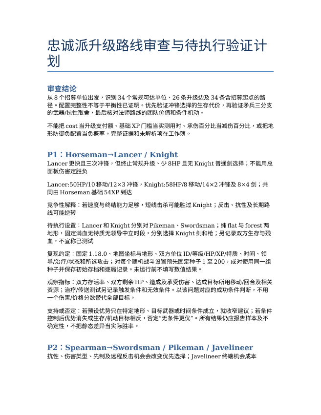
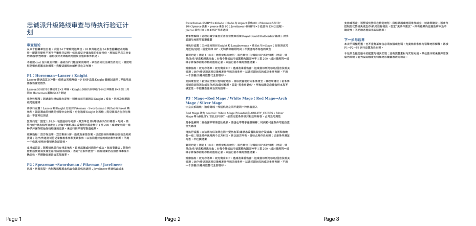
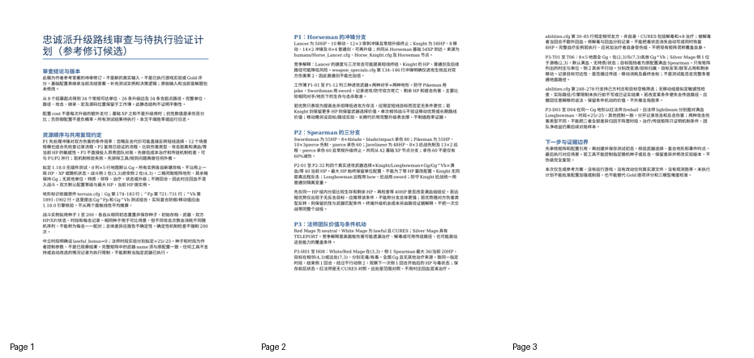
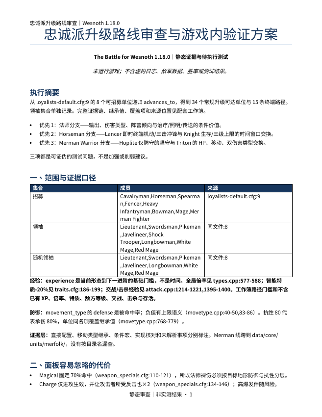
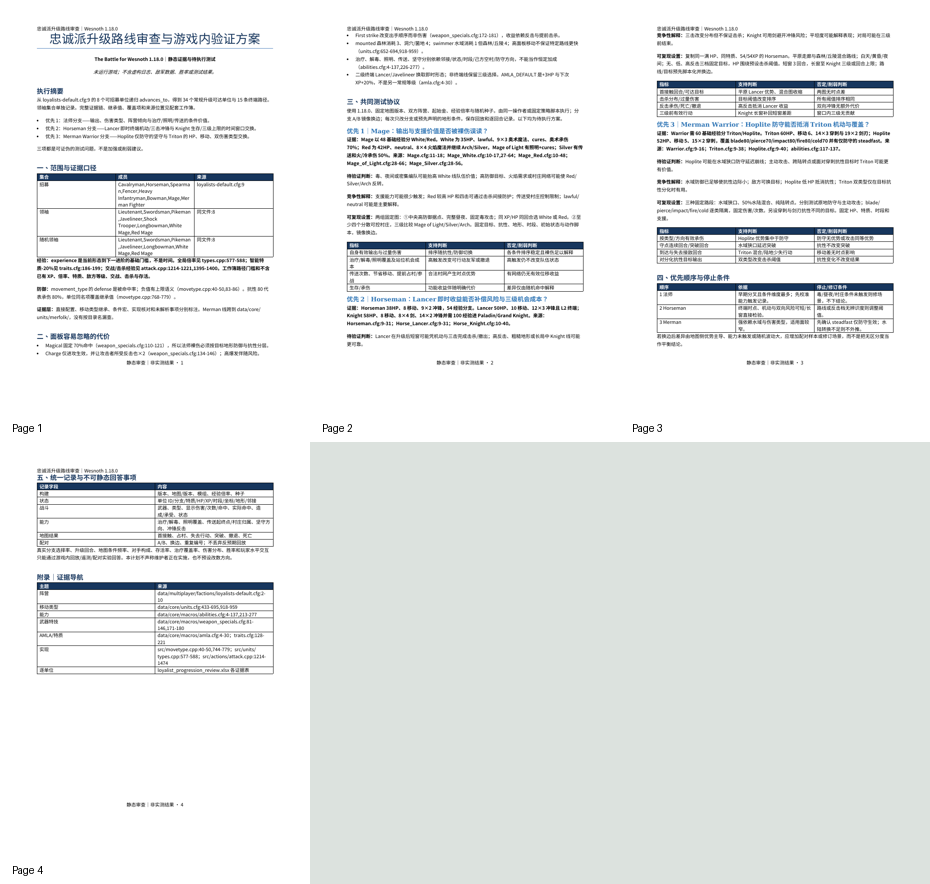
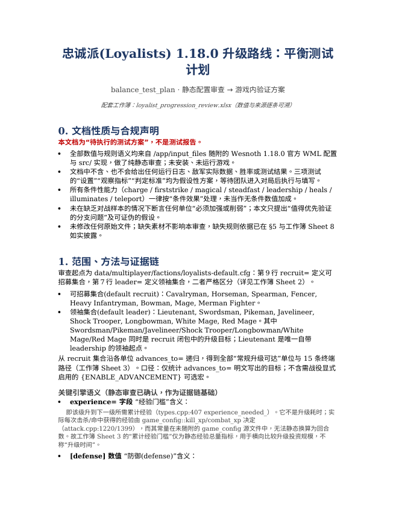
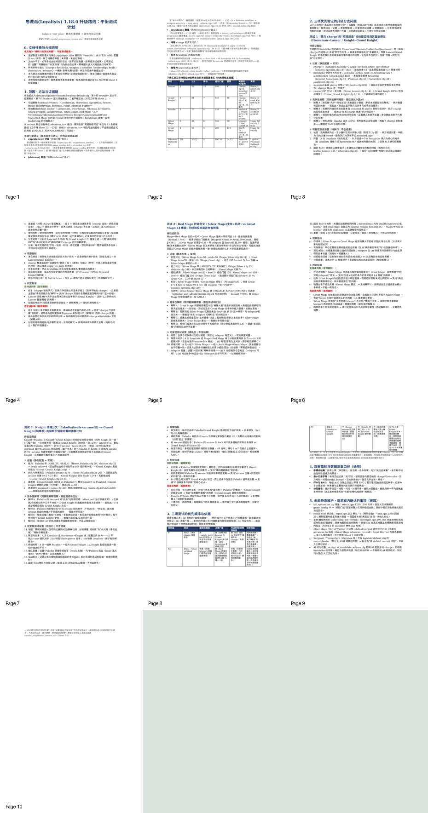

审阅草稿。输入隔离、参考复制入口及文档转换已通过；三模型解题、Gold评分与难度校准尚未完成。
忠诚派升级路线审查与游戏内验证方案
你是《The Battle for Wesnoth》的数值策划分析师。团队准备审查1.18.0版忠诚派的招募与升级体验，先需要一份建立在真实配置上的分析，再决定把游戏内测试时间投入哪些分支。请根据随附官方配置和相关实现，说明哪些升级选择存在面板比较容易忽略的代价，以及哪些问题只能进入游戏后验证。此为新拟分析委托，不声称项目维护者正在实施本次计划。
团队不希望收到按“伤害除以价格”机械排序的单位表。请形成招募到终端升级的完整证据链，比较升级收益、经验门槛、地形机动与防御、抗性和能力的条件依赖，说明为什么某些直观比较会改变。推荐应面向接下来要做的测试，而不是在缺乏对战样本的情况下宣布某个单位必须加强或削弱。
交付物
loyalist_progression_review.xlsx：从官方阵营招募名单出发的全部常规升级可达单位及路径、关键数值变化、地形与抗性依据、相关宏和实现依赖。保留来源位置，区分直接配置、继承、条件效果与未能解析的事项。路径经验指标须说明含义，不能称为实际升级时间。
balance_test_plan.docx：中文分析与测试计划。选出三个实际存在、值得优先验证的升级分支问题；每个问题写明证据、竞争性解释、可复现的测试设置、观察指标和能够支持或否定该判断的结果。测试设置属于待执行方案，可明确提出假设，不得伪造运行日志、敌军数据、胜率或测试结果。说明三项测试的优先顺序及依据。
范围与硬约束
输入位于 /app/input_files/，保持官方1.18.0原始路径。范围从 data/multiplayer/factions/loyalists-default.cfg 中的可招募单位出发，涵盖全部常规升级可达单位；领袖集合与招募集合须区分。所需配置不局限于名为human-loyalists的目录。
这是静态配置审查，不要求安装或运行游戏。缺少素材不影响本题；缺少规则依据则必须披露。不得修改原始文件、编造官方规则或把条件性能力当作无条件数值加成。仅在 /app/output/ 提交上述两份文件。
题面附录：完整源文件清单
源文件清单
/app/input_files/ 下的相对路径 |
内容与口径 |
|---|---|
COPYING |
随附官方源文件；用途及版本依原路径和文件内容核对。 |
data/core/macros/abilities.cfg |
Wesnoth 1.18.0官方WML配置/宏，含义及条件按原文件与相关实现核对。 |
data/core/macros/ai.cfg |
Wesnoth 1.18.0官方WML配置/宏，含义及条件按原文件与相关实现核对。 |
data/core/macros/ai_candidate_actions.cfg |
Wesnoth 1.18.0官方WML配置/宏，含义及条件按原文件与相关实现核对。 |
data/core/macros/ai_controller.cfg |
Wesnoth 1.18.0官方WML配置/宏，含义及条件按原文件与相关实现核对。 |
data/core/macros/amla.cfg |
Wesnoth 1.18.0官方WML配置/宏，含义及条件按原文件与相关实现核对。 |
data/core/macros/animation-utils.cfg |
Wesnoth 1.18.0官方WML配置/宏，含义及条件按原文件与相关实现核对。 |
data/core/macros/animation-utils2.cfg |
Wesnoth 1.18.0官方WML配置/宏，含义及条件按原文件与相关实现核对。 |
data/core/macros/carryover-utils.cfg |
Wesnoth 1.18.0官方WML配置/宏，含义及条件按原文件与相关实现核对。 |
data/core/macros/conditional-utils.cfg |
Wesnoth 1.18.0官方WML配置/宏，含义及条件按原文件与相关实现核对。 |
data/core/macros/debug-utils.cfg |
Wesnoth 1.18.0官方WML配置/宏，含义及条件按原文件与相关实现核对。 |
data/core/macros/deprecated-utils.cfg |
Wesnoth 1.18.0官方WML配置/宏，含义及条件按原文件与相关实现核对。 |
data/core/macros/event-utils.cfg |
Wesnoth 1.18.0官方WML配置/宏，含义及条件按原文件与相关实现核对。 |
data/core/macros/image-utils.cfg |
Wesnoth 1.18.0官方WML配置/宏，含义及条件按原文件与相关实现核对。 |
data/core/macros/interface-utils.cfg |
Wesnoth 1.18.0官方WML配置/宏，含义及条件按原文件与相关实现核对。 |
data/core/macros/items.cfg |
Wesnoth 1.18.0官方WML配置/宏，含义及条件按原文件与相关实现核对。 |
data/core/macros/movetypes.cfg |
Wesnoth 1.18.0官方WML配置/宏，含义及条件按原文件与相关实现核对。 |
data/core/macros/multiplayer.cfg |
Wesnoth 1.18.0官方WML配置/宏，含义及条件按原文件与相关实现核对。 |
data/core/macros/names.cfg |
Wesnoth 1.18.0官方WML配置/宏，含义及条件按原文件与相关实现核对。 |
data/core/macros/objective-utils.cfg |
Wesnoth 1.18.0官方WML配置/宏，含义及条件按原文件与相关实现核对。 |
data/core/macros/optional_unit_advancements.cfg |
Wesnoth 1.18.0官方WML配置/宏，含义及条件按原文件与相关实现核对。 |
data/core/macros/scenario-utils.cfg |
Wesnoth 1.18.0官方WML配置/宏，含义及条件按原文件与相关实现核对。 |
data/core/macros/schedules.cfg |
Wesnoth 1.18.0官方WML配置/宏，含义及条件按原文件与相关实现核对。 |
data/core/macros/side-utils.cfg |
Wesnoth 1.18.0官方WML配置/宏，含义及条件按原文件与相关实现核对。 |
data/core/macros/sound-utils.cfg |
Wesnoth 1.18.0官方WML配置/宏，含义及条件按原文件与相关实现核对。 |
data/core/macros/special-notes.cfg |
Wesnoth 1.18.0官方WML配置/宏，含义及条件按原文件与相关实现核对。 |
data/core/macros/teleport-utils.cfg |
Wesnoth 1.18.0官方WML配置/宏，含义及条件按原文件与相关实现核对。 |
data/core/macros/terrain-utils.cfg |
Wesnoth 1.18.0官方WML配置/宏，含义及条件按原文件与相关实现核对。 |
data/core/macros/traits.cfg |
Wesnoth 1.18.0官方WML配置/宏，含义及条件按原文件与相关实现核对。 |
data/core/macros/unit-utils.cfg |
Wesnoth 1.18.0官方WML配置/宏，含义及条件按原文件与相关实现核对。 |
data/core/macros/utils.cfg |
Wesnoth 1.18.0官方WML配置/宏，含义及条件按原文件与相关实现核对。 |
data/core/macros/weapon_specials.cfg |
Wesnoth 1.18.0官方WML配置/宏，含义及条件按原文件与相关实现核对。 |
data/core/terrain.cfg |
Wesnoth 1.18.0官方WML配置/宏，含义及条件按原文件与相关实现核对。 |
data/core/units/bats/Bat_Blood.cfg |
Wesnoth 1.18.0官方WML配置/宏，含义及条件按原文件与相关实现核对。 |
data/core/units/bats/Bat_Dread.cfg |
Wesnoth 1.18.0官方WML配置/宏，含义及条件按原文件与相关实现核对。 |
data/core/units/bats/Bat_Vampire.cfg |
Wesnoth 1.18.0官方WML配置/宏，含义及条件按原文件与相关实现核对。 |
data/core/units/boats/Boat.cfg |
Wesnoth 1.18.0官方WML配置/宏，含义及条件按原文件与相关实现核对。 |
data/core/units/boats/Galleon.cfg |
Wesnoth 1.18.0官方WML配置/宏，含义及条件按原文件与相关实现核对。 |
data/core/units/boats/Pirate_Galleon.cfg |
Wesnoth 1.18.0官方WML配置/宏，含义及条件按原文件与相关实现核对。 |
data/core/units/boats/Transport_Galleon.cfg |
Wesnoth 1.18.0官方WML配置/宏，含义及条件按原文件与相关实现核对。 |
data/core/units/drakes/Arbiter.cfg |
Wesnoth 1.18.0官方WML配置/宏，含义及条件按原文件与相关实现核对。 |
data/core/units/drakes/Armageddon.cfg |
Wesnoth 1.18.0官方WML配置/宏，含义及条件按原文件与相关实现核对。 |
data/core/units/drakes/Blademaster.cfg |
Wesnoth 1.18.0官方WML配置/宏，含义及条件按原文件与相关实现核对。 |
data/core/units/drakes/Burner.cfg |
Wesnoth 1.18.0官方WML配置/宏，含义及条件按原文件与相关实现核对。 |
data/core/units/drakes/Clasher.cfg |
Wesnoth 1.18.0官方WML配置/宏，含义及条件按原文件与相关实现核对。 |
data/core/units/drakes/Enforcer.cfg |
Wesnoth 1.18.0官方WML配置/宏，含义及条件按原文件与相关实现核对。 |
data/core/units/drakes/Fighter.cfg |
Wesnoth 1.18.0官方WML配置/宏，含义及条件按原文件与相关实现核对。 |
data/core/units/drakes/Fire.cfg |
Wesnoth 1.18.0官方WML配置/宏，含义及条件按原文件与相关实现核对。 |
data/core/units/drakes/Flameheart.cfg |
Wesnoth 1.18.0官方WML配置/宏，含义及条件按原文件与相关实现核对。 |
data/core/units/drakes/Flare.cfg |
Wesnoth 1.18.0官方WML配置/宏，含义及条件按原文件与相关实现核对。 |
data/core/units/drakes/Glider.cfg |
Wesnoth 1.18.0官方WML配置/宏，含义及条件按原文件与相关实现核对。 |
data/core/units/drakes/Hurricane.cfg |
Wesnoth 1.18.0官方WML配置/宏，含义及条件按原文件与相关实现核对。 |
data/core/units/drakes/Inferno.cfg |
Wesnoth 1.18.0官方WML配置/宏，含义及条件按原文件与相关实现核对。 |
data/core/units/drakes/Sky.cfg |
Wesnoth 1.18.0官方WML配置/宏，含义及条件按原文件与相关实现核对。 |
data/core/units/drakes/Thrasher.cfg |
Wesnoth 1.18.0官方WML配置/宏，含义及条件按原文件与相关实现核对。 |
data/core/units/drakes/Warden.cfg |
Wesnoth 1.18.0官方WML配置/宏，含义及条件按原文件与相关实现核对。 |
data/core/units/drakes/Warrior.cfg |
Wesnoth 1.18.0官方WML配置/宏，含义及条件按原文件与相关实现核对。 |
data/core/units/dunefolk/Alchemist.cfg |
Wesnoth 1.18.0官方WML配置/宏，含义及条件按原文件与相关实现核对。 |
data/core/units/dunefolk/Apothecary.cfg |
Wesnoth 1.18.0官方WML配置/宏，含义及条件按原文件与相关实现核对。 |
data/core/units/dunefolk/Blademaster.cfg |
Wesnoth 1.18.0官方WML配置/宏，含义及条件按原文件与相关实现核对。 |
data/core/units/dunefolk/Burner.cfg |
Wesnoth 1.18.0官方WML配置/宏，含义及条件按原文件与相关实现核对。 |
data/core/units/dunefolk/Captain.cfg |
Wesnoth 1.18.0官方WML配置/宏，含义及条件按原文件与相关实现核对。 |
data/core/units/dunefolk/Cataphract.cfg |
Wesnoth 1.18.0官方WML配置/宏，含义及条件按原文件与相关实现核对。 |
data/core/units/dunefolk/Explorer.cfg |
Wesnoth 1.18.0官方WML配置/宏，含义及条件按原文件与相关实现核对。 |
data/core/units/dunefolk/Falconer.cfg |
Wesnoth 1.18.0官方WML配置/宏，含义及条件按原文件与相关实现核对。 |
data/core/units/dunefolk/Firetrooper.cfg |
Wesnoth 1.18.0官方WML配置/宏，含义及条件按原文件与相关实现核对。 |
data/core/units/dunefolk/Harrier.cfg |
Wesnoth 1.18.0官方WML配置/宏，含义及条件按原文件与相关实现核对。 |
data/core/units/dunefolk/Herbalist.cfg |
Wesnoth 1.18.0官方WML配置/宏，含义及条件按原文件与相关实现核对。 |
data/core/units/dunefolk/Horse_Archer.cfg |
Wesnoth 1.18.0官方WML配置/宏，含义及条件按原文件与相关实现核对。 |
data/core/units/dunefolk/Luminary.cfg |
Wesnoth 1.18.0官方WML配置/宏，含义及条件按原文件与相关实现核对。 |
data/core/units/dunefolk/Marauder.cfg |
Wesnoth 1.18.0官方WML配置/宏，含义及条件按原文件与相关实现核对。 |
data/core/units/dunefolk/Paragon.cfg |
Wesnoth 1.18.0官方WML配置/宏，含义及条件按原文件与相关实现核对。 |
data/core/units/dunefolk/Raider.cfg |
Wesnoth 1.18.0官方WML配置/宏，含义及条件按原文件与相关实现核对。 |
data/core/units/dunefolk/Rider.cfg |
Wesnoth 1.18.0官方WML配置/宏，含义及条件按原文件与相关实现核对。 |
data/core/units/dunefolk/Rover.cfg |
Wesnoth 1.18.0官方WML配置/宏，含义及条件按原文件与相关实现核对。 |
data/core/units/dunefolk/Scorcher.cfg |
Wesnoth 1.18.0官方WML配置/宏，含义及条件按原文件与相关实现核对。 |
data/core/units/dunefolk/Skirmisher.cfg |
Wesnoth 1.18.0官方WML配置/宏，含义及条件按原文件与相关实现核对。 |
data/core/units/dunefolk/Sky_Hunter.cfg |
Wesnoth 1.18.0官方WML配置/宏，含义及条件按原文件与相关实现核对。 |
data/core/units/dunefolk/Soldier.cfg |
Wesnoth 1.18.0官方WML配置/宏，含义及条件按原文件与相关实现核对。 |
data/core/units/dunefolk/Spearguard.cfg |
Wesnoth 1.18.0官方WML配置/宏，含义及条件按原文件与相关实现核对。 |
data/core/units/dunefolk/Spearmaster.cfg |
Wesnoth 1.18.0官方WML配置/宏，含义及条件按原文件与相关实现核对。 |
data/core/units/dunefolk/Strider.cfg |
Wesnoth 1.18.0官方WML配置/宏，含义及条件按原文件与相关实现核对。 |
data/core/units/dunefolk/Sunderer.cfg |
Wesnoth 1.18.0官方WML配置/宏，含义及条件按原文件与相关实现核对。 |
data/core/units/dunefolk/Swordsman.cfg |
Wesnoth 1.18.0官方WML配置/宏，含义及条件按原文件与相关实现核对。 |
data/core/units/dunefolk/Warmaster.cfg |
Wesnoth 1.18.0官方WML配置/宏，含义及条件按原文件与相关实现核对。 |
data/core/units/dunefolk/Wayfarer.cfg |
Wesnoth 1.18.0官方WML配置/宏，含义及条件按原文件与相关实现核对。 |
data/core/units/dunefolk/Windbolt.cfg |
Wesnoth 1.18.0官方WML配置/宏，含义及条件按原文件与相关实现核对。 |
data/core/units/dunefolk/Wyvern_Rider.cfg |
Wesnoth 1.18.0官方WML配置/宏，含义及条件按原文件与相关实现核对。 |
data/core/units/dwarves/Arcanister.cfg |
Wesnoth 1.18.0官方WML配置/宏，含义及条件按原文件与相关实现核对。 |
data/core/units/dwarves/Berserker.cfg |
Wesnoth 1.18.0官方WML配置/宏，含义及条件按原文件与相关实现核对。 |
data/core/units/dwarves/Dragonguard.cfg |
Wesnoth 1.18.0官方WML配置/宏，含义及条件按原文件与相关实现核对。 |
data/core/units/dwarves/Explorer.cfg |
Wesnoth 1.18.0官方WML配置/宏，含义及条件按原文件与相关实现核对。 |
data/core/units/dwarves/Fighter.cfg |
Wesnoth 1.18.0官方WML配置/宏，含义及条件按原文件与相关实现核对。 |
data/core/units/dwarves/Guardsman.cfg |
Wesnoth 1.18.0官方WML配置/宏，含义及条件按原文件与相关实现核对。 |
data/core/units/dwarves/Lord.cfg |
Wesnoth 1.18.0官方WML配置/宏，含义及条件按原文件与相关实现核对。 |
data/core/units/dwarves/Miner.cfg |
Wesnoth 1.18.0官方WML配置/宏，含义及条件按原文件与相关实现核对。 |
data/core/units/dwarves/Pathfinder.cfg |
Wesnoth 1.18.0官方WML配置/宏，含义及条件按原文件与相关实现核对。 |
data/core/units/dwarves/Runemaster.cfg |
Wesnoth 1.18.0官方WML配置/宏，含义及条件按原文件与相关实现核对。 |
data/core/units/dwarves/Runesmith.cfg |
Wesnoth 1.18.0官方WML配置/宏，含义及条件按原文件与相关实现核对。 |
data/core/units/dwarves/Scout.cfg |
Wesnoth 1.18.0官方WML配置/宏，含义及条件按原文件与相关实现核对。 |
data/core/units/dwarves/Sentinel.cfg |
Wesnoth 1.18.0官方WML配置/宏，含义及条件按原文件与相关实现核对。 |
data/core/units/dwarves/Stalwart.cfg |
Wesnoth 1.18.0官方WML配置/宏，含义及条件按原文件与相关实现核对。 |
data/core/units/dwarves/Steelclad.cfg |
Wesnoth 1.18.0官方WML配置/宏，含义及条件按原文件与相关实现核对。 |
data/core/units/dwarves/Thunderer.cfg |
Wesnoth 1.18.0官方WML配置/宏，含义及条件按原文件与相关实现核对。 |
data/core/units/dwarves/Thunderguard.cfg |
Wesnoth 1.18.0官方WML配置/宏，含义及条件按原文件与相关实现核对。 |
data/core/units/dwarves/Ulfserker.cfg |
Wesnoth 1.18.0官方WML配置/宏，含义及条件按原文件与相关实现核对。 |
data/core/units/elves/Archer.cfg |
Wesnoth 1.18.0官方WML配置/宏，含义及条件按原文件与相关实现核对。 |
data/core/units/elves/Avenger.cfg |
Wesnoth 1.18.0官方WML配置/宏，含义及条件按原文件与相关实现核对。 |
data/core/units/elves/Captain.cfg |
Wesnoth 1.18.0官方WML配置/宏，含义及条件按原文件与相关实现核对。 |
data/core/units/elves/Champion.cfg |
Wesnoth 1.18.0官方WML配置/宏，含义及条件按原文件与相关实现核对。 |
data/core/units/elves/Druid.cfg |
Wesnoth 1.18.0官方WML配置/宏，含义及条件按原文件与相关实现核对。 |
data/core/units/elves/Enchantress.cfg |
Wesnoth 1.18.0官方WML配置/宏，含义及条件按原文件与相关实现核对。 |
data/core/units/elves/Fighter.cfg |
Wesnoth 1.18.0官方WML配置/宏，含义及条件按原文件与相关实现核对。 |
data/core/units/elves/Hero.cfg |
Wesnoth 1.18.0官方WML配置/宏，含义及条件按原文件与相关实现核对。 |
data/core/units/elves/High_Lord.cfg |
Wesnoth 1.18.0官方WML配置/宏，含义及条件按原文件与相关实现核对。 |
data/core/units/elves/Lady.cfg |
Wesnoth 1.18.0官方WML配置/宏，含义及条件按原文件与相关实现核对。 |
data/core/units/elves/Lord.cfg |
Wesnoth 1.18.0官方WML配置/宏，含义及条件按原文件与相关实现核对。 |
data/core/units/elves/Marksman.cfg |
Wesnoth 1.18.0官方WML配置/宏，含义及条件按原文件与相关实现核对。 |
data/core/units/elves/Marshal.cfg |
Wesnoth 1.18.0官方WML配置/宏，含义及条件按原文件与相关实现核对。 |
data/core/units/elves/Outrider.cfg |
Wesnoth 1.18.0官方WML配置/宏，含义及条件按原文件与相关实现核对。 |
data/core/units/elves/Ranger.cfg |
Wesnoth 1.18.0官方WML配置/宏，含义及条件按原文件与相关实现核对。 |
data/core/units/elves/Rider.cfg |
Wesnoth 1.18.0官方WML配置/宏，含义及条件按原文件与相关实现核对。 |
data/core/units/elves/Scout.cfg |
Wesnoth 1.18.0官方WML配置/宏，含义及条件按原文件与相关实现核对。 |
data/core/units/elves/Shaman.cfg |
Wesnoth 1.18.0官方WML配置/宏，含义及条件按原文件与相关实现核对。 |
data/core/units/elves/Sharpshooter.cfg |
Wesnoth 1.18.0官方WML配置/宏，含义及条件按原文件与相关实现核对。 |
data/core/units/elves/Shyde.cfg |
Wesnoth 1.18.0官方WML配置/宏，含义及条件按原文件与相关实现核对。 |
data/core/units/elves/Sorceress.cfg |
Wesnoth 1.18.0官方WML配置/宏，含义及条件按原文件与相关实现核对。 |
data/core/units/elves/Sylph.cfg |
Wesnoth 1.18.0官方WML配置/宏，含义及条件按原文件与相关实现核对。 |
data/core/units/fake/Fog_Clearer.cfg |
Wesnoth 1.18.0官方WML配置/宏，含义及条件按原文件与相关实现核对。 |
data/core/units/goblins/Direwolf_Rider.cfg |
Wesnoth 1.18.0官方WML配置/宏，含义及条件按原文件与相关实现核对。 |
data/core/units/goblins/Impaler.cfg |
Wesnoth 1.18.0官方WML配置/宏，含义及条件按原文件与相关实现核对。 |
data/core/units/goblins/Knight.cfg |
Wesnoth 1.18.0官方WML配置/宏，含义及条件按原文件与相关实现核对。 |
data/core/units/goblins/Pillager.cfg |
Wesnoth 1.18.0官方WML配置/宏，含义及条件按原文件与相关实现核对。 |
data/core/units/goblins/Rouser.cfg |
Wesnoth 1.18.0官方WML配置/宏，含义及条件按原文件与相关实现核对。 |
data/core/units/goblins/Spearman.cfg |
Wesnoth 1.18.0官方WML配置/宏，含义及条件按原文件与相关实现核对。 |
data/core/units/goblins/Wolf_Rider.cfg |
Wesnoth 1.18.0官方WML配置/宏，含义及条件按原文件与相关实现核对。 |
data/core/units/gryphons/Gryphon.cfg |
Wesnoth 1.18.0官方WML配置/宏，含义及条件按原文件与相关实现核对。 |
data/core/units/gryphons/Gryphon_Master.cfg |
Wesnoth 1.18.0官方WML配置/宏，含义及条件按原文件与相关实现核对。 |
data/core/units/gryphons/Gryphon_Rider.cfg |
Wesnoth 1.18.0官方WML配置/宏，含义及条件按原文件与相关实现核对。 |
data/core/units/humans/Horse_Grand_Knight.cfg |
Wesnoth 1.18.0官方WML配置/宏，含义及条件按原文件与相关实现核对。 |
data/core/units/humans/Horse_Knight.cfg |
Wesnoth 1.18.0官方WML配置/宏，含义及条件按原文件与相关实现核对。 |
data/core/units/humans/Horse_Lancer.cfg |
Wesnoth 1.18.0官方WML配置/宏，含义及条件按原文件与相关实现核对。 |
data/core/units/humans/Horse_Paladin.cfg |
Wesnoth 1.18.0官方WML配置/宏，含义及条件按原文件与相关实现核对。 |
data/core/units/humans/Horseman.cfg |
Wesnoth 1.18.0官方WML配置/宏，含义及条件按原文件与相关实现核对。 |
data/core/units/humans/Loyalist_Bowman.cfg |
Wesnoth 1.18.0官方WML配置/宏，含义及条件按原文件与相关实现核对。 |
data/core/units/humans/Loyalist_Cavalier.cfg |
Wesnoth 1.18.0官方WML配置/宏，含义及条件按原文件与相关实现核对。 |
data/core/units/humans/Loyalist_Cavalryman.cfg |
Wesnoth 1.18.0官方WML配置/宏，含义及条件按原文件与相关实现核对。 |
data/core/units/humans/Loyalist_Dragoon.cfg |
Wesnoth 1.18.0官方WML配置/宏，含义及条件按原文件与相关实现核对。 |
data/core/units/humans/Loyalist_Duelist.cfg |
Wesnoth 1.18.0官方WML配置/宏，含义及条件按原文件与相关实现核对。 |
data/core/units/humans/Loyalist_Fencer.cfg |
Wesnoth 1.18.0官方WML配置/宏，含义及条件按原文件与相关实现核对。 |
data/core/units/humans/Loyalist_General.cfg |
Wesnoth 1.18.0官方WML配置/宏，含义及条件按原文件与相关实现核对。 |
data/core/units/humans/Loyalist_Grand_Marshal.cfg |
Wesnoth 1.18.0官方WML配置/宏，含义及条件按原文件与相关实现核对。 |
data/core/units/humans/Loyalist_Halberdier.cfg |
Wesnoth 1.18.0官方WML配置/宏，含义及条件按原文件与相关实现核对。 |
data/core/units/humans/Loyalist_Heavy_Infantryman.cfg |
Wesnoth 1.18.0官方WML配置/宏，含义及条件按原文件与相关实现核对。 |
data/core/units/humans/Loyalist_Iron_Mauler.cfg |
Wesnoth 1.18.0官方WML配置/宏，含义及条件按原文件与相关实现核对。 |
data/core/units/humans/Loyalist_Javelineer.cfg |
Wesnoth 1.18.0官方WML配置/宏，含义及条件按原文件与相关实现核对。 |
data/core/units/humans/Loyalist_Lieutenant.cfg |
Wesnoth 1.18.0官方WML配置/宏，含义及条件按原文件与相关实现核对。 |
data/core/units/humans/Loyalist_Longbowman.cfg |
Wesnoth 1.18.0官方WML配置/宏，含义及条件按原文件与相关实现核对。 |
data/core/units/humans/Loyalist_Master_Bowman.cfg |
Wesnoth 1.18.0官方WML配置/宏，含义及条件按原文件与相关实现核对。 |
data/core/units/humans/Loyalist_Master_at_Arms.cfg |
Wesnoth 1.18.0官方WML配置/宏，含义及条件按原文件与相关实现核对。 |
data/core/units/humans/Loyalist_Pikeman.cfg |
Wesnoth 1.18.0官方WML配置/宏，含义及条件按原文件与相关实现核对。 |
data/core/units/humans/Loyalist_Royal_Guard.cfg |
Wesnoth 1.18.0官方WML配置/宏，含义及条件按原文件与相关实现核对。 |
data/core/units/humans/Loyalist_Sergeant.cfg |
Wesnoth 1.18.0官方WML配置/宏，含义及条件按原文件与相关实现核对。 |
data/core/units/humans/Loyalist_Shock_Trooper.cfg |
Wesnoth 1.18.0官方WML配置/宏，含义及条件按原文件与相关实现核对。 |
data/core/units/humans/Loyalist_Spearman.cfg |
Wesnoth 1.18.0官方WML配置/宏，含义及条件按原文件与相关实现核对。 |
data/core/units/humans/Loyalist_Swordsman.cfg |
Wesnoth 1.18.0官方WML配置/宏，含义及条件按原文件与相关实现核对。 |
data/core/units/humans/Mage.cfg |
Wesnoth 1.18.0官方WML配置/宏，含义及条件按原文件与相关实现核对。 |
data/core/units/humans/Mage_Arch.cfg |
Wesnoth 1.18.0官方WML配置/宏，含义及条件按原文件与相关实现核对。 |
data/core/units/humans/Mage_Elder.cfg |
Wesnoth 1.18.0官方WML配置/宏，含义及条件按原文件与相关实现核对。 |
data/core/units/humans/Mage_Great.cfg |
Wesnoth 1.18.0官方WML配置/宏，含义及条件按原文件与相关实现核对。 |
data/core/units/humans/Mage_Red.cfg |
Wesnoth 1.18.0官方WML配置/宏，含义及条件按原文件与相关实现核对。 |
data/core/units/humans/Mage_Silver.cfg |
Wesnoth 1.18.0官方WML配置/宏，含义及条件按原文件与相关实现核对。 |
data/core/units/humans/Mage_White.cfg |
Wesnoth 1.18.0官方WML配置/宏，含义及条件按原文件与相关实现核对。 |
data/core/units/humans/Mage_of_Light.cfg |
Wesnoth 1.18.0官方WML配置/宏，含义及条件按原文件与相关实现核对。 |
data/core/units/humans/Outlaw.cfg |
Wesnoth 1.18.0官方WML配置/宏，含义及条件按原文件与相关实现核对。 |
data/core/units/humans/Outlaw_Assassin.cfg |
Wesnoth 1.18.0官方WML配置/宏，含义及条件按原文件与相关实现核对。 |
data/core/units/humans/Outlaw_Bandit.cfg |
Wesnoth 1.18.0官方WML配置/宏，含义及条件按原文件与相关实现核对。 |
data/core/units/humans/Outlaw_Footpad.cfg |
Wesnoth 1.18.0官方WML配置/宏，含义及条件按原文件与相关实现核对。 |
data/core/units/humans/Outlaw_Fugitive.cfg |
Wesnoth 1.18.0官方WML配置/宏，含义及条件按原文件与相关实现核对。 |
data/core/units/humans/Outlaw_Highwayman.cfg |
Wesnoth 1.18.0官方WML配置/宏，含义及条件按原文件与相关实现核对。 |
data/core/units/humans/Outlaw_Rogue.cfg |
Wesnoth 1.18.0官方WML配置/宏，含义及条件按原文件与相关实现核对。 |
data/core/units/humans/Outlaw_Ruffian.cfg |
Wesnoth 1.18.0官方WML配置/宏，含义及条件按原文件与相关实现核对。 |
data/core/units/humans/Outlaw_Thief.cfg |
Wesnoth 1.18.0官方WML配置/宏，含义及条件按原文件与相关实现核对。 |
data/core/units/humans/Outlaw_Thug.cfg |
Wesnoth 1.18.0官方WML配置/宏，含义及条件按原文件与相关实现核对。 |
data/core/units/humans/Peasant.cfg |
Wesnoth 1.18.0官方WML配置/宏，含义及条件按原文件与相关实现核对。 |
data/core/units/humans/Royal_Warrior.cfg |
Wesnoth 1.18.0官方WML配置/宏，含义及条件按原文件与相关实现核对。 |
data/core/units/humans/Woodsman.cfg |
Wesnoth 1.18.0官方WML配置/宏，含义及条件按原文件与相关实现核对。 |
data/core/units/humans/Woodsman_Huntsman.cfg |
Wesnoth 1.18.0官方WML配置/宏，含义及条件按原文件与相关实现核对。 |
data/core/units/humans/Woodsman_Poacher.cfg |
Wesnoth 1.18.0官方WML配置/宏，含义及条件按原文件与相关实现核对。 |
data/core/units/humans/Woodsman_Ranger.cfg |
Wesnoth 1.18.0官方WML配置/宏，含义及条件按原文件与相关实现核对。 |
data/core/units/humans/Woodsman_Trapper.cfg |
Wesnoth 1.18.0官方WML配置/宏，含义及条件按原文件与相关实现核对。 |
data/core/units/merfolk/Brawler.cfg |
Wesnoth 1.18.0官方WML配置/宏，含义及条件按原文件与相关实现核对。 |
data/core/units/merfolk/Citizen.cfg |
Wesnoth 1.18.0官方WML配置/宏，含义及条件按原文件与相关实现核对。 |
data/core/units/merfolk/Diviner.cfg |
Wesnoth 1.18.0官方WML配置/宏，含义及条件按原文件与相关实现核对。 |
data/core/units/merfolk/Enchantress.cfg |
Wesnoth 1.18.0官方WML配置/宏，含义及条件按原文件与相关实现核对。 |
data/core/units/merfolk/Entangler.cfg |
Wesnoth 1.18.0官方WML配置/宏，含义及条件按原文件与相关实现核对。 |
data/core/units/merfolk/Fighter.cfg |
Wesnoth 1.18.0官方WML配置/宏，含义及条件按原文件与相关实现核对。 |
data/core/units/merfolk/Hoplite.cfg |
Wesnoth 1.18.0官方WML配置/宏，含义及条件按原文件与相关实现核对。 |
data/core/units/merfolk/Hunter.cfg |
Wesnoth 1.18.0官方WML配置/宏，含义及条件按原文件与相关实现核对。 |
data/core/units/merfolk/Initiate.cfg |
Wesnoth 1.18.0官方WML配置/宏，含义及条件按原文件与相关实现核对。 |
data/core/units/merfolk/Javelineer.cfg |
Wesnoth 1.18.0官方WML配置/宏，含义及条件按原文件与相关实现核对。 |
data/core/units/merfolk/Netcaster.cfg |
Wesnoth 1.18.0官方WML配置/宏，含义及条件按原文件与相关实现核对。 |
data/core/units/merfolk/Priestess.cfg |
Wesnoth 1.18.0官方WML配置/宏，含义及条件按原文件与相关实现核对。 |
data/core/units/merfolk/Siren.cfg |
Wesnoth 1.18.0官方WML配置/宏，含义及条件按原文件与相关实现核对。 |
data/core/units/merfolk/Spearman.cfg |
Wesnoth 1.18.0官方WML配置/宏，含义及条件按原文件与相关实现核对。 |
data/core/units/merfolk/Triton.cfg |
Wesnoth 1.18.0官方WML配置/宏，含义及条件按原文件与相关实现核对。 |
data/core/units/merfolk/Warrior.cfg |
Wesnoth 1.18.0官方WML配置/宏，含义及条件按原文件与相关实现核对。 |
data/core/units/monsters/Ant.cfg |
Wesnoth 1.18.0官方WML配置/宏，含义及条件按原文件与相关实现核对。 |
data/core/units/monsters/Ant_Egg.cfg |
Wesnoth 1.18.0官方WML配置/宏，含义及条件按原文件与相关实现核对。 |
data/core/units/monsters/Ant_Fire.cfg |
Wesnoth 1.18.0官方WML配置/宏，含义及条件按原文件与相关实现核对。 |
data/core/units/monsters/Ant_Fire_Queen.cfg |
Wesnoth 1.18.0官方WML配置/宏，含义及条件按原文件与相关实现核对。 |
data/core/units/monsters/Ant_Firebane.cfg |
Wesnoth 1.18.0官方WML配置/宏，含义及条件按原文件与相关实现核对。 |
data/core/units/monsters/Ant_Firebomb.cfg |
Wesnoth 1.18.0官方WML配置/宏，含义及条件按原文件与相关实现核对。 |
data/core/units/monsters/Ant_Queen.cfg |
Wesnoth 1.18.0官方WML配置/宏，含义及条件按原文件与相关实现核对。 |
data/core/units/monsters/Ant_Soldier.cfg |
Wesnoth 1.18.0官方WML配置/宏，含义及条件按原文件与相关实现核对。 |
data/core/units/monsters/Bear.cfg |
Wesnoth 1.18.0官方WML配置/宏，含义及条件按原文件与相关实现核对。 |
data/core/units/monsters/Boar.cfg |
Wesnoth 1.18.0官方WML配置/宏，含义及条件按原文件与相关实现核对。 |
data/core/units/monsters/Boar_Piglet.cfg |
Wesnoth 1.18.0官方WML配置/宏，含义及条件按原文件与相关实现核对。 |
data/core/units/monsters/Caribe.cfg |
Wesnoth 1.18.0官方WML配置/宏，含义及条件按原文件与相关实现核对。 |
data/core/units/monsters/Caribe_Hunter.cfg |
Wesnoth 1.18.0官方WML配置/宏，含义及条件按原文件与相关实现核对。 |
data/core/units/monsters/Caribe_Nibbler.cfg |
Wesnoth 1.18.0官方WML配置/宏，含义及条件按原文件与相关实现核对。 |
data/core/units/monsters/Crocodile.cfg |
Wesnoth 1.18.0官方WML配置/宏，含义及条件按原文件与相关实现核对。 |
data/core/units/monsters/Cuttle_Fish.cfg |
Wesnoth 1.18.0官方WML配置/宏，含义及条件按原文件与相关实现核对。 |
data/core/units/monsters/Dragonfly.cfg |
Wesnoth 1.18.0官方WML配置/宏，含义及条件按原文件与相关实现核对。 |
data/core/units/monsters/Dragonfly_Grand.cfg |
Wesnoth 1.18.0官方WML配置/宏，含义及条件按原文件与相关实现核对。 |
data/core/units/monsters/Dragonfly_Naiad.cfg |
Wesnoth 1.18.0官方WML配置/宏，含义及条件按原文件与相关实现核对。 |
data/core/units/monsters/Elder_Falcon.cfg |
Wesnoth 1.18.0官方WML配置/宏，含义及条件按原文件与相关实现核对。 |
data/core/units/monsters/Falcon.cfg |
Wesnoth 1.18.0官方WML配置/宏，含义及条件按原文件与相关实现核对。 |
data/core/units/monsters/Fire_Dragon.cfg |
Wesnoth 1.18.0官方WML配置/宏，含义及条件按原文件与相关实现核对。 |
data/core/units/monsters/Fire_Guardian.cfg |
Wesnoth 1.18.0官方WML配置/宏，含义及条件按原文件与相关实现核对。 |
data/core/units/monsters/Fire_Wraith.cfg |
Wesnoth 1.18.0官方WML配置/宏，含义及条件按原文件与相关实现核对。 |
data/core/units/monsters/Frost_Stoat.cfg |
Wesnoth 1.18.0官方WML配置/宏，含义及条件按原文件与相关实现核对。 |
data/core/units/monsters/Giant_Mudcrawler.cfg |
Wesnoth 1.18.0官方WML配置/宏，含义及条件按原文件与相关实现核对。 |
data/core/units/monsters/Giant_Rat.cfg |
Wesnoth 1.18.0官方WML配置/宏，含义及条件按原文件与相关实现核对。 |
data/core/units/monsters/Giant_Scorpion.cfg |
Wesnoth 1.18.0官方WML配置/宏，含义及条件按原文件与相关实现核对。 |
data/core/units/monsters/Giant_Scorpling.cfg |
Wesnoth 1.18.0官方WML配置/宏，含义及条件按原文件与相关实现核对。 |
data/core/units/monsters/Giant_Spider.cfg |
Wesnoth 1.18.0官方WML配置/宏，含义及条件按原文件与相关实现核对。 |
data/core/units/monsters/Horse.cfg |
Wesnoth 1.18.0官方WML配置/宏，含义及条件按原文件与相关实现核对。 |
data/core/units/monsters/Horse_Black.cfg |
Wesnoth 1.18.0官方WML配置/宏，含义及条件按原文件与相关实现核对。 |
data/core/units/monsters/Horse_Dark.cfg |
Wesnoth 1.18.0官方WML配置/宏，含义及条件按原文件与相关实现核对。 |
data/core/units/monsters/Horse_Great.cfg |
Wesnoth 1.18.0官方WML配置/宏，含义及条件按原文件与相关实现核对。 |
data/core/units/monsters/Horse_White.cfg |
Wesnoth 1.18.0官方WML配置/宏，含义及条件按原文件与相关实现核对。 |
data/core/units/monsters/Icemonax.cfg |
Wesnoth 1.18.0官方WML配置/宏，含义及条件按原文件与相关实现核对。 |
data/core/units/monsters/Icemonax_Greater.cfg |
Wesnoth 1.18.0官方WML配置/宏，含义及条件按原文件与相关实现核对。 |
data/core/units/monsters/Jinn.cfg |
Wesnoth 1.18.0官方WML配置/宏，含义及条件按原文件与相关实现核对。 |
data/core/units/monsters/Kraken.cfg |
Wesnoth 1.18.0官方WML配置/宏，含义及条件按原文件与相关实现核对。 |
data/core/units/monsters/Mudcrawler.cfg |
Wesnoth 1.18.0官方WML配置/宏，含义及条件按原文件与相关实现核对。 |
data/core/units/monsters/Raven.cfg |
Wesnoth 1.18.0官方WML配置/宏，含义及条件按原文件与相关实现核对。 |
data/core/units/monsters/Raven_Harbinger.cfg |
Wesnoth 1.18.0官方WML配置/宏，含义及条件按原文件与相关实现核对。 |
data/core/units/monsters/Raven_Omen.cfg |
Wesnoth 1.18.0官方WML配置/宏，含义及条件按原文件与相关实现核对。 |
data/core/units/monsters/Roc.cfg |
Wesnoth 1.18.0官方WML配置/宏，含义及条件按原文件与相关实现核对。 |
data/core/units/monsters/Rock_Scorpion.cfg |
Wesnoth 1.18.0官方WML配置/宏，含义及条件按原文件与相关实现核对。 |
data/core/units/monsters/Sand_Scamperer.cfg |
Wesnoth 1.18.0官方WML配置/宏，含义及条件按原文件与相关实现核对。 |
data/core/units/monsters/Sand_Scuttler.cfg |
Wesnoth 1.18.0官方WML配置/宏，含义及条件按原文件与相关实现核对。 |
data/core/units/monsters/Scarab.cfg |
Wesnoth 1.18.0官方WML配置/宏，含义及条件按原文件与相关实现核对。 |
data/core/units/monsters/Sea_Serpent.cfg |
Wesnoth 1.18.0官方WML配置/宏，含义及条件按原文件与相关实现核对。 |
data/core/units/monsters/Seahorse.cfg |
Wesnoth 1.18.0官方WML配置/宏，含义及条件按原文件与相关实现核对。 |
data/core/units/monsters/Shadow_Jumping_Spider.cfg |
Wesnoth 1.18.0官方WML配置/宏，含义及条件按原文件与相关实现核对。 |
data/core/units/monsters/Skeletal_Dragon.cfg |
Wesnoth 1.18.0官方WML配置/宏，含义及条件按原文件与相关实现核对。 |
data/core/units/monsters/Tentacle.cfg |
Wesnoth 1.18.0官方WML配置/宏，含义及条件按原文件与相关实现核对。 |
data/core/units/monsters/Water_Serpent.cfg |
Wesnoth 1.18.0官方WML配置/宏，含义及条件按原文件与相关实现核对。 |
data/core/units/monsters/Wild_Wyvern.cfg |
Wesnoth 1.18.0官方WML配置/宏，含义及条件按原文件与相关实现核对。 |
data/core/units/monsters/Wolf.cfg |
Wesnoth 1.18.0官方WML配置/宏，含义及条件按原文件与相关实现核对。 |
data/core/units/monsters/Wolf_Dire.cfg |
Wesnoth 1.18.0官方WML配置/宏，含义及条件按原文件与相关实现核对。 |
data/core/units/monsters/Wolf_Great.cfg |
Wesnoth 1.18.0官方WML配置/宏，含义及条件按原文件与相关实现核对。 |
data/core/units/monsters/Yeti.cfg |
Wesnoth 1.18.0官方WML配置/宏，含义及条件按原文件与相关实现核对。 |
data/core/units/nagas/Dirkfang.cfg |
Wesnoth 1.18.0官方WML配置/宏，含义及条件按原文件与相关实现核对。 |
data/core/units/nagas/Fighter.cfg |
Wesnoth 1.18.0官方WML配置/宏，含义及条件按原文件与相关实现核对。 |
data/core/units/nagas/Guard.cfg |
Wesnoth 1.18.0官方WML配置/宏，含义及条件按原文件与相关实现核对。 |
data/core/units/nagas/Guard_High.cfg |
Wesnoth 1.18.0官方WML配置/宏，含义及条件按原文件与相关实现核对。 |
data/core/units/nagas/Guard_Shield.cfg |
Wesnoth 1.18.0官方WML配置/宏，含义及条件按原文件与相关实现核对。 |
data/core/units/nagas/Myrmidon.cfg |
Wesnoth 1.18.0官方WML配置/宏，含义及条件按原文件与相关实现核对。 |
data/core/units/nagas/Ophidian.cfg |
Wesnoth 1.18.0官方WML配置/宏，含义及条件按原文件与相关实现核对。 |
data/core/units/nagas/Ringcaster.cfg |
Wesnoth 1.18.0官方WML配置/宏，含义及条件按原文件与相关实现核对。 |
data/core/units/nagas/Sicarius.cfg |
Wesnoth 1.18.0官方WML配置/宏，含义及条件按原文件与相关实现核对。 |
data/core/units/nagas/Warrior.cfg |
Wesnoth 1.18.0官方WML配置/宏，含义及条件按原文件与相关实现核对。 |
data/core/units/nagas/Zephyr.cfg |
Wesnoth 1.18.0官方WML配置/宏，含义及条件按原文件与相关实现核对。 |
data/core/units/ogres/Ogre.cfg |
Wesnoth 1.18.0官方WML配置/宏，含义及条件按原文件与相关实现核对。 |
data/core/units/ogres/Young_Ogre.cfg |
Wesnoth 1.18.0官方WML配置/宏，含义及条件按原文件与相关实现核对。 |
data/core/units/orcs/Archer.cfg |
Wesnoth 1.18.0官方WML配置/宏，含义及条件按原文件与相关实现核对。 |
data/core/units/orcs/Assassin.cfg |
Wesnoth 1.18.0官方WML配置/宏，含义及条件按原文件与相关实现核对。 |
data/core/units/orcs/Crossbowman.cfg |
Wesnoth 1.18.0官方WML配置/宏，含义及条件按原文件与相关实现核对。 |
data/core/units/orcs/Grunt.cfg |
Wesnoth 1.18.0官方WML配置/宏，含义及条件按原文件与相关实现核对。 |
data/core/units/orcs/Leader.cfg |
Wesnoth 1.18.0官方WML配置/宏，含义及条件按原文件与相关实现核对。 |
data/core/units/orcs/Nightblade.cfg |
Wesnoth 1.18.0官方WML配置/宏，含义及条件按原文件与相关实现核对。 |
data/core/units/orcs/Ruler.cfg |
Wesnoth 1.18.0官方WML配置/宏，含义及条件按原文件与相关实现核对。 |
data/core/units/orcs/Slayer.cfg |
Wesnoth 1.18.0官方WML配置/宏，含义及条件按原文件与相关实现核对。 |
data/core/units/orcs/Slurbow.cfg |
Wesnoth 1.18.0官方WML配置/宏，含义及条件按原文件与相关实现核对。 |
data/core/units/orcs/Sovereign.cfg |
Wesnoth 1.18.0官方WML配置/宏，含义及条件按原文件与相关实现核对。 |
data/core/units/orcs/Warlord.cfg |
Wesnoth 1.18.0官方WML配置/宏，含义及条件按原文件与相关实现核对。 |
data/core/units/orcs/Warrior.cfg |
Wesnoth 1.18.0官方WML配置/宏，含义及条件按原文件与相关实现核对。 |
data/core/units/saurians/Ambusher.cfg |
Wesnoth 1.18.0官方WML配置/宏，含义及条件按原文件与相关实现核对。 |
data/core/units/saurians/Augur.cfg |
Wesnoth 1.18.0官方WML配置/宏，含义及条件按原文件与相关实现核对。 |
data/core/units/saurians/Flanker.cfg |
Wesnoth 1.18.0官方WML配置/宏，含义及条件按原文件与相关实现核对。 |
data/core/units/saurians/Javelineer.cfg |
Wesnoth 1.18.0官方WML配置/宏，含义及条件按原文件与相关实现核对。 |
data/core/units/saurians/Oracle.cfg |
Wesnoth 1.18.0官方WML配置/宏，含义及条件按原文件与相关实现核对。 |
data/core/units/saurians/Prophet.cfg |
Wesnoth 1.18.0官方WML配置/宏，含义及条件按原文件与相关实现核对。 |
data/core/units/saurians/Seer.cfg |
Wesnoth 1.18.0官方WML配置/宏，含义及条件按原文件与相关实现核对。 |
data/core/units/saurians/Skirmisher.cfg |
Wesnoth 1.18.0官方WML配置/宏，含义及条件按原文件与相关实现核对。 |
data/core/units/saurians/Soothsayer.cfg |
Wesnoth 1.18.0官方WML配置/宏，含义及条件按原文件与相关实现核对。 |
data/core/units/saurians/Spearthrower.cfg |
Wesnoth 1.18.0官方WML配置/宏，含义及条件按原文件与相关实现核对。 |
data/core/units/trolls/Great.cfg |
Wesnoth 1.18.0官方WML配置/宏，含义及条件按原文件与相关实现核对。 |
data/core/units/trolls/Hero.cfg |
Wesnoth 1.18.0官方WML配置/宏，含义及条件按原文件与相关实现核对。 |
data/core/units/trolls/Rocklobber.cfg |
Wesnoth 1.18.0官方WML配置/宏，含义及条件按原文件与相关实现核对。 |
data/core/units/trolls/Troll.cfg |
Wesnoth 1.18.0官方WML配置/宏，含义及条件按原文件与相关实现核对。 |
data/core/units/trolls/Troll_Shaman.cfg |
Wesnoth 1.18.0官方WML配置/宏，含义及条件按原文件与相关实现核对。 |
data/core/units/trolls/Warrior.cfg |
Wesnoth 1.18.0官方WML配置/宏，含义及条件按原文件与相关实现核对。 |
data/core/units/trolls/Whelp.cfg |
Wesnoth 1.18.0官方WML配置/宏，含义及条件按原文件与相关实现核对。 |
data/core/units/undead/Corpse_Ghast.cfg |
Wesnoth 1.18.0官方WML配置/宏，含义及条件按原文件与相关实现核对。 |
data/core/units/undead/Corpse_Ghoul.cfg |
Wesnoth 1.18.0官方WML配置/宏，含义及条件按原文件与相关实现核对。 |
data/core/units/undead/Corpse_Necrophage.cfg |
Wesnoth 1.18.0官方WML配置/宏，含义及条件按原文件与相关实现核对。 |
data/core/units/undead/Corpse_Soulless.cfg |
Wesnoth 1.18.0官方WML配置/宏，含义及条件按原文件与相关实现核对。 |
data/core/units/undead/Corpse_Walking.cfg |
Wesnoth 1.18.0官方WML配置/宏，含义及条件按原文件与相关实现核对。 |
data/core/units/undead/Necro_Ancient_Lich.cfg |
Wesnoth 1.18.0官方WML配置/宏，含义及条件按原文件与相关实现核对。 |
data/core/units/undead/Necro_Dark_Adept.cfg |
Wesnoth 1.18.0官方WML配置/宏，含义及条件按原文件与相关实现核对。 |
data/core/units/undead/Necro_Dark_Sorcerer.cfg |
Wesnoth 1.18.0官方WML配置/宏，含义及条件按原文件与相关实现核对。 |
data/core/units/undead/Necro_Lich.cfg |
Wesnoth 1.18.0官方WML配置/宏，含义及条件按原文件与相关实现核对。 |
data/core/units/undead/Necromancer.cfg |
Wesnoth 1.18.0官方WML配置/宏，含义及条件按原文件与相关实现核对。 |
data/core/units/undead/Skele_Banebow.cfg |
Wesnoth 1.18.0官方WML配置/宏，含义及条件按原文件与相关实现核对。 |
data/core/units/undead/Skele_Bone_Knight.cfg |
Wesnoth 1.18.0官方WML配置/宏，含义及条件按原文件与相关实现核对。 |
data/core/units/undead/Skele_Bone_Shooter.cfg |
Wesnoth 1.18.0官方WML配置/宏，含义及条件按原文件与相关实现核对。 |
data/core/units/undead/Skele_Chocobone.cfg |
Wesnoth 1.18.0官方WML配置/宏，含义及条件按原文件与相关实现核对。 |
data/core/units/undead/Skele_Death_Knight.cfg |
Wesnoth 1.18.0官方WML配置/宏，含义及条件按原文件与相关实现核对。 |
data/core/units/undead/Skele_Death_Squire.cfg |
Wesnoth 1.18.0官方WML配置/宏，含义及条件按原文件与相关实现核对。 |
data/core/units/undead/Skele_Deathblade.cfg |
Wesnoth 1.18.0官方WML配置/宏，含义及条件按原文件与相关实现核对。 |
data/core/units/undead/Skele_Draug.cfg |
Wesnoth 1.18.0官方WML配置/宏，含义及条件按原文件与相关实现核对。 |
data/core/units/undead/Skele_Revenant.cfg |
Wesnoth 1.18.0官方WML配置/宏，含义及条件按原文件与相关实现核对。 |
data/core/units/undead/Skeleton.cfg |
Wesnoth 1.18.0官方WML配置/宏，含义及条件按原文件与相关实现核对。 |
data/core/units/undead/Skeleton_Archer.cfg |
Wesnoth 1.18.0官方WML配置/宏，含义及条件按原文件与相关实现核对。 |
data/core/units/undead/Skeleton_Rider.cfg |
Wesnoth 1.18.0官方WML配置/宏，含义及条件按原文件与相关实现核对。 |
data/core/units/undead/Spirit_Ghost.cfg |
Wesnoth 1.18.0官方WML配置/宏，含义及条件按原文件与相关实现核对。 |
data/core/units/undead/Spirit_Nightgaunt.cfg |
Wesnoth 1.18.0官方WML配置/宏，含义及条件按原文件与相关实现核对。 |
data/core/units/undead/Spirit_Shadow.cfg |
Wesnoth 1.18.0官方WML配置/宏，含义及条件按原文件与相关实现核对。 |
data/core/units/undead/Spirit_Spectre.cfg |
Wesnoth 1.18.0官方WML配置/宏，含义及条件按原文件与相关实现核对。 |
data/core/units/undead/Spirit_Wraith.cfg |
Wesnoth 1.18.0官方WML配置/宏，含义及条件按原文件与相关实现核对。 |
data/core/units/wose/Ancient.cfg |
Wesnoth 1.18.0官方WML配置/宏，含义及条件按原文件与相关实现核对。 |
data/core/units/wose/Elder.cfg |
Wesnoth 1.18.0官方WML配置/宏，含义及条件按原文件与相关实现核对。 |
data/core/units/wose/Wose.cfg |
Wesnoth 1.18.0官方WML配置/宏，含义及条件按原文件与相关实现核对。 |
data/core/units/wose/Wose_Sapling.cfg |
Wesnoth 1.18.0官方WML配置/宏，含义及条件按原文件与相关实现核对。 |
data/core/units/wose/Wose_Shaman.cfg |
Wesnoth 1.18.0官方WML配置/宏，含义及条件按原文件与相关实现核对。 |
data/core/units.cfg |
Wesnoth 1.18.0官方WML配置/宏，含义及条件按原文件与相关实现核对。 |
data/multiplayer/factions/drakes-aoh.cfg |
Wesnoth 1.18.0官方WML配置/宏，含义及条件按原文件与相关实现核对。 |
data/multiplayer/factions/drakes-default.cfg |
Wesnoth 1.18.0官方WML配置/宏，含义及条件按原文件与相关实现核对。 |
data/multiplayer/factions/dunefolk-aoh.cfg |
Wesnoth 1.18.0官方WML配置/宏，含义及条件按原文件与相关实现核对。 |
data/multiplayer/factions/dunefolk-default.cfg |
Wesnoth 1.18.0官方WML配置/宏，含义及条件按原文件与相关实现核对。 |
data/multiplayer/factions/knalgans-aoh.cfg |
Wesnoth 1.18.0官方WML配置/宏，含义及条件按原文件与相关实现核对。 |
data/multiplayer/factions/knalgans-default.cfg |
Wesnoth 1.18.0官方WML配置/宏，含义及条件按原文件与相关实现核对。 |
data/multiplayer/factions/loyalists-aoh.cfg |
Wesnoth 1.18.0官方WML配置/宏，含义及条件按原文件与相关实现核对。 |
data/multiplayer/factions/loyalists-default.cfg |
Wesnoth 1.18.0官方WML配置/宏，含义及条件按原文件与相关实现核对。 |
data/multiplayer/factions/northerners-aoh.cfg |
Wesnoth 1.18.0官方WML配置/宏，含义及条件按原文件与相关实现核对。 |
data/multiplayer/factions/northerners-default.cfg |
Wesnoth 1.18.0官方WML配置/宏，含义及条件按原文件与相关实现核对。 |
data/multiplayer/factions/rebels-aoh.cfg |
Wesnoth 1.18.0官方WML配置/宏，含义及条件按原文件与相关实现核对。 |
data/multiplayer/factions/rebels-default.cfg |
Wesnoth 1.18.0官方WML配置/宏，含义及条件按原文件与相关实现核对。 |
data/multiplayer/factions/undead-aoh.cfg |
Wesnoth 1.18.0官方WML配置/宏，含义及条件按原文件与相关实现核对。 |
data/multiplayer/factions/undead-default.cfg |
Wesnoth 1.18.0官方WML配置/宏，含义及条件按原文件与相关实现核对。 |
data/tools/wesnoth/README.md |
随附官方源文件；用途及版本依原路径和文件内容核对。 |
data/tools/wesnoth/__init__.py |
Wesnoth随附官方WML解析工具源码。 |
data/tools/wesnoth/base64url.py |
Wesnoth随附官方WML解析工具源码。 |
data/tools/wesnoth/campaignserver_client.py |
Wesnoth随附官方WML解析工具源码。 |
data/tools/wesnoth/libgithub.py |
Wesnoth随附官方WML解析工具源码。 |
data/tools/wesnoth/trackplacer3/__init__.py |
Wesnoth随附官方WML解析工具源码。 |
data/tools/wesnoth/trackplacer3/cfgfileformat.py |
Wesnoth随附官方WML解析工具源码。 |
data/tools/wesnoth/trackplacer3/datatypes.py |
Wesnoth随附官方WML解析工具源码。 |
data/tools/wesnoth/trackplacer3/tmxfileformat.py |
Wesnoth随附官方WML解析工具源码。 |
data/tools/wesnoth/version.py |
Wesnoth随附官方WML解析工具源码。 |
data/tools/wesnoth/wescamp.py |
Wesnoth随附官方WML解析工具源码。 |
data/tools/wesnoth/wmldata.py |
Wesnoth随附官方WML解析工具源码。 |
data/tools/wesnoth/wmliterator3.py |
Wesnoth随附官方WML解析工具源码。 |
data/tools/wesnoth/wmlparser.py |
Wesnoth随附官方WML解析工具源码。 |
data/tools/wesnoth/wmlparser3.py |
Wesnoth随附官方WML解析工具源码。 |
data/tools/wesnoth/wmltools3.py |
Wesnoth随附官方WML解析工具源码。 |
src/actions/attack.cpp |
Wesnoth 1.18.0官方规则实现源码，供配置语义核对。 |
src/movetype.cpp |
Wesnoth 1.18.0官方规则实现源码，供配置语义核对。 |
src/movetype.hpp |
Wesnoth 1.18.0官方规则实现源码，供配置语义核对。 |
src/units/abilities.cpp |
Wesnoth 1.18.0官方规则实现源码，供配置语义核对。 |
src/units/abilities.hpp |
Wesnoth 1.18.0官方规则实现源码，供配置语义核对。 |
src/units/animation.cpp |
Wesnoth 1.18.0官方规则实现源码，供配置语义核对。 |
src/units/animation.hpp |
Wesnoth 1.18.0官方规则实现源码，供配置语义核对。 |
src/units/animation_component.cpp |
Wesnoth 1.18.0官方规则实现源码，供配置语义核对。 |
src/units/animation_component.hpp |
Wesnoth 1.18.0官方规则实现源码，供配置语义核对。 |
src/units/attack_type.cpp |
Wesnoth 1.18.0官方规则实现源码，供配置语义核对。 |
src/units/attack_type.hpp |
Wesnoth 1.18.0官方规则实现源码，供配置语义核对。 |
src/units/conditional_type.hpp |
Wesnoth 1.18.0官方规则实现源码，供配置语义核对。 |
src/units/drawer.cpp |
Wesnoth 1.18.0官方规则实现源码，供配置语义核对。 |
src/units/drawer.hpp |
Wesnoth 1.18.0官方规则实现源码，供配置语义核对。 |
src/units/filter.cpp |
Wesnoth 1.18.0官方规则实现源码，供配置语义核对。 |
src/units/filter.hpp |
Wesnoth 1.18.0官方规则实现源码，供配置语义核对。 |
src/units/formula_manager.cpp |
Wesnoth 1.18.0官方规则实现源码，供配置语义核对。 |
src/units/formula_manager.hpp |
Wesnoth 1.18.0官方规则实现源码，供配置语义核对。 |
src/units/frame.cpp |
Wesnoth 1.18.0官方规则实现源码，供配置语义核对。 |
src/units/frame.hpp |
Wesnoth 1.18.0官方规则实现源码，供配置语义核对。 |
src/units/frame_private.hpp |
Wesnoth 1.18.0官方规则实现源码，供配置语义核对。 |
src/units/helper.cpp |
Wesnoth 1.18.0官方规则实现源码，供配置语义核对。 |
src/units/helper.hpp |
Wesnoth 1.18.0官方规则实现源码，供配置语义核对。 |
src/units/id.cpp |
Wesnoth 1.18.0官方规则实现源码，供配置语义核对。 |
src/units/id.hpp |
Wesnoth 1.18.0官方规则实现源码，供配置语义核对。 |
src/units/make.cpp |
Wesnoth 1.18.0官方规则实现源码，供配置语义核对。 |
src/units/make.hpp |
Wesnoth 1.18.0官方规则实现源码，供配置语义核对。 |
src/units/map.cpp |
Wesnoth 1.18.0官方规则实现源码，供配置语义核对。 |
src/units/map.hpp |
Wesnoth 1.18.0官方规则实现源码，供配置语义核对。 |
src/units/orb_status.cpp |
Wesnoth 1.18.0官方规则实现源码，供配置语义核对。 |
src/units/orb_status.hpp |
Wesnoth 1.18.0官方规则实现源码，供配置语义核对。 |
src/units/ptr.hpp |
Wesnoth 1.18.0官方规则实现源码，供配置语义核对。 |
src/units/race.cpp |
Wesnoth 1.18.0官方规则实现源码，供配置语义核对。 |
src/units/race.hpp |
Wesnoth 1.18.0官方规则实现源码，供配置语义核对。 |
src/units/strike_result.hpp |
Wesnoth 1.18.0官方规则实现源码，供配置语义核对。 |
src/units/type_error.hpp |
Wesnoth 1.18.0官方规则实现源码，供配置语义核对。 |
src/units/types.cpp |
Wesnoth 1.18.0官方规则实现源码，供配置语义核对。 |
src/units/types.hpp |
Wesnoth 1.18.0官方规则实现源码，供配置语义核对。 |
src/units/udisplay.cpp |
Wesnoth 1.18.0官方规则实现源码，供配置语义核对。 |
src/units/udisplay.hpp |
Wesnoth 1.18.0官方规则实现源码，供配置语义核对。 |
src/units/unit.cpp |
Wesnoth 1.18.0官方规则实现源码，供配置语义核对。 |
src/units/unit.hpp |
Wesnoth 1.18.0官方规则实现源码，供配置语义核对。 |
src/units/unit_alignments.hpp |
Wesnoth 1.18.0官方规则实现源码，供配置语义核对。 |
输入原件 · 414 个
| 文件 | 字节 | SHA256 |
|---|---|---|
| COPYING | 18,011 | e6d6a009505e345fe949e1310334fcb0747f28dae2856759de102ab66b722cb4 |
| data/core/macros/abilities.cfg | 14,054 | adf7fedf20ef8df34b68ff236b3d6be30e3e0465da3f56b4ace2b219af965b44 |
| data/core/macros/ai.cfg | 16,319 | dd8955349f795cd07837098f374ea377ef7c4476c13388e105bb26a7c5cee310 |
| data/core/macros/ai_candidate_actions.cfg | 8,068 | 1eb38e49c3f053637ddf2dc3ee2f42f7dcd4d9eed2ca38566de935c03336843e |
| data/core/macros/ai_controller.cfg | 47,634 | f36d431973485e5d964eece11d4196ed39252c957aba7ebe39eb4fc21518d3c9 |
| data/core/macros/amla.cfg | 763 | 351105a6208193670a4c046db5420fdef2e7337e1bd4eb442cfb54e6e04fd2a9 |
| data/core/macros/animation-utils.cfg | 36,966 | 414e89eb51fa949f0d16354001a5c543bc4765b390a942cb9fca2991145b6deb |
| data/core/macros/animation-utils2.cfg | 6,348 | e06936243fa52584dc40ef4299dbffe4e3985276ec1a8bb546fd8856e9e40132 |
| data/core/macros/carryover-utils.cfg | 329 | 20398c827443ffa505fa31bcdd8363b8b0e2e4d712a31c620fbaade16801b4a8 |
| data/core/macros/conditional-utils.cfg | 2,838 | 0c56eff7d5a8a551f4e60b872739bf145b0117619f91280b060b216a8232f5fd |
| data/core/macros/debug-utils.cfg | 2,738 | 055d5c53e81153cb7b4984c5bb0dbcfbb5749776eb8315ad8d1fee4f7726f9dc |
| data/core/macros/deprecated-utils.cfg | 12,424 | cb3fb241a2974c5d39b41e5b1b4ba92a2c4bc436875df728a672547d434a995f |
| data/core/macros/event-utils.cfg | 1,305 | d6707f0987099878effba560d2ae49f68d6477dd4a1decbe1f02cf636eb250d0 |
| data/core/macros/image-utils.cfg | 8,289 | ae02d10fd19df2e72c74bdf711a789bc4918c7790be5a38dbc5b249026cce003 |
| data/core/macros/interface-utils.cfg | 9,258 | f9f0750e3de8419a9421524472262c3a8d8b1171ff2ec46f1fded7844e7cbeef |
| data/core/macros/items.cfg | 16,850 | b7cdf4f40c7cf8aa819de0613da9d49e69d2eaf6819e35fd210e756b3df2816e |
| data/core/macros/movetypes.cfg | 2,768 | cc5e0cd919c0d258800b114a18e2f4f71791890c12f8f2a8f0d165fe1331e12b |
| data/core/macros/multiplayer.cfg | 1,783 | 697dda4d99d7da1a95b120a6ffedc4fcd7c49c85299ae0735647fe1cb3dc4a4f |
| data/core/macros/names.cfg | 46,371 | da0be8086595629d37ff790ad617d4e6556e45f2d338a862bb54034103423a1a |
| data/core/macros/objective-utils.cfg | 2,067 | 7ead29b16fff14f6876bd4870f235476b18ba6953cb7e274adcdce2f1f4d9560 |
| data/core/macros/optional_unit_advancements.cfg | 3,509 | 58cd03191e8d55c49917a1c373e9059b5eb30cf71ed7dd9d3a2dcfff38bf8254 |
| data/core/macros/scenario-utils.cfg | 2,512 | 698d64ecf2e2c2e340ae169216f6cbaa6e2d018d22ea7978973c559a76c4b7af |
| data/core/macros/schedules.cfg | 15,719 | 2906c44e754ed49e7a0922a9361bc470d3005dca7ff9545f3dcf19a141079e8d |
| data/core/macros/side-utils.cfg | 7,339 | 8254450f07c321853429357bad2efe440ac248f17df9367d930c238832f9cb54 |
| data/core/macros/sound-utils.cfg | 14,113 | 0fbf543e76ab07f1a42a0880d5dba7415e78c25c5a9cf5287e0067f1294e8848 |
| data/core/macros/special-notes.cfg | 10,070 | 1fb81f93e225dc6476e8d0af30ddd4af308b0b3cbf1d7c99d671dda0b3f7f80f |
| data/core/macros/teleport-utils.cfg | 6,382 | 5269542d5a1500a5a1413016b6bbc19403d681839f3f92c9840bc7e9c1ebc6b5 |
| data/core/macros/terrain-utils.cfg | 2,291 | 9907413003c04ed6641776eca745e3ff577f11d7e104938bf3b403f7e450f747 |
| data/core/macros/traits.cfg | 13,914 | de0b0c61f7fde9ac994f0de8f85d2d85e5563046d6bd434cd8b73db0ebbabab1 |
| data/core/macros/unit-utils.cfg | 7,056 | fc9306a664bba982de083c3332848a5bcc736d22c768435e5d5300dfd0bbf770 |
| data/core/macros/utils.cfg | 19,408 | 0e7728516bfa35100a30838980c75334581edb09b03b4afd88c9061a5fa6d550 |
| data/core/macros/weapon_specials.cfg | 8,290 | a6f7562298d9eb881dec8a7745b8cfcfadd339cd0c9c41735706d02efbbdb07d |
| data/core/terrain.cfg | 88,163 | 35f58bd55887b2de655ff69e8fb75b51d18daf3348e554653f370bc04d710729 |
| data/core/units/bats/Bat_Blood.cfg | 4,506 | 86b7eb85e8611f026fb5fd02d03bb9a5e0c60cdab4f1a81725a18fd19e02d00c |
| data/core/units/bats/Bat_Dread.cfg | 4,399 | 508145bad7dab155f1108441fa62beea3c5f5a5898870d502ebbdeb59c90aee6 |
| data/core/units/bats/Bat_Vampire.cfg | 4,371 | 079092cf695e70314618388fb868315013292f3c02b0e578081ad35f1a5adf05 |
| data/core/units/boats/Boat.cfg | 458 | d1d9b27ef2e2983d45f6072e77dace8925dcabf1e955e79ae7ebd526c9f02929 |
| data/core/units/boats/Galleon.cfg | 506 | b583733ac659177e02f3d77efa013ad50f6228ee04e23a35dd4e949a93ea9127 |
| data/core/units/boats/Pirate_Galleon.cfg | 1,029 | 89ced4ab7bd70485ebc63cbf2a0a2ae6df50c295054364bfd14fcbbb08dc6868 |
| data/core/units/boats/Transport_Galleon.cfg | 997 | 4505508f59b87d8e209cd8b394367ef867f03f754ea6a853bd88208212be70bb |
| data/core/units/drakes/Arbiter.cfg | 5,076 | a2a4744cc0e25c16d0d48012518436c68c66710af7b288ca1d416523ed4b5b69 |
| data/core/units/drakes/Armageddon.cfg | 2,115 | c5a85e7315586cf2fb772a500babe697f5806cfe5577ffa77ffd0f057190d64e |
| data/core/units/drakes/Blademaster.cfg | 2,191 | c9369af5db9571df8338d59a8fcb925ed72714719f0d2c1a3feb165f98c8c924 |
| data/core/units/drakes/Burner.cfg | 2,083 | 702d3541d96f8f989d8d3410378a88831437974287e2dd45f6f880fb5bc31357 |
| data/core/units/drakes/Clasher.cfg | 3,990 | 23b609c77a0b4a7b50e42f71401fe7e6fb8f169d6d00bc8435eb39ff6a00c4cf |
| data/core/units/drakes/Enforcer.cfg | 3,999 | b44fcd1859d0b15120a01fde529f1f090a782aa9c3bc103ee1c3f49698171bb7 |
| data/core/units/drakes/Fighter.cfg | 2,059 | 91f170c0dd8556200baa30887186a827221aa190a9fe22425caeae97c4e71cb9 |
| data/core/units/drakes/Fire.cfg | 2,002 | 9a4055a5291ab7917c88730e4276225014c504a8b636ad564ff078bc040fe1cd |
| data/core/units/drakes/Flameheart.cfg | 2,397 | 853f8cf6d74c191edb514cc5df50bb0068e89828453fbf3e42a3619a28d9e027 |
| data/core/units/drakes/Flare.cfg | 2,169 | 0605556e6e57e17cf8350c62d10bde1467833b7be8f8d54c4876cb47a81f868c |
| data/core/units/drakes/Glider.cfg | 2,460 | 1dacc10f3a290fb7407ced9e5bb942d36dd158e77b178455c01ef24cc3605f72 |
| data/core/units/drakes/Hurricane.cfg | 3,506 | 15181a005fe00242b893905ca04966569d0f8c3b49ee2c1866949f48844cc64e |
| data/core/units/drakes/Inferno.cfg | 2,144 | fec47027b60f984e993db66497cac906a1aaea246dfd1e240fd5c017aed9fa25 |
| data/core/units/drakes/Sky.cfg | 3,144 | 873a07439305429ca1e35612e0278183e97e6400f7bd904983a08966155beb48 |
| data/core/units/drakes/Thrasher.cfg | 3,958 | 0024b848af022dc9cca4ee1cc5502eba5b40fa5804f0ee26db8137ad62463238 |
| data/core/units/drakes/Warden.cfg | 5,110 | 0fd795af61b6b0e37977af878786e246a4de4bd216ceff8f854fb9dac1a53b62 |
| data/core/units/drakes/Warrior.cfg | 2,055 | 240df2d9e9392e029b48de850357821bffd116fa28e0b47d79ab5ed76d8b9c01 |
| data/core/units/dunefolk/Alchemist.cfg | 2,605 | 0dc8ae6ece4c4c42bc6b672e6d524fa3dae7d663900947ef35acb6f8364ee6a5 |
| data/core/units/dunefolk/Apothecary.cfg | 1,988 | 3b7a4d588e28e52180925b53b342621f7f4cf809feaaf0da3daf76714963c22b |
| data/core/units/dunefolk/Blademaster.cfg | 2,476 | 0e6d8305603da34e36d3f4a20efbafca722dfa90cd18aeb84b5e93af244791d1 |
| data/core/units/dunefolk/Burner.cfg | 4,982 | 6b37ba04407d1e5dd0b859e1db6c3c0f0059236faf22b869953f962011a748fc |
| data/core/units/dunefolk/Captain.cfg | 1,750 | 30fd5bfb2a78a9d0108a587ff283f5f57e658c7e9d8b032bc4028a1a208ae111 |
| data/core/units/dunefolk/Cataphract.cfg | 3,928 | 1928a5cfa51e9060953d304fd96860890d0b094d7e440a2904ff36e336009192 |
| data/core/units/dunefolk/Explorer.cfg | 2,381 | 4a5b372b986bc81f90a59ca215a758ffc861ab961ee994d384e06eb9eb622596 |
| data/core/units/dunefolk/Falconer.cfg | 8,870 | fef51b30a3220842e13b58800dbddc5f876c38c635512a435ac21ae168156d48 |
| data/core/units/dunefolk/Firetrooper.cfg | 6,347 | 8ddd6a96130b152ad1b1579e743854d43d31e7fc8e8ab5298e5d082f956286f2 |
| data/core/units/dunefolk/Harrier.cfg | 3,134 | daf72a3344fd1b77f59f82759704d8385bc977826c135a1aa09b86bbcf02fa93 |
| data/core/units/dunefolk/Herbalist.cfg | 1,993 | 81da374be706dc74952ad0e8b0976caada61533518f9f754d28809aab196dcb5 |
| data/core/units/dunefolk/Horse_Archer.cfg | 2,338 | cb17b0f2649c3fe30681b49d4245339bbbbbedfc67eec345068a0ca8f8210e4d |
| data/core/units/dunefolk/Luminary.cfg | 2,022 | cbd5f7dbbfdef15ce38b7ec872301875728820e9365f561d07dc5146c87c450b |
| data/core/units/dunefolk/Marauder.cfg | 3,542 | a76f20f26f6514809b160c10c1b1734b672cd6463747a800a7627eddf32e8578 |
| data/core/units/dunefolk/Paragon.cfg | 2,993 | 33beff212ab3f10f508230a32129cce527a5c3eeb1031c526068c6c6134236c9 |
| data/core/units/dunefolk/Raider.cfg | 3,257 | 3205e885a4cabeca17212b03201ce994cbe829c94a20bd6daafc32eccfd787d5 |
| data/core/units/dunefolk/Rider.cfg | 2,462 | 3caceaa9c7454cc5788e87611c6dd2e3e48762325e28fa1237ad47e14f5fd56b |
| data/core/units/dunefolk/Rover.cfg | 2,394 | 7bf1251c54440ddcf154ca6e319921e9402682ac13685bbb96fa73efb54e71a9 |
| data/core/units/dunefolk/Scorcher.cfg | 4,793 | bfaa47a478a0d77a79beeaa2ecc988335af3fee0a1622dfda79c4964845df280 |
| data/core/units/dunefolk/Skirmisher.cfg | 3,611 | db8d968dbeccbf57600bce2f36decd5917f43322c4951421ba29406405b0e7f0 |
| data/core/units/dunefolk/Sky_Hunter.cfg | 8,872 | 929400f8fd229a715e5044b4576bc67f6e6ee82f47b4511e88d9895c49de92bf |
| data/core/units/dunefolk/Soldier.cfg | 1,641 | 846653a313eadfddce06c6cb01274f51913f308c73e159f9e76ba639ae11a2ea |
| data/core/units/dunefolk/Spearguard.cfg | 2,364 | 2f4edcae929de012de482b31f14f37b49efb84fd855f87cbfea7f293ebe2d8c3 |
| data/core/units/dunefolk/Spearmaster.cfg | 2,893 | 7a4d0d6e82420284322ef8e1823e7b11ec2b509bad4306ec0fc6bed0abf61a41 |
| data/core/units/dunefolk/Strider.cfg | 3,148 | bf994ba66468a917fb0f63ace4a7a71517ec4853ac7f211fc81f196db75dde49 |
| data/core/units/dunefolk/Sunderer.cfg | 2,552 | ba78c9a36afce515cd2a92c8c1d532deff0e8ee3f3abeab430def95552956f74 |
| data/core/units/dunefolk/Swordsman.cfg | 2,436 | dcc8cdacdbab181aecda96018b1060f4fd9600ad896ef15b2e3b160208c97604 |
| data/core/units/dunefolk/Warmaster.cfg | 1,876 | 27606255d58fc02d88b0f927a633416e0ee5140f0ea6e5260c16bbdd5572e8c4 |
| data/core/units/dunefolk/Wayfarer.cfg | 3,606 | da8714de2d65d50bd00170e300118267deb8571005932d1692fa6a65f7ec6408 |
| data/core/units/dunefolk/Windbolt.cfg | 2,658 | 4540a7908db3c778db3a4629ea5a7d6394f427feffc1b8ce2d4928009b9669b9 |
| data/core/units/dunefolk/Wyvern_Rider.cfg | 1,472 | a01189e4f61a9eb35080138204b2835f260c879632a1c3f1e5a77522ad1edb53 |
| data/core/units/dwarves/Arcanister.cfg | 1,698 | fbf855c3851fa8868da9ebebe215d4031a927890182f7245ec39acadb16b1463 |
| data/core/units/dwarves/Berserker.cfg | 3,663 | 863d5bb2cf12eb0a7b2e0387a84a25a0591d8b094ccbe62b4bb66ca6ad8e55f7 |
| data/core/units/dwarves/Dragonguard.cfg | 7,953 | 98132764f89e3f4fd758a4e6811c01e50cea0a96a7cff2085d0eaa56060ac440 |
| data/core/units/dwarves/Explorer.cfg | 2,100 | 3b089a44d6b251eeb0daa9f189d87c0d028fd6fa67e4d918cc94af5a242086ba |
| data/core/units/dwarves/Fighter.cfg | 4,514 | 272b7a19b03e9209ff62aff51d99ce8a7bea38698c8f5d7198dde41d2bc94301 |
| data/core/units/dwarves/Guardsman.cfg | 3,303 | 5b37cd8575c978b219425cf1670fc88d35286c1671a90a88685ff7f74abf148e |
| data/core/units/dwarves/Lord.cfg | 4,798 | 3532b51072dd842b8c878bba9649692f519b2c4e26758b9ec479efecd1f31128 |
| data/core/units/dwarves/Miner.cfg | 1,684 | 3fe97f544285be7b09c5c33ad0abfd1595d020b1e5e55e44671bf3f1c635ab8d |
| data/core/units/dwarves/Pathfinder.cfg | 2,586 | 9fa98d67d8718d7d6395e472e0c0e3250652a7f2c61cd05c0324d5b1c991ce42 |
| data/core/units/dwarves/Runemaster.cfg | 1,792 | 8a8942886016c5dc3767faf1057b537f337ab3ffc121f5ffe5f7031c4b35fb00 |
| data/core/units/dwarves/Runesmith.cfg | 1,981 | 1ead96e76c052981619f04905780f6187db9ed29c756fd16fbb0c999b3b412be |
| data/core/units/dwarves/Scout.cfg | 2,404 | 1cbe4355402a787ec27b26c1eeb323556936f473d5e4748a73e34511244c5a24 |
| data/core/units/dwarves/Sentinel.cfg | 3,642 | 8bfa3749eeeaaed5dc4e3a58623e6b3007c1977b7bc5a075e3ebbc5083dbd5a5 |
| data/core/units/dwarves/Stalwart.cfg | 3,455 | 4ab5a894f88be9442af69167c48bbe9754279512f0f3173271d130f6775acb3f |
| data/core/units/dwarves/Steelclad.cfg | 4,404 | ec700650994d4fb6a99846f74fbd9aeac42465f053e66511ee28054f855381cc |
| data/core/units/dwarves/Thunderer.cfg | 7,214 | 35ccd0e11a50854c127ca23e491f598ef736364ab36635f50551f52e7d2aae6f |
| data/core/units/dwarves/Thunderguard.cfg | 6,716 | 540046ae86713508feacad141bb009abca1cbd59a36334d036c24ba704f2143e |
| data/core/units/dwarves/Ulfserker.cfg | 3,498 | ab3fab6c1bade65e2ebce97cd5935fdfd86a2e7579f31357b64df92c4539a4a8 |
| data/core/units/elves/Archer.cfg | 4,700 | a0cb46bd093339660bf469306d5fb61f20c27f906455de72e5b108f322b7d837 |
| data/core/units/elves/Avenger.cfg | 4,815 | 98e88ae4cfe5777da54aaf74505137e8c215a728e11585c3ccd8a3688971af70 |
| data/core/units/elves/Captain.cfg | 3,082 | 02755ff77ece7cfd41bf23c93a4ca43cae9a14e578cb510634d1ab5149a3eb70 |
| data/core/units/elves/Champion.cfg | 2,921 | c02fc5204c6af4bc1dfe68c4aa64ae6f0675fbd166015cc372fe531bd1b53180 |
| data/core/units/elves/Druid.cfg | 4,135 | 4b0389e482b580b8df0751a994fd787e54b1685c449a20c4487a44038074e08b |
| data/core/units/elves/Enchantress.cfg | 3,795 | 15267846ea65bf85ac1ee937b5d6524dac85aebd171a4f1572e9c9eac7d518dc |
| data/core/units/elves/Fighter.cfg | 4,387 | d2cd6f23286db39580501c219c441c84918885879f9e2494d66158bf3ec30a68 |
| data/core/units/elves/Hero.cfg | 3,295 | 543e52bcf671b0da7541f2a5de1150004e611e3bc47389255675a87ccffaf1d4 |
| data/core/units/elves/High_Lord.cfg | 3,687 | 2d8d1f546ef85ab2a920abfdc0d7a89ffeab3fd912969ef243eba7b4704dca0a |
| data/core/units/elves/Lady.cfg | 2,621 | 109c992dbbb649914c7ea29b49adcd9fe690347a16bd3575eaff234bec4f7ea9 |
| data/core/units/elves/Lord.cfg | 3,194 | fb864de0b6b14bfcbf90d23fb92ec4d42dc66dbdd2c8abc908179ba1f7e0b95c |
| data/core/units/elves/Marksman.cfg | 5,086 | e716a2ed77c1a364efb568d3c032a3f4bfcb9527ecc99b2146525bca4f67427d |
| data/core/units/elves/Marshal.cfg | 3,441 | 4e9c2c576e54728d00ced499e5c0a7541f40be56df0ae477da04acb6142d793f |
| data/core/units/elves/Outrider.cfg | 4,046 | 4930c4e7a30a72e976260245a37ebeea9f91b957b607d93d4a9a2582ac1834b3 |
| data/core/units/elves/Ranger.cfg | 5,236 | 592e65b38820014c9f3870ea137f81a5f90a57e05b45df21f9f4b14e732107ef |
| data/core/units/elves/Rider.cfg | 4,045 | a383c225def98bc545427a69021ec65370bbe387e444a740cd7c4a923655c6b6 |
| data/core/units/elves/Scout.cfg | 3,526 | aa8a3b77e35213646f7baa2caa2bc105b09583c30c72adaf6beb4903c988eccc |
| data/core/units/elves/Shaman.cfg | 3,607 | 0ba6181e846e408bedc92f9eb59ffdc9b55c2079d572c480cb68d73b0bb61a9b |
| data/core/units/elves/Sharpshooter.cfg | 4,595 | 4215f07ac4aa1e891696d7987f398a06b0e9c4670fdac08cb5c2febf219140b1 |
| data/core/units/elves/Shyde.cfg | 4,006 | 1352a7ac83932cf1c6034425cabf97c7064b479fc5da5dfa946083a231977cdd |
| data/core/units/elves/Sorceress.cfg | 3,943 | ae5498d66fb27cee5c4836293e7d3d11dc16760dcee3e2a2eac36e98c548dc28 |
| data/core/units/elves/Sylph.cfg | 4,067 | 0f6d925eb2b84c38005264fb92dd87e560b79285ce71bc017352c28b43de7bb0 |
| data/core/units/fake/Fog_Clearer.cfg | 1,152 | 145e9d14a78b219738fda6dda03cfdebafb9bb3ab1443f1fbcadeb56aa07f536 |
| data/core/units/goblins/Direwolf_Rider.cfg | 3,592 | 97c9422b5120d7ca6b13dd54b09d027a77acc106f442d50daa517a850d7e0aa4 |
| data/core/units/goblins/Impaler.cfg | 4,382 | 2cb58fdef670d774feb9ebfa078c62cbf2202d9bd3d09c1fa6fba5c11a1c8e92 |
| data/core/units/goblins/Knight.cfg | 2,261 | 910cf18b0203cefffc4b0ccf52ae403ed3f13333f237e83d69a46b98ece9dd59 |
| data/core/units/goblins/Pillager.cfg | 3,415 | d74a47d43df3ba0ba736a1d888335976671485004b95ded92fd32b3bb08323d2 |
| data/core/units/goblins/Rouser.cfg | 3,177 | 538b5cb30099a5ebdcec9306fa8c3e016ad4ee810e1b665adbbf8366c0668980 |
| data/core/units/goblins/Spearman.cfg | 5,915 | b5812bc5af8a121c2ae54b553f580d0871ad62605f48c79ea42a42a29395163f |
| data/core/units/goblins/Wolf_Rider.cfg | 2,969 | e25a93a25c452f04ee7c38b4b0ca61c2549c887d40ebf69ada247f023f4d2b12 |
| data/core/units/gryphons/Gryphon.cfg | 1,663 | 7a9d02b09c592f00ca6abe913d9ab4a26a75d1cf7061af05de41f78493a70bac |
| data/core/units/gryphons/Gryphon_Master.cfg | 1,763 | be31754633b3f888b11b2c21eb29a9a3774ce4c631dc55496e67a9200a9372f4 |
| data/core/units/gryphons/Gryphon_Rider.cfg | 1,682 | 1d256d4aae04eb0f40c4b6eedea86e14a027396f50bf0019fba4ad904abf4078 |
| data/core/units/humans/Horse_Grand_Knight.cfg | 3,948 | 3f7ca9150349a68088385efca8f995d32acd18bc488d93255be126a109aad10e |
| data/core/units/humans/Horse_Knight.cfg | 5,116 | ca37915300e23e6ed492795f421c4b4b009f82e7ed3b3f85cf7741b0ed7e3b1d |
| data/core/units/humans/Horse_Lancer.cfg | 2,406 | f7bebbc9b013121c2f57ab50a28885c212da41116afc90aa07669cd28d81dd96 |
| data/core/units/humans/Horse_Paladin.cfg | 4,006 | aaf891b783116c428f26fdb3ef174025a537bfe599a29d3c20924421529ccef7 |
| data/core/units/humans/Horseman.cfg | 3,648 | 7895d616c1d9299784504d1b289a6b164b7369c312376f1c67df6464a7656749 |
| data/core/units/humans/Loyalist_Bowman.cfg | 3,364 | c8c5821f58a0888f8b2a79b0ddaf8aec8963d0ecff05156e3cd81b859ec326b2 |
| data/core/units/humans/Loyalist_Cavalier.cfg | 3,023 | c1b8d8a090e61db4161d5d63a7361683a3562067e601a617693da0201ef926d7 |
| data/core/units/humans/Loyalist_Cavalryman.cfg | 2,828 | c806e6596242e3e7bac62a7fdb311210e8ed9186e4f2dcefb5d3090513759126 |
| data/core/units/humans/Loyalist_Dragoon.cfg | 3,078 | 901ec4acff8b7cafedc8569f3d619134f86b3a36372f750df018aed5e8ed61c9 |
| data/core/units/humans/Loyalist_Duelist.cfg | 2,878 | 84a2b9f7974929b2319aa82af1a63f3557829fa511afb055f67ebc5f389c80be |
| data/core/units/humans/Loyalist_Fencer.cfg | 2,860 | 8bd146af27d5db3749f3ccd8e7d285106a1c1347584bfda31d25013b315be6c2 |
| data/core/units/humans/Loyalist_General.cfg | 3,698 | 42c00e1d29495b526a66cf0ec8c7e3f16f76de939d2064be267dc61e9834efa1 |
| data/core/units/humans/Loyalist_Grand_Marshal.cfg | 3,237 | 257ea523ac654764dacfa7583679af0bd4c5ee21ca024fa33e07290562a05a17 |
| data/core/units/humans/Loyalist_Halberdier.cfg | 4,834 | 5186b76fb839582f50f8714c63e1db1adc65f69804df5f429f7741e4bde65918 |
| data/core/units/humans/Loyalist_Heavy_Infantryman.cfg | 1,617 | a20081de9330e26df0ea7765ce294485d4224ff7bef58f32702826d51f7d9133 |
| data/core/units/humans/Loyalist_Iron_Mauler.cfg | 1,782 | 38db6604bfa15d47d393446c75e2ce94b74dcb0e38aec8f336b9160d3ff1fb17 |
| data/core/units/humans/Loyalist_Javelineer.cfg | 3,212 | eed766efde225980a6c88a6e30bca7104916374dec99738e6fb4338292d05987 |
| data/core/units/humans/Loyalist_Lieutenant.cfg | 3,110 | f7e1bcd6fd1f1a02d979fef24d02185507c7fe72c502f92039c0ff9b75487341 |
| data/core/units/humans/Loyalist_Longbowman.cfg | 2,887 | 3434d639be10099184bd8dd4e2643d7688c368c14ffdc807ec409a8ed2a4f876 |
| data/core/units/humans/Loyalist_Master_Bowman.cfg | 3,077 | 41107bbc5d1fd4061bcc2950c7ea778c7fe8599547979e818d9096d197f91284 |
| data/core/units/humans/Loyalist_Master_at_Arms.cfg | 5,384 | a476b2a4272d1da0b07159b8c340a7e2ee5ffcec68852fb6ae87b22ef8baeec4 |
| data/core/units/humans/Loyalist_Pikeman.cfg | 3,953 | ab37642f84f5a17f78484b8eaf431b5ea7076cc64c4cb2e976e27c08b1f49777 |
| data/core/units/humans/Loyalist_Royal_Guard.cfg | 2,161 | 86a590c5af6b3bea2b7f4a68b2bdecc73925e4def2b9399e94f4da07d985c303 |
| data/core/units/humans/Loyalist_Sergeant.cfg | 2,866 | 9b9d45e0d32ffa318eaf79d36f3ada00ba849b037367aacb0255c131e7147d1a |
| data/core/units/humans/Loyalist_Shock_Trooper.cfg | 1,650 | 87a85f43cbcb72c114d3cb88b4735cf61701d4b1ed9dabb1a62aad8e09c8ae74 |
| data/core/units/humans/Loyalist_Spearman.cfg | 6,682 | c7b430ddb6a208e0e9e74202a9fd1e7bff9cc4ee0302dae4015f6db05c47a61a |
| data/core/units/humans/Loyalist_Swordsman.cfg | 2,553 | 74c8fab5705bb311eccc022f6537c23b3b27b4a7cce0d764ac2000e7dd6994ca |
| data/core/units/humans/Mage.cfg | 8,951 | b9b2c276aa3ee68b2df3e8b77b6c3d1a5dc86f2a4cd317c29152ddcaa92a78be |
| data/core/units/humans/Mage_Arch.cfg | 6,154 | 21a5083e1175b3e9e0815c267b558b8322db3901415ae68fca9387f6e06069e7 |
| data/core/units/humans/Mage_Elder.cfg | 2,365 | eaf2db7e345bee6e6da7f8308c6c358ae19e4b8171c30947365fd57ad05c6bf2 |
| data/core/units/humans/Mage_Great.cfg | 4,697 | 84e3760d6a95b10251c7683633e3556a882be15219abd55512060d70b31793b8 |
| data/core/units/humans/Mage_Red.cfg | 5,254 | 036d46442921849855cf08f9f1e11a301248bcdf88ea8edc9e924f494d174c20 |
| data/core/units/humans/Mage_Silver.cfg | 7,229 | b6642c7f0c0f70c46eaafb6e630da0efb8e785d1b5bd645bc4e9781d04fecc42 |
| data/core/units/humans/Mage_White.cfg | 5,415 | 301756ff554bf4464283f3c802232608b43ad54289437c206548359b67a05b65 |
| data/core/units/humans/Mage_of_Light.cfg | 4,841 | dac51236f7460dababc0107ae7b60d8cbe884e3fb695e3438db3d361918c9bcd |
| data/core/units/humans/Outlaw.cfg | 3,869 | 882d45815f0a1e00aea4ce90b8ceb3d82c9b0b6b884abe6a55ca0f2a22f5dbb3 |
| data/core/units/humans/Outlaw_Assassin.cfg | 4,918 | fe8d9ef7a2ffad7398cf58fc70db4090cc3b6e30d2042bd8bcf9ce00dccd9457 |
| data/core/units/humans/Outlaw_Bandit.cfg | 1,609 | 8af22830f319bf88e7e44cbb7a689ecff3eaaf154a9a849bd8f9ab30ab922485 |
| data/core/units/humans/Outlaw_Footpad.cfg | 4,524 | 66c55fdae420c192d0e550d0680cd2347c02ba2fced06d0c5db686f14319a315 |
| data/core/units/humans/Outlaw_Fugitive.cfg | 3,577 | 6c05bc17d27fb279c6e88ce62b1da1d279fa5ca031f33c496e154d713934fffd |
| data/core/units/humans/Outlaw_Highwayman.cfg | 1,439 | 7b7eb80f2e6e44f34d6783703144c9a4df5287ed758774b4215ec7838780285a |
| data/core/units/humans/Outlaw_Rogue.cfg | 3,560 | 3472f5d568f002a96dd0c6bea7d363913c0d6954980997257496ff808842c02c |
| data/core/units/humans/Outlaw_Ruffian.cfg | 1,584 | c6e486b9aacb3fc4f12adbdc0bcbaae594cc3616b08afea9ff2e6395fb4f2bca |
| data/core/units/humans/Outlaw_Thief.cfg | 7,822 | 2b261c1ce3c384fa383f33406c7d8c5cb4ee17c489a0fc712a7642c1a209d66b |
| data/core/units/humans/Outlaw_Thug.cfg | 1,550 | 71f5376896eee65eaeb4598191162b37668a3ac7e78995d540b63cf66429a8a1 |
| data/core/units/humans/Peasant.cfg | 3,768 | 5e4c7f306fd472e4d33000b3f712de00c061b73ab141c12d18a72e6efd49aaeb |
| data/core/units/humans/Royal_Warrior.cfg | 1,979 | d638fe67532436149718af2d90b3754887c57b3ce1937fdfbee5903170180477 |
| data/core/units/humans/Woodsman.cfg | 2,897 | f673df756b6e77578633dfb3e9e9484a0c346fde36635673a47f93c9d93fa8cd |
| data/core/units/humans/Woodsman_Huntsman.cfg | 3,411 | d9746168f5b238ced2bf9f4736d9e290a960919fe2938b0fb2c084664380848d |
| data/core/units/humans/Woodsman_Poacher.cfg | 2,745 | 6a13259774d66c293efd4ec2ff619a7087c0d9911411fdd36d48430df20f4b4f |
| data/core/units/humans/Woodsman_Ranger.cfg | 3,341 | 9e6f7e95c74be3c3d81c400d7daf69b5ec94821bcd9223cd5cd8544fd5330ddd |
| data/core/units/humans/Woodsman_Trapper.cfg | 3,280 | 079de794a4fbd4191bdc6cdcbf651493bde72d8e9f588811c111ca986ee5cd18 |
| data/core/units/merfolk/Brawler.cfg | 1,883 | 35d95fb1d891a65f7d67c81b685ca6adf78760a4b31d0802ed05bea22c4de92b |
| data/core/units/merfolk/Citizen.cfg | 1,228 | 6f42ef940da04db2c2713031412072cc7b15e4beaee953f8a6fffafd0cb43337 |
| data/core/units/merfolk/Diviner.cfg | 2,784 | 154360a213d9c45c6f419f7fd8f549d06869ccc16b539d63b3dbeb117d369f1a |
| data/core/units/merfolk/Enchantress.cfg | 2,818 | b5de1f8feb0c4de5059347bc51ddbcd79519e90fb10ea7876684b41877b61e69 |
| data/core/units/merfolk/Entangler.cfg | 2,536 | 37da82b8b9318995395e847d4182e326d0e39a5becc7b5dec50c38cae00eb9a3 |
| data/core/units/merfolk/Fighter.cfg | 1,851 | 1bd89904c6b0177de4301fca7d80c7a9368adc96dc04d25d8e0b351fddf56363 |
| data/core/units/merfolk/Hoplite.cfg | 1,821 | dc7f28097121647a2c1ed1211dcdeedc73a868e08cbacf9cf40ca617d2ec6de6 |
| data/core/units/merfolk/Hunter.cfg | 3,233 | c6be44d9160bb08ff811f3f586806af4efe7bf947fd6619051cba3b7fa90df56 |
| data/core/units/merfolk/Initiate.cfg | 2,687 | d49bd03a7b0804b380717b98a7a2e19b8aeee019382dde00773cf40878aeb977 |
| data/core/units/merfolk/Javelineer.cfg | 2,154 | d8b28ceccb24f4f96ee48d37d701def53a553f95a080d8fefd8f83ab2d8f3aed |
| data/core/units/merfolk/Netcaster.cfg | 3,051 | a74c14ef9b29d64d1b69be5cf748f056d32b7f48e8f1a644a8168ad283ff79a2 |
| data/core/units/merfolk/Priestess.cfg | 2,735 | e210870b2c2a294c8bcafcf8952c9b1f82f459d8739d351496337f114cfb4f3a |
| data/core/units/merfolk/Siren.cfg | 3,032 | 82d69b1329ddc6612f9d026afc582aff9ec317ec012212991b6ffb3eb392e198 |
| data/core/units/merfolk/Spearman.cfg | 2,344 | b9c0716ed45971c5db29e8628106b9a472591d3b60d8858fdc3a0c28e53ea83e |
| data/core/units/merfolk/Triton.cfg | 2,223 | 9b4f702213ff800cc47e3366b2d5ea52bd82a95be9f41de585d550d14f3b7ccd |
| data/core/units/merfolk/Warrior.cfg | 1,788 | 833305156ea29bfea6a7a40c6d76bfe5886b5cbd7bb691d78d0c7497137cd001 |
| data/core/units/monsters/Ant.cfg | 1,339 | aa274246da4480fd7ea5a3a6a81a754f38ee9f8f4e9233fd44c078244db08034 |
| data/core/units/monsters/Ant_Egg.cfg | 6,820 | cdd943e4d647d0b8b0a9f3451c4a2ee863daa158365d22f37acd79cf314c89e9 |
| data/core/units/monsters/Ant_Fire.cfg | 3,084 | 5279b42228a6a8cfc4d8d4ecdbf6fe8babeda91b5398e0ccba7790abd2e399f2 |
| data/core/units/monsters/Ant_Fire_Queen.cfg | 3,185 | 90f7d2f625c86ea175fe32f36b018127e3354b045cfd05a839f8f4ffc23803fd |
| data/core/units/monsters/Ant_Firebane.cfg | 3,043 | a0c6009280e451f48a0a609d5cf7f0427a7a74c21c8a3e149896885ab6b48868 |
| data/core/units/monsters/Ant_Firebomb.cfg | 3,213 | a9e2db1d2b9bd295ee4b05b06aedfd151c0fdac0c9a6d732e080335c7e60bc18 |
| data/core/units/monsters/Ant_Queen.cfg | 2,186 | 5c9f876629001f8661e59ad4532e3225a622d8ddfe54b49936c8ba0a5b021815 |
| data/core/units/monsters/Ant_Soldier.cfg | 1,529 | 22f9ee350369d413c9b771b8660ff1442c8bbc1f88df63375c51e4eb5aa0b130 |
| data/core/units/monsters/Bear.cfg | 2,735 | d89d80be64d55c715516a20df150f8496677255e7ae5956156b1a70edb39bc2b |
| data/core/units/monsters/Boar.cfg | 3,020 | e7ca6871ca20574666386fdb51797f37c3f2a4802705f98e9f75d2f350fc5a7c |
| data/core/units/monsters/Boar_Piglet.cfg | 2,268 | 0b163329fb42bd54d5c00df07932dba817ab7641769c7da1a9db5ac501cc8698 |
| data/core/units/monsters/Caribe.cfg | 4,674 | 476c1dd7b39f14d2c0b98f6d97c0cebf27b141c2db8d9d2272b7a4d85b07d5ae |
| data/core/units/monsters/Caribe_Hunter.cfg | 5,258 | 5798a27fb8124b978053c76da38472906aa7c9054cf24b11eb06baecd6b030b7 |
| data/core/units/monsters/Caribe_Nibbler.cfg | 4,594 | 2a0caca8e137bab88886c66d035d23d3a3aee287609783f531d779526204f89b |
| data/core/units/monsters/Crocodile.cfg | 6,848 | ce8c68aa3d149fa8dc300763361e922388530edf1890fdcbfd03708e1be48073 |
| data/core/units/monsters/Cuttle_Fish.cfg | 2,565 | 757375972f54cf4ed1bf2069e9006ee602f91134fe8908a6f70fbe24e291ece8 |
| data/core/units/monsters/Dragonfly.cfg | 4,265 | 3321c1ed28a46bd1add35ee20194308acffd2b68e8ce4460a0607a17e0f42355 |
| data/core/units/monsters/Dragonfly_Grand.cfg | 5,873 | a28a2aa6c6e7948b3f82f89dc03a4e648d7077dd088e9f6688044e113bee2e81 |
| data/core/units/monsters/Dragonfly_Naiad.cfg | 2,144 | 6385361882dd6fea3e5dcf594aea22661cd56015a4eb970b1949e44f3e6ddc5e |
| data/core/units/monsters/Elder_Falcon.cfg | 4,353 | 06c7dacbdd8bec537fb6c033df6a049eddbd4e81334c0786fd26534d2d06f1a5 |
| data/core/units/monsters/Falcon.cfg | 4,125 | cfaaeaecaf9dab92eeadb6675d62eae65111587a1ecb339f3fc48e422489d6c1 |
| data/core/units/monsters/Fire_Dragon.cfg | 3,894 | 80cb7a1cc64226e31738d4ba2a7ef5c45ac36fe57ddcdc74a6f43cacab4911a0 |
| data/core/units/monsters/Fire_Guardian.cfg | 2,645 | 1692f697bcd4a4923419419e144bc4c839a0dc4e770a7ca5e60363a8b0d51f14 |
| data/core/units/monsters/Fire_Wraith.cfg | 3,270 | a84e03558bb172a1cb7b4c61f017e70b2206f224f59aba016898df21ee53033e |
| data/core/units/monsters/Frost_Stoat.cfg | 5,679 | 283e7f567adf382ccb1a65b3fab4a095e3ac9caeba2645f26281e492d0dcd1f4 |
| data/core/units/monsters/Giant_Mudcrawler.cfg | 2,597 | f6ce2501847a1f66c56a123c46d84567bb34b9435f05cd3517d86c6ff0497620 |
| data/core/units/monsters/Giant_Rat.cfg | 1,444 | 867c3a3cadef081cfcce0cdda3243ef4930203c94a41b7bfdb4022ef5ae70187 |
| data/core/units/monsters/Giant_Scorpion.cfg | 6,965 | ca1d0f025ddf5aa811bc2fb78edc5c86aa38a86ee949430a43bebb5b086b4746 |
| data/core/units/monsters/Giant_Scorpling.cfg | 2,925 | a2bf61083d6e26f4f765179b93cecb4f27aa83f97695fdf630f783455bc111be |
| data/core/units/monsters/Giant_Spider.cfg | 2,164 | 9184b2a05547aeef07204b3a55dcecbda78a8da37c15853ac784227cd18543c4 |
| data/core/units/monsters/Horse.cfg | 1,628 | 62b9b6151acbae577e4214b91598174baf5cd0b201d0f2ce2e12e508d74f4e71 |
| data/core/units/monsters/Horse_Black.cfg | 3,164 | d19dace8b3f76b9f3ff35035ddbc0fc95e2f61ec27051926dd799fd92b7be5db |
| data/core/units/monsters/Horse_Dark.cfg | 2,745 | 4774abd89d468bd778317571273962f771662b31905620fe2f82437dba3f0335 |
| data/core/units/monsters/Horse_Great.cfg | 1,692 | 54cfbed0887991f0db96113b87bd2cad1a98743d0ccd2eef23e4b2bccd01c30e |
| data/core/units/monsters/Horse_White.cfg | 1,947 | e2bcfe244a9142897e7e0a871f14e049beaa6b86e886a549e107274a75fa1325 |
| data/core/units/monsters/Icemonax.cfg | 3,454 | d35a5a21c3374a55bbd3e0508579a3e0df179755e7af0fd307c5116f567be356 |
| data/core/units/monsters/Icemonax_Greater.cfg | 4,095 | 78683ea7e50aa540c8ffe1e5ecb41079ad643feb85997fec99d1e27788aadf23 |
| data/core/units/monsters/Jinn.cfg | 5,662 | 220e9422e45c93ccc5a4bf9caf02eea07a19331e1d3d91729a5a6c6a9387171f |
| data/core/units/monsters/Kraken.cfg | 3,642 | 1b46ed2259b9eb62a16f232be4aca44cbc1f0802b27e5da253220d31f2c989df |
| data/core/units/monsters/Mudcrawler.cfg | 2,238 | 6376da380fc2469c3e78f84296fa3f47c59fbb6538bc901ce097bbcd70943c18 |
| data/core/units/monsters/Raven.cfg | 3,202 | 9f952e9af460e742c40d6931797e4e40d75f61357cd1ba738f37e2d1d524a45d |
| data/core/units/monsters/Raven_Harbinger.cfg | 4,618 | 03042af8004e5545d6cd1da9660454fa74067bf2df62a08c01920238a1f480f6 |
| data/core/units/monsters/Raven_Omen.cfg | 3,724 | 5f8e2e4fbb16de972a0da8bde177a0b67f5ce14c9ad2ddc779bd8224ac57132a |
| data/core/units/monsters/Roc.cfg | 4,301 | f50c3f61176e9b629105cb5a44275939f728e39d5f0d68263dd763656a9a0e50 |
| data/core/units/monsters/Rock_Scorpion.cfg | 4,146 | d33b68c017ce920ec0c28c8798ec2c91319f7fceaf6809a056c3c03d2f8ca376 |
| data/core/units/monsters/Sand_Scamperer.cfg | 2,266 | 049db45bb7aba01fcf65a3faed88902d0022ab3bdfb33b49a9172f9cdeb607e7 |
| data/core/units/monsters/Sand_Scuttler.cfg | 2,871 | 4b7542ac35cff1119b2547c61acb4a38ec14e9f091364da9260110ff0dd32402 |
| data/core/units/monsters/Scarab.cfg | 2,436 | 5dab6bd206fa97f9aa3a7dc4450828e524a321dfd7eba72d2513e6298200447f |
| data/core/units/monsters/Sea_Serpent.cfg | 1,571 | 85f681874aeca57a8b1921519c90a034860d8b3bf397d30b9a6ef1ce33260232 |
| data/core/units/monsters/Seahorse.cfg | 4,352 | a94627fa79ae4dbdadd388b2f14873c22864234b31cf7f6b01de9da056b016a8 |
| data/core/units/monsters/Shadow_Jumping_Spider.cfg | 4,319 | 88de679a6883c3e58e7ecf722352092a01158063656106781f219a608f8fb64e |
| data/core/units/monsters/Skeletal_Dragon.cfg | 2,354 | 14d4e1f6f0e7d30cdd82b6871a49285689dcdb32cfef4fed8f3404e4a58a60f9 |
| data/core/units/monsters/Tentacle.cfg | 5,343 | 82b911da23563d38361aae2de896a3f763c0ee18e739cd9e28dc5efb1b38b525 |
| data/core/units/monsters/Water_Serpent.cfg | 3,297 | 37d0801a99626b1beea67732125006a9866128b35ef6b9911cda2a211ffeab3a |
| data/core/units/monsters/Wild_Wyvern.cfg | 5,035 | f2c2968d717d7a43e2d75768a3bc29a581cad0e177f37a63ccfadbb95311e9cf |
| data/core/units/monsters/Wolf.cfg | 2,134 | 66e8f0104ec5e77f3dec69c957e400715f7031295140a5ee985d596dfa69393f |
| data/core/units/monsters/Wolf_Dire.cfg | 2,091 | 543861f3f83b798ba11355f98d43701212171ea1c78d0e4dc38195bb83a2d666 |
| data/core/units/monsters/Wolf_Great.cfg | 3,166 | 0208b73caf41d4a21482b9d68384ba2d7ff6f4f535464dacb6e9bab47916359d |
| data/core/units/monsters/Yeti.cfg | 1,826 | a018964e1da293ed924d9bc2475507397ea4e53c46eb354466ff84a309164b8f |
| data/core/units/nagas/Dirkfang.cfg | 3,285 | 6f342a21af0f4ff6b338addcbcfa0a78c6580f29079e1f3acc98bac9c8242a1c |
| data/core/units/nagas/Fighter.cfg | 1,832 | ef4c461bcb2227b9563b192ca70acf5cd6dc9c0242dbc42ca80c599364b3b16d |
| data/core/units/nagas/Guard.cfg | 1,605 | 3d50075db58ea3e6b6ad7eae53cdf4d994a3b4ef9033414cc47cf7913c1369ae |
| data/core/units/nagas/Guard_High.cfg | 2,285 | 10507a89ae393660e25bee11307772b652448357cea58c18ebff528954041c77 |
| data/core/units/nagas/Guard_Shield.cfg | 2,945 | b02dae5a9dd5ed4f9891e288e69bfd452c7b64800e50695b7e5370d2dbfc05ff |
| data/core/units/nagas/Myrmidon.cfg | 2,033 | 660a38ae4194ab1368ac420ae289f98c4950b0af62817e4bd62f0a578ce55845 |
| data/core/units/nagas/Ophidian.cfg | 3,429 | 2c7ed0524eec152367fe1828bf2ae39186fcf94184ce97e7f985c5786b60bb9c |
| data/core/units/nagas/Ringcaster.cfg | 3,152 | ac7b93888e552554c58cb1c19c2fdb0b2a47eb7c2852fa8468761f985589f8ad |
| data/core/units/nagas/Sicarius.cfg | 3,616 | e92b7aab48fecb413ea9d66e56dae8d65f94678eb9e65f2f49455b68d24a054e |
| data/core/units/nagas/Warrior.cfg | 2,115 | f9b74fbff901374db5255f549fcccae833ca3fc94f929843340e58e05cb1ac7c |
| data/core/units/nagas/Zephyr.cfg | 4,419 | 039b76af9cd4ab00bb8df55bd28c23e2faaec66c787e724c0b190b35d683a949 |
| data/core/units/ogres/Ogre.cfg | 1,476 | 4250d6dedf33e6a939bdb975587ba18b125a8f77564272319f7a3e36b000e7f1 |
| data/core/units/ogres/Young_Ogre.cfg | 1,510 | b20d4a046ee012f7dae870828c1d822ee0fb2c153cc18d572aa87c146af865d0 |
| data/core/units/orcs/Archer.cfg | 5,843 | dc9c31c970af51e2a5f144ae08508f2c392b8d6da5ce94e9e25898c5fe18ef62 |
| data/core/units/orcs/Assassin.cfg | 4,886 | 70e9ddf9210d8d4bdc9b8191ab24a9d2eff4f5f9285c2972e028750cdea86177 |
| data/core/units/orcs/Crossbowman.cfg | 4,233 | 61a9856c75ae42c01ba31ed38957a46f3b4dec440c9827b7d1e41ff928e1f5bb |
| data/core/units/orcs/Grunt.cfg | 3,930 | dfa318a112f85f5ddebbc383dc65c6f073b4d90001dfd75673b1b615ac0a4e51 |
| data/core/units/orcs/Leader.cfg | 2,706 | e5e10a747e7f3c424380cb02e1e693fa66166219aea42b6d30d4f3faa030e471 |
| data/core/units/orcs/Nightblade.cfg | 3,593 | 810701f664867b9a411c1bef37e5c60765ab016e26e008aedd97d68048dcf8ef |
| data/core/units/orcs/Ruler.cfg | 2,746 | ce2808a516d19634a1ba981eb836547447e458a489ff1edf3fbcab748efeff73 |
| data/core/units/orcs/Slayer.cfg | 2,868 | e9927339a1aed3290cd8926f909cad319ff7619a7adea0cdaf7fd5af1d6d1188 |
| data/core/units/orcs/Slurbow.cfg | 4,413 | 49a0e5b1d0fa7517ea39531e6925d3a37e67606ee51506b42c44f7c144d8b5ca |
| data/core/units/orcs/Sovereign.cfg | 3,272 | a3044951d3bcec510682310a845170aecd50407428cdb761ff652c2efc602414 |
| data/core/units/orcs/Warlord.cfg | 3,058 | d3f4a9f9735cbec6215f2bda2a1b5f3e65cc1698abf3adb11621c2abe0ab815f |
| data/core/units/orcs/Warrior.cfg | 2,288 | c74f1844bf847971e7ce691499dd8aaf70e4b78bcffcb5f95953a5b1620bfdbf |
| data/core/units/saurians/Ambusher.cfg | 3,208 | baf4f4934b8b9a3220b2d1059082f782b73580c98bbd1e01c33150b073cbc720 |
| data/core/units/saurians/Augur.cfg | 2,938 | 893740b9b5b6a770339334ca3dcfba68f8ff391c29cc8f4683ede8d55dfbe882 |
| data/core/units/saurians/Flanker.cfg | 3,042 | 432813a82a056d393a5673b7e6f70fca800c6802c3eab849d22d17f525f556e3 |
| data/core/units/saurians/Javelineer.cfg | 2,968 | 9e4bcdb0844f2481aabfa4d38d3bbcc2f0d5ec8e28d97dfbe49575501077344f |
| data/core/units/saurians/Oracle.cfg | 3,030 | 197656468c59ab43fbc9010a66d9c9de1d9116fbd8426edd38e3fe97462e3045 |
| data/core/units/saurians/Prophet.cfg | 3,042 | 057aae25728ad5697fd107289d5077f7179dae97ceba959edcde050eafe00ac9 |
| data/core/units/saurians/Seer.cfg | 2,935 | 53c1fd77383aad556546d0fa946e5e596835f10b1b786f1d472bae8459457031 |
| data/core/units/saurians/Skirmisher.cfg | 3,487 | 2d730db8fe27666e09e1ea615ef785928f06f60927c8e34fad0552880b7291be |
| data/core/units/saurians/Soothsayer.cfg | 3,103 | 0d671bb5767b421a89c49cecae6eb0cdc6cab70b5f8fc88c93646d25cbbf65e2 |
| data/core/units/saurians/Spearthrower.cfg | 2,991 | 6dbeecbc9be4db39b57cd3b565691adc50186dc1db12edaceeb64f7ac7c7e8b3 |
| data/core/units/trolls/Great.cfg | 1,576 | 9dcf7cc664adf096e880645e80e4250795c1d24e3ba241c882aef6ba789ad20e |
| data/core/units/trolls/Hero.cfg | 2,189 | 9a9dd0238144c3ce5aa6dda8e70d8d568fccef2d7b64e5bbcb52817c47c13865 |
| data/core/units/trolls/Rocklobber.cfg | 3,184 | e7eb509e64d2016a85e36382b15df1ac1780062db579759a449da22b0cafff14 |
| data/core/units/trolls/Troll.cfg | 1,612 | d941f6233596b5edd7fbbf88136f83944c395c4580382ae75e9284f30ef8df00 |
| data/core/units/trolls/Troll_Shaman.cfg | 3,425 | 78f2c6fbee4eb3aeae7ee42f7f531d48df1507aa524f0c510c20cc82e6fef87e |
| data/core/units/trolls/Warrior.cfg | 2,217 | d9e1b43ddf71ae84914378e45a00e04b4a7aa7b727cda55daee24cd39f187132 |
| data/core/units/trolls/Whelp.cfg | 3,284 | 282b73d38ad969d8d47952a1aacfac641554b018e044fd188164a0e69da89ed3 |
| data/core/units/undead/Corpse_Ghast.cfg | 1,571 | 26353198979a1c3e456fbf7b6d003ce1a6de0b6bde8c92e7a0a157fa5d435616 |
| data/core/units/undead/Corpse_Ghoul.cfg | 1,899 | 9739e5457e30465f5572190b59a0725216f15ab52cebac2b8ec074d98deceaaa |
| data/core/units/undead/Corpse_Necrophage.cfg | 1,876 | e2d4e051dc7eeddfed8ec2f7c14514fec66fcffadaeb4c8c0d962ec38f97f0b5 |
| data/core/units/undead/Corpse_Soulless.cfg | 19,070 | c9b5a77decb6d3ef08cb5d94f3f0dd8bfa172b83a0b12c39335c7e33ca6a5a02 |
| data/core/units/undead/Corpse_Walking.cfg | 19,374 | 611f8c0f225d748fa625f43470998839389fc41527fdb2987cd50af898f1ab6b |
| data/core/units/undead/Necro_Ancient_Lich.cfg | 5,334 | 924d11d2ed96c96baf4c1b325cadc67c58cb5f666a33e0f44ba15726d3a86720 |
| data/core/units/undead/Necro_Dark_Adept.cfg | 8,132 | e50882bdcecec86b77f926970cbc20a62b7fedb131be92b877d7c386ef712b73 |
| data/core/units/undead/Necro_Dark_Sorcerer.cfg | 9,091 | b2e48247d6fec3a5079fd00b48b554a25c50d404562d4b172128ecfa3e4aa696 |
| data/core/units/undead/Necro_Lich.cfg | 5,258 | 4e6826b3b186acafe8849c9553dd3cdb8f63d8a63d366c2e5718f33a65c87c43 |
| data/core/units/undead/Necromancer.cfg | 7,687 | 684db65b9980d9ba205505a2b70deea7dfe83e7ff5a5d8ef61070724119a2add |
| data/core/units/undead/Skele_Banebow.cfg | 2,872 | fc6d35806e337d2ebb7c8aa9f297b02aba82904b6f35891ac8312ad455fa2054 |
| data/core/units/undead/Skele_Bone_Knight.cfg | 3,484 | 5fc385ac0cf4f6c16688e6046951fda411427b8d1086617751a4e862dd8987e0 |
| data/core/units/undead/Skele_Bone_Shooter.cfg | 3,112 | ecd084ba941366d61a7f60ccf37ea08448ee9fd91b9bd11805d361d9d392ff56 |
| data/core/units/undead/Skele_Chocobone.cfg | 1,895 | 5466cc5b6f5bc833f2d0df0880a87b109dc08a76079c01363d68fc36bea02cc8 |
| data/core/units/undead/Skele_Death_Knight.cfg | 3,075 | 9d2da06a5c9ecab83d9f3c05bd7bf09d9af1554bd5d932d95ec397ca5ffe72e8 |
| data/core/units/undead/Skele_Death_Squire.cfg | 2,568 | b116be9da2c45274a318921d23296e8aec2dfbacf79dcdfb4cf7bab6f6463d03 |
| data/core/units/undead/Skele_Deathblade.cfg | 2,296 | eeec967f22e242ccc3a4e4383d48d8010832cd541e1bd36bb9f5aac1a4c9a81d |
| data/core/units/undead/Skele_Draug.cfg | 1,861 | 77994cdbbf8279b5d3fe110318e4f57e908765b776b31a67168acf8258343cc3 |
| data/core/units/undead/Skele_Revenant.cfg | 2,280 | 2554fb20e1bfd0ecc2e401743e51acd2d375155b9a51964c3907f091a74703f5 |
| data/core/units/undead/Skeleton.cfg | 2,393 | 05d407e440b23b380610a3b73737851ba90ec657dddf9504bf4933fa082a0d9c |
| data/core/units/undead/Skeleton_Archer.cfg | 3,800 | d31f36255ac47e6e002f914a6142e19ba9d070e5da18c751a1004e835ef3c083 |
| data/core/units/undead/Skeleton_Rider.cfg | 3,469 | bc055451bf858a3303b862a890d871a8a6e1470dc39c95025102f7f8dd3f32a0 |
| data/core/units/undead/Spirit_Ghost.cfg | 5,864 | c4f43c26b15c4d89c7efc670c6c1e97c45347722e7177213eac35619fcb18cf7 |
| data/core/units/undead/Spirit_Nightgaunt.cfg | 3,849 | a252912f106dd8df776a6002157f93f1db12d6faf43aa12c1c77b1c40dea7dab |
| data/core/units/undead/Spirit_Shadow.cfg | 5,185 | d87ce958033df3549235ea4eeb837dd5b0fe608f8c2ac9b4dcc687dafb2d6930 |
| data/core/units/undead/Spirit_Spectre.cfg | 2,387 | f1ac1c8966293a01b1c2d81689d7be16ff2f6ba6b43de025974699edd35e79f2 |
| data/core/units/undead/Spirit_Wraith.cfg | 3,049 | bdea4eaf084aa83033378383deb95d55ef6cb57dd7023893b55d617405434980 |
| data/core/units/wose/Ancient.cfg | 1,731 | 7df9267f3113f527feda1379cb33c3ea8a5d986a15d71f1638c498b0852498f5 |
| data/core/units/wose/Elder.cfg | 2,317 | f91da16c0e367f6589ed9a789abe8c4e50f63cdfde69cc6e2d94a087be37856a |
| data/core/units/wose/Wose.cfg | 2,552 | 29159f4308185d5cf68ee4f13980e5287278ccd6ed65248796cc71b32bc80794 |
| data/core/units/wose/Wose_Sapling.cfg | 2,107 | 3f4822a28b130d2c0e0ae6ecea7fb3112d19f8c3f3707f7d9ab098146970a74c |
| data/core/units/wose/Wose_Shaman.cfg | 2,250 | 172358d1de15f26bf315f5ec1f6434ec542f194920d431a2763c4062fb165809 |
| data/core/units.cfg | 73,869 | 86e68090d3776b4346c42ea3db3c7cbdc02c324f2ac6e0a3df0e8605d153ee9e |
| data/multiplayer/factions/drakes-aoh.cfg | 1,320 | 70a85e3320d250620bc9b079bc8753ee58f268a647bb065ac8d696b5b18743fc |
| data/multiplayer/factions/drakes-default.cfg | 1,165 | a860148be98d37f2e2e5b6b65cccd22d703546cca40e981a569627a2d1d529e8 |
| data/multiplayer/factions/dunefolk-aoh.cfg | 1,464 | 114e8c74c33e7a3d837f142633ee03e853c461398065f1c77f6f24f6c91890a5 |
| data/multiplayer/factions/dunefolk-default.cfg | 1,222 | 20047ea3ab0dd845bd21c2594e092557901b7996089c463358a0b6273ffe5f92 |
| data/multiplayer/factions/knalgans-aoh.cfg | 1,344 | e1218bcd6de3bdae0fccb87687085fcaf1255bfff9f9803ee55db36225b62ebc |
| data/multiplayer/factions/knalgans-default.cfg | 1,229 | fc8732d2b30b2db0312951c78743a79d36b02cac02ef134f57763cf8c2c76b26 |
| data/multiplayer/factions/loyalists-aoh.cfg | 1,201 | 3e8a52e500bd83e3d6e3cb0788a3476aa618331ea50dccbc78b48d05f30569c4 |
| data/multiplayer/factions/loyalists-default.cfg | 1,064 | f686dca799da8be462ace990901e104c8cf2677cedf034c95b345b0c0da0c405 |
| data/multiplayer/factions/northerners-aoh.cfg | 1,467 | 81b7739ad04951a6fcf067d7519b6a23fc56b65c940a12ad72fce5c0640898b4 |
| data/multiplayer/factions/northerners-default.cfg | 1,271 | aaa65ce02b5e7540188b1bdb8d5580801e37501e25778e930c59035946e4fa2a |
| data/multiplayer/factions/rebels-aoh.cfg | 1,726 | ddc3b1d68cf20cb15110e538e3d28f7384591571cd668315b40c472e6cab194b |
| data/multiplayer/factions/rebels-default.cfg | 1,530 | c7a43544c6115309af9519898829cc4c93a6d6ff6d089df08a4088db2de5810b |
| data/multiplayer/factions/undead-aoh.cfg | 1,321 | b76c19a15806aea12db4acc29aa8914cccb21f6af5e9722d23d59a2115056ec4 |
| data/multiplayer/factions/undead-default.cfg | 1,258 | 6d116041145cbd6f6a8869c2bb63f6e205d64c8de486c51c292338b7ee823dba |
| data/tools/wesnoth/README.md | 2,071 | c110f9fdd3a6db0c0102df4c204b01a88ffb83cd579e703cc135e6e69bd7bdbc |
| data/tools/wesnoth/__init__.py | 201 | 5f2f62d5d678247627c9f4f7b8960188eedc05d9bcfb465f544638c75c600edb |
| data/tools/wesnoth/base64url.py | 738 | e95ee745a1f8d66f66935bd16a3b387121359f3fdd2882f36ca504fd14a4e4e4 |
| data/tools/wesnoth/campaignserver_client.py | 18,589 | 353cd01fbca5443576cd280fe9e86c1adb91efb4170d2ed05bfa89bfb9e749df |
| data/tools/wesnoth/libgithub.py | 24,123 | a0c929491bb94d6fea911a1be51ae428aeb16ae9bea9994163a7ae1c9b92061b |
| data/tools/wesnoth/trackplacer3/__init__.py | 538 | 3db07f7bce9df5a4fd5f05ac4e5b10b3a85b63bc57ad90908590457c4b003cec |
| data/tools/wesnoth/trackplacer3/cfgfileformat.py | 8,635 | b3596f6b4398cd6636609b9091dea0aaf5e0a5b653cea9db5d48f273d6b62a9e |
| data/tools/wesnoth/trackplacer3/datatypes.py | 4,918 | 63c478e7d309961d91d43a371191904d58dfd7b6696ea7dcffbbc2909c0faab3 |
| data/tools/wesnoth/trackplacer3/tmxfileformat.py | 10,077 | caf25e651507b865adbee75eb1b16053db2e55763d844a02651e26f63ef00675 |
| data/tools/wesnoth/version.py | 414 | 4ba60d85b9fdd702a57fa839b43be91150a3c44e7adf807d776cc4d61c47a72e |
| data/tools/wesnoth/wescamp.py | 23,734 | c504b28b478eebcd7876b5f146e2bc8bcd58354c667f8ef65f4987a86a08214c |
| data/tools/wesnoth/wmldata.py | 20,029 | be0c5ba0b4f697409132e5182e326aacdf8df442ec5ca5a53dad2226777be66c |
| data/tools/wesnoth/wmliterator3.py | 20,472 | 35fa38331a6a0bd0a66fc1e0c9c0d95b73ee8b388c4ebb5f799ccbf11fa3834b |
| data/tools/wesnoth/wmlparser.py | 34,750 | 574fd8b6dd4471f434d1e0848fb3fab5c897de1948c2243849b0185ac79b59ae |
| data/tools/wesnoth/wmlparser3.py | 27,855 | 0ce7c01b0c2cb73a13c1b3e250855854e3020abb0bd4ddc61015869536282791 |
| data/tools/wesnoth/wmltools3.py | 58,515 | 2097bcf864d7706e7a894272cc1c7cc6b449fb7c11728abba53bad9f66c7d29d |
| src/actions/attack.cpp | 50,085 | 948a388df8d9c34ef47b345227b98e940ccc602627ceb12ea22be515a0b3217e |
| src/movetype.cpp | 28,410 | 8649fde614a41031a77db6b4044ec9dda9e40e3e30e78118378fa16ba6942397 |
| src/movetype.hpp | 15,003 | 218e517ee2aae61f9daf2cbca0c46075d46d81ad2becb418eb5b29bc2f8de71f |
| src/units/abilities.cpp | 73,163 | ab41fe01901b300fa3892f94a354b4bed23a169d6e952549ad2d7d031dec59d4 |
| src/units/abilities.hpp | 1,661 | f83cebfc67bd5676614587777f9992c58f5b8e5e44438aa11b580fa70422abaa |
| src/units/animation.cpp | 47,134 | 61078bd280472883f2fbe8785c3d38c80ddfc782c92f2b210b2cda9069fec2bd |
| src/units/animation.hpp | 9,158 | 6dbdd1ae4c7fc8a88cef173365b5be836d7831057cfbe1f9ecd07eff6f7dbe49 |
| src/units/animation_component.cpp | 6,774 | bbbc807a793a7eb0cb326a45ef21cdc5dfd47114365904afec454560b5be4383 |
| src/units/animation_component.hpp | 4,730 | cb2c0662bf5c075f8d8906a397b7fe85f4c6b23d897164a457c597be7a1b5ff2 |
| src/units/attack_type.cpp | 19,616 | df71b5624d7281c0ed1b329651a0db34f5ce46c406dbda33f079b15713f610ad |
| src/units/attack_type.hpp | 15,330 | db7f52c47fc5eb88d893e81a52e5ceb58159f8e1260017662938cb9cb3dc3a74 |
| src/units/conditional_type.hpp | 881 | ee46ab1a2e434cf3afe515a97e3161005444a29d181e767ea0eb129c490aeb16 |
| src/units/drawer.cpp | 17,163 | c0ecc6e19a2e8b1d4f4b15970418a2125614d89b89d21388ed623e852a5dc59e |
| src/units/drawer.hpp | 1,742 | e60e854742bc66e52c47613c4423ef0b2ee6c8c9fcb3f6a6c8d4d1f75aaefc91 |
| src/units/filter.cpp | 26,661 | e3486af5477c697e22b90cf5843b7921768c23172eeeab526a6d5258de5102c3 |
| src/units/filter.hpp | 5,101 | 06bccc62df5a9f4d60013fac26523ece8879de2a3075ec7e38318d933541618e |
| src/units/formula_manager.cpp | 2,595 | 277279a9ef1f9c92fdee6bc568cdbe4b0f0cb5e08c22a59c21860b86f16ec2fe |
| src/units/formula_manager.hpp | 1,772 | b64ee96e7fa1536f6deb120a75c559b8caa30ab2bcd9cbb9c9ca274e776ce016 |
| src/units/frame.cpp | 31,715 | 50665a38fb40e4d5a65eca1b3f59ad9869e1ab6de45de84edb3c132f821ec23f |
| src/units/frame.hpp | 6,457 | 4b3fc9028ab7bdb20df0c0142b9f0610aee4e2a4833047d0f2bd5311d1281010 |
| src/units/frame_private.hpp | 5,888 | fffebe95a70dba98fbbfc296dd4eb0824491dd93f1de4089f0840ac201207ef5 |
| src/units/helper.cpp | 2,831 | 8ca9e08d8b47f95d88c896e978ee8d47d937cba1ee7d2ed5bae5a760d41e2b42 |
| src/units/helper.hpp | 1,543 | 645586535a52c7b29a3af902c5f285bb4df78c8d0fe19490aa57bdbc0afa0427 |
| src/units/id.cpp | 1,348 | 6a45a12aa845c9a0aa1b8d7bc17c5e7726fe9149af7c6529bd11ae87cf8a51f4 |
| src/units/id.hpp | 1,978 | ed6ecc5a346fbbb22cc4759cbe4c54dc8328c0c4e91088bb765ad962c811b5cc |
| src/units/make.cpp | 906 | 9e43a6320f7a865bb0104bb9dd55854e4280c19b82d7a0eba464b0aacc4d9d3b |
| src/units/make.hpp | 931 | 60226605c8f6d9e10f3ee16a36a8fcbca7d8f7306ff490c69a61a9c11b1a15c3 |
| src/units/map.cpp | 10,190 | e2a615ad04f8113f0c47cfdefcae6241d43bc91485062650727dca658725c19c |
| src/units/map.hpp | 15,984 | b5fc6e5edd2c4b1f46f85be21cb670c7c0a74baf9291d613820059e6f9a653bf |
| src/units/orb_status.cpp | 1,735 | a47021e284c36df85d721962c69905c9c5a9cebbabb6d81734c81545febba677 |
| src/units/orb_status.hpp | 1,691 | 6a107af922ab105800b4745994a1c9a78018b2df616a3f3727c5d26a6b9358c4 |
| src/units/ptr.hpp | 969 | 3608b15cc18311b0af9ed6c30d0cb6ee5617b8d6fc00c64d4f4f33158fa132f2 |
| src/units/race.cpp | 4,881 | 2015f54d410308fa223742f6b90ba16e6ba4a191f93678c698c4a094a96e05ce |
| src/units/race.hpp | 3,312 | fe5178e02915711e1fbd74445e94619016bc3ff72d5fc45e28138460bcd5f6fc |
| src/units/strike_result.hpp | 872 | 42d5158c26ff554c5ab696719d461c9c7452835f95a4540e2184dbd066c43699 |
| src/units/type_error.hpp | 671 | 7c3d1c92b0f97f545a8df9cadb342c14a55baf5bbdba20cff27b40aa91d4fb97 |
| src/units/types.cpp | 40,722 | 800e01b91fbdf74d9ac62fc4c27fd9f8aba1919368ec2e269c5fe99e9f7284cd |
| src/units/types.hpp | 15,365 | 06299076a0af5dff92c24f338b84a1b1912fa1ba2097253ea47ea9f8622e0eec |
| src/units/udisplay.cpp | 30,519 | a1976281fa5bfd39aa78e192fb9e35cf2a50d348a164b6f9a69fde6e58a7dbc0 |
| src/units/udisplay.hpp | 4,489 | 1fdc2ee3f89d0f79f091a2ccb2dcef83f9b4a4322ef0350bfa732502a83342a0 |
| src/units/unit.cpp | 82,998 | 8768d4c71261b59a903f2df89fa3ca577a19b3a3e047b4436cb2f34e084256df |
| src/units/unit.hpp | 57,389 | c22dc3591be2d41111756f79c77b4af802a8f565a3400178972bb96f6e2af2be |
| src/units/unit_alignments.hpp | 905 | 2bb5ac81e87f4543cfba6fe8064ee38896cb969e888f943060a2d7fe19ddac62 |
参考产物
balance_test_plan.docx

完整正文
忠诚派升级路线审查与待执行验证计 划 审查结论 从8 个招募单位出发，识别34 个常规可达单位、26 条升级边及34 条含招募起点的路 径。配置完整性不等于平衡性已证明。优先验证冲锋选择的生存代价，再验证矛兵三分支 的武器/抗性取舍，最后核对法师路线的团队价值和条件机动。 不能把cost 当升级支付额、基础XP 门槛当实测用时、承伤百分比当减伤百分比，或把地 形防御负配置当负概率。完整证据和未解析项在工作簿。 P1：Horseman→Lancer / Knight Lancer 更快且三次冲锋，但终止常规升级、少8HP 且无Knight 普通剑选择；不能用总 面板伤害定胜负 Lancer:50HP/10 移动/12×3 冲锋，Knight:58HP/8 移动/14×2 冲锋及8×4 剑；共 同由Horseman 基础54XP 到达 竞争性解释：若速度与终结能力足够，短线击杀可能胜过Knight；反击、抗性及长期路 线可能逆转 待执行设置：Lancer 和Knight 分别对Pikeman、Swordsman；纯flat 与forest 两 地形，固定满血无特质无领导中立时段，分别选择Knight 剑和枪；另记录双方生存与残 血，不宣称已测试 复现约定：固定1.18.0、地图坐标与地形、双方单位ID/等级/HP/XP/特质、时间、领 导/治疗/状态和所选攻击；对每个随机战斗设置预先固定种子1 至200，成对使用同一组 种子并保存初始存档和逐局记录。未运行前不填写数值结果。 观察指标：双方存活率、双方剩余HP、造成及承受伤害、达成目标所用移动/回合及相关 资源；治疗/传送测试另记录触发条件和无效条件。以该问题对应的成功条件判断，不用 一个伤害/价格分数替代全部目标。 支持或否定：若预设优势只在特定地形、目标武器或时间条件成立，就收窄建议；若条件 控制后优势消失或生存/ “ ”机动目标相反，否定 无条件更优 。所有结果仍应报告样本及不 确定性，不把静态差异当实际胜率。 P2：Spearman→Swordsman / Pikeman / Javelineer 抗性、伤害类型、先制及远程反击机会会改变优先选择；Javelineer 终端机会成本 Swordsman:55HP/8×4blade、blade 与impact 承伤80；Pikeman:55HP/ 10×3pierce 先制、pierce 承伤60；Javelineer:48HP/8×3 近战与13×2 远程、 pierce 承伤60；由42XP 节点选择 竞争性解释：远程可减少某些反击但会放弃后续Royal Guard/Halberdier 路线；对手 武器与地形可能更重要 待执行设置：三分支分别对Knight 和Longbowman，纯flat 与village；分别测试可 用近战/远程，固定同样HP、无特质和相同时间；不要虚构不存在的攻击 复现约定：固定1.18.0、地图坐标与地形、双方单位ID/等级/HP/XP/特质、时间、领 导/治疗/状态和所选攻击；对每个随机战斗设置预先固定种子1 至200，成对使用同一组 种子并保存初始存档和逐局记录。未运行前不填写数值结果。 观察指标：双方存活率、双方剩余HP、造成及承受伤害、达成目标所用移动/回合及相关 资源；治疗/传送测试另记录触发条件和无效条件。以该问题对应的成功条件判断，不用 一个伤害/价格分数替代全部目标。 支持或否定：若预设优势只在特定地形、目标武器或时间条件成立，就收窄建议；若条件 控制后优势消失或生存/ “ ”机动目标相反，否定 无条件更优 。所有结果仍应报告样本及不 确定性，不把静态差异当实际胜率。 P3：Mage→Red Mage / White Mage；Red Mage→Arch Mage / Silver Mage 中立火系路线、治疗路线、传送机动之间不是同一种伤害投入 Red Mage 改为neutral，White Mage 为lawful 且ABILITY_CURES；Silver Mage 带ABILITY_TELEPORT，必须沿宏条件核对村庄所有权、占用及可用性 竞争性解释：高伤害不等于团队续航，传送也不等于任意瞬移；时间和村庄条件可能改变 优先路线 待执行设置：白法师与红法师在同一受伤友军/毒状态设置比较治疗及输出，白天和夜晚 各一组；银法师传送用两个己方村庄，并以敌方所有、目标占用作负对照；记录条件满足 与否，不杜撰结果 复现约定：固定1.18.0、地图坐标与地形、双方单位ID/等级/HP/XP/特质、时间、领 导/治疗/状态和所选攻击；对每个随机战斗设置预先固定种子1 至200，成对使用同一组 种子并保存初始存档和逐局记录。未运行前不填写数值结果。 观察指标：双方存活率、双方剩余HP、造成及承受伤害、达成目标所用移动/回合及相关 资源；治疗/传送测试另记录触发条件和无效条件。以该问题对应的成功条件判断，不用 一个伤害/价格分数替代全部目标。 支持或否定：若预设优势只在特定地形、目标武器或时间条件成立，就收窄建议；若条件 控制后优势消失或生存/ “ ”机动目标相反，否定 无条件更优 。所有结果仍应报告样本及不 确定性，不把静态差异当实际胜率。 下一步与边界 本次不调整配置，也不宣称某单位必须加强或削弱。先复核宏条件与引擎地形解释，再按 P1→P2→P3 执行设置及负对照。 本包只含指定版本的配置与相关实现；没有完整素材与实际对局。单位变体和未展开宏保 留为限制；能力实际触发与特殊地形需要游戏内验证。
全部页面

loyalist_progression_review.xlsx
loyalist_progression_review.xlsx
口径与限制 · 10 行 × 2 列
| 事项 | 说明 |
| 来源版本 | 官方1.18.0原始配置和实现，见随题路径；不代表最新版本 |
| 招募与领袖 | 招募名单是图起点；领袖只标识，不能把领袖当可招募单位 |
| 完整性 | 8个招募起点、34个常规可达单位、26条边、34条含起点路径 |
| XP | 基础experience门槛沿路径求和；特质、经验倍率、战斗经历及溢出可改变真实过程；终端AMLA不作新单位边 |
| 解析范围 | 使用官方WmlIterator；解析直接字段、移动类型继承和直接覆盖，能力宏定义及递归引用定位；没有完整执行WML预处理或游戏引擎 |
| 抗性 | 配置是承伤百分比，不是减伤百分比。条件能力不混入基础数值 |
| 防御 | 负防御配置不是负命中率，复合地形须依引擎；本工作簿保留原始值与依据 |
| 价格 | 升级后cost是单位配置估值，不是沿升级路径额外付出的招募金；不能把路径cost之和当实际花费 |
| 测试状态 | 仅设计待执行计划；没有运行日志、实际胜率或已证实平衡结论 |
阵营起点 · 17 行 × 3 列
| 集合 | 单位 | 来源 |
| recruit | Cavalryman | data/multiplayer/factions/loyalists-default.cfg |
| recruit | Horseman | data/multiplayer/factions/loyalists-default.cfg |
| recruit | Spearman | data/multiplayer/factions/loyalists-default.cfg |
| recruit | Fencer | data/multiplayer/factions/loyalists-default.cfg |
| recruit | Heavy Infantryman | data/multiplayer/factions/loyalists-default.cfg |
| recruit | Bowman | data/multiplayer/factions/loyalists-default.cfg |
| recruit | Mage | data/multiplayer/factions/loyalists-default.cfg |
| recruit | Merman Fighter | data/multiplayer/factions/loyalists-default.cfg |
| leader | Lieutenant | data/multiplayer/factions/loyalists-default.cfg |
| leader | Swordsman | data/multiplayer/factions/loyalists-default.cfg |
| leader | Pikeman | data/multiplayer/factions/loyalists-default.cfg |
| leader | Javelineer | data/multiplayer/factions/loyalists-default.cfg |
| leader | Shock Trooper | data/multiplayer/factions/loyalists-default.cfg |
| leader | Longbowman | data/multiplayer/factions/loyalists-default.cfg |
| leader | White Mage | data/multiplayer/factions/loyalists-default.cfg |
| leader | Red Mage | data/multiplayer/factions/loyalists-default.cfg |
常规可达单位 · 35 行 × 13 列
| ID | 可招募 | 领袖集合 | HP | 移动 | 基础XP | 等级 | cost配置 | alignment | movement_type | advances_to | 源路径 | 字段行号 |
| Arch Mage | False | False | 54 | 5 | 150 | 3 | 63 | neutral | smallfoot | Great Mage | data/core/units/humans/Mage_Arch.cfg | {"hitpoints": 9, "movement": 11, "experience": 12, "level": 13, "cost": 16, "alignment": 14, "movement_type": 10, "advances_to": 15} |
| Bowman | True | False | 33 | 5 | 35 | 1 | 14 | lawful | smallfoot | Longbowman | data/core/units/humans/Loyalist_Bowman.cfg | {"hitpoints": 9, "movement": 11, "experience": 12, "level": 13, "cost": 16, "alignment": 14, "movement_type": 10, "advances_to": 15} |
| Cavalier | False | False | 64 | 9 | 150 | 3 | 62 | lawful | mounted | null | data/core/units/humans/Loyalist_Cavalier.cfg | {"hitpoints": 8, "movement": 10, "experience": 11, "level": 12, "cost": 17, "alignment": 13, "movement_type": 9, "advances_to": 14} |
| Cavalryman | True | False | 34 | 8 | 44 | 1 | 17 | lawful | mounted | Dragoon | data/core/units/humans/Loyalist_Cavalryman.cfg | {"hitpoints": 8, "movement": 10, "experience": 11, "level": 12, "cost": 16, "alignment": 13, "movement_type": 9, "advances_to": 14} |
| Dragoon | False | False | 49 | 9 | 80 | 2 | 29 | lawful | mounted | Cavalier | data/core/units/humans/Loyalist_Dragoon.cfg | {"hitpoints": 8, "movement": 10, "experience": 11, "level": 12, "cost": 16, "alignment": 13, "movement_type": 9, "advances_to": 14} |
| Duelist | False | False | 44 | 7 | 80 | 2 | 29 | lawful | elusivefoot | Master at Arms | data/core/units/humans/Loyalist_Duelist.cfg | {"hitpoints": 8, "movement": 10, "experience": 11, "level": 12, "cost": 15, "alignment": 13, "movement_type": 9, "advances_to": 14} |
| Fencer | True | False | 28 | 6 | 42 | 1 | 16 | lawful | elusivefoot | Duelist | data/core/units/humans/Loyalist_Fencer.cfg | {"hitpoints": 8, "movement": 10, "experience": 11, "level": 12, "cost": 15, "alignment": 13, "movement_type": 9, "advances_to": 14} |
| Grand Knight | False | False | 84 | 7 | 150 | 3 | 86 | lawful | mounted | null | data/core/units/humans/Horse_Grand_Knight.cfg | {"hitpoints": 9, "movement": 11, "experience": 12, "level": 13, "cost": 18, "alignment": 14, "movement_type": 10, "advances_to": 15} |
| Great Mage | False | False | 65 | 5 | 200 | 4 | 110 | neutral | smallfoot | null | data/core/units/humans/Mage_Great.cfg | {"hitpoints": 9, "movement": 11, "experience": 12, "level": 13, "cost": 17, "alignment": 14, "movement_type": 10, "advances_to": 15} |
| Halberdier | False | False | 72 | 5 | 150 | 3 | 52 | lawful | smallfoot | null | data/core/units/humans/Loyalist_Halberdier.cfg | {"hitpoints": 8, "movement": 10, "experience": 11, "level": 12, "cost": 16, "alignment": 13, "movement_type": 9, "advances_to": 14} |
| Heavy Infantryman | True | False | 38 | 4 | 40 | 1 | 19 | lawful | armoredfoot | Shock Trooper | data/core/units/humans/Loyalist_Heavy_Infantryman.cfg | {"hitpoints": 9, "movement": 11, "experience": 12, "level": 13, "cost": 16, "alignment": 14, "movement_type": 10, "advances_to": 15} |
| Horseman | True | False | 38 | 8 | 54 | 1 | 24 | lawful | mounted | Knight,Lancer | data/core/units/humans/Horseman.cfg | {"hitpoints": 8, "movement": 10, "experience": 11, "level": 12, "cost": 16, "alignment": 13, "movement_type": 9, "advances_to": 14} |
| Iron Mauler | False | False | 64 | 4 | 150 | 3 | 49 | lawful | armoredfoot | null | data/core/units/humans/Loyalist_Iron_Mauler.cfg | {"hitpoints": 9, "movement": 11, "experience": 12, "level": 13, "cost": 17, "alignment": 14, "movement_type": 10, "advances_to": 15} |
| Javelineer | False | True | 48 | 5 | 100 | 2 | 24 | lawful | smallfoot | null | data/core/units/humans/Loyalist_Javelineer.cfg | {"hitpoints": 8, "movement": 10, "experience": 11, "level": 12, "cost": 16, "alignment": 13, "movement_type": 9, "advances_to": 14} |
| Knight | False | False | 58 | 8 | 100 | 2 | 50 | lawful | mounted | Paladin,Grand Knight | data/core/units/humans/Horse_Knight.cfg | {"hitpoints": 9, "movement": 11, "experience": 12, "level": 13, "cost": 17, "alignment": 14, "movement_type": 10, "advances_to": 15} |
| Lancer | False | False | 50 | 10 | 100 | 2 | 47 | lawful | mounted | null | data/core/units/humans/Horse_Lancer.cfg | {"hitpoints": 8, "movement": 10, "experience": 11, "level": 12, "cost": 17, "alignment": 13, "movement_type": 9, "advances_to": 14} |
| Longbowman | False | True | 51 | 5 | 65 | 2 | 23 | lawful | smallfoot | Master Bowman | data/core/units/humans/Loyalist_Longbowman.cfg | {"hitpoints": 10, "movement": 12, "experience": 13, "level": 14, "cost": 17, "alignment": 15, "movement_type": 11, "advances_to": 16} |
| Mage | True | False | 24 | 5 | 48 | 1 | 20 | lawful | smallfoot | White Mage,Red Mage | data/core/units/humans/Mage.cfg | {"hitpoints": 10, "movement": 12, "experience": 13, "level": 14, "cost": 17, "alignment": 15, "movement_type": 11, "advances_to": 16} |
| Mage of Light | False | False | 47 | 5 | 150 | 3 | 59 | lawful | smallfoot | null | data/core/units/humans/Mage_of_Light.cfg | {"hitpoints": 9, "movement": 11, "experience": 12, "level": 13, "cost": 17, "alignment": 14, "movement_type": 10, "advances_to": 15} |
| Master Bowman | False | False | 67 | 5 | 150 | 3 | 50 | lawful | smallfoot | null | data/core/units/humans/Loyalist_Master_Bowman.cfg | {"hitpoints": 9, "movement": 11, "experience": 12, "level": 13, "cost": 17, "alignment": 14, "movement_type": 10, "advances_to": 15} |
升级边比较 · 27 行 × 11 列
| 原单位 | 目标 | 原节点XP | HP变化 | 移动变化 | cost配置变化非升级费用 | 原alignment | 目标alignment | 原路径 | 升级字段行 | 目标路径 |
| Arch Mage | Great Mage | 150 | 11 | 0 | 47 | neutral | neutral | data/core/units/humans/Mage_Arch.cfg | 15 | data/core/units/humans/Mage_Great.cfg |
| Bowman | Longbowman | 35 | 18 | 0 | 9 | lawful | lawful | data/core/units/humans/Loyalist_Bowman.cfg | 15 | data/core/units/humans/Loyalist_Longbowman.cfg |
| Cavalryman | Dragoon | 44 | 15 | 1 | 12 | lawful | lawful | data/core/units/humans/Loyalist_Cavalryman.cfg | 14 | data/core/units/humans/Loyalist_Dragoon.cfg |
| Dragoon | Cavalier | 80 | 15 | 0 | 33 | lawful | lawful | data/core/units/humans/Loyalist_Dragoon.cfg | 14 | data/core/units/humans/Loyalist_Cavalier.cfg |
| Duelist | Master at Arms | 80 | 13 | 0 | 15 | lawful | lawful | data/core/units/humans/Loyalist_Duelist.cfg | 14 | data/core/units/humans/Loyalist_Master_at_Arms.cfg |
| Fencer | Duelist | 42 | 16 | 1 | 13 | lawful | lawful | data/core/units/humans/Loyalist_Fencer.cfg | 14 | data/core/units/humans/Loyalist_Duelist.cfg |
| Heavy Infantryman | Shock Trooper | 40 | 14 | 0 | 9 | lawful | lawful | data/core/units/humans/Loyalist_Heavy_Infantryman.cfg | 15 | data/core/units/humans/Loyalist_Shock_Trooper.cfg |
| Horseman | Knight | 54 | 20 | 0 | 26 | lawful | lawful | data/core/units/humans/Horseman.cfg | 14 | data/core/units/humans/Horse_Knight.cfg |
| Horseman | Lancer | 54 | 12 | 2 | 23 | lawful | lawful | data/core/units/humans/Horseman.cfg | 14 | data/core/units/humans/Horse_Lancer.cfg |
| Knight | Grand Knight | 100 | 26 | -1 | 36 | lawful | lawful | data/core/units/humans/Horse_Knight.cfg | 15 | data/core/units/humans/Horse_Grand_Knight.cfg |
| Knight | Paladin | 100 | 19 | 0 | 32 | lawful | lawful | data/core/units/humans/Horse_Knight.cfg | 15 | data/core/units/humans/Horse_Paladin.cfg |
| Longbowman | Master Bowman | 65 | 16 | 0 | 27 | lawful | lawful | data/core/units/humans/Loyalist_Longbowman.cfg | 16 | data/core/units/humans/Loyalist_Master_Bowman.cfg |
| Mage | Red Mage | 48 | 18 | 0 | 15 | lawful | neutral | data/core/units/humans/Mage.cfg | 16 | data/core/units/humans/Mage_Red.cfg |
| Mage | White Mage | 48 | 11 | 0 | 11 | lawful | lawful | data/core/units/humans/Mage.cfg | 16 | data/core/units/humans/Mage_White.cfg |
| Merman Fighter | Merman Warrior | 34 | 14 | 0 | 10 | lawful | lawful | data/core/units/merfolk/Fighter.cfg | 14 | data/core/units/merfolk/Warrior.cfg |
| Merman Warrior | Merman Hoplite | 60 | 2 | -1 | 21 | lawful | lawful | data/core/units/merfolk/Warrior.cfg | 14 | data/core/units/merfolk/Hoplite.cfg |
| Merman Warrior | Merman Triton | 60 | 10 | 0 | 22 | lawful | lawful | data/core/units/merfolk/Warrior.cfg | 14 | data/core/units/merfolk/Triton.cfg |
| Pikeman | Halberdier | 69 | 17 | 0 | 28 | lawful | lawful | data/core/units/humans/Loyalist_Pikeman.cfg | 14 | data/core/units/humans/Loyalist_Halberdier.cfg |
| Red Mage | Arch Mage | 83 | 12 | 0 | 28 | neutral | neutral | data/core/units/humans/Mage_Red.cfg | 15 | data/core/units/humans/Mage_Arch.cfg |
| Red Mage | Silver Mage | 83 | 6 | 1 | 24 | neutral | neutral | data/core/units/humans/Mage_Red.cfg | 15 | data/core/units/humans/Mage_Silver.cfg |
完整路径与XP · 35 行 × 5 列
| 起点 | 到达单位 | 路径 | 基础门槛和 | 解释 |
| Cavalryman | Cavalryman | ["Cavalryman"] | 0 | 基础experience门槛之和；不是实际升级时间；不包括终端AMLA |
| Cavalryman | Dragoon | ["Cavalryman", "Dragoon"] | 44 | 基础experience门槛之和；不是实际升级时间；不包括终端AMLA |
| Cavalryman | Cavalier | ["Cavalryman", "Dragoon", "Cavalier"] | 124 | 基础experience门槛之和；不是实际升级时间；不包括终端AMLA |
| Horseman | Horseman | ["Horseman"] | 0 | 基础experience门槛之和；不是实际升级时间；不包括终端AMLA |
| Horseman | Knight | ["Horseman", "Knight"] | 54 | 基础experience门槛之和；不是实际升级时间；不包括终端AMLA |
| Horseman | Paladin | ["Horseman", "Knight", "Paladin"] | 154 | 基础experience门槛之和；不是实际升级时间；不包括终端AMLA |
| Horseman | Grand Knight | ["Horseman", "Knight", "Grand Knight"] | 154 | 基础experience门槛之和；不是实际升级时间；不包括终端AMLA |
| Horseman | Lancer | ["Horseman", "Lancer"] | 54 | 基础experience门槛之和；不是实际升级时间；不包括终端AMLA |
| Spearman | Spearman | ["Spearman"] | 0 | 基础experience门槛之和；不是实际升级时间；不包括终端AMLA |
| Spearman | Swordsman | ["Spearman", "Swordsman"] | 42 | 基础experience门槛之和；不是实际升级时间；不包括终端AMLA |
| Spearman | Royal Guard | ["Spearman", "Swordsman", "Royal Guard"] | 122 | 基础experience门槛之和；不是实际升级时间；不包括终端AMLA |
| Spearman | Pikeman | ["Spearman", "Pikeman"] | 42 | 基础experience门槛之和；不是实际升级时间；不包括终端AMLA |
| Spearman | Halberdier | ["Spearman", "Pikeman", "Halberdier"] | 111 | 基础experience门槛之和；不是实际升级时间；不包括终端AMLA |
| Spearman | Javelineer | ["Spearman", "Javelineer"] | 42 | 基础experience门槛之和；不是实际升级时间；不包括终端AMLA |
| Fencer | Fencer | ["Fencer"] | 0 | 基础experience门槛之和；不是实际升级时间；不包括终端AMLA |
| Fencer | Duelist | ["Fencer", "Duelist"] | 42 | 基础experience门槛之和；不是实际升级时间；不包括终端AMLA |
| Fencer | Master at Arms | ["Fencer", "Duelist", "Master at Arms"] | 122 | 基础experience门槛之和；不是实际升级时间；不包括终端AMLA |
| Heavy Infantryman | Heavy Infantryman | ["Heavy Infantryman"] | 0 | 基础experience门槛之和；不是实际升级时间；不包括终端AMLA |
| Heavy Infantryman | Shock Trooper | ["Heavy Infantryman", "Shock Trooper"] | 40 | 基础experience门槛之和；不是实际升级时间；不包括终端AMLA |
| Heavy Infantryman | Iron Mauler | ["Heavy Infantryman", "Shock Trooper", "Iron Mauler"] | 105 | 基础experience门槛之和；不是实际升级时间；不包括终端AMLA |
攻击配置 · 56 行 × 8 列
| 单位 | 攻击 | range | type | 单次伤害 | 次数 | 源路径 | 字段行号 |
| Arch Mage | staff | melee | impact | 7 | 2 | data/core/units/humans/Mage_Arch.cfg | {"name": 37, "description": 38, "icon": 39, "type": 40, "range": 41, "damage": 42, "number": 43} |
| Arch Mage | fireball | ranged | fire | 12 | 4 | data/core/units/humans/Mage_Arch.cfg | {"name": 46, "description": 47, "type": 48, "range": 49, "damage": 53, "number": 54} |
| Bowman | short sword | melee | blade | 5 | 2 | data/core/units/humans/Loyalist_Bowman.cfg | {"name": 22, "description": 23, "icon": 24, "type": 25, "range": 26, "damage": 27, "number": 28} |
| Bowman | bow | ranged | pierce | 6 | 3 | data/core/units/humans/Loyalist_Bowman.cfg | {"name": 31, "description": 32, "type": 33, "range": 34, "damage": 35, "number": 36} |
| Cavalier | sword | melee | blade | 10 | 4 | data/core/units/humans/Loyalist_Cavalier.cfg | {"name": 35, "description": 36, "icon": 37, "type": 38, "range": 39, "damage": 40, "number": 41} |
| Cavalier | crossbow | ranged | pierce | 20 | 1 | data/core/units/humans/Loyalist_Cavalier.cfg | {"name": 44, "description": 45, "icon": 46, "type": 47, "range": 48, "damage": 49, "number": 50} |
| Cavalryman | sword | melee | blade | 6 | 3 | data/core/units/humans/Loyalist_Cavalryman.cfg | {"name": 57, "description": 58, "icon": 59, "type": 60, "range": 61, "damage": 62, "number": 63} |
| Dragoon | sword | melee | blade | 6 | 4 | data/core/units/humans/Loyalist_Dragoon.cfg | {"name": 34, "description": 35, "icon": 36, "type": 37, "range": 38, "damage": 39, "number": 40} |
| Dragoon | crossbow | ranged | pierce | 12 | 1 | data/core/units/humans/Loyalist_Dragoon.cfg | {"name": 43, "description": 44, "icon": 45, "type": 46, "range": 47, "damage": 48, "number": 49} |
| Duelist | saber | melee | blade | 5 | 5 | data/core/units/humans/Loyalist_Duelist.cfg | {"name": 35, "description": 36, "icon": 37, "type": 38, "range": 39, "damage": 40, "number": 41} |
| Duelist | crossbow | ranged | pierce | 12 | 1 | data/core/units/humans/Loyalist_Duelist.cfg | {"name": 44, "description": 45, "icon": 46, "type": 47, "range": 48, "damage": 49, "number": 50} |
| Fencer | saber | melee | blade | 4 | 4 | data/core/units/humans/Loyalist_Fencer.cfg | {"name": 58, "description": 59, "icon": 60, "type": 61, "damage": 62, "number": 63, "range": 64} |
| Grand Knight | sword | melee | blade | 12 | 4 | data/core/units/humans/Horse_Grand_Knight.cfg | {"name": 23, "description": 24, "icon": 25, "type": 26, "range": 27, "damage": 28, "number": 29} |
| Grand Knight | lance | melee | pierce | 19 | 2 | data/core/units/humans/Horse_Grand_Knight.cfg | {"name": 32, "description": 33, "type": 34, "range": 38, "damage": 39, "number": 40} |
| Great Mage | staff | melee | impact | 9 | 2 | data/core/units/humans/Mage_Great.cfg | {"name": 31, "description": 32, "icon": 33, "type": 34, "range": 35, "damage": 36, "number": 37} |
| Great Mage | fireball | ranged | fire | 17 | 4 | data/core/units/humans/Mage_Great.cfg | {"name": 40, "description": 41, "type": 42, "range": 43, "damage": 47, "number": 48} |
| Halberdier | halberd | melee | pierce | 15 | 3 | data/core/units/humans/Loyalist_Halberdier.cfg | {"name": 30, "description": 31, "icon": 32, "type": 33, "range": 34, "damage": 35, "number": 36} |
| Halberdier | halberd | melee | blade | 19 | 2 | data/core/units/humans/Loyalist_Halberdier.cfg | {"name": 42, "description": 43, "icon": 44, "type": 45, "range": 46, "damage": 47, "number": 48} |
| Heavy Infantryman | mace | melee | impact | 11 | 2 | data/core/units/humans/Loyalist_Heavy_Infantryman.cfg | {"name": 22, "description": 23, "icon": 24, "type": 25, "range": 26, "damage": 27, "number": 28} |
| Horseman | spear | melee | pierce | 9 | 2 | data/core/units/humans/Horseman.cfg | {"name": 22, "description": 23, "type": 24, "range": 28, "damage": 29, "number": 30} |
地形抗性与继承 · 1067 行 × 9 列
| 单位 | movement_type | 类别 | 键 | 原始值 | 继承或覆盖 | 源路径 | 行 | 语义限制 |
| Arch Mage | smallfoot | defense | castle | 40 | movement_type | data/core/units.cfg | 461 | 原始防御配置；通常为被命中率，负号表示防御上限约束，不能当作负概率；复合地形须依引擎解析 |
| Arch Mage | smallfoot | defense | cave | 60 | movement_type | data/core/units.cfg | 462 | 原始防御配置；通常为被命中率，负号表示防御上限约束，不能当作负概率；复合地形须依引擎解析 |
| Arch Mage | smallfoot | defense | flat | 60 | movement_type | data/core/units.cfg | 455 | 原始防御配置；通常为被命中率，负号表示防御上限约束，不能当作负概率；复合地形须依引擎解析 |
| Arch Mage | smallfoot | defense | forest | 50 | movement_type | data/core/units.cfg | 457 | 原始防御配置；通常为被命中率，负号表示防御上限约束，不能当作负概率；复合地形须依引擎解析 |
| Arch Mage | smallfoot | defense | frozen | 80 | movement_type | data/core/units.cfg | 463 | 原始防御配置；通常为被命中率，负号表示防御上限约束，不能当作负概率；复合地形须依引擎解析 |
| Arch Mage | smallfoot | defense | fungus | 50 | movement_type | data/core/units.cfg | 464 | 原始防御配置；通常为被命中率，负号表示防御上限约束，不能当作负概率；复合地形须依引擎解析 |
| Arch Mage | smallfoot | defense | hills | 50 | movement_type | data/core/units.cfg | 458 | 原始防御配置；通常为被命中率，负号表示防御上限约束，不能当作负概率；复合地形须依引擎解析 |
| Arch Mage | smallfoot | defense | mountains | 40 | movement_type | data/core/units.cfg | 459 | 原始防御配置；通常为被命中率，负号表示防御上限约束，不能当作负概率；复合地形须依引擎解析 |
| Arch Mage | smallfoot | defense | reef | 70 | movement_type | data/core/units.cfg | 453 | 原始防御配置；通常为被命中率，负号表示防御上限约束，不能当作负概率；复合地形须依引擎解析 |
| Arch Mage | smallfoot | defense | sand | 70 | movement_type | data/core/units.cfg | 456 | 原始防御配置；通常为被命中率，负号表示防御上限约束，不能当作负概率；复合地形须依引擎解析 |
| Arch Mage | smallfoot | defense | shallow_water | 80 | movement_type | data/core/units.cfg | 452 | 原始防御配置；通常为被命中率，负号表示防御上限约束，不能当作负概率；复合地形须依引擎解析 |
| Arch Mage | smallfoot | defense | swamp_water | 80 | movement_type | data/core/units.cfg | 454 | 原始防御配置；通常为被命中率，负号表示防御上限约束，不能当作负概率；复合地形须依引擎解析 |
| Arch Mage | smallfoot | defense | village | 40 | movement_type | data/core/units.cfg | 460 | 原始防御配置；通常为被命中率，负号表示防御上限约束，不能当作负概率；复合地形须依引擎解析 |
| Arch Mage | smallfoot | movement_costs | castle | 1 | movement_type | data/core/units.cfg | 445 | 基础地形移动花费；是否可达及复合地形依引擎 |
| Arch Mage | smallfoot | movement_costs | cave | 2 | movement_type | data/core/units.cfg | 446 | 基础地形移动花费；是否可达及复合地形依引擎 |
| Arch Mage | smallfoot | movement_costs | flat | 1 | movement_type | data/core/units.cfg | 439 | 基础地形移动花费；是否可达及复合地形依引擎 |
| Arch Mage | smallfoot | movement_costs | forest | 2 | movement_type | data/core/units.cfg | 441 | 基础地形移动花费；是否可达及复合地形依引擎 |
| Arch Mage | smallfoot | movement_costs | frozen | 3 | movement_type | data/core/units.cfg | 447 | 基础地形移动花费；是否可达及复合地形依引擎 |
| Arch Mage | smallfoot | movement_costs | fungus | 2 | movement_type | data/core/units.cfg | 448 | 基础地形移动花费；是否可达及复合地形依引擎 |
| Arch Mage | smallfoot | movement_costs | hills | 2 | movement_type | data/core/units.cfg | 442 | 基础地形移动花费；是否可达及复合地形依引擎 |
能力宏依赖 · 71 行 × 9 列
| 单位 | 宏 | 引用者 | 单位路径 | 引用行 | 定义路径 | 开始行 | 结束行 | 解析说明 |
| Arch Mage | WEAPON_SPECIAL_MAGICAL | unit | data/core/units/humans/Mage_Arch.cfg | 51 | data/core/macros/weapon_specials.cfg | 110 | 121 | 定义已定位；不宣称完成全部宏预处理 |
| Arch Mage | INTERNAL:SPECIAL_NOTES_MAGICAL | WEAPON_SPECIAL_MAGICAL | data/core/units/humans/Mage_Arch.cfg | 51 | data/core/macros/special-notes.cfg | 84 | 85 | 定义已定位；不宣称完成全部宏预处理 |
| Cavalier | AMLA_DEFAULT | unit | data/core/units/humans/Loyalist_Cavalier.cfg | 15 | data/core/macros/amla.cfg | 4 | 30 | 定义已定位；不宣称完成全部宏预处理 |
| Duelist | ABILITY_SKIRMISHER | unit | data/core/units/humans/Loyalist_Duelist.cfg | 26 | data/core/macros/abilities.cfg | 214 | 225 | 定义已定位；不宣称完成全部宏预处理 |
| Duelist | INTERNAL:SPECIAL_NOTES_SKIRMISHER | ABILITY_SKIRMISHER | data/core/units/humans/Loyalist_Duelist.cfg | 26 | data/core/macros/special-notes.cfg | 39 | 40 | 定义已定位；不宣称完成全部宏预处理 |
| Fencer | ABILITY_SKIRMISHER | unit | data/core/units/humans/Loyalist_Fencer.cfg | 25 | data/core/macros/abilities.cfg | 214 | 225 | 定义已定位；不宣称完成全部宏预处理 |
| Fencer | INTERNAL:SPECIAL_NOTES_SKIRMISHER | ABILITY_SKIRMISHER | data/core/units/humans/Loyalist_Fencer.cfg | 25 | data/core/macros/special-notes.cfg | 39 | 40 | 定义已定位；不宣称完成全部宏预处理 |
| Grand Knight | AMLA_DEFAULT | unit | data/core/units/humans/Horse_Grand_Knight.cfg | 16 | data/core/macros/amla.cfg | 4 | 30 | 定义已定位；不宣称完成全部宏预处理 |
| Grand Knight | WEAPON_SPECIAL_CHARGE | unit | data/core/units/humans/Horse_Grand_Knight.cfg | 36 | data/core/macros/weapon_specials.cfg | 134 | 146 | 定义已定位；不宣称完成全部宏预处理 |
| Grand Knight | INTERNAL:SPECIAL_NOTES_CHARGE | WEAPON_SPECIAL_CHARGE | data/core/units/humans/Horse_Grand_Knight.cfg | 36 | data/core/macros/special-notes.cfg | 90 | 91 | 定义已定位；不宣称完成全部宏预处理 |
| Great Mage | AMLA_DEFAULT | unit | data/core/units/humans/Mage_Great.cfg | 16 | data/core/macros/amla.cfg | 4 | 30 | 定义已定位；不宣称完成全部宏预处理 |
| Great Mage | WEAPON_SPECIAL_MAGICAL | unit | data/core/units/humans/Mage_Great.cfg | 45 | data/core/macros/weapon_specials.cfg | 110 | 121 | 定义已定位；不宣称完成全部宏预处理 |
| Great Mage | INTERNAL:SPECIAL_NOTES_MAGICAL | WEAPON_SPECIAL_MAGICAL | data/core/units/humans/Mage_Great.cfg | 45 | data/core/macros/special-notes.cfg | 84 | 85 | 定义已定位；不宣称完成全部宏预处理 |
| Halberdier | AMLA_DEFAULT | unit | data/core/units/humans/Loyalist_Halberdier.cfg | 15 | data/core/macros/amla.cfg | 4 | 30 | 定义已定位；不宣称完成全部宏预处理 |
| Halberdier | WEAPON_SPECIAL_FIRSTSTRIKE | unit | data/core/units/humans/Loyalist_Halberdier.cfg | 38 | data/core/macros/weapon_specials.cfg | 172 | 181 | 定义已定位；不宣称完成全部宏预处理 |
| Halberdier | INTERNAL:SPECIAL_NOTES_FIRSTSTRIKE | WEAPON_SPECIAL_FIRSTSTRIKE | data/core/units/humans/Loyalist_Halberdier.cfg | 38 | data/core/macros/special-notes.cfg | 96 | 97 | 定义已定位；不宣称完成全部宏预处理 |
| Horseman | WEAPON_SPECIAL_CHARGE | unit | data/core/units/humans/Horseman.cfg | 26 | data/core/macros/weapon_specials.cfg | 134 | 146 | 定义已定位；不宣称完成全部宏预处理 |
| Horseman | INTERNAL:SPECIAL_NOTES_CHARGE | WEAPON_SPECIAL_CHARGE | data/core/units/humans/Horseman.cfg | 26 | data/core/macros/special-notes.cfg | 90 | 91 | 定义已定位；不宣称完成全部宏预处理 |
| Iron Mauler | AMLA_DEFAULT | unit | data/core/units/humans/Loyalist_Iron_Mauler.cfg | 16 | data/core/macros/amla.cfg | 4 | 30 | 定义已定位；不宣称完成全部宏预处理 |
| Javelineer | AMLA_DEFAULT | unit | data/core/units/humans/Loyalist_Javelineer.cfg | 15 | data/core/macros/amla.cfg | 4 | 30 | 定义已定位；不宣称完成全部宏预处理 |
变体保留 · 31 行 × 4 列
| 单位 | 源路径 | 变体字段 | 解释 |
| Arch Mage | data/core/units/humans/Mage_Arch.cfg | ["[female]", "name", {"value": "_ \"female^Arch Mage", "line": 109}] | 保留变体；本表基础值不自动覆盖为变体值 |
| Arch Mage | data/core/units/humans/Mage_Arch.cfg | ["[female]", "gender", {"value": "female", "line": 110}] | 保留变体；本表基础值不自动覆盖为变体值 |
| Arch Mage | data/core/units/humans/Mage_Arch.cfg | ["[female]", "image", {"value": "units/human-magi/arch-mage+female.png", "line": 111}] | 保留变体；本表基础值不自动覆盖为变体值 |
| Arch Mage | data/core/units/humans/Mage_Arch.cfg | ["[female]", "profile", {"value": "portraits/humans/mage-arch+female.webp", "line": 112}] | 保留变体；本表基础值不自动覆盖为变体值 |
| Great Mage | data/core/units/humans/Mage_Great.cfg | ["[female]", "name", {"value": "_ \"female^Great Mage", "line": 90}] | 保留变体；本表基础值不自动覆盖为变体值 |
| Great Mage | data/core/units/humans/Mage_Great.cfg | ["[female]", "gender", {"value": "female", "line": 91}] | 保留变体；本表基础值不自动覆盖为变体值 |
| Great Mage | data/core/units/humans/Mage_Great.cfg | ["[female]", "image", {"value": "units/human-magi/great-mage+female.png", "line": 92}] | 保留变体；本表基础值不自动覆盖为变体值 |
| Great Mage | data/core/units/humans/Mage_Great.cfg | ["[female]", "profile", {"value": "portraits/humans/mage-arch+female.webp", "line": 93}] | 保留变体；本表基础值不自动覆盖为变体值 |
| Mage | data/core/units/humans/Mage.cfg | ["[female]", "name", {"value": "_ \"female^Mage", "line": 159}] | 保留变体；本表基础值不自动覆盖为变体值 |
| Mage | data/core/units/humans/Mage.cfg | ["[female]", "gender", {"value": "female", "line": 160}] | 保留变体；本表基础值不自动覆盖为变体值 |
| Mage | data/core/units/humans/Mage.cfg | ["[female]", "image", {"value": "units/human-magi/mage+female.png", "line": 161}] | 保留变体；本表基础值不自动覆盖为变体值 |
| Mage | data/core/units/humans/Mage.cfg | ["[female]", "profile", {"value": "portraits/humans/mage+female.webp", "line": 162}] | 保留变体；本表基础值不自动覆盖为变体值 |
| Mage of Light | data/core/units/humans/Mage_of_Light.cfg | ["[female]", "name", {"value": "_ \"female^Mage of Light", "line": 101}] | 保留变体；本表基础值不自动覆盖为变体值 |
| Mage of Light | data/core/units/humans/Mage_of_Light.cfg | ["[female]", "gender", {"value": "female", "line": 102}] | 保留变体；本表基础值不自动覆盖为变体值 |
| Mage of Light | data/core/units/humans/Mage_of_Light.cfg | ["[female]", "image", {"value": "units/human-magi/white-cleric+female.png", "line": 103}] | 保留变体；本表基础值不自动覆盖为变体值 |
| Mage of Light | data/core/units/humans/Mage_of_Light.cfg | ["[female]", "profile", {"value": "portraits/humans/mage-light+female.webp", "line": 104}] | 保留变体；本表基础值不自动覆盖为变体值 |
| Red Mage | data/core/units/humans/Mage_Red.cfg | ["[female]", "name", {"value": "_ \"female^Red Mage", "line": 98}] | 保留变体；本表基础值不自动覆盖为变体值 |
| Red Mage | data/core/units/humans/Mage_Red.cfg | ["[female]", "gender", {"value": "female", "line": 99}] | 保留变体；本表基础值不自动覆盖为变体值 |
| Red Mage | data/core/units/humans/Mage_Red.cfg | ["[female]", "image", {"value": "units/human-magi/red-mage+female.png", "line": 100}] | 保留变体；本表基础值不自动覆盖为变体值 |
| Red Mage | data/core/units/humans/Mage_Red.cfg | ["[female]", "small_profile", {"value": "portraits/humans/mage-red+female.webp~FL()", "line": 102}] | 保留变体；本表基础值不自动覆盖为变体值 |
未解析事项 · 1 行 × 3 列
| 单位 | 引用 | 问题 |
引擎与宏依据 · 6 行 × 5 列
| 事项 | 源路径 | 开始行 | 结束行 | 解释 |
| 防御负值 | src/movetype.cpp | 39 | 50 | config_to_max/min取负值绝对值并设置下限；组合地形不得线性平均 |
| 防御参数边界 | src/movetype.cpp | 83 | 86 | 防御参数范围0至100，min/max两套约束 |
| 基础抗性 | src/movetype.cpp | 758 | 760 | resistance_against以100为缺省，返回基础承伤百分比；能力另处理 |
| 冲锋 | data/core/macros/weapon_specials.cfg | 134 | 146 | multiply=2、apply_to=both、active_on=offense；不能当作无条件双倍伤害 |
| 先制 | data/core/macros/weapon_specials.cfg | 172 | 181 | 宏定义攻击先制，不等于无反击；双方都有先制时的顺序须进一步核验引擎 |
优先测试问题 · 4 行 × 6 列
| 优先级 | 分支 | 问题 | 配置证据 | 竞争解释 | 待执行设置 |
| P1 | Horseman→Lancer / Knight | Lancer更快且三次冲锋，但终止常规升级、少8HP且无Knight普通剑选择；不能用总面板伤害定胜负 | Lancer:50HP/10移动/12×3冲锋，Knight:58HP/8移动/14×2冲锋及8×4剑；共同由Horseman基础54XP到达 | 若速度与终结能力足够，短线击杀可能胜过Knight；反击、抗性及长期路线可能逆转 | Lancer和Knight分别对Pikeman、Swordsman；纯flat与forest两地形，固定满血无特质无领导中立时段，分别选择Knight剑和枪；另记录双方生存与残血，不宣称已测试 |
| P2 | Spearman→Swordsman / Pikeman / Javelineer | 抗性、伤害类型、先制及远程反击机会会改变优先选择；Javelineer终端机会成本 | Swordsman:55HP/8×4blade、blade与impact承伤80；Pikeman:55HP/10×3pierce先制、pierce承伤60；Javelineer:48HP/8×3近战与13×2远程、pierce承伤60；由42XP节点选择 | 远程可减少某些反击但会放弃后续Royal Guard/Halberdier路线；对手武器与地形可能更重要 | 三分支分别对Knight和Longbowman，纯flat与village；分别测试可用近战/远程，固定同样HP、无特质和相同时间；不要虚构不存在的攻击 |
| P3 | Mage→Red Mage / White Mage；Red Mage→Arch Mage / Silver Mage | 中立火系路线、治疗路线、传送机动之间不是同一种伤害投入 | Red Mage改为neutral，White Mage为lawful且ABILITY_CURES；Silver Mage带ABILITY_TELEPORT，必须沿宏条件核对村庄所有权、占用及可用性 | 高伤害不等于团队续航，传送也不等于任意瞬移；时间和村庄条件可能改变优先路线 | 白法师与红法师在同一受伤友军/毒状态设置比较治疗及输出，白天和夜晚各一组；银法师传送用两个己方村庄，并以敌方所有、目标占用作负对照；记录条件满足与否，不杜撰结果 |
待审参考修订稿
这是独立存放的参考答案修订候选，尚未批准Gold。当前模型运行及评分仍对应上方冻结版本；本稿中的测试均为待执行方案。
loyalist_progression_review.xlsx

正文与表格预览
忠诚派升级路线审查与待执行验证计划（参考修订候选）
审查结论与版本
此稿为作者参考答案的待审修订，不是新的真实输入，不是已执行游戏实验或Gold评分。基础配置表继承当前冻结答案，补充测试实例和决策逻辑；原始输入和当前盲解题包未修改。
从8个招募起点得到34个常规可达单位、26条升级边及34条含起点路径。完整单位、路径、攻击、继承、宏及源码位置保留于工作簿。此静态结构不证明平衡性。
配置cost不是每次升级的额外支付；基础XP之和不是升级用时；抗性数值是承伤百分比；负防御配置不是负概率。所有测试结果待执行，本文不填胜率或运行日志。
资源顺序与共用复现约定
P1先处理冲锋对双方伤害的条件倍率：忽略反击代价可能直接反转短线选择，12个场景规模也适合先检查记录流程。P2复用已验证的流程，比较伤害类型、攻击距离和满血/等当前HP的敏感性。P3不直接投入昂贵团队对局，先做低成本治疗和传送机制检查，可与P1/P2并行；若机制核验失败，先排除工具/规则问题再做任何外推。
拟定1.18.0无插件测试，8列×5行地图默认Gg。所有实例各自新建存档，不沿用上一局HP、XP或随机状态。战斗侧1在(3,3)进攻侧2在(4,3)，二格同取矩阵地形，其余格保持Gg；无其他单位、特质、领导、治疗、状态或升级；不跨回合，因此村庄回血不混入战斗。双方默认配置等级与最大HP，当前HP按实例。
地形标识依据原件terrain.cfg：Gg第174–183行；^Fp第721–731行；^Vh第1891–1902行。这里提出Gg^Fp和Gg^Vh测试组合，实际复合防御/移动值应由1.18.0引擎核验，不从两个面板线性平均推算。
战斗实例拟用种子1至200，各自从相同初态重置并保存种子、初始存档、武器、双方HP/XP/状态、时段和每击记录。相同种子用于可比场景，但不同攻击次数会消耗不同随机序列，不能称为每击一一配对；总体差异应报告不确定性。确定性机制检查不强制200次。
中立时段明确设lawful_bonus=0；法师时段实验分别拟定+25/-25。种子和时段为作者控制参数，不是已观察结果。完整矩阵中的武器name须与原配置一致，任何工具不支持或自动改选的情况记录为执行限制，不能默默当指定武器已执行。
P1：Horseman的冲锋分支
Lancer为50HP、10移动、12×3穿刺冲锋且常规升级终止；Knight为58HP、8移动、14×2冲锋及8×4普通剑，可再升级；共同从Horseman基础54XP到达。来源为humans/Horse_Lancer.cfg、Horse_Knight.cfg及Horseman节点。
竞争解释：Lancer的速度与三次攻击可能提高短线终结，Knight的HP、普通剑及后续路径可能降低风险。weapon_specials.cfg第134–146行冲锋明确仅进攻生效且对双方伤害乘2，因此普通剑不能也加倍。
工作簿P1-01至P1-12列三种进攻武器×两种对手×两种地形。防守Pikeman用pike，Swordsman用sword。记录进攻/防守双方死亡、剩余HP和逐击伤害，主要比较相同对手/地形下的生存与击杀取舍。
若优势只表现为提高击杀但降低进攻方存活，应限定短线目标而否定无条件更优；若Knight剑保留更多HP则保留武器选择价值。单次相邻战斗不验证移动优势或长期路线价值；移动需另设目标/路径实验，长期代价用完整升级表支撑，不制造胜率证据。
P2：Spearman的三分支
Swordsman为55HP、8×4blade，blade/impact承伤80；Pikeman为55HP、10×3pierce先制、pierce承伤60；Javelineer为48HP、8×3近战先制及13×2远程、pierce承伤60且常规升级终止。共同从42基础XP节点分支；承伤60不是仅有60%减伤。
P2-01至P2-32列四个真实进攻武器选择×Knight/Longbowman×Gg/Gg^Vh×满血/等40当前HP。最大HP始终保留单位配置，不能为了等HP篡改配置。Knight无同距离远程反击；Longbowman远程用bow，近战用sword；防守Knight近战统一用普通剑隔离变量。
先在同一HP组内分层比较生存和剩余HP，再检查等40HP是否改变满血组结论。若远程优势仅出现于无反击目标，应推荐该条件，不能称分支总体更强；若优势随对方伤害类型反转，则保留抗性与武器匹配条件。终端升级机会成本另由路径证据解释，不把一次交战等同整个战役。
P3：法师团队价值与条件机动
Red Mage为neutral，White Mage为lawful且CURES；Silver Mage具有TELEPORT。竞争解释是高面板伤害可能遗漏治疗、解毒或可用传送路径，也可能高估这些能力的覆盖条件。
P3-H01至H08：White/Red Mage在(3,3)，侧1 Spearman最大36/当前20HP，目标在相邻(4,3)或远处(7,3)，分别无毒/有毒，全图Gg且无其他治疗来源。取同一指定时段，结束侧1回合、经过不行动侧2，观察下一次侧1回合开始后的HP与毒状态；保存前后状态。红法师是无CURES对照，远处是范围对照，不用村庄回血混淆治疗。
abilities.cfg第30–85行规定相邻友方、非自身，CURES包括解毒和+8治疗；被解毒者当回合不额外回血。将解毒与回血分别记录，不能把毒状态消失自动写成同时恢复8HP。完整自疗反例若执行，应另加治疗者自身受伤组，不把现有矩阵谎称覆盖自身。
P3-T01至T06：8×5地图全Gg，在(2,3)与(7,3)各放Gg^Vh；Silver Mage侧1位于源格(2,3)，默认满血、无特质/状态；目标阻挡者为原配置满血Spearman。只有矩阵列出的村庄与单位，侧2其余不行动。分别改变源/目标归属、目标友军/敌军占用和剩余移动。记录目标可达性、是否通过传送、移动消耗及最终坐标；不是测试能否走完整条普通地面路径。
abilities.cfg第248–278行支持己方村庄和目标空格筛选；无移动组是拟定敏感性检查，实际路径/引擎限制未执行前不写成已证实结果。若改变某条件便失去传送路径，应撤回任意瞬移的说法，保留条件机动的价值，不外推全局胜率。
P3-D01至D04在同一Gg地形以红法师fireball、白法师lightbeam分别面对满血Longbowman，时段+25/-25，其他控制一致。分开记录攻击和反击伤害；两种攻击伤害类型不同，不能把二者全部差异归因于阵营时段。治疗/传送矩阵只证明机制条件，团队净收益仍需后续对局样本。
下一步与证据边界
先审核矩阵和配置引用，再创建并保存测试初态，核验武器选择、复合地形和事件时点，最后执行对应场景。若工具不能控制指定随机种子或反击，保留差异并修改实验版本，不伪装完全复现。
本次仅生成参考方案，没有运行游戏，没有改动任何真实源文件，没有观测胜率。未执行计划不能批准配置加强或削弱，也不能替代Gold逐项评分和三模型难度校准。

模型产物与评分
未使用历史版本的分数。
gpt-5.6-sol
本次没有可下载的交付文件；是否参与评分须按退出原因核定。
gpt-5.6-sol
正文与表格预览
忠诚派升级路线审查与游戏内验证方案
The Battle for Wesnoth 1.18.0｜静态证据与待执行测试
未运行游戏；不含虚构日志、敌军数据、胜率或测试结果。
执行摘要
从 loyalists-default.cfg:9 的8个可招募单位递归 advances_to，得到34个常规升级可达单位与15条终端路径。领袖集合单独记录。完整证据链、继承值、覆盖项和来源位置见配套工作簿。
优先1：法师分支——输出、伤害类型、阵营倾向与治疗/照明/传送的条件价值。
优先2：Horseman分支——Lancer即时终端机动/三击冲锋与Knight生存/三级上限的时间窗口交换。
优先3：Merman Warrior分支——Hoplite仅防守的坚守与Triton的HP、移动、双伤害类型交换。
三项都是可证伪的测试问题，不是加强或削弱建议。
一、范围与证据口径
| 集合 | 成员 | 来源 |
| 招募 | Cavalryman,Horseman,Spearman,Fencer,Heavy Infantryman,Bowman,Mage,Merman Fighter | loyalists-default.cfg:9 |
| 领袖 | Lieutenant,Swordsman,Pikeman,Javelineer,Shock Trooper,Longbowman,White Mage,Red Mage | 同文件:8 |
| 随机领袖 | Lieutenant,Swordsman,Pikeman,Javelineer,Longbowman,White Mage,Red Mage | 同文件:8 |
经验：experience是当前形态到下一进阶的基础门槛，不是时间。全局倍率见types.cpp:577-588；智能特质-20%见traits.cfg:186-199；交战/击杀经验见attack.cpp:1214-1221,1395-1400。工作簿路径门槛和不含已有XP、倍率、特质、敌方等级、交战、击杀与存活。
防御：movement_type的defense是被命中率；负值有上限语义（movetype.cpp:40-50,83-86）。抗性80代表承伤80%，单位同名项覆盖继承值（movetype.cpp:768-779）。
证据层：直接配置、移动类型继承、条件宏、实现核对和未解析事项分别标注。Merman线跨到data/core/units/merfolk/，没有按目录名漏查。
二、面板容易忽略的代价
Magical固定70%命中（weapon_specials.cfg:110-121），所以法师裸伤必须按目标地形防御与抗性分层。
Charge仅进攻生效，并让攻击者所受反击也×2（weapon_specials.cfg:134-146）；高爆发伴随风险。
First strike改变出手顺序而非伤害（weapon_specials.cfg:172-181），收益依赖反击与提前击杀。
mounted森林消耗3、洞穴/菌地4；swimmer水域消耗1但森林/丘陵4；高面板移动不保证特定路线更快（units.cfg:652-694,918-959）。
治疗、解毒、照明、传送、坚守分别依赖邻接/状态/时段/己方空村/防守方向，不能当作恒定加成（abilities.cfg:4-137,226-277）。
二级终端Lancer/Javelineer换取即时形态；非终端线保留三级选择。AMLA_DEFAULT是+3HP与下次XP+20%，不是另一常规等级（amla.cfg:4-30）。
三、共同测试协议
使用1.18.0、固定地图版本、双方阵营、起始金、经验倍率与随机种子。由同一操作者或固定策略脚本执行；分支A/B镜像换边；每次只改分支或预先声明的地形条件。保存回放和逐回合记录。以下均为待执行方案。
优先1｜Mage：输出与支援价值是否被裸伤误读？
证据：Mage以48基础经验分White/Red。White为35HP、lawful、9×3奥术魔法、cures、奥术承伤70%；Red为42HP、neutral、8×4火焰魔法并继续Arch/Silver。Mage of Light有照明+cures；Silver有传送和火/冷承伤50%。来源：Mage.cfg:11-18；Mage_White.cfg:10-17,27-64；Mage_Red.cfg:10-48；Mage_of_Light.cfg:28-66；Mage_Silver.cfg:28-56。
待验证判断：毒、夜间或密集编队可能抬高White线队伍价值；高防御目标、火焰需求或村庄网络可能使Red/Silver/Arch反转。
竞争性解释：支援能力可能很少触发；Red较高HP和四击可通过击杀间接防护；传送受村庄控制限制；lawful/neutral可能是主要解释。
可复现设置：两组固定图：①中央高防御据点、完整昼夜、固定毒攻击；同XP/HP同回合选White或Red。②至少四个分散可控村庄，三级比较Mage of Light/Silver/Arch。固定目标、抗性、地形、时段、初始状态与动作脚本，镜像换边。
| 指标 | 支持判断 | 否定/削弱判断 |
| 自身有效输出与过量伤害 | 排序随抗性/防御切换 | 各条件排序稳定且裸伤足以解释 |
| 治疗/解毒/照明覆盖及站位机会成本 | 高触发改变可行动友军或撤退 | 高触发仍不改变队伍状态 |
| 传送次数、节省移动、提前占村/参战 | 合法村网产生时点优势 | 有网络仍无有效位移收益 |
| 生存/承伤 | 功能收益伴随明确代价 | 差异仅由随机命中解释 |
优先2｜Horseman：Lancer即时收益能否补偿风险与三级机会成本？
证据：Horseman 38HP、8移动、9×2冲锋，54经验分支。Lancer 50HP、10移动、12×3冲锋且L2终端；Knight 58HP、8移动、8×4剑、14×2冲锋并需100经验进Paladin/Grand Knight。来源：Horseman.cfg:9-31；Horse_Lancer.cfg:9-31；Horse_Knight.cfg:10-40。
待验证判断：Lancer在升级后短窗可能凭机动与三击完成击杀/撤出；高反击、粗糙地形或长局中Knight线可能更可靠。
竞争性解释：三击改变分布但不保证击杀；Knight可用剑避开冲锋风险；平坦度可能解释表现；对局可能在三级前结束。
可复现设置：复制同一满HP、同特质、54/54XP的Horseman。平原走廊与森林/丘陵混合路线；白天/黄昏/夜间；无、低、高反击三档固定目标，HP围绕预设击杀阈值。短窗3回合，长窗至Knight三级或回合上限；路线/目标预先脚本化并换边。
| 指标 | 支持判断 | 否定/削弱判断 |
| 首接触回合/可达目标 | 平原Lancer优势、混合图收缩 | 两图无时点差 |
| 击杀分布/过量伤害 | 目标阈值改变排序 | 所有阈值排序相同 |
| 反击承伤/死亡/撤退 | 高反击抵消Lancer收益 | 双向冲锋无额外代价 |
| 三级前有效行动 | Knight长窗补回短窗差距 | 窗口内三级无贡献 |
优先3｜Merman Warrior：Hoplite防守能否抵消Triton机动与覆盖？
证据：Warrior需60基础经验分Triton/Hoplite。Triton 60HP、移动6、14×3穿刺与19×2剑刃；Hoplite 52HP、移动5、15×2穿刺，覆盖blade80/pierce70/impact80/fire80/cold70并有仅防守的steadfast。来源：Warrior.cfg:9-16；Triton.cfg:9-38；Hoplite.cfg:9-40；abilities.cfg:117-137。
待验证判断：Hoplite可能在水域狭口防守延迟崩线；主动攻击、跨陆转点或面对穿刺抗性目标时Triton可能更有价值。
竞争性解释：水域防御已足够使抗性边际小；敌方可换目标；Hoplite低HP抵消抗性；Triton双类型仅在目标抗性分化时有用。
可复现设置：三种固定路段：水域狭口、50%水陆混合、纯陆转点。分别测试原地防守与主动攻击；blade/pierce/impact/fire/cold逐类隔离，固定伤害/次数。另设穿刺与剑刃抗性不同的目标。固定HP、特质、时段和支援。
| 指标 | 支持判断 | 否定/削弱判断 |
| 按类型/方向有效承伤 | Hoplite优势集中于防守 | 防守无优势或攻击同等优势 |
| 守点连续回合/突破回合 | 水域狭口延迟突破 | 抗性不改变突破 |
| 到达与失去接敌回合 | Triton混合/陆地少失行动 | 移动差无时点影响 |
| 对分化抗性目标输出 | 双类型改变击杀阈值 | 抗性变化不改变结果 |
四、优先顺序与停止条件
| 顺序 | 依据 | 停止/修订条件 |
| 1 法师 | 早期分叉且条件维度最多；先校准能力触发记录。 | 毒/昼夜/村庄条件未触发则修场景，不下结论。 |
| 2 Horseman | 终端时点、机动与双向风险可短/长窗直接检验。 | 路线或反击档无辨识度则调整阈值。 |
| 3 Merman | 强依赖水域与伤害类型，适用面较窄。 | 先确认steadfast仅防守生效；水陆转换不足则不外推。 |
若换边后差异由地图侧优势主导、能力未触发或随机波动大，应增加配对样本或修订场景，而不是把无区分度当作平衡结论。
五、统一记录与不可静态回答事项
| 记录字段 | 内容 |
| 构建 | 版本、地图/版本、模组、经验倍率、种子 |
| 状态 | 单位ID/分支/特质/HP/XP/时段/坐标/地形/邻接 |
| 战斗 | 武器、类型、显示伤害/次数/命中、实际命中、造成/承受、状态 |
| 能力 | 治疗/解毒、照明覆盖、传送起终点/村庄归属、坚守方向、冲锋反击 |
| 地图结果 | 首接触、占村、失去行动、突破、撤退、死亡 |
| 配对 | A/B、换边、重复编号；不丢弃反预期回放 |
真实分支选择率、升级回合、地图条件频率、对手构成、存活率、治疗覆盖率、伤害分布、胜率和玩家水平交互只能通过游戏内回放/遥测/配对实验回答。本计划不声称维护者正在实施，也不预设改数方向。
附录｜证据导航
| 主题 | 来源 |
| 阵营 | data/multiplayer/factions/loyalists-default.cfg:2-10 |
| 移动类型 | data/core/units.cfg:433-695,918-959 |
| 能力 | data/core/macros/abilities.cfg:4-137,213-277 |
| 武器特技 | data/core/macros/weapon_specials.cfg:81-146,171-180 |
| AMLA/特质 | data/core/macros/amla.cfg:4-30；traits.cfg:128-221 |
| 实现 | src/movetype.cpp:40-50,744-779；src/units/types.cpp:577-588；src/actions/attack.cpp:1214-1474 |
| 逐单位 | loyalist_progression_review.xlsx各证据表 |

模型文档全部页面

loyalist_progression_review.xlsx
说明与口径 · 11 行 × 2 列
| 主题 | 说明 |
| 版本 | data/tools/wesnoth/version.py:3-11 声明1.18.0；未安装或运行游戏。 |
| 范围 | 从 loyalists-default.cfg:9 的8个recruit递归advances_to；34单位、15条终端路径。leader(:6)与random_leader(:7)单列，不作为招募根。 |
| 证据类型 | 直接配置=单位字段；继承=movement_type；条件=能力/武器宏；实现=src核对；未解析=需对局状态或游戏内样本。 |
| 经验 | experience是该形态的基础升级/AMLA门槛，不是回合数。全局倍率见types.cpp:577-588；智能特质-20%见traits.cfg:186-199；战斗/击杀经验见attack.cpp:1214-1221,1395-1400。 |
| 路径指标 | 名义门槛和只合计非终端形态基础experience；不含现有XP、倍率、特质、敌方等级、交战、击杀、存活，不能称实际升级时间。 |
| 防御 | defense是被命中率口径；展示防御=100−abs(raw)。负值表示防御上限语义，见movetype.cpp:40-50,83-86。 |
| 抗性 | WML 80=承伤80%=减伤20%；120=承伤120%=易伤20%。单位同名项覆盖移动类型，见movetype.cpp:768-779。 |
| cost | 只有根单位cost是本阵营招募价；升级形态cost不是升级支付费用。拒绝伤害/价格机械排名。 |
| 静态缺口 | 选择率、升级回合、地图接触、村庄利用、能力触发、存活、胜率和玩家行为只能游戏内验证。 |
| 许可 | 随附COPYING:1-7为GNU GPL v2文本；具体版权/适用以原文件为准。 |
阵营入口 · 5 行 × 4 列
| 集合 | 成员 | 来源 | 范围处理 |
| 招募 | Cavalryman,Horseman,Spearman,Fencer,Heavy Infantryman,Bowman,Mage,Merman Fighter | data/multiplayer/factions/loyalists-default.cfg:9 | 升级图根 |
| 领袖 | Lieutenant,Swordsman,Pikeman,Javelineer,Shock Trooper,Longbowman,White Mage,Red Mage | 同文件:8 | 单列 |
| 随机领袖 | Lieutenant,Swordsman,Pikeman,Javelineer,Longbowman,White Mage,Red Mage | 同文件:8 | 单列 |
| terrain_liked | Gg, Ww, Wo | 同文件:10 | 不替代单位移动数据 |
可达单位 · 35 行 × 17 列
| 单位ID | 招募根 | 上游 | advances_to | 路径ID | 等级 | 阵营 | HP | 移动类型 | 移动 | 基础经验门槛 | cost | usage | 攻击 | 能力宏 | 抗性覆盖 |
| Cavalryman | 是 | — | Dragoon | 1 | 1 | lawful | 34 | mounted | 8 | 44 | 17 | scout | sword 6×3 blade/melee | 无 | impact=60;cold=80 |
| Horseman | 是 | — | Knight,Lancer | 2,3,4 | 1 | lawful | 38 | mounted | 8 | 54 | 24 | fighter | spear 9×2 pierce/melee [CHARGE] | 无 | 无 |
| Spearman | 是 | — | Swordsman,Pikeman,Javelineer | 5,6,7 | 1 | lawful | 36 | smallfoot | 5 | 42 | 14 | fighter | spear 7×3 pierce/melee [FIRSTSTRIKE]; javelin 6×1 pierce/ranged | 无 | 无 |
| Fencer | 是 | — | Duelist | 8 | 1 | lawful | 28 | elusivefoot | 6 | 42 | 16 | fighter | saber 4×4 blade/melee | SKIRMISHER | cold=90 |
| Heavy Infantryman | 是 | — | Shock Trooper | 9 | 1 | lawful | 38 | armoredfoot | 4 | 40 | 19 | fighter | mace 11×2 impact/melee | 无 | 无 |
| Bowman | 是 | — | Longbowman | 10 | 1 | lawful | 33 | smallfoot | 5 | 35 | 14 | archer | short sword 5×2 blade/melee; bow 6×3 pierce/ranged | 无 | 无 |
| Mage | 是 | — | White Mage,Red Mage | 11,12,13 | 1 | lawful | 24 | smallfoot | 5 | 48 | 20 | mixed fighter | staff 5×1 impact/melee; missile 7×3 fire/ranged [MAGICAL] | 无 | 无 |
| Merman Fighter | 是 | — | Merman Warrior | 14,15 | 1 | lawful | 36 | swimmer | 6 | 34 | 14 | fighter | trident 6×3 pierce/melee | 无 | 无 |
| Dragoon | 否 | Cavalryman | Cavalier | 1 | 2 | lawful | 49 | mounted | 9 | 80 | 29 | scout | sword 6×4 blade/melee; crossbow 12×1 pierce/ranged | 无 | blade=70;impact=60;cold=80 |
| Knight | 否 | Horseman | Paladin,Grand Knight | 2,3 | 2 | lawful | 58 | mounted | 8 | 100 | 50 | fighter | sword 8×4 blade/melee; lance 14×2 pierce/melee [CHARGE] | 无 | 无 |
| Lancer | 否 | Horseman | null | 4 | 2 | lawful | 50 | mounted | 10 | 100 | 47 | fighter | lance 12×3 pierce/melee [CHARGE] | 无 | 无 |
| Swordsman | 否 | Spearman | Royal Guard | 7 | 2 | lawful | 55 | smallfoot | 5 | 80 | 29 | fighter | sword 8×4 blade/melee | 无 | blade=80;impact=80 |
| Pikeman | 否 | Spearman | Halberdier | 6 | 2 | lawful | 55 | smallfoot | 5 | 69 | 24 | fighter | pike 10×3 pierce/melee [FIRSTSTRIKE] | 无 | pierce=60 |
| Javelineer | 否 | Spearman | null | 5 | 2 | lawful | 48 | smallfoot | 5 | 100 | 24 | fighter | spear 8×3 pierce/melee [FIRSTSTRIKE]; javelin 13×2 pierce/ranged | 无 | pierce=60 |
| Duelist | 否 | Fencer | Master at Arms | 8 | 2 | lawful | 44 | elusivefoot | 7 | 80 | 29 | mixed fighter | saber 5×5 blade/melee; crossbow 12×1 pierce/ranged | SKIRMISHER | cold=90 |
| Shock Trooper | 否 | Heavy Infantryman | Iron Mauler | 9 | 2 | lawful | 52 | armoredfoot | 4 | 65 | 28 | fighter | flail 18×2 impact/melee | 无 | 无 |
| Longbowman | 否 | Bowman | Master Bowman | 10 | 2 | lawful | 51 | smallfoot | 5 | 65 | 23 | archer | sword 8×2 blade/melee; bow 10×3 pierce/ranged | 无 | 无 |
| White Mage | 否 | Mage | Mage of Light | 13 | 2 | lawful | 35 | smallfoot | 5 | 75 | 31 | healer | staff 6×2 impact/melee; lightbeam 9×3 arcane/ranged [MAGICAL] | CURES | arcane=70 |
| Red Mage | 否 | Mage | Arch Mage,Silver Mage | 11,12 | 2 | neutral | 42 | smallfoot | 5 | 83 | 35 | mixed fighter | staff 6×2 impact/melee; fireball 8×4 fire/ranged [MAGICAL] | 无 | fire=90 |
| Merman Warrior | 否 | Merman Fighter | Merman Triton,Merman Hoplite | 14,15 | 2 | lawful | 50 | swimmer | 6 | 60 | 24 | fighter | trident 10×3 pierce/melee | 无 | 无 |
升级边 · 27 行 × 12 列
| 起点 | 终点 | 起点经验门槛 | 等级Δ | HPΔ | 移动Δ | 移动类型 | 攻击变化 | 能力变化 | 有效抗性变化 | 路径来源 | 目标来源 |
| Cavalryman | Dragoon | 44 | 1 | 15 | 1 | mounted | sword 6×3→6×4；新增crossbow 12×1 pierce/ranged | 无 | blade:80→70 | data/core/units/humans/Loyalist_Cavalryman.cfg:14 | data/core/units/humans/Loyalist_Dragoon.cfg:3 |
| Horseman | Knight | 54 | 1 | 20 | 0 | mounted | 新增sword 8×4 blade/melee；新增lance 14×2 pierce/melee；失去/替换spear | 无 | 无 | data/core/units/humans/Horseman.cfg:14 | data/core/units/humans/Horse_Knight.cfg:3 |
| Horseman | Lancer | 54 | 1 | 12 | 2 | mounted | 新增lance 12×3 pierce/melee；失去/替换spear | 无 | 无 | data/core/units/humans/Horseman.cfg:14 | data/core/units/humans/Horse_Lancer.cfg:3 |
| Spearman | Swordsman | 42 | 1 | 19 | 0 | smallfoot | 新增sword 8×4 blade/melee；失去/替换spear；失去/替换javelin | 无 | blade:100→80;impact:100→80 | data/core/units/humans/Loyalist_Spearman.cfg:15 | data/core/units/humans/Loyalist_Swordsman.cfg:3 |
| Spearman | Pikeman | 42 | 1 | 19 | 0 | smallfoot | 新增pike 10×3 pierce/melee；失去/替换spear；失去/替换javelin | 无 | pierce:100→60 | data/core/units/humans/Loyalist_Spearman.cfg:15 | data/core/units/humans/Loyalist_Pikeman.cfg:3 |
| Spearman | Javelineer | 42 | 1 | 12 | 0 | smallfoot | spear 7×3→8×3；javelin 6×1→13×2 | 无 | pierce:100→60 | data/core/units/humans/Loyalist_Spearman.cfg:15 | data/core/units/humans/Loyalist_Javelineer.cfg:3 |
| Fencer | Duelist | 42 | 1 | 16 | 1 | elusivefoot | saber 4×4→5×5；新增crossbow 12×1 pierce/ranged | 无 | 无 | data/core/units/humans/Loyalist_Fencer.cfg:14 | data/core/units/humans/Loyalist_Duelist.cfg:3 |
| Heavy Infantryman | Shock Trooper | 40 | 1 | 14 | 0 | armoredfoot | 新增flail 18×2 impact/melee；失去/替换mace | 无 | 无 | data/core/units/humans/Loyalist_Heavy_Infantryman.cfg:15 | data/core/units/humans/Loyalist_Shock_Trooper.cfg:3 |
| Bowman | Longbowman | 35 | 1 | 18 | 0 | smallfoot | 新增sword 8×2 blade/melee；bow 6×3→10×3；失去/替换short sword | 无 | 无 | data/core/units/humans/Loyalist_Bowman.cfg:15 | data/core/units/humans/Loyalist_Longbowman.cfg:3 |
| Mage | White Mage | 48 | 1 | 11 | 0 | smallfoot | staff 5×1→6×2；新增lightbeam 9×3 arcane/ranged；失去/替换missile | 获得CURES | arcane:90→70 | data/core/units/humans/Mage.cfg:16 | data/core/units/humans/Mage_White.cfg:3 |
| Mage | Red Mage | 48 | 1 | 18 | 0 | smallfoot | staff 5×1→6×2；新增fireball 8×4 fire/ranged；失去/替换missile | 无 | fire:100→90 | data/core/units/humans/Mage.cfg:16 | data/core/units/humans/Mage_Red.cfg:3 |
| Merman Fighter | Merman Warrior | 34 | 1 | 14 | 0 | swimmer | trident 6×3→10×3 | 无 | 无 | data/core/units/merfolk/Fighter.cfg:14 | data/core/units/merfolk/Warrior.cfg:3 |
| Dragoon | Cavalier | 80 | 1 | 15 | 0 | mounted | sword 6×4→10×4；crossbow 12×1→20×1 | 无 | 无 | data/core/units/humans/Loyalist_Dragoon.cfg:14 | data/core/units/humans/Loyalist_Cavalier.cfg:3 |
| Knight | Paladin | 100 | 1 | 19 | 0 | mounted | 新增sword 9×5 arcane/melee；lance 14×2→16×2；失去/替换sword | 获得HEALS | arcane:90→70 | data/core/units/humans/Horse_Knight.cfg:15 | data/core/units/humans/Horse_Paladin.cfg:3 |
| Knight | Grand Knight | 100 | 1 | 26 | -1 | mounted | sword 8×4→12×4；lance 14×2→19×2 | 无 | 无 | data/core/units/humans/Horse_Knight.cfg:15 | data/core/units/humans/Horse_Grand_Knight.cfg:3 |
| Swordsman | Royal Guard | 80 | 1 | 19 | 1 | smallfoot | sword 8×4→11×4 | 无 | 无 | data/core/units/humans/Loyalist_Swordsman.cfg:14 | data/core/units/humans/Loyalist_Royal_Guard.cfg:3 |
| Pikeman | Halberdier | 69 | 1 | 17 | 0 | smallfoot | 新增halberd 15×3 pierce/melee；新增halberd 19×2 blade/melee；失去/替换pike | 无 | 无 | data/core/units/humans/Loyalist_Pikeman.cfg:14 | data/core/units/humans/Loyalist_Halberdier.cfg:3 |
| Duelist | Master at Arms | 80 | 1 | 13 | 0 | elusivefoot | saber 5×5→7×5；crossbow 12×1→20×1 | 无 | 无 | data/core/units/humans/Loyalist_Duelist.cfg:14 | data/core/units/humans/Loyalist_Master_at_Arms.cfg:3 |
| Shock Trooper | Iron Mauler | 65 | 1 | 12 | 0 | armoredfoot | flail 18×2→25×2 | 无 | 无 | data/core/units/humans/Loyalist_Shock_Trooper.cfg:15 | data/core/units/humans/Loyalist_Iron_Mauler.cfg:3 |
| Longbowman | Master Bowman | 65 | 1 | 16 | 0 | smallfoot | sword 8×2→8×3；bow 10×3→11×4 | 无 | 无 | data/core/units/humans/Loyalist_Longbowman.cfg:16 | data/core/units/humans/Loyalist_Master_Bowman.cfg:3 |
终端路径 · 16 行 × 10 列
| ID | 招募根 | 完整路径 | 终端 | 升级次数 | 逐段门槛 | 名义门槛和 | 根cost | 提醒 | 解释 |
| 1 | Cavalryman | Cavalryman → Dragoon → Cavalier | Cavalier | 2 | 44+80 | 124 | 17 | 仍需地图和对局验证 | 名义基础门槛和；非实际时间 |
| 2 | Horseman | Horseman → Knight → Grand Knight | Grand Knight | 2 | 54+100 | 154 | 24 | 冲锋进攻时双方伤害×2；Lancer二级终端，Knight可继续 | 名义基础门槛和；非实际时间 |
| 3 | Horseman | Horseman → Knight → Paladin | Paladin | 2 | 54+100 | 154 | 24 | 冲锋进攻时双方伤害×2；Lancer二级终端，Knight可继续 | 名义基础门槛和；非实际时间 |
| 4 | Horseman | Horseman → Lancer | Lancer | 1 | 54 | 54 | 24 | 冲锋进攻时双方伤害×2；Lancer二级终端，Knight可继续 | 名义基础门槛和；非实际时间 |
| 5 | Spearman | Spearman → Javelineer | Javelineer | 1 | 42 | 42 | 14 | Javelineer二级终端；另两线可到三级 | 名义基础门槛和；非实际时间 |
| 6 | Spearman | Spearman → Pikeman → Halberdier | Halberdier | 2 | 42+69 | 111 | 14 | Javelineer二级终端；另两线可到三级 | 名义基础门槛和；非实际时间 |
| 7 | Spearman | Spearman → Swordsman → Royal Guard | Royal Guard | 2 | 42+80 | 122 | 14 | Javelineer二级终端；另两线可到三级 | 名义基础门槛和；非实际时间 |
| 8 | Fencer | Fencer → Duelist → Master at Arms | Master at Arms | 2 | 42+80 | 122 | 16 | 仍需地图和对局验证 | 名义基础门槛和；非实际时间 |
| 9 | Heavy Infantryman | Heavy Infantryman → Shock Trooper → Iron Mauler | Iron Mauler | 2 | 40+65 | 105 | 19 | 仍需地图和对局验证 | 名义基础门槛和；非实际时间 |
| 10 | Bowman | Bowman → Longbowman → Master Bowman | Master Bowman | 2 | 35+65 | 100 | 14 | 仍需地图和对局验证 | 名义基础门槛和；非实际时间 |
| 11 | Mage | Mage → Red Mage → Arch Mage → Great Mage | Great Mage | 3 | 48+83+150 | 281 | 20 | 命中、伤害类型、阵营及治疗/照明/传送均条件依赖 | 名义基础门槛和；非实际时间 |
| 12 | Mage | Mage → Red Mage → Silver Mage | Silver Mage | 2 | 48+83 | 131 | 20 | 命中、伤害类型、阵营及治疗/照明/传送均条件依赖 | 名义基础门槛和；非实际时间 |
| 13 | Mage | Mage → White Mage → Mage of Light | Mage of Light | 2 | 48+75 | 123 | 20 | 命中、伤害类型、阵营及治疗/照明/传送均条件依赖 | 名义基础门槛和；非实际时间 |
| 14 | Merman Fighter | Merman Fighter → Merman Warrior → Merman Hoplite | Merman Hoplite | 2 | 34+60 | 94 | 14 | Hoplite坚守仅防守；Triton保留移动与双类型 | 名义基础门槛和；非实际时间 |
| 15 | Merman Fighter | Merman Fighter → Merman Warrior → Merman Triton | Merman Triton | 2 | 34+60 | 94 | 14 | Hoplite坚守仅防守；Triton保留移动与双类型 | 名义基础门槛和；非实际时间 |
地形机动与防御 · 64 行 × 9 列
| 移动类型 | terrain | 地形 | 移动消耗 | defense原值(被命中) | 展示防御% | 上限标志 | 移动来源 | 防御来源 |
| smallfoot | shallow_water | 浅水 | 3 | 80 | 20 | 否 | data/core/units.cfg:435-449 | data/core/units.cfg:451-465 |
| smallfoot | reef | 礁 | 2 | 70 | 30 | 否 | data/core/units.cfg:435-449 | data/core/units.cfg:451-465 |
| smallfoot | swamp_water | 沼泽 | 3 | 80 | 20 | 否 | data/core/units.cfg:435-449 | data/core/units.cfg:451-465 |
| smallfoot | flat | 平地 | 1 | 60 | 40 | 否 | data/core/units.cfg:435-449 | data/core/units.cfg:451-465 |
| smallfoot | sand | 沙地 | 2 | 70 | 30 | 否 | data/core/units.cfg:435-449 | data/core/units.cfg:451-465 |
| smallfoot | forest | 森林 | 2 | 50 | 50 | 否 | data/core/units.cfg:435-449 | data/core/units.cfg:451-465 |
| smallfoot | hills | 丘陵 | 2 | 50 | 50 | 否 | data/core/units.cfg:435-449 | data/core/units.cfg:451-465 |
| smallfoot | mountains | 山地 | 3 | 40 | 60 | 否 | data/core/units.cfg:435-449 | data/core/units.cfg:451-465 |
| smallfoot | village | 村庄 | 1 | 40 | 60 | 否 | data/core/units.cfg:435-449 | data/core/units.cfg:451-465 |
| smallfoot | castle | 城堡 | 1 | 40 | 60 | 否 | data/core/units.cfg:435-449 | data/core/units.cfg:451-465 |
| smallfoot | cave | 洞穴 | 2 | 60 | 40 | 否 | data/core/units.cfg:435-449 | data/core/units.cfg:451-465 |
| smallfoot | frozen | 冰冻 | 3 | 80 | 20 | 否 | data/core/units.cfg:435-449 | data/core/units.cfg:451-465 |
| smallfoot | fungus | 菌地 | 2 | 50 | 50 | 否 | data/core/units.cfg:435-449 | data/core/units.cfg:451-465 |
| armoredfoot | shallow_water | 浅水 | 4 | 90 | 10 | 否 | data/core/units.cfg:567-580 | data/core/units.cfg:582-595 |
| armoredfoot | reef | 礁 | 3 | 80 | 20 | 否 | data/core/units.cfg:567-580 | data/core/units.cfg:582-595 |
| armoredfoot | swamp_water | 沼泽 | 4 | 90 | 10 | 否 | data/core/units.cfg:567-580 | data/core/units.cfg:582-595 |
| armoredfoot | flat | 平地 | 1 | 70 | 30 | 否 | data/core/units.cfg:567-580 | data/core/units.cfg:582-595 |
| armoredfoot | sand | 沙地 | 2 | 80 | 20 | 否 | data/core/units.cfg:567-580 | data/core/units.cfg:582-595 |
| armoredfoot | forest | 森林 | 2 | 60 | 40 | 否 | data/core/units.cfg:567-580 | data/core/units.cfg:582-595 |
| armoredfoot | hills | 丘陵 | 3 | 60 | 40 | 否 | data/core/units.cfg:567-580 | data/core/units.cfg:582-595 |
有效抗性 · 205 行 × 9 列
| 单位 | 移动类型 | 类型 | 基础WML% | 覆盖 | 有效承伤% | 等价减伤%(负=易伤) | 证据 | 来源 |
| Cavalryman | mounted | blade | 80 | 80 | 20 | 继承 | data/core/units.cfg:683-690 | |
| Cavalryman | mounted | pierce | 120 | 120 | -20 | 继承 | data/core/units.cfg:683-690 | |
| Cavalryman | mounted | impact | 70 | 60 | 60 | 40 | 直接覆盖 | data/core/units/humans/Loyalist_Cavalryman.cfg:46 |
| Cavalryman | mounted | fire | 100 | 100 | 0 | 继承 | data/core/units.cfg:683-690 | |
| Cavalryman | mounted | cold | 100 | 80 | 80 | 20 | 直接覆盖 | data/core/units/humans/Loyalist_Cavalryman.cfg:46 |
| Cavalryman | mounted | arcane | 90 | 90 | 10 | 继承 | data/core/units.cfg:683-690 | |
| Horseman | mounted | blade | 80 | 80 | 20 | 继承 | data/core/units.cfg:683-690 | |
| Horseman | mounted | pierce | 120 | 120 | -20 | 继承 | data/core/units.cfg:683-690 | |
| Horseman | mounted | impact | 70 | 70 | 30 | 继承 | data/core/units.cfg:683-690 | |
| Horseman | mounted | fire | 100 | 100 | 0 | 继承 | data/core/units.cfg:683-690 | |
| Horseman | mounted | cold | 100 | 100 | 0 | 继承 | data/core/units.cfg:683-690 | |
| Horseman | mounted | arcane | 90 | 90 | 10 | 继承 | data/core/units.cfg:683-690 | |
| Spearman | smallfoot | blade | 100 | 100 | 0 | 继承 | data/core/units.cfg:467-474 | |
| Spearman | smallfoot | pierce | 100 | 100 | 0 | 继承 | data/core/units.cfg:467-474 | |
| Spearman | smallfoot | impact | 100 | 100 | 0 | 继承 | data/core/units.cfg:467-474 | |
| Spearman | smallfoot | fire | 100 | 100 | 0 | 继承 | data/core/units.cfg:467-474 | |
| Spearman | smallfoot | cold | 100 | 100 | 0 | 继承 | data/core/units.cfg:467-474 | |
| Spearman | smallfoot | arcane | 90 | 90 | 10 | 继承 | data/core/units.cfg:467-474 | |
| Fencer | elusivefoot | blade | 130 | 130 | -30 | 继承 | data/core/units.cfg:641-648 | |
| Fencer | elusivefoot | pierce | 120 | 120 | -20 | 继承 | data/core/units.cfg:641-648 |
宏与实现依赖 · 13 行 × 5 列
| 名称 | 类别 | 条件语义 | 定义/实现来源 | 分析影响 |
| CHARGE | 武器 | 仅进攻；攻方伤害与所受反击均×2 | weapon_specials.cfg:134-146 | Horseman系；高爆发含双向风险 |
| FIRSTSTRIKE | 武器 | 总是先出手；不增加伤害 | weapon_specials.cfg:172-181；attack.cpp:1402-1404 | Spearman系 |
| MAGICAL | 武器 | 固定70%命中，不随目标地形 | weapon_specials.cfg:110-121 | 法师远程；按目标防御分层 |
| CURES | 能力 | 相邻友军至多+8或解毒；不治疗自身 | abilities.cfg:55-86 | White/Mage of Light |
| HEALS | 能力 | 相邻友军+4或延缓毒；不治疗自身 | abilities.cfg:4-28 | Paladin |
| ILLUMINATES | 能力 | 改变相邻时段修正，上限25；非恒定+25%伤害 | abilities.cfg:227-246 | Mage of Light |
| TELEPORT | 能力 | 己方拥有村庄间移动；目标须为空 | abilities.cfg:248-278 | Silver Mage；依赖村网/控制 |
| SKIRMISHER | 能力 | 忽略敌方控制区 | abilities.cfg:214-225 | Fencer线 |
| STEADFAST | 能力 | 仅防守；正抗性翻倍、最多50%；漏洞不变 | abilities.cfg:117-137 | Hoplite |
| AMLA_DEFAULT | 终端 | +3最大HP并全满；下次最大XP+20%；最多100 | amla.cfg:4-30 | 不是另一常规等级 |
| 经验倍率 | 实现 | 基础门槛乘全局倍率并四舍五入 | src/units/types.cpp:577-588 | 门槛和非时间 |
| 抗性合并 | 实现 | 单位覆盖移动类型同名项 | src/movetype.cpp:768-779 | 有效抗性表已合并 |
解析状态与缺口 · 5 行 × 3 列
| 状态 | 事项 | 处理 |
| 已解析 | 34单位、升级边、15路径、5移动类型、抗性覆盖、主要宏 | 详见各表 |
| 未执行 | 到达升级回合、选择率、存活率、村庄利用、能力触发、胜率 | 需游戏/回放；不伪造 |
| 状态依赖 | 昼夜最终伤害、逐击舍入、目标抗性与反击 | 按测试场景记录游戏显示值 |
| 范围排除 | 仅领袖但不从招募根可达的单位 | 入口表保留，不纳入图 |
来源索引 · 46 行 × 6 列
| 类型 | 对象 | 路径 | 起始行 | 关键/结束行 | 证据类型 |
| 单位 | Cavalryman | data/core/units/humans/Loyalist_Cavalryman.cfg | 3 | 14 | 直接配置 |
| 单位 | Horseman | data/core/units/humans/Horseman.cfg | 3 | 14 | 直接配置 |
| 单位 | Spearman | data/core/units/humans/Loyalist_Spearman.cfg | 3 | 15 | 直接配置 |
| 单位 | Fencer | data/core/units/humans/Loyalist_Fencer.cfg | 3 | 14 | 直接配置 |
| 单位 | Heavy Infantryman | data/core/units/humans/Loyalist_Heavy_Infantryman.cfg | 3 | 15 | 直接配置 |
| 单位 | Bowman | data/core/units/humans/Loyalist_Bowman.cfg | 3 | 15 | 直接配置 |
| 单位 | Mage | data/core/units/humans/Mage.cfg | 3 | 16 | 直接配置 |
| 单位 | Merman Fighter | data/core/units/merfolk/Fighter.cfg | 3 | 14 | 直接配置 |
| 单位 | Dragoon | data/core/units/humans/Loyalist_Dragoon.cfg | 3 | 14 | 直接配置 |
| 单位 | Knight | data/core/units/humans/Horse_Knight.cfg | 3 | 15 | 直接配置 |
| 单位 | Lancer | data/core/units/humans/Horse_Lancer.cfg | 3 | 14 | 直接配置 |
| 单位 | Swordsman | data/core/units/humans/Loyalist_Swordsman.cfg | 3 | 14 | 直接配置 |
| 单位 | Pikeman | data/core/units/humans/Loyalist_Pikeman.cfg | 3 | 14 | 直接配置 |
| 单位 | Javelineer | data/core/units/humans/Loyalist_Javelineer.cfg | 3 | 14 | 直接配置 |
| 单位 | Duelist | data/core/units/humans/Loyalist_Duelist.cfg | 3 | 14 | 直接配置 |
| 单位 | Shock Trooper | data/core/units/humans/Loyalist_Shock_Trooper.cfg | 3 | 15 | 直接配置 |
| 单位 | Longbowman | data/core/units/humans/Loyalist_Longbowman.cfg | 3 | 16 | 直接配置 |
| 单位 | White Mage | data/core/units/humans/Mage_White.cfg | 3 | 15 | 直接配置 |
| 单位 | Red Mage | data/core/units/humans/Mage_Red.cfg | 3 | 15 | 直接配置 |
| 单位 | Merman Warrior | data/core/units/merfolk/Warrior.cfg | 3 | 14 | 直接配置 |
qwen3.8-max
正文与表格预览
忠诚派(Loyalists) 1.18.0 升级路线：平衡测试计划
balance_test_plan · 静态配置审查 → 游戏内验证方案
配套工作簿：loyalist_progression_review.xlsx（数值与来源逐条可溯）
0. 文档性质与合规声明
本文档为“待执行的测试方案”，不是测试报告。
全部数值与规则语义均来自 /app/input_files 随附的 Wesnoth 1.18.0 官方 WML 配置与 src/ 实现，做了纯静态审查；未安装、未运行游戏。
文档中不含、也不会给出任何运行日志、敌军实际数据、胜率或测试结果。三项测试的“设置”“观察指标”“判定标准”均为假设性方案，等待团队进入对局后执行与填写。
所有条件性能力（charge / firststrike / magical / steadfast / leadership / heals / illuminates / teleport）一律按“条件效果”处理，未当作无条件数值加成。
未在缺乏对战样本的情况下断言任何单位“必须加强或削弱”；本文只提出“值得优先验证的分支问题”及可证伪的假设。
未修改任何原始文件；缺失素材不影响本审查，缺失规则依据已在 §5 与工作簿 Sheet 8 如实披露。
1. 范围、方法与证据链
审查起点为 data/multiplayer/factions/loyalists-default.cfg：第9行 recruit= 定义可招募集合，第7行 leader= 定义领袖集合，二者严格区分（详见工作簿 Sheet 2）。
可招募集合(default recruit)：Cavalryman, Horseman, Spearman, Fencer, Heavy Infantryman, Bowman, Mage, Merman Fighter。
领袖集合(default leader)：Lieutenant, Swordsman, Pikeman, Javelineer, Shock Trooper, Longbowman, White Mage, Red Mage。其中 Swordsman/Pikeman/Javelineer/Shock Trooper/Longbowman/White Mage/Red Mage 同时是 recruit 闭包中的升级目标；Lieutenant 是唯一自带 leadership 的领袖起点。
从 recruit 集合沿各单位 advances_to= 递归，得到全部“常规升级可达”单位与 15 条终端路径（工作簿 Sheet 3）。口径：仅统计 advances_to= 明文写出的目标；不含需战役显式启用的 {ENABLE_ADVANCEMENT} 可选宏。
关键引擎语义（静态审查已确认，作为证据链基础）
experience= 字段 “经验门槛”含义：
即该级升到下一级所需累计经验（types.cpp:407 experience_needed_）。它不是升级耗时；实际每次击杀/命中获得的经验由 game_config::kill_xp/combat_xp 决定（attack.cpp:1220/1399），而其常量在未随附的 game_config 源文件中，无法静态换算为回合数。故工作簿 Sheet 3 的“累计经验门槛”仅为静态经验总量指标，用于横向比较升级投资规模，不称“升级时间”。
[defense] 数值 “防御(defense)”含义：
是“被命中率%”，越低越好（城堡40=敌人仅40%命中）。公式 cth = defense_modifier + weapon.accuracy − opp.parry（attack.cpp:168）。负值（如 mounted forest=−70）是防御上限cap：叠加村庄等也无法超过（movetype.cpp:40-50,194-199；special-notes.cfg:102）。
resistance 数值 “抗性(resistance)”含义：
100=正常受伤，<100 减伤，>100 易伤。有效抗性 = movetype[resistance] 被单位自身[resistance]整项覆盖（types.cpp:335 merge overwrite=true；movetype.cpp:768-780）。伤害计算中 damage_multiplier ×= resistance/100（attack.cpp:199-203）。
冲锋 charge 的真实代价：
{WEAPON_SPECIAL_CHARGE} 为 [damage] multiply=2 apply_to=both active_on=offense（weapon_specials.cfg:134-145）。即冲锋方进攻时自身伤害×2，但承受防守方反击伤害也×2。这是“面板伤害翻倍”背后被隐藏的对等风险。
先手 firststrike 的真实作用：
改变结算顺序而非伤害：defender_strikes_first = (d.firststrike && !a.firststrike)（attack.cpp:1402,1419-1443）。防守方若持 firststrike 而进攻方没有，则防守方先出手——先手击杀可完全免除后续反击。
领导力 leadership 是光环：
value=(25×(level−other.level))，affect_self=no，仅影响邻接的更低级同方单位（abilities.cfg:192；attack.cpp:193）。领袖自身不吃加成。
下表汇总三项待验证分支所涉及的关键配置事实（均无特性基础值）：
| 单位 | 等级 | HP | 移动 | 经验门槛 | 费用 | 关键抗性/能力 | 来源 |
| Lancer | 2 | 50 | 10 | 100 | 47 | charge 12×3；mounted pierce抗120 | Horse_Lancer.cfg:8-31 |
| Grand Knight | 3 | 84 | 7 | 150 | 86 | charge 19×2 + 剑12×4；无能力 | Horse_Grand_Knight.cfg:8-41 |
| Paladin | 3 | 77 | 8 | 150 | 82 | heals+4；arcane抗70；剑9×5 arcane | Horse_Paladin.cfg:24-56 |
| Silver Mage | 3 | 48 | 6 | 150 | 59 | teleport；fire/cold抗50 | Mage_Silver.cfg:28-56 |
| Great Mage | 4 | 65 | 5 | 200 | 110 | fire抗70；fireball 17×4；无能力 | Mage_Great.cfg |
| Pikeman/Halberdier | 2/3 | 55/72 | 5 | 69/150 | 24/52 | firststrike；pierce抗60 | Loyalist_Pikeman/Halberdier.cfg |
2. 三项优先验证的升级分支问题
以下三项均为“真实存在的升级分叉”，且面板（伤害/HP/价格）容易得出与条件依赖相反的直观结论。每项给出：证据 → 竞争性解释 → 可复现测试设置 → 观察指标 → 可支持/否定该判断的结果。测试设置为待执行方案，可明确提出假设；不含任何预设结果。
测试 1｜骑兵 charge 的“双倍反击”代价是否抵消其面板爆发（Horseman→Lancer / Knight→Grand Knight）
待验证假设
在对抗持 firststrike 的矛兵线（Spearman/Pikeman/Halberdier/Javelineer）时，骑兵 charge 的进攻×2 会被“防守方先手 + 自身承受双倍反击”显著抵消，导致 Lancer/Grand Knight 的净交换比不如其面板伤害所暗示的优势。此为条件性代价，仅看“伤害×次数/价格”无法预见。
① 证据（静态配置 + 实现）
charge = [damage] multiply=2 apply_to=both active_on=offense（weapon_specials.cfg:134-145）：进攻伤害×2，且承受反击伤害×2，两者对等。
firststrike 使防守方先出手：defender_strikes_first=(d.firststrike && !a.firststrike)（attack.cpp:1402）。矛兵线全部持 firststrike（Loyalist_Spearman.cfg:92、Pikeman.cfg:40、Halberdier.cfg:38、Javelineer.cfg:36）。
mounted 基础 pierce 抗性=120（units.cfg:685）：骑兵对矛兵的穿刺反击天然易伤；charge 再×2 进一步放大。
Lancer HP 仅50、无三级（Horse_Lancer.cfg:8-14）；Grand Knight HP84 但移动降至7（Horse_Grand_Knight.cfg:8-11）。二者都缺乏减伤能力。
② 竞争性解释（同样能解释观察，需在测试中区分）
解释A：骑兵被“先手+双倍反击”克制是设计意图（矛兵本就是反骑兵角色），并非需要修正的失衡——若如此，测试应显示骑兵在非矛兵对手前仍强势。
解释B：观察到的骑兵劣势主要来自 mounted 的 pierce 易伤与低HP，而非 charge 的双倍反击本身——需通过“有无 charge 触发”的对照区分。
解释C：骑兵价值在机动/抢点/击杀软目标，正面换兵本就不该赢；净交换比劣势不代表分支失衡。
解释D：地形/时段（lawful 白天+25%）等外部修正主导结果，掩盖了 charge 机制本身——需固定 ToD 与地形对照。
③ 可复现测试设置（待执行；不含结果）
地图：选用开阔为主、含少量村庄的对称多人图（如官方 2p 图），双方城堡对置，中段为 flat/少量 forest，避免洞穴与深水干扰 mounted cap。
阵营：A 方 Loyalists（骑兵分支），B 方任选一个以 firststrike 矛兵为核心的对手（如 Loyalists 镜像只招 Spearman 线，或其他阵营的枪兵）；记录 B 方确切招募集合。
固定 ToD：使用默认昼夜循环；关键交战尽量安排在相同时段（如均为白天 lawful_bonus=+25，schedules.cfg:30），或分“白天/夜晚”两组分别记录以隔离时段效应。
变量组（对照 charge 是否触发）：组1 = 骑兵主动进攻矛兵（charge 生效，承受双倍反击）；组2 = 骑兵处于防守、由矛兵进攻（charge 不生效，active_on=offense）。其余条件尽量一致。
单位控制：使用相同特性（优先无特性/统一特性）与相同等级起点的骑兵与矛兵；每组重复足够多次独立交战（建议 ≥30 次/组）以平滑 RNG，记录每次的存活HP与击杀。
分支对照：分别对 Lancer(L2终点) 与 Grand Knight(L3) 重复上述，比较“高机动低HP”与“高HP低机动”两种终端对 charge 代价的敏感度。
记录：每次交战的攻/守方、地形、时段、进攻武器、双方剩余HP、是否触发先手击杀；不预设任何胜负或比率结论。
④ 观察指标
净交换比：骑兵每次进攻造成的敌方HP损失 ÷ 自身承受的HP损失（分组1/组2、分Lancer/Grand Knight）。
charge 触发前后的“自身受伤”差异：组1（进攻）与组2（防守）中骑兵单位承受伤害的对比，用以隔离 apply_to=both 的贡献。
先手击杀率：矛兵 firststrike 在反击中直接击杀/重创骑兵的频次。
存活率与续航：骑兵在多轮交战后的存活数量，区分 Lancer(HP50) 与 Grand Knight(HP84)。
地形/时段分层：在 flat vs forest、白天 vs 夜晚下的上述指标变化，检验解释C/D。
⑤ 判定标准
支持该判断（若观察到）：
组1（charge 进攻矛兵）的骑兵净交换比明显劣于组2（防守不触发 charge），且差距主要由“承受双倍反击”解释 → 支持“charge 双倍反击是被面板忽略的代价”这一判断。
Lancer 因低HP+先手击杀而净交换比显著差于 Grand Knight → 支持“L2 即终点的 Lancer 是玻璃炮”的判断。
在固定地形/时段后差距依然稳定存在 → 排除解释D，强化机制性结论。
否定该判断（若观察到）：
组1 与组2 净交换比无实质差异，或骑兵进攻矛兵仍稳定占优 → 否定“charge 代价显著”的判断，说明矛兵克制更多来自 pierce 易伤/低HP（解释B）而非 charge 机制。
骑兵劣势在非矛兵对手前同样出现 → 指向通用生存问题而非 charge×firststrike 交互（解释A/B）。
分层后差距随时段/地形剧烈波动、无稳定模式 → 说明样本或外部修正主导，判断不成立，需扩样或重设。
测试 2｜Red Mage 终端分叉：Silver Mage(生存+机动) vs Great Mage(L4爆发) 的经验投资是否物有所值
待验证假设
Mage→Red Mage 后的分叉中，Great Mage 是唯一常规可达 L4、面板伤害最高（fireball 17×4），但累计经验门槛最高（Mage48+Red83+Arch150+Great... 路径∑=281）；Silver Mage 仅需∑=131、带 teleport 且 fire/cold 抗50。假设：在法师镜像/法术密集对局中，Silver Mage 的法术抗性与机动带来的“存活与到位”价值，可能抵消甚至超过 Great Mage 的额外面板伤害，使“高经验投资的 L4”并非总是更优选择。
① 证据（静态配置 + 实现）
抗性对比：Silver Mage fire=50、cold=50（Mage_Silver.cfg:28-31）；Great Mage fire=70、其余100（Mage_Great.cfg）。对方法师 fireball 为 fire 伤害 → Silver Mage 承受约一半。
能力对比：Silver Mage 带 {ABILITY_TELEPORT}（Mage_Silver.cfg:33；abilities.cfg:248，本方拥有空村庄间瞬移）；Great Mage 无能力。
经验/费用：Silver Mage cost59、level3、经验门槛150；Great Mage cost110、level4、经验门槛200（Mage_Great.cfg）。路径累计经验门槛 Silver=131 vs Great=281（工作簿 Sheet 3）。
机动：Silver Mage 移动6、Great Mage 移动5（均 smallfoot）；伤害 Great 17×4 fire vs Silver 9×4 fire（皆 magical，恒70%命中，weapon_specials.cfg:110）。
可达性：Great Mage→Elder Mage 需 {ENABLE_ADVANCEMENT} 可选宏（optional_unit_advancements.cfg:24 为注释示例），default 不可达；故 Great Mage 为常规线终点，仅 AMLA。
② 竞争性解释（同样能解释观察，需在测试中区分）
解释A：Great Mage 的额外伤害足以在“被集火前”先击杀关键目标，高经验投资换取的是决定性爆发——若如此，测试应显示 Great Mage 先手秒杀能力更强、总输出更高。
解释B：观察到的 Silver Mage 优势仅来自 fire/cold 抗50 这一单项，与 teleport/机动无关——需通过“有无 teleport 可用村庄”的对照区分。
解释C：结果由对局是否为“法术镜像”决定；面对物理/穿刺为主的对手，Silver Mage 抗性无的放矢，Great Mage 更优——需按对手阵营分层。
解释D：经验门槛差异在实际对局中不构成约束（很少单位真能升到 L4），因此“投资回报”问题在实战中不显著。
③ 可复现测试设置（待执行；不含结果）
地图：含多个可争夺村庄的对称图（用于让 teleport 有意义），双方城堡对置。
阵营与对手：A 方 Loyalists 走 Mage→Red Mage 线；分别设置两类 B 方——(i) 法术密集对手（含敌方法师/arcane-fire 输出）；(ii) 物理/穿刺为主对手。用于检验解释C。
终端对照：A 方一组升 Silver Mage、一组升 Arch Mage→Great Mage；其余招募与金币尽量一致，记录为达到各终端所投入的累计经验/回合（仅记录，不预设快慢结论）。
teleport 变量：设置“村庄归属”两种子情境——(a) A 方控制多个空村庄（teleport 可用）；(b) 村庄被争夺/无空村庄（teleport 近乎不可用）。以隔离解释B。
固定 ToD 与地形：关键交战安排相同时段；Silver/Great 均为 smallfoot/neutral 或 lawful，注意 Red Mage 及其后为 neutral（Mage_Red.cfg:14）、Mage/White 为 lawful，记录实际 alignment 以正确解读时段修正。
重复：每组 ≥30 次独立交战/遭遇，记录存活、输出、到位情况；不预设任何胜率。
④ 观察指标
存活率：Silver Mage vs Great Mage 在敌方集火下的存活回合/存活比例（分法术对手与物理对手）。
有效输出：单位在其存活期间造成的总伤害（区分“高伤害但早死”与“低伤害但持续”）。
到位/机动：从城堡到关键交战点的回合数；teleport 在 (a) 情境下的使用频次与由此获得的战术收益（如抢村、规避集火）。
经验投资回报：达到各终端的实际回合/经验投入 vs 其后每回合的边际贡献。
分层结果：法术对手 vs 物理对手下上述指标的方向是否反转（检验解释C）。
⑤ 判定标准
支持该判断（若观察到）：
在法术镜像下 Silver Mage 存活率与有效输出显著优于 Great Mage，且优势随“村庄可用(teleport)”放大 → 支持“生存+机动的条件价值可抵消 L4 面板”的判断。
达到 Great Mage 的经验/回合投入明显更高、而其边际贡献未成比例提升 → 支持“高经验投资需情境验证、并非普适更优”的判断。
物理对手下结论反转（Great Mage 更优）→ 支持解释C，说明该分支价值高度依赖对手构成，不能一概而论。
否定该判断（若观察到）：
Great Mage 在被集火前即稳定秒杀关键目标、总输出与存活均不低于 Silver Mage → 否定“Silver 生存价值抵消 L4”的判断，L4 爆发确为更优。
Silver Mage 优势在“无空村庄(teleport 不可用)”情境下消失 → 说明优势主要来自 teleport 而非抗性/机动本身，需重述判断（部分支持解释B）。
两类对手下均无稳定差异 → 该分叉在实战中不具决策显著性（趋近解释D），无需优先调整。
测试 3｜Knight 终端分叉：Paladin(heals+arcane抗) vs Grand Knight(纯爆发) 的续航价值是否翻转面板比较
待验证假设
Knight→Paladin 与 Knight→Grand Knight 的经验投资完全相同（同为 Knight 后一级，∑门槛一致），仅终端不同。面板上 Grand Knight（HP84、剑12×4、lance19×2）看似全面压制 Paladin（HP77、剑9×5 arcane、lance16×2）。假设：在持久战/多轮 skirmish 或对抗 arcane-弱抗目标（如不死系）时，Paladin 的 heals+4 续航与 arcane 抗70、arcane 伤害带来的“非面板价值”，可能使其总体贡献不低于甚至超过 Grand Knight，从而翻转仅看伤害/HP 的直观排序。
① 证据（静态配置 + 实现）
能力：Paladin 带 {ABILITY_HEALS}（Horse_Paladin.cfg:28；abilities.cfg:22 → heals value=4，回合开始治疗邻接友军≤4HP 或抑制中毒）。Grand Knight 无任何能力（Horse_Grand_Knight.cfg）。
抗性与伤害类型：Paladin arcane 抗70（Horse_Paladin.cfg:24-26），且近战剑为 arcane 伤害 9×5（:37-45）；Grand Knight 剑为 blade 12×4、无抗性加成（Horse_Grand_Knight.cfg:22-30）。
面板差：Grand Knight HP84 vs Paladin77；移动 Grand7 vs Paladin8（Grand Knight 牺牲机动换HP/伤害）。费用 86 vs 82。
两者同为 mounted：pierce 抗120、林地/洞窟防御cap（units.cfg:685,674,680）——共享骑兵的地形与穿刺弱点。
② 竞争性解释（同样能解释观察，需在测试中区分）
解释A：Paladin 的 heals+4 对“自身”无防御加成（affect_self 治疗邻接友军），在单挑/小规模交换中几乎不体现，Grand Knight 的面板优势直接决定结果——若如此，1v1 或小规模应恒为 Grand Knight 占优。
解释B：Paladin 的价值仅在“对抗 arcane-弱抗对手（不死/亡灵）”时显现；面对高 arcane 抗或纯物理对手则无的放矢——需按对手分层。
解释C：续航价值只有在“长对局、多轮持续交战、有可治疗的受损友军”时才累积；短平快对局中 Grand Knight 更优——需按对局长度/交战轮次分层。
解释D：移动8 vs7 的机动差在开阔图影响有限，不足以改变结论。
③ 可复现测试设置（待执行；不含结果）
地图：开阔对称图，含可供拉锯的村庄/森林边缘；分别准备“短对局”与“长对局（多轮拉锯）”两种节奏设置。
阵营与对手：A 方 Loyalists 走 Horseman→Knight 线；设置三类 B 方——(i) 不死/arcane-弱抗对手；(ii) 物理/blade-pierce 对手；(iii) 镜像 Loyalists。用于检验解释B。
终端对照：A 方一组升 Paladin、一组升 Grand Knight；从 Knight 起经验投资一致，仅终端选择不同。
编队变量：设置“Paladin 邻接受损友军（heals 生效）”与“Paladin 孤立（heals 无从发挥）”两种子情境，以隔离解释A。
交战轮次：记录从首次接触到战线稳定的多轮交战；长对局组刻意延长拉锯，观察续航累积。
固定 ToD/地形并分层记录；每组 ≥30 次独立交战/遭遇，不预设胜负。
④ 观察指标
单交换比：每次交战中 Paladin/Grand Knight 造成的敌方HP损失 ÷ 自身损失（1v1 与小队两种规模）。
续航贡献：Paladin 每回合经 heals 为邻接友军恢复的累计HP，及其对战线维持的影响（对照“孤立”子情境）。
对 arcane-弱抗对手：Paladin 的 arcane 剑 9×5 对不死系目标的实际击杀效率 vs Grand Knight 的 blade 剑。
存活与到位：多轮拉锯后两终端的存活数量、HP 分布；移动8 vs7 在抢点上的差异。
分层结果：按对手类型(i/ii/iii)、对局节奏(短/长)、编队(邻接/孤立)交叉比较，检验解释A/B/C。
⑤ 判定标准
支持该判断（若观察到）：
长对局 + Paladin 邻接受损友军时，其所在一方的战线维持/总存活显著优于 Grand Knight 组，且优势随交战轮次累积 → 支持“续航翻转面板”的判断。
对抗不死系时 Paladin 的 arcane 剑击杀效率明显更高 → 支持“arcane 伤害+抗性的针对价值”这一面板外因素。
1v1/孤立/短对局下 Grand Knight 恒优，而上述条件改变后 Paladin 追平或反超 → 支持“价值高度条件依赖”的核心论点。
否定该判断（若观察到）：
在长对局、有可治疗友军、对抗不死系等“最有利于 Paladin”的情境下，Grand Knight 仍稳定占优 → 否定“续航翻转面板”的判断，Grand Knight 面板优势稳健。
Paladin 的 heals 贡献在实战节奏下可忽略（治疗量4/回合远小于敌方输出）→ 支持解释A，续航价值被高估。
三类对手、两种节奏、两种编队下均无稳定差异 → 该终端分叉不具决策显著性，无需优先验证。
3. 三项测试的优先顺序与依据
排序依据三条：(a) 机制的“面板隐藏度”——代价越不可见于伤害/HP/价格面板，越需要游戏内验证；(b) 决策广度——影响的升级分叉/终端数量与经验投资规模；(c) 可证伪性——能否用对照设计干净地隔离该机制、排除竞争性解释。
| 优先级 | 测试 | 面板隐藏度 | 决策广度 | 可证伪性/对照清晰度 | 排序理由 |
| P1 | 测试1｜骑兵 charge 双倍反击 | 高（apply_to=both 的反击×2 完全不在伤害面板显示） | 高（同时决定 Lancer 与 Grand Knight 两个终端，且与 firststrike 矛兵线交互） | 高（组1进攻 vs 组2防守 直接开关 charge，天然对照） | 机制最隐蔽、覆盖面最广、且存在“触发/不触发”的干净对照，信息价值最高，应最先做。 |
| P2 | 测试2｜Silver vs Great Mage | 中高（抗性/teleport/经验门槛不在伤害面板体现） | 高（Red Mage 终端分叉，涉及全忠诚派最高经验投资∑281 与唯一 L4） | 中高（可按对手类型、村庄可用性分层，但 teleport 情境控制稍复杂） | 经验投资规模最大、且价值高度依赖对手构成，需要分层对局才能判断，优先级次于机制最隐蔽的P1。 |
| P3 | 测试3｜Paladin vs Grand Knight | 中（heals/arcane抗为条件价值，但面板已有HP/伤害可直接对比） | 中（Knight 终端二选一；与P1的Grand Knight部分重叠） | 中（续航价值需长对局+编队控制才显现，隔离成本较高） | 与P1共享 Grand Knight 样本、结论部分耦合；续航效应需更长对局与更细编队控制才能显现，故置于末位，可与P1合并采集部分数据。 |
执行建议：P1 与 P3 均涉及 Grand Knight，可在同一批骑兵对局中同时采集“charge 代价”与“终端续航”数据以省样本；P2 因对手构成与经验投资维度独立，单独成批。所有批次先跑固定 ToD/地形的对照，再放开分层，以避免时段/地形修正混淆机制结论（对应各测试的解释D/C）。
4. 观察指标与数据采集口径（通用）
不预设结果：所有比率（净交换比、存活率、击杀效率）均为“执行后采集”，本文档不给出任何数值或方向预设。
最小记录字段：每场交战记录：攻/守方、进攻武器与是否触发 charge/firststrike、双方地形、时段(lawful_bonus)、双方剩余HP、是否先手击杀、特性。
样本与RNG：每组 ≥30 次独立交战以平滑 RNG；若引擎/回放支持固定种子，记录种子以便复现。样本量与显著性判定在执行阶段确定。
分层报告：按对手类型、地形、时段、对局节奏、编队分层报告，避免用单一平均值掩盖条件依赖（这正是本审查反对“伤害/价格机械排序”的原因）。
5. 未能静态解析、需游戏内确认的事项（披露）
kill_xp/combat_xp 常量：attack.cpp:1220/1399 引用，但定义在未随附的 game_config 中 → “经验门槛”无法换算为实际升级回合数；测试中需实测各终端的真实到达回合。
recall_cost 默认值：types.cpp:252 默认 −1（用队伍值），unit.cpp:2380 回退 20；随附配置未给定具体对局值 → 召回成本按“未固定”处理，未纳入对比。
复合/叠加地形的 underlying_def_terrain：movetype.cpp:296-368 对复合地形取底层地形最优/最差值；具体地图的组合未随附 → 防御cap 在真实地图上的精确表现需游戏内验证（与测试1的 mounted 林地cap 相关）。
Elder Mage / Royal Warrior 可达性：default recruit 闭包中不可达（无单位 advances_to 指向；Great Mage advances_to=null，Royal Warrior 为角色基类）→ 未计入常规路径，仅工作簿 Sheet 1 末组对照。
Sergeant / Young Ogre / Gryphon 线：不在 loyalists-default.cfg 的 recruit/leader（部分见 AOH 或其他阵营）→ 标注为“非 default recruit 闭包”，不纳入主路径结论。
AI 行为权重：ai.cfg / ai_candidate_actions.cfg 影响 AI 是否主动 charge、如何用 firststrike 防守等，属行为层而非数值；缺乏对战样本 → 不做任何 AI 相关结论，测试均以受控/人工交战为准。
— 本文档为待执行测试方案，所有“设置/指标/判定标准”均为假设性设计，等待团队进入对局后执行与填写；不含运行日志、敌军数据、胜率或测试结果。数值与规则语义溯源见配套 loyalist_progression_review.xlsx（Sheet 1–9）。

模型文档全部页面

loyalist_progression_review.xlsx
0_说明与范围 · 18 行 × 2 列
| 忠诚派(Loyalists) 1.18.0 升级路线静态审查 — 说明与范围 | |
| 本工作簿基于 /app/input_files 随附的 Wesnoth 1.18.0 官方 WML 配置与 src/ 规则实现，做纯静态审查。未安装或运行游戏。所有数值为“无特性(pre-trait)基础值”。 | |
| 交付物 | loyalist_progression_review.xlsx（本文件）+ balance_test_plan.docx（分析与测试计划）。 |
| 审查起点 | data/multiplayer/factions/loyalists-default.cfg 第9行 recruit= 列表（可招募单位），第7行 leader= 列表（领袖集合）。二者严格区分，见 Sheet 2。 |
| 覆盖范围 | 从 default 招募集合出发，沿 advances_to 递归可达的全部常规升级单位；并标注领袖集合专属可达单位（如 Lieutenant→General→Grand Marshal 线）。AOH 集合(loyalists-aoh.cfg)仅作对照，不纳入主路径。 |
| “常规升级可达”口径 | 仅统计单位 cfg 中 advances_to= 直接写明的升级目标。不含 {ENABLE_ADVANCEMENT} 类可选宏（需战役/场景显式启用，见 Sheet 8）。 |
| 数值来源分类 | 【直接配置】= 单位自身 cfg 明文写出的字段；【继承】= 来自 movement_type= 指向的 [movetype]（units.cfg）且单位未覆盖；【覆盖】= 单位 cfg 内 [resistance]/[defense] 覆盖了 movetype 基础值（types.cpp:335 merge, overwrite=true）；【条件】= 带 active_on/filter/affect_adjacent 的能力或武器特效，仅在特定条件下生效；【未解析】= 依赖未随附文件，见 Sheet 8。 |
| 抗性(resistance)口径 | resistance=100 表示正常受伤；<100 减伤；>100 增伤(易伤)。有效抗性 = movetype[resistance] 被单位[resistance]整项覆盖(merge overwrite=true)。来源 movetype.cpp:768-780、types.cpp:773-802。 |
| 防御(defense)口径 | [defense] 值是“被命中率%”——数值越低防御越好（城堡40=敌人只有40%命中）。公式 cth=defense_modifier+accuracy−parry（attack.cpp:168）。负值=防御上限cap（见 Sheet 5）。 |
| “经验门槛”含义 | 单位 cfg 的 experience= 字段 = 该级升到下一级所需累计经验(experience_needed, types.cpp:407)，不是升级耗时。实际回合数取决于每次击杀/命中获得的经验(kill_xp/combat_xp)，其常量在未随附的 game_config 中，无法静态换算 → 见 Sheet 8 未解析事项。 |
| 路径经验指标 | Sheet 3 的“累计经验门槛”= 路径上除末级外各单位 experience 之和，仅为“静态经验总量”指标，用于横向比较升级投资规模，不代表实际升级时间或回合数。 |
| 硬约束遵守 | 未修改任何原始文件；未编造官方规则；条件性能力一律标注为条件、未当作无条件加成；无运行日志/敌军数据/胜率/测试结果。 |
| 图例 | |
| 橙底 WARN | 面板容易忽略的代价/易被误读项 |
| 黄底 COND | 条件性效果（非无条件数值） |
| 绿底 TERM | 升级线终点(advances_to=null，仅 AMLA) |
1_单位数值总表 · 57 行 × 11 列
| Sheet 1 — 忠诚派可达单位数值总表（无特性基础值） | ||||||||||
| 按升级线分组。经验门槛=该级升下一级所需累计经验(experience_needed, types.cpp:407)，非耗时。终点=advances_to=null(仅AMLA_DEFAULT: +3HP/+20%maxXP, amla.cfg:4)。数值来源：单位 cfg；抗性/防御见 Sheet 5、6。 | ||||||||||
| 单位 | 等 | HP | 移动 | movetype | 经验门槛 | 费用 | 阵营倾向 | advances_to(下一级) | 终点? | 来源文件:行 |
| 骑兵冲锋线 (mounted) | ||||||||||
| Cavalryman | 1 | 34 | 8 | mounted | 44 | 17 | lawful | Dragoon | data/core/units/humans/Loyalist_Cavalryman.cfg:12 | |
| Dragoon | 2 | 49 | 9 | mounted | 80 | 29 | lawful | Cavalier | data/core/units/humans/Loyalist_Dragoon.cfg:12 | |
| Cavalier | 3 | 64 | 9 | mounted | 150 | 62 | lawful | null(AMLA) | 终点 | data/core/units/humans/Loyalist_Cavalier.cfg:12 |
| Horseman | 1 | 38 | 8 | mounted | 54 | 24 | lawful | Knight,Lancer | data/core/units/humans/Horseman.cfg:12 | |
| Knight | 2 | 58 | 8 | mounted | 100 | 50 | lawful | Paladin,Grand Knight | data/core/units/humans/Horse_Knight.cfg:13 | |
| Lancer | 2 | 50 | 10 | mounted | 100 | 47 | lawful | null(AMLA) | 终点 | data/core/units/humans/Horse_Lancer.cfg:12 |
| Paladin | 3 | 77 | 8 | mounted | 150 | 82 | lawful | null(AMLA) | 终点 | data/core/units/humans/Horse_Paladin.cfg:13 |
| Grand Knight | 3 | 84 | 7 | mounted | 150 | 86 | lawful | null(AMLA) | 终点 | data/core/units/humans/Horse_Grand_Knight.cfg:13 |
| 矛兵/步兵线 (smallfoot) | ||||||||||
| Spearman | 1 | 36 | 5 | smallfoot | 42 | 14 | lawful | Swordsman,Pikeman,Javelineer | data/core/units/humans/Loyalist_Spearman.cfg:13 | |
| Swordsman | 2 | 55 | 5 | smallfoot | 80 | 29 | lawful | Royal Guard | data/core/units/humans/Loyalist_Swordsman.cfg:12 | |
| Royal Guard | 3 | 74 | 6 | smallfoot | 150 | 61 | lawful | null(AMLA) | 终点 | data/core/units/humans/Loyalist_Royal_Guard.cfg:12 |
| Pikeman | 2 | 55 | 5 | smallfoot | 69 | 24 | lawful | Halberdier | data/core/units/humans/Loyalist_Pikeman.cfg:12 | |
| Halberdier | 3 | 72 | 5 | smallfoot | 150 | 52 | lawful | null(AMLA) | 终点 | data/core/units/humans/Loyalist_Halberdier.cfg:12 |
| Javelineer | 2 | 48 | 5 | smallfoot | 100 | 24 | lawful | null(AMLA) | 终点 | data/core/units/humans/Loyalist_Javelineer.cfg:12 |
| 弓手线 (smallfoot) |
2_招募与领袖集合 · 25 行 × 8 列
| Sheet 2 — 招募名单 vs 领袖集合（严格区分） | |||||||
| default 阵营：loyalists-default.cfg。招募集合(recruit)是玩家每回合可花金币购买的单位；领袖集合(leader)是开局随机指派为统帅的单位（自带 leadership 或作为英雄）。二者有重叠但不同：Swordsman/Pikeman 等既是 default 领袖、又是 Spearman 的升级目标。 | |||||||
| 单位 | 等级 | HP | 费用 | 经验门槛 | 移动(movetype) | 角色/口径 | 来源(文件:行) |
| 【default 招募集合】recruit= (loyalists-default.cfg:9) | |||||||
| Cavalryman | 1 | 34 | 17 | 44 | 8(mounted) | L1可招募, usage=scout | data/core/units/humans/Loyalist_Cavalryman.cfg:12 |
| Horseman | 1 | 38 | 24 | 54 | 8(mounted) | L1可招募, usage=fighter | data/core/units/humans/Horseman.cfg:12 |
| Spearman | 1 | 36 | 14 | 42 | 5(smallfoot) | L1可招募, usage=fighter | data/core/units/humans/Loyalist_Spearman.cfg:13 |
| Fencer | 1 | 28 | 16 | 42 | 6(elusivefoot) | L1可招募, usage=fighter | data/core/units/humans/Loyalist_Fencer.cfg:12 |
| Heavy Infantryman | 1 | 38 | 19 | 40 | 4(armoredfoot) | L1可招募, usage=fighter | data/core/units/humans/Loyalist_Heavy_Infantryman.cfg:13 |
| Bowman | 1 | 33 | 14 | 35 | 5(smallfoot) | L1可招募, usage=archer | data/core/units/humans/Loyalist_Bowman.cfg:13 |
| Mage | 1 | 24 | 20 | 48 | 5(smallfoot) | L1可招募, usage=mixed fighter | data/core/units/humans/Mage.cfg:14 |
| Merman Fighter | 1 | 36 | 14 | 34 | 6(swimmer) | L1可招募, usage=fighter | data/core/units/merfolk/Fighter.cfg:12 |
| 【default 领袖集合】leader= (loyalists-default.cfg:7) | |||||||
| Lieutenant | 2 | 40 | 31 | 85 | 6(smallfoot) | 领袖(自带leadership) | data/core/units/humans/Loyalist_Lieutenant.cfg:13 |
| Swordsman | 2 | 55 | 29 | 80 | 5(smallfoot) | 领袖候选(亦为fighter) | data/core/units/humans/Loyalist_Swordsman.cfg:12 |
| Pikeman | 2 | 55 | 24 | 69 | 5(smallfoot) | 领袖候选(亦为fighter) | data/core/units/humans/Loyalist_Pikeman.cfg:12 |
| Javelineer | 2 | 48 | 24 | 100 | 5(smallfoot) | 领袖候选(亦为fighter) | data/core/units/humans/Loyalist_Javelineer.cfg:12 |
| Shock Trooper | 2 | 52 | 28 | 65 | 4(armoredfoot) | 领袖候选(亦为fighter) | data/core/units/humans/Loyalist_Shock_Trooper.cfg:13 |
| Longbowman | 2 | 51 | 23 | 65 | 5(smallfoot) | 领袖候选(亦为archer) | data/core/units/humans/Loyalist_Longbowman.cfg:14 |
| White Mage | 2 | 35 | 31 | 75 | 5(smallfoot) | 领袖候选(亦为healer) | data/core/units/humans/Mage_White.cfg:13 |
3_升级路径与经验门槛 · 22 行 × 7 列
| Sheet 3 — 招募→终端升级 完整路径与经验门槛 | ||||||
| “累计经验门槛”=路径上除末级外各单位的 experience 之和(静态经验总量指标)，仅用于横向比较升级投资规模，不代表实际升级回合数/时间(实际每战经验常量在未随附 game_config，见 Sheet 8)。分叉路径分别列出。 | ||||||
| 升级路径 | 起点费用 | 终点费用 | 累计经验门槛(∑experience,非终点) | 终点等级 | 终点HP | 路径备注/面板代价 |
| Cavalryman → Dragoon → Cavalier | 17 | 62 | 124 | 3 | 64 | 骑兵侦察线：终点 Cavalier 兼顾剑+弩，机动9；但 mounted 林地/洞窟防御负值(cap)，森林易被命中。 |
| Horseman → Knight → Paladin | 24 | 82 | 154 | 3 | 77 | 骑士→圣武士：唯一带 heals+4 的骑兵终点，arcane 抗70；牺牲部分面板伤害换续航与反不死。 |
| Horseman → Knight → Grand Knight | 24 | 86 | 154 | 3 | 84 | 骑士→大骑士：最高HP(84)与剑伤(12x4)，但移动降至7(mounted base 8→7)，机动性代价。 |
| Horseman → Lancer | 24 | 47 | 54 | 2 | 50 | 骑士→枪骑兵(L2即终点)：移动10最高、charge 12x3，但仅 AMLA、无三级、HP50 偏低；纯冲锋玻璃炮。 |
| Spearman → Swordsman → Royal Guard | 14 | 61 | 122 | 3 | 74 | 矛→剑士→皇家卫队：blade/impact 抗80，移动6；近战高HP，无远程。 |
| Spearman → Pikeman → Halberdier | 14 | 52 | 111 | 3 | 72 | 矛→长枪手→戟兵：pierce 抗60+firststrike(先手)，戟兵双形态(15x3 pierce / 19x2 blade)。 |
| Spearman → Javelineer | 14 | 24 | 42 | 2 | 48 | 矛→标枪手(L2即终点)：firststrike+远程13x2；pierce 抗60；无三级(仅AMLA)。 |
| Fencer → Duelist → Master at Arms | 16 | 44 | 122 | 3 | 57 | 剑客线(elusivefoot)：极低被命中率(forest/village/hills 30%)，但HP最低、blade/pierce/impact 抗120-130(易伤)。skirmisher(无视ZOC)。 |
| Heavy Infantryman → Shock Trooper → Iron Mauler | 19 | 49 | 105 | 3 | 64 | 重步兵线(armoredfoot)：blade抗50/pierce抗60(极耐物理)，但 impact 抗90(易伤)、fire抗110(易伤)、移动仅4。 |
| Bowman → Longbowman → Master Bowman | 14 | 50 | 100 | 3 | 67 | 弓手线：纯远程 pierce，无抗性无能力；HP、移动平庸。 |
| Mage → White Mage → Mage of Light | 20 | 59 | 123 | 3 | 47 | 法师→白袍→光明法师：终点带 illuminates(+25 lawful TOD)与 cures；arcane 抗50；healer 角色。 |
| Mage → Red Mage → Arch Mage → Great Mage | 20 | 110 | 281 | 4 | 65 | 法师→红袍→大法师→卓越法师(L4)：唯一可达 L4 的常规线，累计经验门槛最高；fire 抗逐级降(90→80→70)；Great Mage 仅 AMLA。 |
| Mage → Red Mage → Silver Mage | 20 | 59 | 131 | 3 | 48 | 法师→红袍→银法师：teleport(村庄间瞬移)+fire/cold 抗50(极耐法术)，但放弃 Great Mage 的 L4 面板。 |
| Merman Fighter → Merman Warrior → Merman Triton | 14 | 46 | 94 | 3 | 60 | 人鱼→三叉戟(进攻型L3)：水中机动与防御佳；陆地森林/丘陵移动4、被命中70%。 |
| Merman Fighter → Merman Warrior → Merman Hoplite | 14 | 45 | 94 | 3 | 52 | 人鱼→重装步兵(防御型L3)：带 steadfast(防御时抗性翻倍≤50%)；移动降至5；伤害15x2 低于 Triton。 |
| 领袖线（非 recruit 闭包；Lieutenant 为 default 领袖之一，AOH 可招募） |
4_攻击与武器特效 · 65 行 × 8 列
| Sheet 4 — 攻击面板与武器特效（区分无条件数值 vs 条件特效） | |||||||
| charge/firststrike/magical 均为条件性：charge 仅进攻时生效且承受双倍反击(weapon_specials.cfg:134)；firststrike 仅近战且改变先手顺序(:172)；magical 命中恒为70%无视地形防御(:110)。不可当作无条件伤害加成。 | |||||||
| 单位 | 武器名 | 类型 | 射程 | 伤害×次数 | 武器特效 | 特效语义(条件!) | 来源文件:行 |
| Cavalryman | sword | blade | melee | 6×3 | data/core/units/humans/Loyalist_Cavalryman.cfg:3 | ||
| Dragoon | sword | blade | melee | 6×4 | data/core/units/humans/Loyalist_Dragoon.cfg:3 | ||
| Dragoon | crossbow | pierce | ranged | 12×1 | data/core/units/humans/Loyalist_Dragoon.cfg:3 | ||
| Cavalier | sword | blade | melee | 10×4 | data/core/units/humans/Loyalist_Cavalier.cfg:3 | ||
| Cavalier | crossbow | pierce | ranged | 20×1 | data/core/units/humans/Loyalist_Cavalier.cfg:3 | ||
| Horseman | spear | pierce | melee | 9×2 | CHARGE | 条件:仅进攻(active_on=offense)时伤害×2，但被反击时自身受伤×2(apply_to=both)。weapon_specials.cfg:134-145。 | data/core/units/humans/Horseman.cfg:3 |
| Knight | sword | blade | melee | 8×4 | data/core/units/humans/Horse_Knight.cfg:3 | ||
| Knight | lance | pierce | melee | 14×2 | CHARGE | 条件:仅进攻(active_on=offense)时伤害×2，但被反击时自身受伤×2(apply_to=both)。weapon_specials.cfg:134-145。 | data/core/units/humans/Horse_Knight.cfg:3 |
| Lancer | lance | pierce | melee | 12×3 | CHARGE | 条件:仅进攻(active_on=offense)时伤害×2，但被反击时自身受伤×2(apply_to=both)。weapon_specials.cfg:134-145。 | data/core/units/humans/Horse_Lancer.cfg:3 |
| Paladin | sword | arcane | melee | 9×5 | data/core/units/humans/Horse_Paladin.cfg:3 | ||
| Paladin | lance | pierce | melee | 16×2 | CHARGE | 条件:仅进攻(active_on=offense)时伤害×2，但被反击时自身受伤×2(apply_to=both)。weapon_specials.cfg:134-145。 | data/core/units/humans/Horse_Paladin.cfg:3 |
| Grand Knight | sword | blade | melee | 12×4 | data/core/units/humans/Horse_Grand_Knight.cfg:3 | ||
| Grand Knight | lance | pierce | melee | 19×2 | CHARGE | 条件:仅进攻(active_on=offense)时伤害×2，但被反击时自身受伤×2(apply_to=both)。weapon_specials.cfg:134-145。 | data/core/units/humans/Horse_Grand_Knight.cfg:3 |
| Spearman | spear | pierce | melee | 7×3 | FIRSTSTRIKE | 条件:近战防守时也先出手(改变攻击顺序,非伤害加成)。weapon_specials.cfg:172-180。 | data/core/units/humans/Loyalist_Spearman.cfg:3 |
| Spearman | javelin | pierce | ranged | 6×1 | data/core/units/humans/Loyalist_Spearman.cfg:3 | ||
| Swordsman | sword | blade | melee | 8×4 | data/core/units/humans/Loyalist_Swordsman.cfg:3 | ||
| Royal Guard | sword | blade | melee | 11×4 | data/core/units/humans/Loyalist_Royal_Guard.cfg:3 |
5_抗性resistance · 47 行 × 11 列
| Sheet 5 — 有效抗性表（100=正常；<100减伤；>100易伤） | ||||||||||
| 有效抗性 = movetype[resistance] 被单位自身[resistance]整项覆盖。合并规则 movetype.cpp:768-780(overwrite=true)+types.cpp:335。来源类别：【继承】=全部来自movetype；【覆盖】=单位cfg有[resistance]改写。 | ||||||||||
| 单位 | movetype | blade | pierce | impact | fire | cold | arcane | 来源类别 | movetype基础抗性(来源行) | 单位[resistance]覆盖(来源行) |
| Cavalryman | mounted | 80 | 120 | 60 | 100 | 80 | 90 | 覆盖 | blade=80 pierce=120 impact=70 fire=100 cold=100 arcane=90 [data/core/units.cfg:683-690] | impact=60 cold=80 [data/core/units/humans/Loyalist_Cavalryman.cfg:46] |
| Dragoon | mounted | 70 | 120 | 60 | 100 | 80 | 90 | 覆盖 | blade=80 pierce=120 impact=70 fire=100 cold=100 arcane=90 [data/core/units.cfg:683-690] | blade=70 impact=60 cold=80 [data/core/units/humans/Loyalist_Dragoon.cfg:28] |
| Cavalier | mounted | 70 | 120 | 60 | 100 | 80 | 90 | 覆盖 | blade=80 pierce=120 impact=70 fire=100 cold=100 arcane=90 [data/core/units.cfg:683-690] | blade=70 impact=60 cold=80 [data/core/units/humans/Loyalist_Cavalier.cfg:29] |
| Horseman | mounted | 80 | 120 | 70 | 100 | 100 | 90 | 继承 | blade=80 pierce=120 impact=70 fire=100 cold=100 arcane=90 [data/core/units.cfg:683-690] | —(无,全继承) |
| Knight | mounted | 80 | 120 | 70 | 100 | 100 | 90 | 继承 | blade=80 pierce=120 impact=70 fire=100 cold=100 arcane=90 [data/core/units.cfg:683-690] | —(无,全继承) |
| Lancer | mounted | 80 | 120 | 70 | 100 | 100 | 90 | 继承 | blade=80 pierce=120 impact=70 fire=100 cold=100 arcane=90 [data/core/units.cfg:683-690] | —(无,全继承) |
| Paladin | mounted | 80 | 120 | 70 | 100 | 100 | 70 | 覆盖 | blade=80 pierce=120 impact=70 fire=100 cold=100 arcane=90 [data/core/units.cfg:683-690] | arcane=70 [data/core/units/humans/Horse_Paladin.cfg:24] |
| Grand Knight | mounted | 80 | 120 | 70 | 100 | 100 | 90 | 继承 | blade=80 pierce=120 impact=70 fire=100 cold=100 arcane=90 [data/core/units.cfg:683-690] | —(无,全继承) |
| Spearman | smallfoot | 100 | 100 | 100 | 100 | 100 | 90 | 继承 | blade=100 pierce=100 impact=100 fire=100 cold=100 arcane=90 [data/core/units.cfg:467-474] | —(无,全继承) |
| Swordsman | smallfoot | 80 | 100 | 80 | 100 | 100 | 90 | 覆盖 | blade=100 pierce=100 impact=100 fire=100 cold=100 arcane=90 [data/core/units.cfg:467-474] | blade=80 impact=80 [data/core/units/humans/Loyalist_Swordsman.cfg:23] |
| Royal Guard | smallfoot | 80 | 100 | 80 | 100 | 100 | 90 | 覆盖 | blade=100 pierce=100 impact=100 fire=100 cold=100 arcane=90 [data/core/units.cfg:467-474] | blade=80 impact=80 [data/core/units/humans/Loyalist_Royal_Guard.cfg:27] |
| Pikeman | smallfoot | 100 | 60 | 100 | 100 | 100 | 90 | 覆盖 | blade=100 pierce=100 impact=100 fire=100 cold=100 arcane=90 [data/core/units.cfg:467-474] | pierce=60 [data/core/units/humans/Loyalist_Pikeman.cfg:23] |
| Halberdier | smallfoot | 100 | 60 | 100 | 100 | 100 | 90 | 覆盖 | blade=100 pierce=100 impact=100 fire=100 cold=100 arcane=90 [data/core/units.cfg:467-474] | pierce=60 [data/core/units/humans/Loyalist_Halberdier.cfg:26] |
| Javelineer | smallfoot | 100 | 60 | 100 | 100 | 100 | 90 | 覆盖 | blade=100 pierce=100 impact=100 fire=100 cold=100 arcane=90 [data/core/units.cfg:467-474] | pierce=60 [data/core/units/humans/Loyalist_Javelineer.cfg:25] |
| Bowman | smallfoot | 100 | 100 | 100 | 100 | 100 | 90 | 继承 | blade=100 pierce=100 impact=100 fire=100 cold=100 arcane=90 [data/core/units.cfg:467-474] | —(无,全继承) |
| Longbowman | smallfoot | 100 | 100 | 100 | 100 | 100 | 90 | 继承 | blade=100 pierce=100 impact=100 fire=100 cold=100 arcane=90 [data/core/units.cfg:467-474] | —(无,全继承) |
| Master Bowman | smallfoot | 100 | 100 | 100 | 100 | 100 | 90 | 继承 | blade=100 pierce=100 impact=100 fire=100 cold=100 arcane=90 [data/core/units.cfg:467-474] | —(无,全继承) |
6_地形机动与防御 · 22 行 × 14 列
| Sheet 6 — 地形机动成本(上)与被命中率/防御(下) | |||||||||||||
| 被命中率%=敌人对该地形上单位的命中率，越低越好。负值(如 mounted forest=-70)=防御上限cap：该地形上即使叠加村庄/其他地形也无法获得更高防御(movetype.cpp:40-50 config_to_min/max；special-notes.cfg:102)。深/浅水未列的 movetype 视为不可达(UNREACHABLE=99, movetype.hpp:176)。 | |||||||||||||
| ① 移动成本 [movement_costs]（数字=进入该地形花费移动力；越低越灵活） | |||||||||||||
| smallfoot | 1 | 2 | 2 | 1 | 1 | 3 | 2 | 3 | 3 | 3 | — | 否 | data/core/units.cfg:435-465 |
| mounted | 1 | 3 | 2 | 1 | 1 | — | 4 | 2 | 4 | 4 | — | 否 | data/core/units.cfg:653-681 |
| armoredfoot | 1 | 2 | 3 | 1 | 1 | — | 2 | 4 | 4 | 4 | — | 否 | data/core/units.cfg:567-596 |
| elusivefoot | 1 | 2 | 2 | 1 | 1 | 3 | 2 | 2 | 2 | 2 | — | 否 | data/core/units.cfg:609-640 |
| swimmer | 2 | 4 | 4 | 1 | 1 | — | 3 | 2 | 1 | 1 | 1 | 否 | data/core/units.cfg:919-950 |
| largefoot | 1 | 2 | 1 | 1 | 1 | 2 | 1 | 2 | 2 | 2 | — | 否 | data/core/units.cfg:523-554 |
| ② 被命中率 [defense]（%=敌人命中率；越低防御越好；负值=防御上限cap） | |||||||||||||
| smallfoot | 60 | 50 | 50 | 40 | 40 | 40 | 60 | 80 | 80 | 80 | — | 否 | data/core/units.cfg:435-465 |
| mounted | 60 | -70 | 60 | 60 | 60 | — | 80 | 70 | 80 | 80 | — | 是:forest | data/core/units.cfg:653-681 |
| armoredfoot | 70 | 60 | 60 | 60 | 50 | — | 60 | 80 | 90 | 90 | — | 否 | data/core/units.cfg:567-596 |
| elusivefoot | 40 | 30 | 30 | 30 | 30 | 30 | 50 | 60 | 60 | 60 | — | 否 | data/core/units.cfg:609-640 |
| swimmer | 70 | 70 | 70 | 60 | 60 | — | 80 | 70 | 40 | 40 | 50 | 否 | data/core/units.cfg:919-950 |
| largefoot | 70 | 60 | 50 | 60 | 60 | 40 | 60 | 80 | 80 | 80 | — | 否 | data/core/units.cfg:523-554 |
| 单位级 [defense] 覆盖：Young Ogre/Ogre 有 mountains=50(ogres/*.cfg:13-15)，覆盖 largefoot 的 mountains=40(即山地防御变差，被命中率50%)。其余忠诚派单位无 [defense] 覆盖，全部继承 movetype。 |
7_能力与条件效果 · 15 行 × 6 列
| Sheet 7 — 能力与条件性效果（均非无条件数值加成） | |||||
| 下列能力的数值仅在满足条件时生效。leadership 仅影响邻接的更低级友军；steadfast 仅防御时且仅对基础抗性<50的类型翻倍至≤50；heals/cures 仅回合开始对邻接友军；illuminates 仅改变邻接单位的时段TOD；teleport 仅在本方拥有的空村庄间。 | |||||
| 单位 | 能力/效果 | 触发条件(何时生效) | 配置来源(宏:行) | 实现依据(src) | 面板易忽略点 |
| Fencer/Duelist/Master at Arms | skirmisher(无视ZOC) | 移动时:可穿过敌方控制区,不减速 | abilities.cfg:214 ABILITY_SKIRMISHER (affect_self=yes) | units/abilities.cpp (skirmisher tag) | 非伤害/防御数值;是机动性效果。面板不显示为攻防,易被忽略其战术价值(突袭/撤退)。 |
| Paladin | heals +4 | 我方回合开始:治疗邻接友军≤4HP,或抑制中毒一回合(不解毒) | abilities.cfg:22 ABILITY_HEALS → INTERNAL:ABILITY_HEALS_NO_NOTES(:4) value=4 poison=slowed | units/abilities.cpp (heals) | 骑兵终点里唯一治疗者;牺牲面板伤害换续航。非自身防御加成。 |
| White Mage/Mage of Light | cures(heals+8 & 解毒) | 我方回合开始:治疗邻接≤8HP 且可解毒(cured) | abilities.cfg:78 ABILITY_CURES → EXTRA_HEAL(:30,value=8)+UNPOISON(:55,poison=cured) | units/abilities.cpp (heals/curing) | healer角色核心; Mage of Light 兼具 illuminates。治疗量不进攻防面板。 |
| Mage of Light | illuminates(+25 lawful TOD) | 持续:邻接单位按“白天”计算lawful/chaotic伤害修正 | abilities.cfg:227 ABILITY_ILLUMINATES value=25 max_value=25 affect_self=yes | actions/attack.cpp:189 combat_modifier; schedules.cfg lawful_bonus=±25 | 改变的是“时段伤害修正”,非固定伤害。夜间为lawful友军提供+25%等效,面板不显示。 |
| Silver Mage | teleport(村庄瞬移) | 主动:消耗移动,在本方拥有的两个空村庄间传送 | abilities.cfg:248 ABILITY_TELEPORT ([tunnel] *^V*) | units/abilities.cpp (teleport/tunnel) | 战略机动,非战斗数值。依赖地图村庄归属,条件性强。 |
| Merman Hoplite | steadfast(防御抗性翻倍) | 仅防御时(active_on=defense):基础抗性<50的类型×2,上限50%;易伤(>100)不受影响 | abilities.cfg:117 ABILITY_STEADFAST multiply=2 max_value=50 filter_base_value(>0,<50) | units/types.cpp:773-802 resistance_against; abilities.cpp effect | 防御时才生效→同一单位进攻/防御抗性不同。面板若只显示单值会误导。 |
| Lieutenant/General/Grand Marshal | leadership(+25%/级差) | 邻接的、等级更低的同方单位:伤害+25%×(自身level−友军level) | abilities.cfg:192 ABILITY_LEADERSHIP value=(25*(level-other.level)) affect_self=no | actions/attack.cpp:193 under_leadership; abilities.cpp:2053 composite | 影响的是“邻接友军”伤害,非自身。affect_self=no→领袖本人不吃加成。 |
| Horseman/Knight/Lancer/Paladin/Grand Knight | charge(冲锋) | 仅进攻(active_on=offense):该攻击伤害×2,但被反击时自身受伤×2 | weapon_specials.cfg:134 WEAPON_SPECIAL_CHARGE multiply=2 apply_to=both | units/attack_type.cpp; actions/attack.cpp damage特殊处理 | 高风险高回报:进攻翻倍但反击也翻倍。面板“伤害×2”不显示反伤代价。 |
| Spearman/Pikeman/Halberdier/Javelineer | firststrike(先手) | 近战:无论攻防均先出手(改变结算顺序) | weapon_specials.cfg:172 WEAPON_SPECIAL_FIRSTSTRIKE | actions/attack.cpp:295 firststrike | 非伤害加成;是“先击杀则免反击”的时序优势,面板不体现。 |
| Mage系(ranged) | magical(魔法命中) | 该远程攻击命中率恒70%,无视目标地形防御 | weapon_specials.cfg:110 WEAPON_SPECIAL_MAGICAL value=70 cumulative=no | actions/attack.cpp:173/312 composite_value chance_to_hit | 对高闪避目标(elusivefoot/森林)尤其关键;面板命中率不随地形变化。 |
| 所有L3+终点(advances_to=null) | AMLA_DEFAULT | 满经验后:可选+3HP且maxXP+20%(最多100次),并清除poisoned/slowed | amla.cfg:4 AMLA_DEFAULT (strict_amla=yes) | units/unit.cpp advancement处理 | 终点的“继续成长”仅+3HP/次且经验门槛递增20%;非新能力,面板成长有限。 |
8_宏依赖与未解析 · 23 行 × 3 列
| Sheet 8 — 相关宏/实现依赖 与 未能解析的事项（披露） | ||
| 左半为已解析的配置→宏→实现依赖链；右半（未解析）为依赖未随附文件或引擎常量、无法在静态审查内闭合的事项，按硬约束如实披露。 | ||
| 类别 | 位置/键 | 说明与依赖链 |
| 依赖-已解析 | data/core/units.cfg [movetype] | 所有单位的 movement_costs/defense/resistance 基础值来源。单位经 movement_type= 引用；types.cpp:328-335 加载后用单位自身 cfg merge(overwrite=true) 覆盖。 |
| 依赖-已解析 | types.cpp:335 movement_type_.merge(cfg) | 证实单位级 [resistance]/[defense] 对 movetype 基础值是“整项覆盖”而非叠加(overwrite 默认 true, movetype.cpp:876-908)。 |
| 依赖-已解析 | movetype.cpp:768-780 resistances::merge | overwrite=true→merge_attributes(直接替换);overwrite=false→相加。单位加载走 overwrite=true 分支。 |
| 依赖-已解析 | movetype.cpp:40-50,194-199 defense cap | config_to_min/max 把负 defense 值解释为“上限cap”。terrain_defense::defense()=max(min_,max_)。special-notes.cfg:102 给出面向玩家的说明文本。 |
| 依赖-已解析 | actions/attack.cpp:168,309 cth 公式 | 被命中率 cth=defense_modifier+weapon.accuracy−opp.parry;magical 经 composite_value 覆写为70(:173/312)。证实 [defense] 值即“被命中率%”。 |
| 依赖-已解析 | actions/attack.cpp:186-203 伤害公式 | damage_multiplier=100+TOD修正+leadership;再 ×resistance/100。证实抗性以“×resistance/100”作用于伤害。 |
| 依赖-已解析 | actions/attack.cpp:1602-1622 generic_combat_modifier | lawful:+lawful_bonus;neutral:0;chaotic:−lawful_bonus;liminal:max_liminal−|lawful_bonus|。schedules.cfg lawful_bonus=±25。证实阵营倾向只影响TOD伤害修正。 |
| 依赖-已解析 | actions/attack.cpp:193 under_leadership; abilities.cpp:192 | leadership value=(25*(level-other.level)), affect_self=no, [affect_adjacent] filter level<other.level。证实只加邻接更低级友军、不加自身。 |
| 依赖-已解析 | types.cpp:773-802 resistance_against | 能力型[resistance](如steadfast)经 unit_abilities::effect 计算:100−min(composite, max_value)。证实 steadfast 的“翻倍≤50%”且 active_on=defense 才生效(types.cpp:807-810 filter)。 |
| 依赖-已解析 | weapon_specials.cfg:134 charge | [damage] multiply=2 apply_to=both active_on=offense → 进攻伤害×2 且承受反击×2。 |
| 依赖-已解析 | types.cpp:407 experience=experience_needed | 证实单位 cfg 的 experience= 是“升到下一级所需累计经验”，非耗时;experience_needed() 可被加速修正(:577-588)。 |
| 依赖-已解析 | amla.cfg:4 AMLA_DEFAULT | advances_to=null 的终点通过 [advancement] strict_amla 提供 +3HP/+20%maxXP，可重复100次。 |
| 依赖-已解析 | optional_unit_advancements.cfg | ENABLE/DISABLE_ADVANCEMENT 宏需战役/场景显式调用;Great Mage→Elder Mage、General→Grand Marshal 的禁用等在此。default recruit 闭包不含 Elder Mage(见下)。 |
| 未解析 | game_config::kill_xp / combat_xp | attack.cpp:1220/1399 引用，但定义在未随附的 game_config 源文件中。→ 无法把“经验门槛”换算为实际击杀数/回合数;故 Sheet 3 只给静态经验总量，不称“升级时间”。 |
| 未解析 | recall_cost 默认值 | types.cpp:252 默认 −1(表示用队伍 recall_cost);unit.cpp:2380 队伍默认回退值 20。各阵营/场景可覆盖，随附配置未给定具体对局值 → 召回成本按“未固定”处理，不写入对比。 |
| 未解析 | Elder Mage / Royal Warrior 可达性 | 二者在 default recruit 闭包中不可达:无任何单位 advances_to=Elder Mage(Great Mage advances_to=null;仅 optional 宏注释示例可启用);Royal Warrior 无 advances_to 指向它(cfg 注释:作为角色基类,不应单独使用)。故列于 Sheet 1 末组仅供参考，不计入常规升级路径。 |
| 未解析 | Sergeant / Young Ogre / Gryphon 线归属 | Sergeant、Young Ogre、Gryphon Rider 不在 loyalists-default.cfg 的 recruit/leader 中(Sergeant 属其他人类阵营/战役;Young Ogre、Gryphon 见 AOH 或 Knalgan/Rebel)。它们在 AOH recruit(loyalists-aoh.cfg:9 含 Ogre)或领袖候选中出现，本审查标注为“非 default recruit 闭包”，仅对照。 |
9_面板易忽略的代价 · 14 行 × 6 列
| Sheet 9 — 哪些升级选择存在“面板容易忽略的代价”（核心分析） | |||||
| 每行给出一个真实存在的升级分叉或单位，指出仅看伤害/HP/价格面板会漏掉的条件性代价。全部为静态配置推断，不含对战样本；是否“需要加强/削弱”留待 docx 的游戏内测试。 | |||||
| # | 升级抉择 | 面板直观印象 | 被忽略的代价/条件依赖 | 为何直观比较会改变 | 依据(文件:行) |
| 1 | Knight→Paladin vs Knight→Grand Knight | Grand Knight HP84、剑12×4，面板“更强”；Paladin HP77、剑9×5 arcane 看似伤害略低。 | Paladin 带 heals+4(abilities.cfg:22)且 arcane 抗70、剑为 arcane 伤害(对不死/亡灵额外有效);Grand Knight 无任何能力、移动降至7。二者角色不同:一个是续航+反不死,一个是纯爆发。 | 若只看“伤害×次数/HP”，Grand Knight 恒胜;但把 Paladin 的治疗续航、arcane 抗性(对 undead 阵营)与 8 移动纳入后，长期作战/对不死场景 Paladin 更优。面板单值无法体现“治疗”和“抗性针对”。 | Horse_Paladin.cfg:24-28,37-56; Horse_Grand_Knight.cfg:22-41; abilities.cfg:22 |
| 2 | Horseman→Lancer（L2 即终点） | Lancer 移动10(全忠诚派最高)、charge 12×3，面板“机动+爆发”双高。 | Lancer 无三级(advances_to=null,仅AMLA)、HP仅50、且 charge 的 apply_to=both 使其进攻时承受双倍反击;mounted 基础 pierce 抗120(极怕枪矛/穿刺)。 | “高机动高伤害”掩盖了“玻璃炮+无法再升级+怕穿刺+反击自伤”。对 Spearman/Pikeman(firststrike+pierce抗60)线时，Lancer 冲锋反被先手重创。面板不显示反击加倍与抗性弱点。 | Horse_Lancer.cfg:8-31; weapon_specials.cfg:134; units.cfg:685(mounted pierce=120) |
| 3 | Spearman→Javelineer（L2 即终点）vs →Pikeman→Halberdier | Javelineer 24 金币即得 firststrike+远程13×2，面板“性价比”似乎高于需两级的 Halberdier(52)。 | Javelineer 无三级(仅AMLA)、HP48;Halberdier HP72、双形态(15×3 pierce firststrike / 19×2 blade)、pierce抗60。累计经验门槛 Javelineer 只需42(一级)，Halberdier 需111。 | “便宜+即时战力”对比“昂贵+高上限”。Javelineer 是早战过渡/防守锚点，Halberdier 是后期主力。用“伤害/价格”会把 Javelineer 排前，但忽略其无成长上限(终点)与低HP在后期被秒。 | Loyalist_Javelineer.cfg:8-37; Loyalist_Halberdier.cfg:8-49 |
| 4 | Mage→Red Mage→Silver Mage vs →Arch Mage→Great Mage | Great Mage 是唯一 L4、fireball 17×4，面板“法师终极形态”压倒 Silver Mage(L3, 9×4)。 | Silver Mage 带 teleport(村庄瞬移,abilities.cfg:248)、fire/cold 抗50(极耐法术)、移动6;Great Mage 无能力、移动5、累计经验门槛281(全忠诚派最高)。且 Great Mage→Elder Mage 需 optional 宏,default 不可达。 | “L4 高伤”忽略 Silver Mage 的法术抗性(对敌方法师镜像局关键)、战略瞬移与更低经验投资。两条线是“爆发上限”vs“生存+机动”的取舍，面板伤害无法比较抗性与 teleport。 | Mage_Silver.cfg:28-56; Mage_Great.cfg; Mage_Red.cfg:15; optional_unit_advancements.cfg:24 |
| 5 | Heavy Infantryman→…→Iron Mauler（armoredfoot） | Iron Mauler flail 25×2(单次极高)、blade抗50/pierce抗60，面板“又硬又痛”。 | 移动仅4(全忠诚派最低)、impact 抗90(易伤钝击)、fire 抗110(易伤火)、armoredfoot 森林/丘陵被命中60%、深水/沼泽移动4。25×2 是“次数少”,方差大(两下皆miss则零输出)。 | “高伤高甲”忽略机动性(4移动难以及时到位)、对 impact/fire 的易伤(敌方 Shock Trooper/法师针对)、以及少次数攻击的高方差。面板单看伤害与两项抗性会高估其通用性。 | Loyalist_Iron_Mauler.cfg:8-49; units.cfg:597-602(armoredfoot res),582-596(defense) |
| 6 | Fencer→…→Master at Arms（elusivefoot） | Master at Arms 被命中率极低(森林/村庄/丘陵 30%)、saber 7×5、skirmisher，面板“闪避王”。 | HP最低(57 at L3)、blade抗130/pierce抗120/impact抗120(极度易伤物理)、elusivefoot 无 mountains 移动成本(=3)、被 magical 攻击时 30% 闪避被无视(恒70%命中)。 | “高闪避”在敌方有 magical 远程(法师/弓手系)或高爆发物理时迅速失效:一旦被命中，130% blade 易伤+低HP=秒杀。面板防御值不体现“对 magical 无效”和“易伤放大”。 | Loyalist_Master_at_Arms.cfg:8-44; units.cfg:641-648(elusivefoot res),625-640(defense); weapon_specials.cfg:110 |
| 7 | Merman Warrior→Triton vs →Hoplite | Triton HP60、trident 14×3+19×2，面板伤害明显高于 Hoplite(15×2, HP52)。 | Hoplite 带 steadfast(防御时抗性翻倍≤50%,abilities.cfg:117)、全抗性 70-80、移动5;Triton 无能力、抗性全100(仅cold80)。Hoplite 是防御锚点,Triton 是进攻输出。 | “Triton 伤害高”忽略 Hoplite 的 steadfast 使其在防守(尤其水中/村庄)等效抗性远超面板;且 steadfast 仅防御时生效→进攻端 Hoplite 确实弱。取舍取决于攻/防角色，面板单值误判。 | merfolk/Hoplite.cfg:24-37; merfolk/Triton.cfg; abilities.cfg:117; types.cpp:773-802 |
| 8 | Lieutenant→General→Grand Marshal（leadership 线） | Grand Marshal L4、剑10×4、blade/pierce/impact 抗80，面板“强力英雄”。 | 核心价值是 leadership(邻接更低级友军+25%/级差,abilities.cfg:192)，affect_self=no→自身不吃加成;需贴身低级单位才发挥。累计经验门槛高(Lieutenant85+General105)。 | “自身面板”严重低估其真实价值:leadership 对周围一整队 L1/L2 的乘算加成远超自身伤害变化。反之若孤立作战则价值骤降。面板完全不显示光环型贡献。 | Loyalist_Grand_Marshal.cfg:14-34; abilities.cfg:192; attack.cpp:193 |
| 9 | Cavalryman→Dragoon→Cavalier（mounted 侦察线） | Cavalier 移动9、剑10×4+弩20×1、blade抗70/impact抗60，面板“全能高机动”。 | mounted 林地防御=−70(cap)、洞窟=−80(cap)、森林移动成本3、pierce抗120(怕枪矛)。Cavalier 在森林/复杂地形机动与防御双降，且怕穿刺。 | “高机动”仅在开阔地(flat 移动1)成立;森林/丘陵/洞穴环境 mounted 的 cap 防御与高移动成本使其优势蒸发。pierce 易伤面对 Spearman 线尤为脆弱。面板移动值不体现地形惩罚。 | Loyalist_Cavalier.cfg:8-51; units.cfg:653-690(mounted),674/680(cap) |
| 10 | 终点单位的 AMLA “伪成长” | 所有 advances_to=null 的 L3 终点(Cavalier/Halberdier/Master Bowman…)满经验后可“继续升级”，面板看似无限成长。 | AMLA_DEFAULT 仅 +3HP 且 maxXP+20%(amla.cfg:4),strict_amla=yes;每次所需经验递增20%,无新能力/伤害。成长曲线迅速趋平。 | 把 AMLA 当作“还能变强”会高估终点的长期价值:相比未达终点、仍能解锁新单位/能力的线，AMLA 的边际收益极低。面板“可升级”标记不体现收益衰减。 | amla.cfg:4-31; 各终点单位 advances_to=null |
Rubric · 14 项
GA01 · +3 · 交付两份指定名称、可打开的xlsx与docx。
dimension：指令遵循
description：交付两份指定名称、可打开的xlsx与docx。
verification_anchor：读取实际文件验证，不只检查扩展名。
criterion_type：Objective
criterion_necessity：Explicit
type：Binary
target_files：loyalist_progression_review.xlsx, balance_test_plan.docx
acceptable_alternatives：接受证据支持的不同布局、表述和专业建议；有明确范围与依据的替代可比口径须按其声明范围复核，不能机械要求参考答案同一名单。
GA02 · +7 · 常规升级图以官方recruit八个单位起步，领袖集合单列而不当作招募集合。
dimension：内容质量-事实忠实性
description：常规升级图以官方recruit八个单位起步，领袖集合单列而不当作招募集合。
verification_anchor：loyalists-default.cfg的recruit与leader；八起点包括Mage与Merman Fighter，不限于human-loyalists路径或只看领袖。
criterion_type：Objective
criterion_necessity：Explicit
type：Binary
target_files：loyalist_progression_review.xlsx, balance_test_plan.docx
acceptable_alternatives：接受证据支持的不同布局、表述和专业建议；有明确范围与依据的替代可比口径须按其声明范围复核，不能机械要求参考答案同一名单。
GA03 · +10 · 常规升级可达集合及边完整且可追溯，不添加终端AMLA为新单位边。
dimension：内容质量-事实忠实性
description：常规升级可达集合及边完整且可追溯，不添加终端AMLA为新单位边。
verification_anchor：按每个单位advances_to求闭包；独立审计将核对原始路径与边集合。null终止常规升级，不代表不能获得AMLA。
criterion_type：Objective
criterion_necessity：Explicit
type：Binary
target_files：loyalist_progression_review.xlsx, balance_test_plan.docx
acceptable_alternatives：接受证据支持的不同布局、表述和专业建议；有明确范围与依据的替代可比口径须按其声明范围复核，不能机械要求参考答案同一名单。
GA04 · +7 · 路径经验指标按声明定义正确计算，并解释不是实际升级时间。
dimension：内容质量-数值与计算准确性
description：路径经验指标按声明定义正确计算，并解释不是实际升级时间。
verification_anchor：从起点到目标累加中间节点基础experience；Horseman到Knight或Lancer为54，Spearman到三个二级分支为42。特质、倍率和战斗经历另影响实际过程。
criterion_type：Objective
criterion_necessity：Explicit
type：Binary
target_files：loyalist_progression_review.xlsx, balance_test_plan.docx
acceptable_alternatives：接受证据支持的不同布局、表述和专业建议；有明确范围与依据的替代可比口径须按其声明范围复核，不能机械要求参考答案同一名单。
GA05 · +7 · 攻击比较保留伤害类型、射程和次数，不仅用总面板伤害比较不同攻击。
dimension：内容质量-数值与计算准确性
description：攻击比较保留伤害类型、射程和次数，不仅用总面板伤害比较不同攻击。
verification_anchor：逐个回查[attack]，Knight有8×4blade普通剑和14×2pierce冲锋，Lancer12×3pierce冲锋；不能把普通剑也当冲锋。
criterion_type：Objective
criterion_necessity：Explicit
type：Binary
target_files：loyalist_progression_review.xlsx, balance_test_plan.docx
acceptable_alternatives：接受证据支持的不同布局、表述和专业建议；有明确范围与依据的替代可比口径须按其声明范围复核，不能机械要求参考答案同一名单。
GA06 · +10 · 区分移动类型继承、单位覆盖及条件能力，抗性配置解释为承伤百分比。
dimension：内容质量-专业规范
description：区分移动类型继承、单位覆盖及条件能力，抗性配置解释为承伤百分比。
verification_anchor：如Swordsman blade/impact=80是20%基础抗性；Pikeman pierce=60是40%基础抗性。能力不能自动加到全部基础场景。
criterion_type：Objective
criterion_necessity：Explicit
type：Binary
target_files：loyalist_progression_review.xlsx, balance_test_plan.docx
acceptable_alternatives：接受证据支持的不同布局、表述和专业建议；有明确范围与依据的替代可比口径须按其声明范围复核，不能机械要求参考答案同一名单。
GA07 · +7 · 防御与移动解释保留引擎语义，负防御值不当作负概率或线性平均。
dimension：内容质量-专业规范
description：防御与移动解释保留引擎语义，负防御值不当作负概率或线性平均。
verification_anchor：mounted forest=-70；movetype.cpp config_to_min/max与terrain_defense双约束。允许仅保留原值并披露待解析事项，不强求在缺规则时编造复合地形结果。
criterion_type：Objective
criterion_necessity：Explicit
type：Binary
target_files：loyalist_progression_review.xlsx, balance_test_plan.docx
acceptable_alternatives：接受证据支持的不同布局、表述和专业建议；有明确范围与依据的替代可比口径须按其声明范围复核，不能机械要求参考答案同一名单。
GA08 · +7 · 能力与武器特殊效果引用真实宏及实现，条件范围明确。
dimension：内容质量-专业规范
description：能力与武器特殊效果引用真实宏及实现，条件范围明确。
verification_anchor：weapon_specials CHARGE的multiply=2、apply_to=both、active_on=offense；TELEPORT受宏筛选的村庄所有权、占用等条件约束，不能写任意瞬移。接受选择其他实际能力作深入比较。
criterion_type：Objective
criterion_necessity：Explicit
type：Binary
target_files：loyalist_progression_review.xlsx, balance_test_plan.docx
acceptable_alternatives：接受证据支持的不同布局、表述和专业建议；有明确范围与依据的替代可比口径须按其声明范围复核，不能机械要求参考答案同一名单。
GA09 · +7 · 三个优先问题均来自实际升级分支差异，有配置证据和竞争解释。
dimension：内容质量-分析与论证质量
description：三个优先问题均来自实际升级分支差异，有配置证据和竞争解释。
verification_anchor：可选不同于参考的分支，但每个问题有可定位单位/路径与数值或能力条件；不能将所有问题写成泛泛“需测试”。
criterion_type：Subjective
criterion_necessity：Explicit
type：Binary
target_files：loyalist_progression_review.xlsx, balance_test_plan.docx
acceptable_alternatives：接受证据支持的不同布局、表述和专业建议；有明确范围与依据的替代可比口径须按其声明范围复核，不能机械要求参考答案同一名单。
GA10 · +7 · 每个问题的待执行设置足以复现，说明关键控制条件及比较对象。
dimension：结构与组织
description：每个问题的待执行设置足以复现，说明关键控制条件及比较对象。
verification_anchor：单位ID/攻击、HP/特质/时间、地形与必要条件应足以重建；条件能力须有正负对照。允许确定性机制核验，不一律要求随机模拟200次。
criterion_type：Subjective
criterion_necessity：Explicit
type：Binary
target_files：loyalist_progression_review.xlsx, balance_test_plan.docx
acceptable_alternatives：接受证据支持的不同布局、表述和专业建议；有明确范围与依据的替代可比口径须按其声明范围复核，不能机械要求参考答案同一名单。
GA11 · +7 · 观察指标和支持/否定条件对应问题，能够改变推荐而非只确认预设结论。
dimension：内容质量-分析与论证质量
description：观察指标和支持/否定条件对应问题，能够改变推荐而非只确认预设结论。
verification_anchor：如生存、反击代价、机动或治疗效果；竞争解释被证据支持时应收窄或否定结论。无需预报尚未执行的数值。
criterion_type：Subjective
criterion_necessity：Explicit
type：Binary
target_files：loyalist_progression_review.xlsx, balance_test_plan.docx
acceptable_alternatives：接受证据支持的不同布局、表述和专业建议；有明确范围与依据的替代可比口径须按其声明范围复核，不能机械要求参考答案同一名单。
GA12 · +7 · 三项验证有明确优先顺序及资源或决策依据。
dimension：内容质量-分析与论证质量
description：三项验证有明确优先顺序及资源或决策依据。
verification_anchor：接受不同顺序；解释当前为何优先解决某一误判或高影响依赖，不能只有P1/P2/P3标签。
criterion_type：Subjective
criterion_necessity：Explicit
type：Binary
target_files：loyalist_progression_review.xlsx, balance_test_plan.docx
acceptable_alternatives：接受证据支持的不同布局、表述和专业建议；有明确范围与依据的替代可比口径须按其声明范围复核，不能机械要求参考答案同一名单。
GA13 · +7 · 区分配置cost、基础XP、真实招募或升级投入，不以路径cost之和冒称实际花费。
dimension：内容质量-专业规范
description：区分配置cost、基础XP、真实招募或升级投入，不以路径cost之和冒称实际花费。
verification_anchor：unit_type的cost不是每次升级的额外支付；若使用cost作估值须明确其含义及局限。
criterion_type：Objective
criterion_necessity：Implicit
type：Binary
target_files：loyalist_progression_review.xlsx, balance_test_plan.docx
acceptable_alternatives：接受证据支持的不同布局、表述和专业建议；有明确范围与依据的替代可比口径须按其声明范围复核，不能机械要求参考答案同一名单。
GA14 · -10 · 把未执行的游戏测试、胜率或运行日志伪称真实结果时扣分。
dimension：安全合规
description：把未执行的游戏测试、胜率或运行日志伪称真实结果时扣分。
verification_anchor：定位具体声称已观测结果的原文；清楚标注的待执行计划、理论推算或假设不触发。不能因没有实际运行而扣分，题面仅要求静态审查。
criterion_type：Objective
criterion_necessity：Explicit
type：Binary
target_files：loyalist_progression_review.xlsx, balance_test_plan.docx
acceptable_alternatives：接受证据支持的不同布局、表述和专业建议；有明确范围与依据的替代可比口径须按其声明范围复核，不能机械要求参考答案同一名单。
来源与蓝图记录
blueprint_lineage.json
{
"domain": "GA",
"task": "GA-1023-001",
"legacy_blueprint": {
"task_id": "GA-FULL-0001",
"name": "work/ga-full-0001",
"title": "游戏：角色属性建立数值模型与属性成长斜率（0006）",
"blueprint": "full-taxonomy-workflow",
"role": "系统策划",
"scenario": "你作为系统策划，需在游戏场景中对角色属性执行建立数值模型，最终支持属性成长斜率的可追溯决策。",
"operation": "建立数值模型",
"inputs": [
"系统策划案",
"数值配置表",
"战斗日志"
],
"decision_topic": "属性成长斜率",
"rules": [
"所有数值结论必须可追溯到配置版本",
"概率展示与实际实现必须一致"
],
"seed": 20261017006,
"category": "skill-discovery",
"difficulty": "A2",
"task_complexity": "C1",
"weakness_tags": [],
"domain": "GA",
"domain_l2": "GA1-系统与数值设计",
"domain_l3": "角色属性｜建立数值模型｜属性成长斜率｜流程001",
"domain_l4": "基于系统策划案、数值配置表、战斗日志，按所有数值结论必须可追溯到配置版本完成属性成长斜率并留存证据",
"capabilities": [
"建立数值模型",
"技能发现",
"适用性判断"
],
"taxonomy_status": "proposed-gap-fill"
},
"onet_enhanced_blueprint": {
"task_id": "ONET-LEGACY-0006",
"name": "work/onet-legacy-0006",
"title": "游戏：角色属性建立数值模型与属性成长斜率（0006）",
"blueprint": "full-taxonomy-workflow",
"role": "系统策划",
"scenario": "你作为系统策划，需在游戏场景中对角色属性执行建立数值模型，最终支持属性成长斜率的可追溯决策。\n\n职业分类参考：O*NET 31.0 15-1255.01 Video Game Designers。职业定义：Design core features of video games. Specify innovative game and role-play mechanics, story lines, and character biographies. Create and maintain design documentation. Guide and collaborate with production staff to produce games as designed.",
"operation": "建立数值模型",
"inputs": [
"系统策划案",
"数值配置表",
"战斗日志"
],
"decision_topic": "属性成长斜率",
"rules": [
"所有数值结论必须可追溯到配置版本",
"概率展示与实际实现必须一致"
],
"seed": 20261020006,
"category": "skill-discovery",
"difficulty": "A2",
"task_complexity": "C1",
"weakness_tags": [],
"domain": "GA",
"domain_l2": "GA1-系统与数值设计",
"domain_l3": "角色属性｜建立数值模型｜属性成长斜率｜流程001",
"domain_l4": "基于系统策划案、数值配置表、战斗日志，按所有数值结论必须可追溯到配置版本完成属性成长斜率并留存证据",
"capabilities": [
"建立数值模型",
"技能发现",
"适用性判断"
],
"taxonomy_status": "proposed-gap-fill",
"legacy_recipe_id": "GA-FULL-0001",
"validation_profile": "legacy-reproduction",
"onet_mapping": {
"database": "O*NET",
"version": "31.0",
"occupation_code": "15-1255.01",
"occupation": {
"O*NET-SOC Code": "15-1255.01",
"Title": "Video Game Designers",
"Description": "Design core features of video games. Specify innovative game and role-play mechanics, story lines, and character biographies. Create and maintain design documentation. Guide and collaborate with production staff to produce games as designed."
},
"mapping_level": "authored_L2_correspondence",
"is_official_domain_mapping": false,
"task_id": null,
"scope": "occupation_background_not_equivalent_professional_workflow",
"occupation_url": "https://www.onetonline.org/link/summary/15-1255.01"
}
},
"sources": [
{
"path": "/inspire/hdd2/project/special-project-1/public/yelv/research/合成工作类数据和移动coding数据/工作类任务/构题管线_v0.1/full_batch/plan.json",
"sha256": "1c338186602d9bda7bf749aaffcacb932e331a9c44fbd7dae2f656ca2a1847c1",
"pool_size": 2000
},
{
"path": "/inspire/hdd2/project/special-project-1/public/yelv/research/合成工作类数据和移动coding数据/工作类任务/onet_base_v0_1/builds/onet-legacy-2000-v2/plan.json",
"sha256": "80e2946e0c94bbea4d8956f234a471f9969c42d8d31eccbb851619c96264560d",
"pool_size": 2000
}
],
"adaptation": "保留角色属性和成长模型分析；扩展为升级分支取舍与待执行机制验证，不编造实际战斗样本。",
"inherit_difficulty": false,
"official_onet_workflow_equivalence": false
}git_sources.json
[
{
"name": "COPYING",
"sha256": "e6d6a009505e345fe949e1310334fcb0747f28dae2856759de102ab66b722cb4",
"bytes": 18011,
"git_blob": "3912109b5cd65a68039d473c11c9f7ac2303e06d",
"commit": "8ba2b3ebd33f6850c2dc4fe7c6478c7e4f9fc3fd",
"transformed": false,
"origin": "official_git_tag",
"publisher": "The Battle for Wesnoth",
"url": "https://raw.githubusercontent.com/wesnoth/wesnoth/8ba2b3ebd33f6850c2dc4fe7c6478c7e4f9fc3fd/COPYING"
},
{
"name": "data/core/macros/abilities.cfg",
"sha256": "adf7fedf20ef8df34b68ff236b3d6be30e3e0465da3f56b4ace2b219af965b44",
"bytes": 14054,
"git_blob": "1a168d4296b1bc58f336b3abea5123ffd277ca13",
"commit": "8ba2b3ebd33f6850c2dc4fe7c6478c7e4f9fc3fd",
"transformed": false,
"origin": "official_git_tag",
"publisher": "The Battle for Wesnoth",
"url": "https://raw.githubusercontent.com/wesnoth/wesnoth/8ba2b3ebd33f6850c2dc4fe7c6478c7e4f9fc3fd/data/core/macros/abilities.cfg"
},
{
"name": "data/core/macros/ai.cfg",
"sha256": "dd8955349f795cd07837098f374ea377ef7c4476c13388e105bb26a7c5cee310",
"bytes": 16319,
"git_blob": "2da18474c4543352450fd4397d99d7cbd2b76261",
"commit": "8ba2b3ebd33f6850c2dc4fe7c6478c7e4f9fc3fd",
"transformed": false,
"origin": "official_git_tag",
"publisher": "The Battle for Wesnoth",
"url": "https://raw.githubusercontent.com/wesnoth/wesnoth/8ba2b3ebd33f6850c2dc4fe7c6478c7e4f9fc3fd/data/core/macros/ai.cfg"
},
{
"name": "data/core/macros/ai_candidate_actions.cfg",
"sha256": "1eb38e49c3f053637ddf2dc3ee2f42f7dcd4d9eed2ca38566de935c03336843e",
"bytes": 8068,
"git_blob": "c41a0f2102aeee2e2afe75c1234e16aae20580e8",
"commit": "8ba2b3ebd33f6850c2dc4fe7c6478c7e4f9fc3fd",
"transformed": false,
"origin": "official_git_tag",
"publisher": "The Battle for Wesnoth",
"url": "https://raw.githubusercontent.com/wesnoth/wesnoth/8ba2b3ebd33f6850c2dc4fe7c6478c7e4f9fc3fd/data/core/macros/ai_candidate_actions.cfg"
},
{
"name": "data/core/macros/ai_controller.cfg",
"sha256": "f36d431973485e5d964eece11d4196ed39252c957aba7ebe39eb4fc21518d3c9",
"bytes": 47634,
"git_blob": "58591f9869275d8519b8e5e1dd5ca4875fc352b7",
"commit": "8ba2b3ebd33f6850c2dc4fe7c6478c7e4f9fc3fd",
"transformed": false,
"origin": "official_git_tag",
"publisher": "The Battle for Wesnoth",
"url": "https://raw.githubusercontent.com/wesnoth/wesnoth/8ba2b3ebd33f6850c2dc4fe7c6478c7e4f9fc3fd/data/core/macros/ai_controller.cfg"
},
{
"name": "data/core/macros/amla.cfg",
"sha256": "351105a6208193670a4c046db5420fdef2e7337e1bd4eb442cfb54e6e04fd2a9",
"bytes": 763,
"git_blob": "6c27a4851dedf45bd7f2d9192eecc449bd503d19",
"commit": "8ba2b3ebd33f6850c2dc4fe7c6478c7e4f9fc3fd",
"transformed": false,
"origin": "official_git_tag",
"publisher": "The Battle for Wesnoth",
"url": "https://raw.githubusercontent.com/wesnoth/wesnoth/8ba2b3ebd33f6850c2dc4fe7c6478c7e4f9fc3fd/data/core/macros/amla.cfg"
},
{
"name": "data/core/macros/animation-utils.cfg",
"sha256": "414e89eb51fa949f0d16354001a5c543bc4765b390a942cb9fca2991145b6deb",
"bytes": 36966,
"git_blob": "9787e31537ace899bafb709f540d94afa2759051",
"commit": "8ba2b3ebd33f6850c2dc4fe7c6478c7e4f9fc3fd",
"transformed": false,
"origin": "official_git_tag",
"publisher": "The Battle for Wesnoth",
"url": "https://raw.githubusercontent.com/wesnoth/wesnoth/8ba2b3ebd33f6850c2dc4fe7c6478c7e4f9fc3fd/data/core/macros/animation-utils.cfg"
},
{
"name": "data/core/macros/animation-utils2.cfg",
"sha256": "e06936243fa52584dc40ef4299dbffe4e3985276ec1a8bb546fd8856e9e40132",
"bytes": 6348,
"git_blob": "814966a2acdef68d8d5fd43736c9c1fec6821b14",
"commit": "8ba2b3ebd33f6850c2dc4fe7c6478c7e4f9fc3fd",
"transformed": false,
"origin": "official_git_tag",
"publisher": "The Battle for Wesnoth",
"url": "https://raw.githubusercontent.com/wesnoth/wesnoth/8ba2b3ebd33f6850c2dc4fe7c6478c7e4f9fc3fd/data/core/macros/animation-utils2.cfg"
},
{
"name": "data/core/macros/carryover-utils.cfg",
"sha256": "20398c827443ffa505fa31bcdd8363b8b0e2e4d712a31c620fbaade16801b4a8",
"bytes": 329,
"git_blob": "54de5616b90f2ed6c3dbdececbe4203631802391",
"commit": "8ba2b3ebd33f6850c2dc4fe7c6478c7e4f9fc3fd",
"transformed": false,
"origin": "official_git_tag",
"publisher": "The Battle for Wesnoth",
"url": "https://raw.githubusercontent.com/wesnoth/wesnoth/8ba2b3ebd33f6850c2dc4fe7c6478c7e4f9fc3fd/data/core/macros/carryover-utils.cfg"
},
{
"name": "data/core/macros/conditional-utils.cfg",
"sha256": "0c56eff7d5a8a551f4e60b872739bf145b0117619f91280b060b216a8232f5fd",
"bytes": 2838,
"git_blob": "c9e6920d0b5fdd828b1dbad9136d1ae48581dd58",
"commit": "8ba2b3ebd33f6850c2dc4fe7c6478c7e4f9fc3fd",
"transformed": false,
"origin": "official_git_tag",
"publisher": "The Battle for Wesnoth",
"url": "https://raw.githubusercontent.com/wesnoth/wesnoth/8ba2b3ebd33f6850c2dc4fe7c6478c7e4f9fc3fd/data/core/macros/conditional-utils.cfg"
},
{
"name": "data/core/macros/debug-utils.cfg",
"sha256": "055d5c53e81153cb7b4984c5bb0dbcfbb5749776eb8315ad8d1fee4f7726f9dc",
"bytes": 2738,
"git_blob": "98a499edce45104288209ece286172f338e0bdb9",
"commit": "8ba2b3ebd33f6850c2dc4fe7c6478c7e4f9fc3fd",
"transformed": false,
"origin": "official_git_tag",
"publisher": "The Battle for Wesnoth",
"url": "https://raw.githubusercontent.com/wesnoth/wesnoth/8ba2b3ebd33f6850c2dc4fe7c6478c7e4f9fc3fd/data/core/macros/debug-utils.cfg"
},
{
"name": "data/core/macros/deprecated-utils.cfg",
"sha256": "cb3fb241a2974c5d39b41e5b1b4ba92a2c4bc436875df728a672547d434a995f",
"bytes": 12424,
"git_blob": "0b0b7438b19bd0ef923f9e2ae18d422cbb4ab7d6",
"commit": "8ba2b3ebd33f6850c2dc4fe7c6478c7e4f9fc3fd",
"transformed": false,
"origin": "official_git_tag",
"publisher": "The Battle for Wesnoth",
"url": "https://raw.githubusercontent.com/wesnoth/wesnoth/8ba2b3ebd33f6850c2dc4fe7c6478c7e4f9fc3fd/data/core/macros/deprecated-utils.cfg"
},
{
"name": "data/core/macros/event-utils.cfg",
"sha256": "d6707f0987099878effba560d2ae49f68d6477dd4a1decbe1f02cf636eb250d0",
"bytes": 1305,
"git_blob": "61c2df09d58860b7e603f655b652e4382dbcbe32",
"commit": "8ba2b3ebd33f6850c2dc4fe7c6478c7e4f9fc3fd",
"transformed": false,
"origin": "official_git_tag",
"publisher": "The Battle for Wesnoth",
"url": "https://raw.githubusercontent.com/wesnoth/wesnoth/8ba2b3ebd33f6850c2dc4fe7c6478c7e4f9fc3fd/data/core/macros/event-utils.cfg"
},
{
"name": "data/core/macros/image-utils.cfg",
"sha256": "ae02d10fd19df2e72c74bdf711a789bc4918c7790be5a38dbc5b249026cce003",
"bytes": 8289,
"git_blob": "77fa39ba60802e0c74d982e7f8e394d58b337fd2",
"commit": "8ba2b3ebd33f6850c2dc4fe7c6478c7e4f9fc3fd",
"transformed": false,
"origin": "official_git_tag",
"publisher": "The Battle for Wesnoth",
"url": "https://raw.githubusercontent.com/wesnoth/wesnoth/8ba2b3ebd33f6850c2dc4fe7c6478c7e4f9fc3fd/data/core/macros/image-utils.cfg"
},
{
"name": "data/core/macros/interface-utils.cfg",
"sha256": "f9f0750e3de8419a9421524472262c3a8d8b1171ff2ec46f1fded7844e7cbeef",
"bytes": 9258,
"git_blob": "393e08a3f79dad81458f9b9357a675d277eb6734",
"commit": "8ba2b3ebd33f6850c2dc4fe7c6478c7e4f9fc3fd",
"transformed": false,
"origin": "official_git_tag",
"publisher": "The Battle for Wesnoth",
"url": "https://raw.githubusercontent.com/wesnoth/wesnoth/8ba2b3ebd33f6850c2dc4fe7c6478c7e4f9fc3fd/data/core/macros/interface-utils.cfg"
},
{
"name": "data/core/macros/items.cfg",
"sha256": "b7cdf4f40c7cf8aa819de0613da9d49e69d2eaf6819e35fd210e756b3df2816e",
"bytes": 16850,
"git_blob": "7e4b2066915c4923d3396e655043622cefe6fa1d",
"commit": "8ba2b3ebd33f6850c2dc4fe7c6478c7e4f9fc3fd",
"transformed": false,
"origin": "official_git_tag",
"publisher": "The Battle for Wesnoth",
"url": "https://raw.githubusercontent.com/wesnoth/wesnoth/8ba2b3ebd33f6850c2dc4fe7c6478c7e4f9fc3fd/data/core/macros/items.cfg"
},
{
"name": "data/core/macros/movetypes.cfg",
"sha256": "cc5e0cd919c0d258800b114a18e2f4f71791890c12f8f2a8f0d165fe1331e12b",
"bytes": 2768,
"git_blob": "074e45cebf43eaee700e00e1e4be15b071dc24fd",
"commit": "8ba2b3ebd33f6850c2dc4fe7c6478c7e4f9fc3fd",
"transformed": false,
"origin": "official_git_tag",
"publisher": "The Battle for Wesnoth",
"url": "https://raw.githubusercontent.com/wesnoth/wesnoth/8ba2b3ebd33f6850c2dc4fe7c6478c7e4f9fc3fd/data/core/macros/movetypes.cfg"
},
{
"name": "data/core/macros/multiplayer.cfg",
"sha256": "697dda4d99d7da1a95b120a6ffedc4fcd7c49c85299ae0735647fe1cb3dc4a4f",
"bytes": 1783,
"git_blob": "5ef1a328268c34565c6b85a4e8ce05c6f05c4144",
"commit": "8ba2b3ebd33f6850c2dc4fe7c6478c7e4f9fc3fd",
"transformed": false,
"origin": "official_git_tag",
"publisher": "The Battle for Wesnoth",
"url": "https://raw.githubusercontent.com/wesnoth/wesnoth/8ba2b3ebd33f6850c2dc4fe7c6478c7e4f9fc3fd/data/core/macros/multiplayer.cfg"
},
{
"name": "data/core/macros/names.cfg",
"sha256": "da0be8086595629d37ff790ad617d4e6556e45f2d338a862bb54034103423a1a",
"bytes": 46371,
"git_blob": "2ce96062cfb5c8c0ceb5cfc9834aa7a0d9e71653",
"commit": "8ba2b3ebd33f6850c2dc4fe7c6478c7e4f9fc3fd",
"transformed": false,
"origin": "official_git_tag",
"publisher": "The Battle for Wesnoth",
"url": "https://raw.githubusercontent.com/wesnoth/wesnoth/8ba2b3ebd33f6850c2dc4fe7c6478c7e4f9fc3fd/data/core/macros/names.cfg"
},
{
"name": "data/core/macros/objective-utils.cfg",
"sha256": "7ead29b16fff14f6876bd4870f235476b18ba6953cb7e274adcdce2f1f4d9560",
"bytes": 2067,
"git_blob": "15d66169fa3e57bf32bd7eb1022b86801a7dfba9",
"commit": "8ba2b3ebd33f6850c2dc4fe7c6478c7e4f9fc3fd",
"transformed": false,
"origin": "official_git_tag",
"publisher": "The Battle for Wesnoth",
"url": "https://raw.githubusercontent.com/wesnoth/wesnoth/8ba2b3ebd33f6850c2dc4fe7c6478c7e4f9fc3fd/data/core/macros/objective-utils.cfg"
},
{
"name": "data/core/macros/optional_unit_advancements.cfg",
"sha256": "58cd03191e8d55c49917a1c373e9059b5eb30cf71ed7dd9d3a2dcfff38bf8254",
"bytes": 3509,
"git_blob": "11af91933dd656ddf00bee1a28393c0aa5c05e21",
"commit": "8ba2b3ebd33f6850c2dc4fe7c6478c7e4f9fc3fd",
"transformed": false,
"origin": "official_git_tag",
"publisher": "The Battle for Wesnoth",
"url": "https://raw.githubusercontent.com/wesnoth/wesnoth/8ba2b3ebd33f6850c2dc4fe7c6478c7e4f9fc3fd/data/core/macros/optional_unit_advancements.cfg"
},
{
"name": "data/core/macros/scenario-utils.cfg",
"sha256": "698d64ecf2e2c2e340ae169216f6cbaa6e2d018d22ea7978973c559a76c4b7af",
"bytes": 2512,
"git_blob": "8aa2f4bbec5a50b9d1b6ea1cb6c1289a5f6215bd",
"commit": "8ba2b3ebd33f6850c2dc4fe7c6478c7e4f9fc3fd",
"transformed": false,
"origin": "official_git_tag",
"publisher": "The Battle for Wesnoth",
"url": "https://raw.githubusercontent.com/wesnoth/wesnoth/8ba2b3ebd33f6850c2dc4fe7c6478c7e4f9fc3fd/data/core/macros/scenario-utils.cfg"
},
{
"name": "data/core/macros/schedules.cfg",
"sha256": "2906c44e754ed49e7a0922a9361bc470d3005dca7ff9545f3dcf19a141079e8d",
"bytes": 15719,
"git_blob": "5b7a8a8b2a9870dc5e3120341450b4e2fcbfa748",
"commit": "8ba2b3ebd33f6850c2dc4fe7c6478c7e4f9fc3fd",
"transformed": false,
"origin": "official_git_tag",
"publisher": "The Battle for Wesnoth",
"url": "https://raw.githubusercontent.com/wesnoth/wesnoth/8ba2b3ebd33f6850c2dc4fe7c6478c7e4f9fc3fd/data/core/macros/schedules.cfg"
},
{
"name": "data/core/macros/side-utils.cfg",
"sha256": "8254450f07c321853429357bad2efe440ac248f17df9367d930c238832f9cb54",
"bytes": 7339,
"git_blob": "c52911b39ea006ef80f444bcbb0bde62d39c5c40",
"commit": "8ba2b3ebd33f6850c2dc4fe7c6478c7e4f9fc3fd",
"transformed": false,
"origin": "official_git_tag",
"publisher": "The Battle for Wesnoth",
"url": "https://raw.githubusercontent.com/wesnoth/wesnoth/8ba2b3ebd33f6850c2dc4fe7c6478c7e4f9fc3fd/data/core/macros/side-utils.cfg"
},
{
"name": "data/core/macros/sound-utils.cfg",
"sha256": "0fbf543e76ab07f1a42a0880d5dba7415e78c25c5a9cf5287e0067f1294e8848",
"bytes": 14113,
"git_blob": "662c0aa19bda73a5a5d3b44d0272682267e195b3",
"commit": "8ba2b3ebd33f6850c2dc4fe7c6478c7e4f9fc3fd",
"transformed": false,
"origin": "official_git_tag",
"publisher": "The Battle for Wesnoth",
"url": "https://raw.githubusercontent.com/wesnoth/wesnoth/8ba2b3ebd33f6850c2dc4fe7c6478c7e4f9fc3fd/data/core/macros/sound-utils.cfg"
},
{
"name": "data/core/macros/special-notes.cfg",
"sha256": "1fb81f93e225dc6476e8d0af30ddd4af308b0b3cbf1d7c99d671dda0b3f7f80f",
"bytes": 10070,
"git_blob": "b90fcf2148a60ddefb3ce598346209e2f0e7dea1",
"commit": "8ba2b3ebd33f6850c2dc4fe7c6478c7e4f9fc3fd",
"transformed": false,
"origin": "official_git_tag",
"publisher": "The Battle for Wesnoth",
"url": "https://raw.githubusercontent.com/wesnoth/wesnoth/8ba2b3ebd33f6850c2dc4fe7c6478c7e4f9fc3fd/data/core/macros/special-notes.cfg"
},
{
"name": "data/core/macros/teleport-utils.cfg",
"sha256": "5269542d5a1500a5a1413016b6bbc19403d681839f3f92c9840bc7e9c1ebc6b5",
"bytes": 6382,
"git_blob": "6a7a1c8b65e328ed3c86caf3e60e32a4af8ac6c5",
"commit": "8ba2b3ebd33f6850c2dc4fe7c6478c7e4f9fc3fd",
"transformed": false,
"origin": "official_git_tag",
"publisher": "The Battle for Wesnoth",
"url": "https://raw.githubusercontent.com/wesnoth/wesnoth/8ba2b3ebd33f6850c2dc4fe7c6478c7e4f9fc3fd/data/core/macros/teleport-utils.cfg"
},
{
"name": "data/core/macros/terrain-utils.cfg",
"sha256": "9907413003c04ed6641776eca745e3ff577f11d7e104938bf3b403f7e450f747",
"bytes": 2291,
"git_blob": "5dc2d8bcc02520f195294919ecef6677d70318e6",
"commit": "8ba2b3ebd33f6850c2dc4fe7c6478c7e4f9fc3fd",
"transformed": false,
"origin": "official_git_tag",
"publisher": "The Battle for Wesnoth",
"url": "https://raw.githubusercontent.com/wesnoth/wesnoth/8ba2b3ebd33f6850c2dc4fe7c6478c7e4f9fc3fd/data/core/macros/terrain-utils.cfg"
},
{
"name": "data/core/macros/traits.cfg",
"sha256": "de0b0c61f7fde9ac994f0de8f85d2d85e5563046d6bd434cd8b73db0ebbabab1",
"bytes": 13914,
"git_blob": "05fbb4db97574d4a14d5421ce731cd118a731227",
"commit": "8ba2b3ebd33f6850c2dc4fe7c6478c7e4f9fc3fd",
"transformed": false,
"origin": "official_git_tag",
"publisher": "The Battle for Wesnoth",
"url": "https://raw.githubusercontent.com/wesnoth/wesnoth/8ba2b3ebd33f6850c2dc4fe7c6478c7e4f9fc3fd/data/core/macros/traits.cfg"
},
{
"name": "data/core/macros/unit-utils.cfg",
"sha256": "fc9306a664bba982de083c3332848a5bcc736d22c768435e5d5300dfd0bbf770",
"bytes": 7056,
"git_blob": "9c8f2c2a262fdbb12b7ce7b207f72941dbdcc3a5",
"commit": "8ba2b3ebd33f6850c2dc4fe7c6478c7e4f9fc3fd",
"transformed": false,
"origin": "official_git_tag",
"publisher": "The Battle for Wesnoth",
"url": "https://raw.githubusercontent.com/wesnoth/wesnoth/8ba2b3ebd33f6850c2dc4fe7c6478c7e4f9fc3fd/data/core/macros/unit-utils.cfg"
},
{
"name": "data/core/macros/utils.cfg",
"sha256": "0e7728516bfa35100a30838980c75334581edb09b03b4afd88c9061a5fa6d550",
"bytes": 19408,
"git_blob": "31411043931ceb177eb6308eadf4801fdf107ea7",
"commit": "8ba2b3ebd33f6850c2dc4fe7c6478c7e4f9fc3fd",
"transformed": false,
"origin": "official_git_tag",
"publisher": "The Battle for Wesnoth",
"url": "https://raw.githubusercontent.com/wesnoth/wesnoth/8ba2b3ebd33f6850c2dc4fe7c6478c7e4f9fc3fd/data/core/macros/utils.cfg"
},
{
"name": "data/core/macros/weapon_specials.cfg",
"sha256": "a6f7562298d9eb881dec8a7745b8cfcfadd339cd0c9c41735706d02efbbdb07d",
"bytes": 8290,
"git_blob": "60c749e61ed7a36c968e7f678c79707d84eff63b",
"commit": "8ba2b3ebd33f6850c2dc4fe7c6478c7e4f9fc3fd",
"transformed": false,
"origin": "official_git_tag",
"publisher": "The Battle for Wesnoth",
"url": "https://raw.githubusercontent.com/wesnoth/wesnoth/8ba2b3ebd33f6850c2dc4fe7c6478c7e4f9fc3fd/data/core/macros/weapon_specials.cfg"
},
{
"name": "data/core/terrain.cfg",
"sha256": "35f58bd55887b2de655ff69e8fb75b51d18daf3348e554653f370bc04d710729",
"bytes": 88163,
"git_blob": "e7fc403f4d1041fdc42ce5c721e7ede70a8703d7",
"commit": "8ba2b3ebd33f6850c2dc4fe7c6478c7e4f9fc3fd",
"transformed": false,
"origin": "official_git_tag",
"publisher": "The Battle for Wesnoth",
"url": "https://raw.githubusercontent.com/wesnoth/wesnoth/8ba2b3ebd33f6850c2dc4fe7c6478c7e4f9fc3fd/data/core/terrain.cfg"
},
{
"name": "data/core/units.cfg",
"sha256": "86e68090d3776b4346c42ea3db3c7cbdc02c324f2ac6e0a3df0e8605d153ee9e",
"bytes": 73869,
"git_blob": "76cfc07144e7b4e127c88de824d8a5db3cece8fc",
"commit": "8ba2b3ebd33f6850c2dc4fe7c6478c7e4f9fc3fd",
"transformed": false,
"origin": "official_git_tag",
"publisher": "The Battle for Wesnoth",
"url": "https://raw.githubusercontent.com/wesnoth/wesnoth/8ba2b3ebd33f6850c2dc4fe7c6478c7e4f9fc3fd/data/core/units.cfg"
},
{
"name": "data/core/units/bats/Bat_Blood.cfg",
"sha256": "86b7eb85e8611f026fb5fd02d03bb9a5e0c60cdab4f1a81725a18fd19e02d00c",
"bytes": 4506,
"git_blob": "f1cc1d82a3b9d101f9997f122b2cbf76bd1af587",
"commit": "8ba2b3ebd33f6850c2dc4fe7c6478c7e4f9fc3fd",
"transformed": false,
"origin": "official_git_tag",
"publisher": "The Battle for Wesnoth",
"url": "https://raw.githubusercontent.com/wesnoth/wesnoth/8ba2b3ebd33f6850c2dc4fe7c6478c7e4f9fc3fd/data/core/units/bats/Bat_Blood.cfg"
},
{
"name": "data/core/units/bats/Bat_Dread.cfg",
"sha256": "508145bad7dab155f1108441fa62beea3c5f5a5898870d502ebbdeb59c90aee6",
"bytes": 4399,
"git_blob": "14577314b3246a562bfe6e652510a97564af9937",
"commit": "8ba2b3ebd33f6850c2dc4fe7c6478c7e4f9fc3fd",
"transformed": false,
"origin": "official_git_tag",
"publisher": "The Battle for Wesnoth",
"url": "https://raw.githubusercontent.com/wesnoth/wesnoth/8ba2b3ebd33f6850c2dc4fe7c6478c7e4f9fc3fd/data/core/units/bats/Bat_Dread.cfg"
},
{
"name": "data/core/units/bats/Bat_Vampire.cfg",
"sha256": "079092cf695e70314618388fb868315013292f3c02b0e578081ad35f1a5adf05",
"bytes": 4371,
"git_blob": "86827f2903138439382c25d0e2997a0d54f4987b",
"commit": "8ba2b3ebd33f6850c2dc4fe7c6478c7e4f9fc3fd",
"transformed": false,
"origin": "official_git_tag",
"publisher": "The Battle for Wesnoth",
"url": "https://raw.githubusercontent.com/wesnoth/wesnoth/8ba2b3ebd33f6850c2dc4fe7c6478c7e4f9fc3fd/data/core/units/bats/Bat_Vampire.cfg"
},
{
"name": "data/core/units/boats/Boat.cfg",
"sha256": "d1d9b27ef2e2983d45f6072e77dace8925dcabf1e955e79ae7ebd526c9f02929",
"bytes": 458,
"git_blob": "00d97b3e5daba6179f4a7b9c8484430cc30c7d2e",
"commit": "8ba2b3ebd33f6850c2dc4fe7c6478c7e4f9fc3fd",
"transformed": false,
"origin": "official_git_tag",
"publisher": "The Battle for Wesnoth",
"url": "https://raw.githubusercontent.com/wesnoth/wesnoth/8ba2b3ebd33f6850c2dc4fe7c6478c7e4f9fc3fd/data/core/units/boats/Boat.cfg"
},
{
"name": "data/core/units/boats/Galleon.cfg",
"sha256": "b583733ac659177e02f3d77efa013ad50f6228ee04e23a35dd4e949a93ea9127",
"bytes": 506,
"git_blob": "48823b2ae02af4ab64c067ac1f06e9baa7432017",
"commit": "8ba2b3ebd33f6850c2dc4fe7c6478c7e4f9fc3fd",
"transformed": false,
"origin": "official_git_tag",
"publisher": "The Battle for Wesnoth",
"url": "https://raw.githubusercontent.com/wesnoth/wesnoth/8ba2b3ebd33f6850c2dc4fe7c6478c7e4f9fc3fd/data/core/units/boats/Galleon.cfg"
},
{
"name": "data/core/units/boats/Pirate_Galleon.cfg",
"sha256": "89ced4ab7bd70485ebc63cbf2a0a2ae6df50c295054364bfd14fcbbb08dc6868",
"bytes": 1029,
"git_blob": "ea05913b809889ae0fb67cc53a860265ee0e844d",
"commit": "8ba2b3ebd33f6850c2dc4fe7c6478c7e4f9fc3fd",
"transformed": false,
"origin": "official_git_tag",
"publisher": "The Battle for Wesnoth",
"url": "https://raw.githubusercontent.com/wesnoth/wesnoth/8ba2b3ebd33f6850c2dc4fe7c6478c7e4f9fc3fd/data/core/units/boats/Pirate_Galleon.cfg"
},
{
"name": "data/core/units/boats/Transport_Galleon.cfg",
"sha256": "4505508f59b87d8e209cd8b394367ef867f03f754ea6a853bd88208212be70bb",
"bytes": 997,
"git_blob": "acea9214d76e0d2ccbc36a07d23f6a3570d44620",
"commit": "8ba2b3ebd33f6850c2dc4fe7c6478c7e4f9fc3fd",
"transformed": false,
"origin": "official_git_tag",
"publisher": "The Battle for Wesnoth",
"url": "https://raw.githubusercontent.com/wesnoth/wesnoth/8ba2b3ebd33f6850c2dc4fe7c6478c7e4f9fc3fd/data/core/units/boats/Transport_Galleon.cfg"
},
{
"name": "data/core/units/drakes/Arbiter.cfg",
"sha256": "a2a4744cc0e25c16d0d48012518436c68c66710af7b288ca1d416523ed4b5b69",
"bytes": 5076,
"git_blob": "bebc527c667e58d142b2b9e7f8d314649020353d",
"commit": "8ba2b3ebd33f6850c2dc4fe7c6478c7e4f9fc3fd",
"transformed": false,
"origin": "official_git_tag",
"publisher": "The Battle for Wesnoth",
"url": "https://raw.githubusercontent.com/wesnoth/wesnoth/8ba2b3ebd33f6850c2dc4fe7c6478c7e4f9fc3fd/data/core/units/drakes/Arbiter.cfg"
},
{
"name": "data/core/units/drakes/Armageddon.cfg",
"sha256": "c5a85e7315586cf2fb772a500babe697f5806cfe5577ffa77ffd0f057190d64e",
"bytes": 2115,
"git_blob": "3207b18820c69334dc328f0edaeb42a5c0be32de",
"commit": "8ba2b3ebd33f6850c2dc4fe7c6478c7e4f9fc3fd",
"transformed": false,
"origin": "official_git_tag",
"publisher": "The Battle for Wesnoth",
"url": "https://raw.githubusercontent.com/wesnoth/wesnoth/8ba2b3ebd33f6850c2dc4fe7c6478c7e4f9fc3fd/data/core/units/drakes/Armageddon.cfg"
},
{
"name": "data/core/units/drakes/Blademaster.cfg",
"sha256": "c9369af5db9571df8338d59a8fcb925ed72714719f0d2c1a3feb165f98c8c924",
"bytes": 2191,
"git_blob": "a412585a222ce00d0fc915f861c04d8405b0f040",
"commit": "8ba2b3ebd33f6850c2dc4fe7c6478c7e4f9fc3fd",
"transformed": false,
"origin": "official_git_tag",
"publisher": "The Battle for Wesnoth",
"url": "https://raw.githubusercontent.com/wesnoth/wesnoth/8ba2b3ebd33f6850c2dc4fe7c6478c7e4f9fc3fd/data/core/units/drakes/Blademaster.cfg"
},
{
"name": "data/core/units/drakes/Burner.cfg",
"sha256": "702d3541d96f8f989d8d3410378a88831437974287e2dd45f6f880fb5bc31357",
"bytes": 2083,
"git_blob": "7d7cd708f99877943cd8f034c6192abb2107a594",
"commit": "8ba2b3ebd33f6850c2dc4fe7c6478c7e4f9fc3fd",
"transformed": false,
"origin": "official_git_tag",
"publisher": "The Battle for Wesnoth",
"url": "https://raw.githubusercontent.com/wesnoth/wesnoth/8ba2b3ebd33f6850c2dc4fe7c6478c7e4f9fc3fd/data/core/units/drakes/Burner.cfg"
},
{
"name": "data/core/units/drakes/Clasher.cfg",
"sha256": "23b609c77a0b4a7b50e42f71401fe7e6fb8f169d6d00bc8435eb39ff6a00c4cf",
"bytes": 3990,
"git_blob": "55649a366965f8dd034af66e3c163841ca4ec661",
"commit": "8ba2b3ebd33f6850c2dc4fe7c6478c7e4f9fc3fd",
"transformed": false,
"origin": "official_git_tag",
"publisher": "The Battle for Wesnoth",
"url": "https://raw.githubusercontent.com/wesnoth/wesnoth/8ba2b3ebd33f6850c2dc4fe7c6478c7e4f9fc3fd/data/core/units/drakes/Clasher.cfg"
},
{
"name": "data/core/units/drakes/Enforcer.cfg",
"sha256": "b44fcd1859d0b15120a01fde529f1f090a782aa9c3bc103ee1c3f49698171bb7",
"bytes": 3999,
"git_blob": "624700a2853715baa2dc1d1ed4a0a57c2921fbfc",
"commit": "8ba2b3ebd33f6850c2dc4fe7c6478c7e4f9fc3fd",
"transformed": false,
"origin": "official_git_tag",
"publisher": "The Battle for Wesnoth",
"url": "https://raw.githubusercontent.com/wesnoth/wesnoth/8ba2b3ebd33f6850c2dc4fe7c6478c7e4f9fc3fd/data/core/units/drakes/Enforcer.cfg"
},
{
"name": "data/core/units/drakes/Fighter.cfg",
"sha256": "91f170c0dd8556200baa30887186a827221aa190a9fe22425caeae97c4e71cb9",
"bytes": 2059,
"git_blob": "872dd504d2df2db96c94769816a158b719cdd84a",
"commit": "8ba2b3ebd33f6850c2dc4fe7c6478c7e4f9fc3fd",
"transformed": false,
"origin": "official_git_tag",
"publisher": "The Battle for Wesnoth",
"url": "https://raw.githubusercontent.com/wesnoth/wesnoth/8ba2b3ebd33f6850c2dc4fe7c6478c7e4f9fc3fd/data/core/units/drakes/Fighter.cfg"
},
{
"name": "data/core/units/drakes/Fire.cfg",
"sha256": "9a4055a5291ab7917c88730e4276225014c504a8b636ad564ff078bc040fe1cd",
"bytes": 2002,
"git_blob": "218e021d6123b580549889c681495b19d705935e",
"commit": "8ba2b3ebd33f6850c2dc4fe7c6478c7e4f9fc3fd",
"transformed": false,
"origin": "official_git_tag",
"publisher": "The Battle for Wesnoth",
"url": "https://raw.githubusercontent.com/wesnoth/wesnoth/8ba2b3ebd33f6850c2dc4fe7c6478c7e4f9fc3fd/data/core/units/drakes/Fire.cfg"
},
{
"name": "data/core/units/drakes/Flameheart.cfg",
"sha256": "853f8cf6d74c191edb514cc5df50bb0068e89828453fbf3e42a3619a28d9e027",
"bytes": 2397,
"git_blob": "e28524e0e31a4a90150e5637138697f60b7f4ed4",
"commit": "8ba2b3ebd33f6850c2dc4fe7c6478c7e4f9fc3fd",
"transformed": false,
"origin": "official_git_tag",
"publisher": "The Battle for Wesnoth",
"url": "https://raw.githubusercontent.com/wesnoth/wesnoth/8ba2b3ebd33f6850c2dc4fe7c6478c7e4f9fc3fd/data/core/units/drakes/Flameheart.cfg"
},
{
"name": "data/core/units/drakes/Flare.cfg",
"sha256": "0605556e6e57e17cf8350c62d10bde1467833b7be8f8d54c4876cb47a81f868c",
"bytes": 2169,
"git_blob": "55b36d2adb78079a53ef57be42fca4aa23259d39",
"commit": "8ba2b3ebd33f6850c2dc4fe7c6478c7e4f9fc3fd",
"transformed": false,
"origin": "official_git_tag",
"publisher": "The Battle for Wesnoth",
"url": "https://raw.githubusercontent.com/wesnoth/wesnoth/8ba2b3ebd33f6850c2dc4fe7c6478c7e4f9fc3fd/data/core/units/drakes/Flare.cfg"
},
{
"name": "data/core/units/drakes/Glider.cfg",
"sha256": "1dacc10f3a290fb7407ced9e5bb942d36dd158e77b178455c01ef24cc3605f72",
"bytes": 2460,
"git_blob": "902ca2197e9681fc23388d127a1a2604d236b990",
"commit": "8ba2b3ebd33f6850c2dc4fe7c6478c7e4f9fc3fd",
"transformed": false,
"origin": "official_git_tag",
"publisher": "The Battle for Wesnoth",
"url": "https://raw.githubusercontent.com/wesnoth/wesnoth/8ba2b3ebd33f6850c2dc4fe7c6478c7e4f9fc3fd/data/core/units/drakes/Glider.cfg"
},
{
"name": "data/core/units/drakes/Hurricane.cfg",
"sha256": "15181a005fe00242b893905ca04966569d0f8c3b49ee2c1866949f48844cc64e",
"bytes": 3506,
"git_blob": "193a5e705ac0bd2510acbe0409018d43c46c4a27",
"commit": "8ba2b3ebd33f6850c2dc4fe7c6478c7e4f9fc3fd",
"transformed": false,
"origin": "official_git_tag",
"publisher": "The Battle for Wesnoth",
"url": "https://raw.githubusercontent.com/wesnoth/wesnoth/8ba2b3ebd33f6850c2dc4fe7c6478c7e4f9fc3fd/data/core/units/drakes/Hurricane.cfg"
},
{
"name": "data/core/units/drakes/Inferno.cfg",
"sha256": "fec47027b60f984e993db66497cac906a1aaea246dfd1e240fd5c017aed9fa25",
"bytes": 2144,
"git_blob": "c424314f949f0ae13ec30bf55598d7145e0943a6",
"commit": "8ba2b3ebd33f6850c2dc4fe7c6478c7e4f9fc3fd",
"transformed": false,
"origin": "official_git_tag",
"publisher": "The Battle for Wesnoth",
"url": "https://raw.githubusercontent.com/wesnoth/wesnoth/8ba2b3ebd33f6850c2dc4fe7c6478c7e4f9fc3fd/data/core/units/drakes/Inferno.cfg"
},
{
"name": "data/core/units/drakes/Sky.cfg",
"sha256": "873a07439305429ca1e35612e0278183e97e6400f7bd904983a08966155beb48",
"bytes": 3144,
"git_blob": "5d616652b64eab9d259597be99466fc7c04bc450",
"commit": "8ba2b3ebd33f6850c2dc4fe7c6478c7e4f9fc3fd",
"transformed": false,
"origin": "official_git_tag",
"publisher": "The Battle for Wesnoth",
"url": "https://raw.githubusercontent.com/wesnoth/wesnoth/8ba2b3ebd33f6850c2dc4fe7c6478c7e4f9fc3fd/data/core/units/drakes/Sky.cfg"
},
{
"name": "data/core/units/drakes/Thrasher.cfg",
"sha256": "0024b848af022dc9cca4ee1cc5502eba5b40fa5804f0ee26db8137ad62463238",
"bytes": 3958,
"git_blob": "c6e9ed10b777c48f12ce8c0db34c7c9a178fdcc6",
"commit": "8ba2b3ebd33f6850c2dc4fe7c6478c7e4f9fc3fd",
"transformed": false,
"origin": "official_git_tag",
"publisher": "The Battle for Wesnoth",
"url": "https://raw.githubusercontent.com/wesnoth/wesnoth/8ba2b3ebd33f6850c2dc4fe7c6478c7e4f9fc3fd/data/core/units/drakes/Thrasher.cfg"
},
{
"name": "data/core/units/drakes/Warden.cfg",
"sha256": "0fd795af61b6b0e37977af878786e246a4de4bd216ceff8f854fb9dac1a53b62",
"bytes": 5110,
"git_blob": "2542c179031c891300d8bcb63152926e7200c1d8",
"commit": "8ba2b3ebd33f6850c2dc4fe7c6478c7e4f9fc3fd",
"transformed": false,
"origin": "official_git_tag",
"publisher": "The Battle for Wesnoth",
"url": "https://raw.githubusercontent.com/wesnoth/wesnoth/8ba2b3ebd33f6850c2dc4fe7c6478c7e4f9fc3fd/data/core/units/drakes/Warden.cfg"
},
{
"name": "data/core/units/drakes/Warrior.cfg",
"sha256": "240df2d9e9392e029b48de850357821bffd116fa28e0b47d79ab5ed76d8b9c01",
"bytes": 2055,
"git_blob": "f2e3b07251af5782771470bed1777da79ff274bb",
"commit": "8ba2b3ebd33f6850c2dc4fe7c6478c7e4f9fc3fd",
"transformed": false,
"origin": "official_git_tag",
"publisher": "The Battle for Wesnoth",
"url": "https://raw.githubusercontent.com/wesnoth/wesnoth/8ba2b3ebd33f6850c2dc4fe7c6478c7e4f9fc3fd/data/core/units/drakes/Warrior.cfg"
},
{
"name": "data/core/units/dunefolk/Alchemist.cfg",
"sha256": "0dc8ae6ece4c4c42bc6b672e6d524fa3dae7d663900947ef35acb6f8364ee6a5",
"bytes": 2605,
"git_blob": "1ec2e0281d312ad3b9daf2f863b9c630bdda7899",
"commit": "8ba2b3ebd33f6850c2dc4fe7c6478c7e4f9fc3fd",
"transformed": false,
"origin": "official_git_tag",
"publisher": "The Battle for Wesnoth",
"url": "https://raw.githubusercontent.com/wesnoth/wesnoth/8ba2b3ebd33f6850c2dc4fe7c6478c7e4f9fc3fd/data/core/units/dunefolk/Alchemist.cfg"
},
{
"name": "data/core/units/dunefolk/Apothecary.cfg",
"sha256": "3b7a4d588e28e52180925b53b342621f7f4cf809feaaf0da3daf76714963c22b",
"bytes": 1988,
"git_blob": "30385ffe1ed54bc0562ea85b91096c040a02bb78",
"commit": "8ba2b3ebd33f6850c2dc4fe7c6478c7e4f9fc3fd",
"transformed": false,
"origin": "official_git_tag",
"publisher": "The Battle for Wesnoth",
"url": "https://raw.githubusercontent.com/wesnoth/wesnoth/8ba2b3ebd33f6850c2dc4fe7c6478c7e4f9fc3fd/data/core/units/dunefolk/Apothecary.cfg"
},
{
"name": "data/core/units/dunefolk/Blademaster.cfg",
"sha256": "0e6d8305603da34e36d3f4a20efbafca722dfa90cd18aeb84b5e93af244791d1",
"bytes": 2476,
"git_blob": "c900225a32a9642dfd5dede464636135e9382b50",
"commit": "8ba2b3ebd33f6850c2dc4fe7c6478c7e4f9fc3fd",
"transformed": false,
"origin": "official_git_tag",
"publisher": "The Battle for Wesnoth",
"url": "https://raw.githubusercontent.com/wesnoth/wesnoth/8ba2b3ebd33f6850c2dc4fe7c6478c7e4f9fc3fd/data/core/units/dunefolk/Blademaster.cfg"
},
{
"name": "data/core/units/dunefolk/Burner.cfg",
"sha256": "6b37ba04407d1e5dd0b859e1db6c3c0f0059236faf22b869953f962011a748fc",
"bytes": 4982,
"git_blob": "40eade22e4696e311e1597f540499abf24a406b4",
"commit": "8ba2b3ebd33f6850c2dc4fe7c6478c7e4f9fc3fd",
"transformed": false,
"origin": "official_git_tag",
"publisher": "The Battle for Wesnoth",
"url": "https://raw.githubusercontent.com/wesnoth/wesnoth/8ba2b3ebd33f6850c2dc4fe7c6478c7e4f9fc3fd/data/core/units/dunefolk/Burner.cfg"
},
{
"name": "data/core/units/dunefolk/Captain.cfg",
"sha256": "30fd5bfb2a78a9d0108a587ff283f5f57e658c7e9d8b032bc4028a1a208ae111",
"bytes": 1750,
"git_blob": "e58e97e85e713283b09173197cc93b72be402c80",
"commit": "8ba2b3ebd33f6850c2dc4fe7c6478c7e4f9fc3fd",
"transformed": false,
"origin": "official_git_tag",
"publisher": "The Battle for Wesnoth",
"url": "https://raw.githubusercontent.com/wesnoth/wesnoth/8ba2b3ebd33f6850c2dc4fe7c6478c7e4f9fc3fd/data/core/units/dunefolk/Captain.cfg"
},
{
"name": "data/core/units/dunefolk/Cataphract.cfg",
"sha256": "1928a5cfa51e9060953d304fd96860890d0b094d7e440a2904ff36e336009192",
"bytes": 3928,
"git_blob": "477a8a689fe941324bab0376aed4fe19781c55ed",
"commit": "8ba2b3ebd33f6850c2dc4fe7c6478c7e4f9fc3fd",
"transformed": false,
"origin": "official_git_tag",
"publisher": "The Battle for Wesnoth",
"url": "https://raw.githubusercontent.com/wesnoth/wesnoth/8ba2b3ebd33f6850c2dc4fe7c6478c7e4f9fc3fd/data/core/units/dunefolk/Cataphract.cfg"
},
{
"name": "data/core/units/dunefolk/Explorer.cfg",
"sha256": "4a5b372b986bc81f90a59ca215a758ffc861ab961ee994d384e06eb9eb622596",
"bytes": 2381,
"git_blob": "17f170b6821186eae0fa72158492ecd032a6363e",
"commit": "8ba2b3ebd33f6850c2dc4fe7c6478c7e4f9fc3fd",
"transformed": false,
"origin": "official_git_tag",
"publisher": "The Battle for Wesnoth",
"url": "https://raw.githubusercontent.com/wesnoth/wesnoth/8ba2b3ebd33f6850c2dc4fe7c6478c7e4f9fc3fd/data/core/units/dunefolk/Explorer.cfg"
},
{
"name": "data/core/units/dunefolk/Falconer.cfg",
"sha256": "fef51b30a3220842e13b58800dbddc5f876c38c635512a435ac21ae168156d48",
"bytes": 8870,
"git_blob": "976c6ce67a0e957c71e76bc88e7ceb37346868a2",
"commit": "8ba2b3ebd33f6850c2dc4fe7c6478c7e4f9fc3fd",
"transformed": false,
"origin": "official_git_tag",
"publisher": "The Battle for Wesnoth",
"url": "https://raw.githubusercontent.com/wesnoth/wesnoth/8ba2b3ebd33f6850c2dc4fe7c6478c7e4f9fc3fd/data/core/units/dunefolk/Falconer.cfg"
},
{
"name": "data/core/units/dunefolk/Firetrooper.cfg",
"sha256": "8ddd6a96130b152ad1b1579e743854d43d31e7fc8e8ab5298e5d082f956286f2",
"bytes": 6347,
"git_blob": "d4d20858ef1753a2a9bb953a9f542d12b5d30191",
"commit": "8ba2b3ebd33f6850c2dc4fe7c6478c7e4f9fc3fd",
"transformed": false,
"origin": "official_git_tag",
"publisher": "The Battle for Wesnoth",
"url": "https://raw.githubusercontent.com/wesnoth/wesnoth/8ba2b3ebd33f6850c2dc4fe7c6478c7e4f9fc3fd/data/core/units/dunefolk/Firetrooper.cfg"
},
{
"name": "data/core/units/dunefolk/Harrier.cfg",
"sha256": "daf72a3344fd1b77f59f82759704d8385bc977826c135a1aa09b86bbcf02fa93",
"bytes": 3134,
"git_blob": "63657eab58f99406152f54577a0a18c8249e05d6",
"commit": "8ba2b3ebd33f6850c2dc4fe7c6478c7e4f9fc3fd",
"transformed": false,
"origin": "official_git_tag",
"publisher": "The Battle for Wesnoth",
"url": "https://raw.githubusercontent.com/wesnoth/wesnoth/8ba2b3ebd33f6850c2dc4fe7c6478c7e4f9fc3fd/data/core/units/dunefolk/Harrier.cfg"
},
{
"name": "data/core/units/dunefolk/Herbalist.cfg",
"sha256": "81da374be706dc74952ad0e8b0976caada61533518f9f754d28809aab196dcb5",
"bytes": 1993,
"git_blob": "63a08b8ad20a463e72f2a7a8b76dd9443a14695f",
"commit": "8ba2b3ebd33f6850c2dc4fe7c6478c7e4f9fc3fd",
"transformed": false,
"origin": "official_git_tag",
"publisher": "The Battle for Wesnoth",
"url": "https://raw.githubusercontent.com/wesnoth/wesnoth/8ba2b3ebd33f6850c2dc4fe7c6478c7e4f9fc3fd/data/core/units/dunefolk/Herbalist.cfg"
},
{
"name": "data/core/units/dunefolk/Horse_Archer.cfg",
"sha256": "cb17b0f2649c3fe30681b49d4245339bbbbbedfc67eec345068a0ca8f8210e4d",
"bytes": 2338,
"git_blob": "43ab62e722d04dcf6e15b1f7e2b93065cc3c8c03",
"commit": "8ba2b3ebd33f6850c2dc4fe7c6478c7e4f9fc3fd",
"transformed": false,
"origin": "official_git_tag",
"publisher": "The Battle for Wesnoth",
"url": "https://raw.githubusercontent.com/wesnoth/wesnoth/8ba2b3ebd33f6850c2dc4fe7c6478c7e4f9fc3fd/data/core/units/dunefolk/Horse_Archer.cfg"
},
{
"name": "data/core/units/dunefolk/Luminary.cfg",
"sha256": "cbd5f7dbbfdef15ce38b7ec872301875728820e9365f561d07dc5146c87c450b",
"bytes": 2022,
"git_blob": "f67393b374f50025caf01c33b0194907bdda20d0",
"commit": "8ba2b3ebd33f6850c2dc4fe7c6478c7e4f9fc3fd",
"transformed": false,
"origin": "official_git_tag",
"publisher": "The Battle for Wesnoth",
"url": "https://raw.githubusercontent.com/wesnoth/wesnoth/8ba2b3ebd33f6850c2dc4fe7c6478c7e4f9fc3fd/data/core/units/dunefolk/Luminary.cfg"
},
{
"name": "data/core/units/dunefolk/Marauder.cfg",
"sha256": "a76f20f26f6514809b160c10c1b1734b672cd6463747a800a7627eddf32e8578",
"bytes": 3542,
"git_blob": "af329419802ac5caf877ae302fb1adfc33cd4659",
"commit": "8ba2b3ebd33f6850c2dc4fe7c6478c7e4f9fc3fd",
"transformed": false,
"origin": "official_git_tag",
"publisher": "The Battle for Wesnoth",
"url": "https://raw.githubusercontent.com/wesnoth/wesnoth/8ba2b3ebd33f6850c2dc4fe7c6478c7e4f9fc3fd/data/core/units/dunefolk/Marauder.cfg"
},
{
"name": "data/core/units/dunefolk/Paragon.cfg",
"sha256": "33beff212ab3f10f508230a32129cce527a5c3eeb1031c526068c6c6134236c9",
"bytes": 2993,
"git_blob": "ab56adb387dde17449057b1087037857601eb178",
"commit": "8ba2b3ebd33f6850c2dc4fe7c6478c7e4f9fc3fd",
"transformed": false,
"origin": "official_git_tag",
"publisher": "The Battle for Wesnoth",
"url": "https://raw.githubusercontent.com/wesnoth/wesnoth/8ba2b3ebd33f6850c2dc4fe7c6478c7e4f9fc3fd/data/core/units/dunefolk/Paragon.cfg"
},
{
"name": "data/core/units/dunefolk/Raider.cfg",
"sha256": "3205e885a4cabeca17212b03201ce994cbe829c94a20bd6daafc32eccfd787d5",
"bytes": 3257,
"git_blob": "64adbc24a6063c12036bcc14b94d79e2daca7136",
"commit": "8ba2b3ebd33f6850c2dc4fe7c6478c7e4f9fc3fd",
"transformed": false,
"origin": "official_git_tag",
"publisher": "The Battle for Wesnoth",
"url": "https://raw.githubusercontent.com/wesnoth/wesnoth/8ba2b3ebd33f6850c2dc4fe7c6478c7e4f9fc3fd/data/core/units/dunefolk/Raider.cfg"
},
{
"name": "data/core/units/dunefolk/Rider.cfg",
"sha256": "3caceaa9c7454cc5788e87611c6dd2e3e48762325e28fa1237ad47e14f5fd56b",
"bytes": 2462,
"git_blob": "b16e894f093eb94ba456fdcd4ab522e6b3fe8e98",
"commit": "8ba2b3ebd33f6850c2dc4fe7c6478c7e4f9fc3fd",
"transformed": false,
"origin": "official_git_tag",
"publisher": "The Battle for Wesnoth",
"url": "https://raw.githubusercontent.com/wesnoth/wesnoth/8ba2b3ebd33f6850c2dc4fe7c6478c7e4f9fc3fd/data/core/units/dunefolk/Rider.cfg"
},
{
"name": "data/core/units/dunefolk/Rover.cfg",
"sha256": "7bf1251c54440ddcf154ca6e319921e9402682ac13685bbb96fa73efb54e71a9",
"bytes": 2394,
"git_blob": "8ac7adadee7654f9f5a5100c41bca489c03fbe95",
"commit": "8ba2b3ebd33f6850c2dc4fe7c6478c7e4f9fc3fd",
"transformed": false,
"origin": "official_git_tag",
"publisher": "The Battle for Wesnoth",
"url": "https://raw.githubusercontent.com/wesnoth/wesnoth/8ba2b3ebd33f6850c2dc4fe7c6478c7e4f9fc3fd/data/core/units/dunefolk/Rover.cfg"
},
{
"name": "data/core/units/dunefolk/Scorcher.cfg",
"sha256": "bfaa47a478a0d77a79beeaa2ecc988335af3fee0a1622dfda79c4964845df280",
"bytes": 4793,
"git_blob": "c67fa9985359e071d7fa5ecc2922da1e56948ee4",
"commit": "8ba2b3ebd33f6850c2dc4fe7c6478c7e4f9fc3fd",
"transformed": false,
"origin": "official_git_tag",
"publisher": "The Battle for Wesnoth",
"url": "https://raw.githubusercontent.com/wesnoth/wesnoth/8ba2b3ebd33f6850c2dc4fe7c6478c7e4f9fc3fd/data/core/units/dunefolk/Scorcher.cfg"
},
{
"name": "data/core/units/dunefolk/Skirmisher.cfg",
"sha256": "db8d968dbeccbf57600bce2f36decd5917f43322c4951421ba29406405b0e7f0",
"bytes": 3611,
"git_blob": "5c12cd049071c346f445ecb24c655783e2f7dcfe",
"commit": "8ba2b3ebd33f6850c2dc4fe7c6478c7e4f9fc3fd",
"transformed": false,
"origin": "official_git_tag",
"publisher": "The Battle for Wesnoth",
"url": "https://raw.githubusercontent.com/wesnoth/wesnoth/8ba2b3ebd33f6850c2dc4fe7c6478c7e4f9fc3fd/data/core/units/dunefolk/Skirmisher.cfg"
},
{
"name": "data/core/units/dunefolk/Sky_Hunter.cfg",
"sha256": "929400f8fd229a715e5044b4576bc67f6e6ee82f47b4511e88d9895c49de92bf",
"bytes": 8872,
"git_blob": "e3451d7d74799b24163654fea7a5df2dbda71849",
"commit": "8ba2b3ebd33f6850c2dc4fe7c6478c7e4f9fc3fd",
"transformed": false,
"origin": "official_git_tag",
"publisher": "The Battle for Wesnoth",
"url": "https://raw.githubusercontent.com/wesnoth/wesnoth/8ba2b3ebd33f6850c2dc4fe7c6478c7e4f9fc3fd/data/core/units/dunefolk/Sky_Hunter.cfg"
},
{
"name": "data/core/units/dunefolk/Soldier.cfg",
"sha256": "846653a313eadfddce06c6cb01274f51913f308c73e159f9e76ba639ae11a2ea",
"bytes": 1641,
"git_blob": "6552e14d0e857b19419e5734c66e4a8767c6716e",
"commit": "8ba2b3ebd33f6850c2dc4fe7c6478c7e4f9fc3fd",
"transformed": false,
"origin": "official_git_tag",
"publisher": "The Battle for Wesnoth",
"url": "https://raw.githubusercontent.com/wesnoth/wesnoth/8ba2b3ebd33f6850c2dc4fe7c6478c7e4f9fc3fd/data/core/units/dunefolk/Soldier.cfg"
},
{
"name": "data/core/units/dunefolk/Spearguard.cfg",
"sha256": "2f4edcae929de012de482b31f14f37b49efb84fd855f87cbfea7f293ebe2d8c3",
"bytes": 2364,
"git_blob": "1a2e1767de1fda1be1c9888c600dd1a6696dd93a",
"commit": "8ba2b3ebd33f6850c2dc4fe7c6478c7e4f9fc3fd",
"transformed": false,
"origin": "official_git_tag",
"publisher": "The Battle for Wesnoth",
"url": "https://raw.githubusercontent.com/wesnoth/wesnoth/8ba2b3ebd33f6850c2dc4fe7c6478c7e4f9fc3fd/data/core/units/dunefolk/Spearguard.cfg"
},
{
"name": "data/core/units/dunefolk/Spearmaster.cfg",
"sha256": "7a4d0d6e82420284322ef8e1823e7b11ec2b509bad4306ec0fc6bed0abf61a41",
"bytes": 2893,
"git_blob": "bbd13b6d1aee059fc2ecc431508c58be300330fd",
"commit": "8ba2b3ebd33f6850c2dc4fe7c6478c7e4f9fc3fd",
"transformed": false,
"origin": "official_git_tag",
"publisher": "The Battle for Wesnoth",
"url": "https://raw.githubusercontent.com/wesnoth/wesnoth/8ba2b3ebd33f6850c2dc4fe7c6478c7e4f9fc3fd/data/core/units/dunefolk/Spearmaster.cfg"
},
{
"name": "data/core/units/dunefolk/Strider.cfg",
"sha256": "bf994ba66468a917fb0f63ace4a7a71517ec4853ac7f211fc81f196db75dde49",
"bytes": 3148,
"git_blob": "e480094dea23829893c200e75890800f0354ed57",
"commit": "8ba2b3ebd33f6850c2dc4fe7c6478c7e4f9fc3fd",
"transformed": false,
"origin": "official_git_tag",
"publisher": "The Battle for Wesnoth",
"url": "https://raw.githubusercontent.com/wesnoth/wesnoth/8ba2b3ebd33f6850c2dc4fe7c6478c7e4f9fc3fd/data/core/units/dunefolk/Strider.cfg"
},
{
"name": "data/core/units/dunefolk/Sunderer.cfg",
"sha256": "ba78c9a36afce515cd2a92c8c1d532deff0e8ee3f3abeab430def95552956f74",
"bytes": 2552,
"git_blob": "72975fb32e8a0bcf8d9e4255edcd076bf501aa3b",
"commit": "8ba2b3ebd33f6850c2dc4fe7c6478c7e4f9fc3fd",
"transformed": false,
"origin": "official_git_tag",
"publisher": "The Battle for Wesnoth",
"url": "https://raw.githubusercontent.com/wesnoth/wesnoth/8ba2b3ebd33f6850c2dc4fe7c6478c7e4f9fc3fd/data/core/units/dunefolk/Sunderer.cfg"
},
{
"name": "data/core/units/dunefolk/Swordsman.cfg",
"sha256": "dcc8cdacdbab181aecda96018b1060f4fd9600ad896ef15b2e3b160208c97604",
"bytes": 2436,
"git_blob": "bd1121227c048e08d465c4fa5a25a953d716604c",
"commit": "8ba2b3ebd33f6850c2dc4fe7c6478c7e4f9fc3fd",
"transformed": false,
"origin": "official_git_tag",
"publisher": "The Battle for Wesnoth",
"url": "https://raw.githubusercontent.com/wesnoth/wesnoth/8ba2b3ebd33f6850c2dc4fe7c6478c7e4f9fc3fd/data/core/units/dunefolk/Swordsman.cfg"
},
{
"name": "data/core/units/dunefolk/Warmaster.cfg",
"sha256": "27606255d58fc02d88b0f927a633416e0ee5140f0ea6e5260c16bbdd5572e8c4",
"bytes": 1876,
"git_blob": "506c2519086363dc58ddfb490d3bd8b05dc5d8ac",
"commit": "8ba2b3ebd33f6850c2dc4fe7c6478c7e4f9fc3fd",
"transformed": false,
"origin": "official_git_tag",
"publisher": "The Battle for Wesnoth",
"url": "https://raw.githubusercontent.com/wesnoth/wesnoth/8ba2b3ebd33f6850c2dc4fe7c6478c7e4f9fc3fd/data/core/units/dunefolk/Warmaster.cfg"
},
{
"name": "data/core/units/dunefolk/Wayfarer.cfg",
"sha256": "da8714de2d65d50bd00170e300118267deb8571005932d1692fa6a65f7ec6408",
"bytes": 3606,
"git_blob": "2fc8261c029e6a2b50fdadf72777f341a4f58e97",
"commit": "8ba2b3ebd33f6850c2dc4fe7c6478c7e4f9fc3fd",
"transformed": false,
"origin": "official_git_tag",
"publisher": "The Battle for Wesnoth",
"url": "https://raw.githubusercontent.com/wesnoth/wesnoth/8ba2b3ebd33f6850c2dc4fe7c6478c7e4f9fc3fd/data/core/units/dunefolk/Wayfarer.cfg"
},
{
"name": "data/core/units/dunefolk/Windbolt.cfg",
"sha256": "4540a7908db3c778db3a4629ea5a7d6394f427feffc1b8ce2d4928009b9669b9",
"bytes": 2658,
"git_blob": "eab58432edd3b3afd0296aa4059d82e837f742ab",
"commit": "8ba2b3ebd33f6850c2dc4fe7c6478c7e4f9fc3fd",
"transformed": false,
"origin": "official_git_tag",
"publisher": "The Battle for Wesnoth",
"url": "https://raw.githubusercontent.com/wesnoth/wesnoth/8ba2b3ebd33f6850c2dc4fe7c6478c7e4f9fc3fd/data/core/units/dunefolk/Windbolt.cfg"
},
{
"name": "data/core/units/dunefolk/Wyvern_Rider.cfg",
"sha256": "a01189e4f61a9eb35080138204b2835f260c879632a1c3f1e5a77522ad1edb53",
"bytes": 1472,
"git_blob": "931df80b7300db92ea19aaf41ffa32dd0e6bce18",
"commit": "8ba2b3ebd33f6850c2dc4fe7c6478c7e4f9fc3fd",
"transformed": false,
"origin": "official_git_tag",
"publisher": "The Battle for Wesnoth",
"url": "https://raw.githubusercontent.com/wesnoth/wesnoth/8ba2b3ebd33f6850c2dc4fe7c6478c7e4f9fc3fd/data/core/units/dunefolk/Wyvern_Rider.cfg"
},
{
"name": "data/core/units/dwarves/Arcanister.cfg",
"sha256": "fbf855c3851fa8868da9ebebe215d4031a927890182f7245ec39acadb16b1463",
"bytes": 1698,
"git_blob": "898fb00df13a392b8a0372dc3459e5a6e94d1e5b",
"commit": "8ba2b3ebd33f6850c2dc4fe7c6478c7e4f9fc3fd",
"transformed": false,
"origin": "official_git_tag",
"publisher": "The Battle for Wesnoth",
"url": "https://raw.githubusercontent.com/wesnoth/wesnoth/8ba2b3ebd33f6850c2dc4fe7c6478c7e4f9fc3fd/data/core/units/dwarves/Arcanister.cfg"
},
{
"name": "data/core/units/dwarves/Berserker.cfg",
"sha256": "863d5bb2cf12eb0a7b2e0387a84a25a0591d8b094ccbe62b4bb66ca6ad8e55f7",
"bytes": 3663,
"git_blob": "2a229c9eb7a442ff06c38fa8c5c8723765238a0f",
"commit": "8ba2b3ebd33f6850c2dc4fe7c6478c7e4f9fc3fd",
"transformed": false,
"origin": "official_git_tag",
"publisher": "The Battle for Wesnoth",
"url": "https://raw.githubusercontent.com/wesnoth/wesnoth/8ba2b3ebd33f6850c2dc4fe7c6478c7e4f9fc3fd/data/core/units/dwarves/Berserker.cfg"
},
{
"name": "data/core/units/dwarves/Dragonguard.cfg",
"sha256": "98132764f89e3f4fd758a4e6811c01e50cea0a96a7cff2085d0eaa56060ac440",
"bytes": 7953,
"git_blob": "fc4b521cb310847b12a7aaa8083881ed5109ec8e",
"commit": "8ba2b3ebd33f6850c2dc4fe7c6478c7e4f9fc3fd",
"transformed": false,
"origin": "official_git_tag",
"publisher": "The Battle for Wesnoth",
"url": "https://raw.githubusercontent.com/wesnoth/wesnoth/8ba2b3ebd33f6850c2dc4fe7c6478c7e4f9fc3fd/data/core/units/dwarves/Dragonguard.cfg"
},
{
"name": "data/core/units/dwarves/Explorer.cfg",
"sha256": "3b089a44d6b251eeb0daa9f189d87c0d028fd6fa67e4d918cc94af5a242086ba",
"bytes": 2100,
"git_blob": "f8d3254442664bb94068d4ac940e3b4850808d8a",
"commit": "8ba2b3ebd33f6850c2dc4fe7c6478c7e4f9fc3fd",
"transformed": false,
"origin": "official_git_tag",
"publisher": "The Battle for Wesnoth",
"url": "https://raw.githubusercontent.com/wesnoth/wesnoth/8ba2b3ebd33f6850c2dc4fe7c6478c7e4f9fc3fd/data/core/units/dwarves/Explorer.cfg"
},
{
"name": "data/core/units/dwarves/Fighter.cfg",
"sha256": "272b7a19b03e9209ff62aff51d99ce8a7bea38698c8f5d7198dde41d2bc94301",
"bytes": 4514,
"git_blob": "32527fd02f8955a7ed9b3a7052552a10483c72c6",
"commit": "8ba2b3ebd33f6850c2dc4fe7c6478c7e4f9fc3fd",
"transformed": false,
"origin": "official_git_tag",
"publisher": "The Battle for Wesnoth",
"url": "https://raw.githubusercontent.com/wesnoth/wesnoth/8ba2b3ebd33f6850c2dc4fe7c6478c7e4f9fc3fd/data/core/units/dwarves/Fighter.cfg"
},
{
"name": "data/core/units/dwarves/Guardsman.cfg",
"sha256": "5b37cd8575c978b219425cf1670fc88d35286c1671a90a88685ff7f74abf148e",
"bytes": 3303,
"git_blob": "deebe9d2a24179e3baaac949d28f6616dd208731",
"commit": "8ba2b3ebd33f6850c2dc4fe7c6478c7e4f9fc3fd",
"transformed": false,
"origin": "official_git_tag",
"publisher": "The Battle for Wesnoth",
"url": "https://raw.githubusercontent.com/wesnoth/wesnoth/8ba2b3ebd33f6850c2dc4fe7c6478c7e4f9fc3fd/data/core/units/dwarves/Guardsman.cfg"
},
{
"name": "data/core/units/dwarves/Lord.cfg",
"sha256": "3532b51072dd842b8c878bba9649692f519b2c4e26758b9ec479efecd1f31128",
"bytes": 4798,
"git_blob": "bc7e287834ddba8220e85859b701f54811f7293f",
"commit": "8ba2b3ebd33f6850c2dc4fe7c6478c7e4f9fc3fd",
"transformed": false,
"origin": "official_git_tag",
"publisher": "The Battle for Wesnoth",
"url": "https://raw.githubusercontent.com/wesnoth/wesnoth/8ba2b3ebd33f6850c2dc4fe7c6478c7e4f9fc3fd/data/core/units/dwarves/Lord.cfg"
},
{
"name": "data/core/units/dwarves/Miner.cfg",
"sha256": "3fe97f544285be7b09c5c33ad0abfd1595d020b1e5e55e44671bf3f1c635ab8d",
"bytes": 1684,
"git_blob": "48ba4e17f06fffd9e047209caa3bd2c7f9ab6c93",
"commit": "8ba2b3ebd33f6850c2dc4fe7c6478c7e4f9fc3fd",
"transformed": false,
"origin": "official_git_tag",
"publisher": "The Battle for Wesnoth",
"url": "https://raw.githubusercontent.com/wesnoth/wesnoth/8ba2b3ebd33f6850c2dc4fe7c6478c7e4f9fc3fd/data/core/units/dwarves/Miner.cfg"
},
{
"name": "data/core/units/dwarves/Pathfinder.cfg",
"sha256": "9fa98d67d8718d7d6395e472e0c0e3250652a7f2c61cd05c0324d5b1c991ce42",
"bytes": 2586,
"git_blob": "6682649281f333031a79c7a677e44bc1759d9c8a",
"commit": "8ba2b3ebd33f6850c2dc4fe7c6478c7e4f9fc3fd",
"transformed": false,
"origin": "official_git_tag",
"publisher": "The Battle for Wesnoth",
"url": "https://raw.githubusercontent.com/wesnoth/wesnoth/8ba2b3ebd33f6850c2dc4fe7c6478c7e4f9fc3fd/data/core/units/dwarves/Pathfinder.cfg"
},
{
"name": "data/core/units/dwarves/Runemaster.cfg",
"sha256": "8a8942886016c5dc3767faf1057b537f337ab3ffc121f5ffe5f7031c4b35fb00",
"bytes": 1792,
"git_blob": "2fe032123cbd14f16f492cb40c7e11b1964e0c75",
"commit": "8ba2b3ebd33f6850c2dc4fe7c6478c7e4f9fc3fd",
"transformed": false,
"origin": "official_git_tag",
"publisher": "The Battle for Wesnoth",
"url": "https://raw.githubusercontent.com/wesnoth/wesnoth/8ba2b3ebd33f6850c2dc4fe7c6478c7e4f9fc3fd/data/core/units/dwarves/Runemaster.cfg"
},
{
"name": "data/core/units/dwarves/Runesmith.cfg",
"sha256": "1ead96e76c052981619f04905780f6187db9ed29c756fd16fbb0c999b3b412be",
"bytes": 1981,
"git_blob": "cf62dadb25e32c7bd161d68350db8318c36d2d8a",
"commit": "8ba2b3ebd33f6850c2dc4fe7c6478c7e4f9fc3fd",
"transformed": false,
"origin": "official_git_tag",
"publisher": "The Battle for Wesnoth",
"url": "https://raw.githubusercontent.com/wesnoth/wesnoth/8ba2b3ebd33f6850c2dc4fe7c6478c7e4f9fc3fd/data/core/units/dwarves/Runesmith.cfg"
},
{
"name": "data/core/units/dwarves/Scout.cfg",
"sha256": "1cbe4355402a787ec27b26c1eeb323556936f473d5e4748a73e34511244c5a24",
"bytes": 2404,
"git_blob": "9d2c55ef653204da6d85cd46f5aaad264798291d",
"commit": "8ba2b3ebd33f6850c2dc4fe7c6478c7e4f9fc3fd",
"transformed": false,
"origin": "official_git_tag",
"publisher": "The Battle for Wesnoth",
"url": "https://raw.githubusercontent.com/wesnoth/wesnoth/8ba2b3ebd33f6850c2dc4fe7c6478c7e4f9fc3fd/data/core/units/dwarves/Scout.cfg"
},
{
"name": "data/core/units/dwarves/Sentinel.cfg",
"sha256": "8bfa3749eeeaaed5dc4e3a58623e6b3007c1977b7bc5a075e3ebbc5083dbd5a5",
"bytes": 3642,
"git_blob": "e1355df4818874c81a16ac3bb437f756978765b0",
"commit": "8ba2b3ebd33f6850c2dc4fe7c6478c7e4f9fc3fd",
"transformed": false,
"origin": "official_git_tag",
"publisher": "The Battle for Wesnoth",
"url": "https://raw.githubusercontent.com/wesnoth/wesnoth/8ba2b3ebd33f6850c2dc4fe7c6478c7e4f9fc3fd/data/core/units/dwarves/Sentinel.cfg"
},
{
"name": "data/core/units/dwarves/Stalwart.cfg",
"sha256": "4ab5a894f88be9442af69167c48bbe9754279512f0f3173271d130f6775acb3f",
"bytes": 3455,
"git_blob": "5f68810f3320cced1837d6c11ccc0dbb4c7bef4e",
"commit": "8ba2b3ebd33f6850c2dc4fe7c6478c7e4f9fc3fd",
"transformed": false,
"origin": "official_git_tag",
"publisher": "The Battle for Wesnoth",
"url": "https://raw.githubusercontent.com/wesnoth/wesnoth/8ba2b3ebd33f6850c2dc4fe7c6478c7e4f9fc3fd/data/core/units/dwarves/Stalwart.cfg"
},
{
"name": "data/core/units/dwarves/Steelclad.cfg",
"sha256": "ec700650994d4fb6a99846f74fbd9aeac42465f053e66511ee28054f855381cc",
"bytes": 4404,
"git_blob": "b17e4f3c0946e4f2e04a3ba7d35ec5883eb37364",
"commit": "8ba2b3ebd33f6850c2dc4fe7c6478c7e4f9fc3fd",
"transformed": false,
"origin": "official_git_tag",
"publisher": "The Battle for Wesnoth",
"url": "https://raw.githubusercontent.com/wesnoth/wesnoth/8ba2b3ebd33f6850c2dc4fe7c6478c7e4f9fc3fd/data/core/units/dwarves/Steelclad.cfg"
},
{
"name": "data/core/units/dwarves/Thunderer.cfg",
"sha256": "35ccd0e11a50854c127ca23e491f598ef736364ab36635f50551f52e7d2aae6f",
"bytes": 7214,
"git_blob": "1bf7f48f374f29f3ce346dac64d3d8cb42c4424b",
"commit": "8ba2b3ebd33f6850c2dc4fe7c6478c7e4f9fc3fd",
"transformed": false,
"origin": "official_git_tag",
"publisher": "The Battle for Wesnoth",
"url": "https://raw.githubusercontent.com/wesnoth/wesnoth/8ba2b3ebd33f6850c2dc4fe7c6478c7e4f9fc3fd/data/core/units/dwarves/Thunderer.cfg"
},
{
"name": "data/core/units/dwarves/Thunderguard.cfg",
"sha256": "540046ae86713508feacad141bb009abca1cbd59a36334d036c24ba704f2143e",
"bytes": 6716,
"git_blob": "bb026d8c5d5b557c794c90063e5ef08e26033582",
"commit": "8ba2b3ebd33f6850c2dc4fe7c6478c7e4f9fc3fd",
"transformed": false,
"origin": "official_git_tag",
"publisher": "The Battle for Wesnoth",
"url": "https://raw.githubusercontent.com/wesnoth/wesnoth/8ba2b3ebd33f6850c2dc4fe7c6478c7e4f9fc3fd/data/core/units/dwarves/Thunderguard.cfg"
},
{
"name": "data/core/units/dwarves/Ulfserker.cfg",
"sha256": "ab3fab6c1bade65e2ebce97cd5935fdfd86a2e7579f31357b64df92c4539a4a8",
"bytes": 3498,
"git_blob": "1bc9ee5869961bc071db82bc690d2ea3fa81d604",
"commit": "8ba2b3ebd33f6850c2dc4fe7c6478c7e4f9fc3fd",
"transformed": false,
"origin": "official_git_tag",
"publisher": "The Battle for Wesnoth",
"url": "https://raw.githubusercontent.com/wesnoth/wesnoth/8ba2b3ebd33f6850c2dc4fe7c6478c7e4f9fc3fd/data/core/units/dwarves/Ulfserker.cfg"
},
{
"name": "data/core/units/elves/Archer.cfg",
"sha256": "a0cb46bd093339660bf469306d5fb61f20c27f906455de72e5b108f322b7d837",
"bytes": 4700,
"git_blob": "3c63afd52aef25c5c5f1217ffba0e439fc5a56a2",
"commit": "8ba2b3ebd33f6850c2dc4fe7c6478c7e4f9fc3fd",
"transformed": false,
"origin": "official_git_tag",
"publisher": "The Battle for Wesnoth",
"url": "https://raw.githubusercontent.com/wesnoth/wesnoth/8ba2b3ebd33f6850c2dc4fe7c6478c7e4f9fc3fd/data/core/units/elves/Archer.cfg"
},
{
"name": "data/core/units/elves/Avenger.cfg",
"sha256": "98e88ae4cfe5777da54aaf74505137e8c215a728e11585c3ccd8a3688971af70",
"bytes": 4815,
"git_blob": "a756dcbaff460d2755a1456c9dd172c40b1ac8fb",
"commit": "8ba2b3ebd33f6850c2dc4fe7c6478c7e4f9fc3fd",
"transformed": false,
"origin": "official_git_tag",
"publisher": "The Battle for Wesnoth",
"url": "https://raw.githubusercontent.com/wesnoth/wesnoth/8ba2b3ebd33f6850c2dc4fe7c6478c7e4f9fc3fd/data/core/units/elves/Avenger.cfg"
},
{
"name": "data/core/units/elves/Captain.cfg",
"sha256": "02755ff77ece7cfd41bf23c93a4ca43cae9a14e578cb510634d1ab5149a3eb70",
"bytes": 3082,
"git_blob": "0e7f1005d4316079eeee0c14f1f04c573bba0623",
"commit": "8ba2b3ebd33f6850c2dc4fe7c6478c7e4f9fc3fd",
"transformed": false,
"origin": "official_git_tag",
"publisher": "The Battle for Wesnoth",
"url": "https://raw.githubusercontent.com/wesnoth/wesnoth/8ba2b3ebd33f6850c2dc4fe7c6478c7e4f9fc3fd/data/core/units/elves/Captain.cfg"
},
{
"name": "data/core/units/elves/Champion.cfg",
"sha256": "c02fc5204c6af4bc1dfe68c4aa64ae6f0675fbd166015cc372fe531bd1b53180",
"bytes": 2921,
"git_blob": "d54a837419582ce80fbbc18b911f738802ac724e",
"commit": "8ba2b3ebd33f6850c2dc4fe7c6478c7e4f9fc3fd",
"transformed": false,
"origin": "official_git_tag",
"publisher": "The Battle for Wesnoth",
"url": "https://raw.githubusercontent.com/wesnoth/wesnoth/8ba2b3ebd33f6850c2dc4fe7c6478c7e4f9fc3fd/data/core/units/elves/Champion.cfg"
},
{
"name": "data/core/units/elves/Druid.cfg",
"sha256": "4b0389e482b580b8df0751a994fd787e54b1685c449a20c4487a44038074e08b",
"bytes": 4135,
"git_blob": "5678d85d7f4ea21b923cd0bdc5e2817a8284529e",
"commit": "8ba2b3ebd33f6850c2dc4fe7c6478c7e4f9fc3fd",
"transformed": false,
"origin": "official_git_tag",
"publisher": "The Battle for Wesnoth",
"url": "https://raw.githubusercontent.com/wesnoth/wesnoth/8ba2b3ebd33f6850c2dc4fe7c6478c7e4f9fc3fd/data/core/units/elves/Druid.cfg"
},
{
"name": "data/core/units/elves/Enchantress.cfg",
"sha256": "15267846ea65bf85ac1ee937b5d6524dac85aebd171a4f1572e9c9eac7d518dc",
"bytes": 3795,
"git_blob": "b1f8ebd106f2c8f3ba9b91850de4400a55b77e00",
"commit": "8ba2b3ebd33f6850c2dc4fe7c6478c7e4f9fc3fd",
"transformed": false,
"origin": "official_git_tag",
"publisher": "The Battle for Wesnoth",
"url": "https://raw.githubusercontent.com/wesnoth/wesnoth/8ba2b3ebd33f6850c2dc4fe7c6478c7e4f9fc3fd/data/core/units/elves/Enchantress.cfg"
},
{
"name": "data/core/units/elves/Fighter.cfg",
"sha256": "d2cd6f23286db39580501c219c441c84918885879f9e2494d66158bf3ec30a68",
"bytes": 4387,
"git_blob": "8c880397d64c3504b364bd5041b4157569ec798a",
"commit": "8ba2b3ebd33f6850c2dc4fe7c6478c7e4f9fc3fd",
"transformed": false,
"origin": "official_git_tag",
"publisher": "The Battle for Wesnoth",
"url": "https://raw.githubusercontent.com/wesnoth/wesnoth/8ba2b3ebd33f6850c2dc4fe7c6478c7e4f9fc3fd/data/core/units/elves/Fighter.cfg"
},
{
"name": "data/core/units/elves/Hero.cfg",
"sha256": "543e52bcf671b0da7541f2a5de1150004e611e3bc47389255675a87ccffaf1d4",
"bytes": 3295,
"git_blob": "38d6b91f807e1661c18a178b1aa3e43d1d3458fc",
"commit": "8ba2b3ebd33f6850c2dc4fe7c6478c7e4f9fc3fd",
"transformed": false,
"origin": "official_git_tag",
"publisher": "The Battle for Wesnoth",
"url": "https://raw.githubusercontent.com/wesnoth/wesnoth/8ba2b3ebd33f6850c2dc4fe7c6478c7e4f9fc3fd/data/core/units/elves/Hero.cfg"
},
{
"name": "data/core/units/elves/High_Lord.cfg",
"sha256": "2d8d1f546ef85ab2a920abfdc0d7a89ffeab3fd912969ef243eba7b4704dca0a",
"bytes": 3687,
"git_blob": "49ffb87fb9f622a20ee8cd5df39c065ad9f27677",
"commit": "8ba2b3ebd33f6850c2dc4fe7c6478c7e4f9fc3fd",
"transformed": false,
"origin": "official_git_tag",
"publisher": "The Battle for Wesnoth",
"url": "https://raw.githubusercontent.com/wesnoth/wesnoth/8ba2b3ebd33f6850c2dc4fe7c6478c7e4f9fc3fd/data/core/units/elves/High_Lord.cfg"
},
{
"name": "data/core/units/elves/Lady.cfg",
"sha256": "109c992dbbb649914c7ea29b49adcd9fe690347a16bd3575eaff234bec4f7ea9",
"bytes": 2621,
"git_blob": "5d3369071cfc0422ce7696508c3ccbea0b38a160",
"commit": "8ba2b3ebd33f6850c2dc4fe7c6478c7e4f9fc3fd",
"transformed": false,
"origin": "official_git_tag",
"publisher": "The Battle for Wesnoth",
"url": "https://raw.githubusercontent.com/wesnoth/wesnoth/8ba2b3ebd33f6850c2dc4fe7c6478c7e4f9fc3fd/data/core/units/elves/Lady.cfg"
},
{
"name": "data/core/units/elves/Lord.cfg",
"sha256": "fb864de0b6b14bfcbf90d23fb92ec4d42dc66dbdd2c8abc908179ba1f7e0b95c",
"bytes": 3194,
"git_blob": "22e57cc42bfb78da4ea338a7d2ee58927522d3f4",
"commit": "8ba2b3ebd33f6850c2dc4fe7c6478c7e4f9fc3fd",
"transformed": false,
"origin": "official_git_tag",
"publisher": "The Battle for Wesnoth",
"url": "https://raw.githubusercontent.com/wesnoth/wesnoth/8ba2b3ebd33f6850c2dc4fe7c6478c7e4f9fc3fd/data/core/units/elves/Lord.cfg"
},
{
"name": "data/core/units/elves/Marksman.cfg",
"sha256": "e716a2ed77c1a364efb568d3c032a3f4bfcb9527ecc99b2146525bca4f67427d",
"bytes": 5086,
"git_blob": "4d5f472fab79c9852feaf8b9fde37e0caffb262e",
"commit": "8ba2b3ebd33f6850c2dc4fe7c6478c7e4f9fc3fd",
"transformed": false,
"origin": "official_git_tag",
"publisher": "The Battle for Wesnoth",
"url": "https://raw.githubusercontent.com/wesnoth/wesnoth/8ba2b3ebd33f6850c2dc4fe7c6478c7e4f9fc3fd/data/core/units/elves/Marksman.cfg"
},
{
"name": "data/core/units/elves/Marshal.cfg",
"sha256": "4e9c2c576e54728d00ced499e5c0a7541f40be56df0ae477da04acb6142d793f",
"bytes": 3441,
"git_blob": "045fda655bc8f3abacf7d2d539f97a8101e992b0",
"commit": "8ba2b3ebd33f6850c2dc4fe7c6478c7e4f9fc3fd",
"transformed": false,
"origin": "official_git_tag",
"publisher": "The Battle for Wesnoth",
"url": "https://raw.githubusercontent.com/wesnoth/wesnoth/8ba2b3ebd33f6850c2dc4fe7c6478c7e4f9fc3fd/data/core/units/elves/Marshal.cfg"
},
{
"name": "data/core/units/elves/Outrider.cfg",
"sha256": "4930c4e7a30a72e976260245a37ebeea9f91b957b607d93d4a9a2582ac1834b3",
"bytes": 4046,
"git_blob": "381eef09ec4b709306e8e60fc56a9e77d4f2f8d8",
"commit": "8ba2b3ebd33f6850c2dc4fe7c6478c7e4f9fc3fd",
"transformed": false,
"origin": "official_git_tag",
"publisher": "The Battle for Wesnoth",
"url": "https://raw.githubusercontent.com/wesnoth/wesnoth/8ba2b3ebd33f6850c2dc4fe7c6478c7e4f9fc3fd/data/core/units/elves/Outrider.cfg"
},
{
"name": "data/core/units/elves/Ranger.cfg",
"sha256": "592e65b38820014c9f3870ea137f81a5f90a57e05b45df21f9f4b14e732107ef",
"bytes": 5236,
"git_blob": "92e397656d3a613caddc71de5d151716140b6a1f",
"commit": "8ba2b3ebd33f6850c2dc4fe7c6478c7e4f9fc3fd",
"transformed": false,
"origin": "official_git_tag",
"publisher": "The Battle for Wesnoth",
"url": "https://raw.githubusercontent.com/wesnoth/wesnoth/8ba2b3ebd33f6850c2dc4fe7c6478c7e4f9fc3fd/data/core/units/elves/Ranger.cfg"
},
{
"name": "data/core/units/elves/Rider.cfg",
"sha256": "a383c225def98bc545427a69021ec65370bbe387e444a740cd7c4a923655c6b6",
"bytes": 4045,
"git_blob": "a713a93dbe2facc0b384cc6426c5eabb9a28b472",
"commit": "8ba2b3ebd33f6850c2dc4fe7c6478c7e4f9fc3fd",
"transformed": false,
"origin": "official_git_tag",
"publisher": "The Battle for Wesnoth",
"url": "https://raw.githubusercontent.com/wesnoth/wesnoth/8ba2b3ebd33f6850c2dc4fe7c6478c7e4f9fc3fd/data/core/units/elves/Rider.cfg"
},
{
"name": "data/core/units/elves/Scout.cfg",
"sha256": "aa8a3b77e35213646f7baa2caa2bc105b09583c30c72adaf6beb4903c988eccc",
"bytes": 3526,
"git_blob": "e95bec6b457c0cbe588f26ffd20208eb436e5e3b",
"commit": "8ba2b3ebd33f6850c2dc4fe7c6478c7e4f9fc3fd",
"transformed": false,
"origin": "official_git_tag",
"publisher": "The Battle for Wesnoth",
"url": "https://raw.githubusercontent.com/wesnoth/wesnoth/8ba2b3ebd33f6850c2dc4fe7c6478c7e4f9fc3fd/data/core/units/elves/Scout.cfg"
},
{
"name": "data/core/units/elves/Shaman.cfg",
"sha256": "0ba6181e846e408bedc92f9eb59ffdc9b55c2079d572c480cb68d73b0bb61a9b",
"bytes": 3607,
"git_blob": "abad93da2d789810b89dd98aca85667b7d8c5ede",
"commit": "8ba2b3ebd33f6850c2dc4fe7c6478c7e4f9fc3fd",
"transformed": false,
"origin": "official_git_tag",
"publisher": "The Battle for Wesnoth",
"url": "https://raw.githubusercontent.com/wesnoth/wesnoth/8ba2b3ebd33f6850c2dc4fe7c6478c7e4f9fc3fd/data/core/units/elves/Shaman.cfg"
},
{
"name": "data/core/units/elves/Sharpshooter.cfg",
"sha256": "4215f07ac4aa1e891696d7987f398a06b0e9c4670fdac08cb5c2febf219140b1",
"bytes": 4595,
"git_blob": "2704bc3617fe4d7c3af6f0f4dd3433a2f0be5422",
"commit": "8ba2b3ebd33f6850c2dc4fe7c6478c7e4f9fc3fd",
"transformed": false,
"origin": "official_git_tag",
"publisher": "The Battle for Wesnoth",
"url": "https://raw.githubusercontent.com/wesnoth/wesnoth/8ba2b3ebd33f6850c2dc4fe7c6478c7e4f9fc3fd/data/core/units/elves/Sharpshooter.cfg"
},
{
"name": "data/core/units/elves/Shyde.cfg",
"sha256": "1352a7ac83932cf1c6034425cabf97c7064b479fc5da5dfa946083a231977cdd",
"bytes": 4006,
"git_blob": "6839b0d79809df6a0ba009ec58a5fdd2eef48bf5",
"commit": "8ba2b3ebd33f6850c2dc4fe7c6478c7e4f9fc3fd",
"transformed": false,
"origin": "official_git_tag",
"publisher": "The Battle for Wesnoth",
"url": "https://raw.githubusercontent.com/wesnoth/wesnoth/8ba2b3ebd33f6850c2dc4fe7c6478c7e4f9fc3fd/data/core/units/elves/Shyde.cfg"
},
{
"name": "data/core/units/elves/Sorceress.cfg",
"sha256": "ae5498d66fb27cee5c4836293e7d3d11dc16760dcee3e2a2eac36e98c548dc28",
"bytes": 3943,
"git_blob": "22dc0d7033cf292d1fa930d380e92b0e2108a216",
"commit": "8ba2b3ebd33f6850c2dc4fe7c6478c7e4f9fc3fd",
"transformed": false,
"origin": "official_git_tag",
"publisher": "The Battle for Wesnoth",
"url": "https://raw.githubusercontent.com/wesnoth/wesnoth/8ba2b3ebd33f6850c2dc4fe7c6478c7e4f9fc3fd/data/core/units/elves/Sorceress.cfg"
},
{
"name": "data/core/units/elves/Sylph.cfg",
"sha256": "0f6d925eb2b84c38005264fb92dd87e560b79285ce71bc017352c28b43de7bb0",
"bytes": 4067,
"git_blob": "3a7536829a472b0b56f999221b47c673f757cd5a",
"commit": "8ba2b3ebd33f6850c2dc4fe7c6478c7e4f9fc3fd",
"transformed": false,
"origin": "official_git_tag",
"publisher": "The Battle for Wesnoth",
"url": "https://raw.githubusercontent.com/wesnoth/wesnoth/8ba2b3ebd33f6850c2dc4fe7c6478c7e4f9fc3fd/data/core/units/elves/Sylph.cfg"
},
{
"name": "data/core/units/fake/Fog_Clearer.cfg",
"sha256": "145e9d14a78b219738fda6dda03cfdebafb9bb3ab1443f1fbcadeb56aa07f536",
"bytes": 1152,
"git_blob": "452d34e9b546d93c70be25a58fbe3cf1d10932c5",
"commit": "8ba2b3ebd33f6850c2dc4fe7c6478c7e4f9fc3fd",
"transformed": false,
"origin": "official_git_tag",
"publisher": "The Battle for Wesnoth",
"url": "https://raw.githubusercontent.com/wesnoth/wesnoth/8ba2b3ebd33f6850c2dc4fe7c6478c7e4f9fc3fd/data/core/units/fake/Fog_Clearer.cfg"
},
{
"name": "data/core/units/goblins/Direwolf_Rider.cfg",
"sha256": "97c9422b5120d7ca6b13dd54b09d027a77acc106f442d50daa517a850d7e0aa4",
"bytes": 3592,
"git_blob": "0a57a34e1e5ecd229251fbcbf142991eb79666e0",
"commit": "8ba2b3ebd33f6850c2dc4fe7c6478c7e4f9fc3fd",
"transformed": false,
"origin": "official_git_tag",
"publisher": "The Battle for Wesnoth",
"url": "https://raw.githubusercontent.com/wesnoth/wesnoth/8ba2b3ebd33f6850c2dc4fe7c6478c7e4f9fc3fd/data/core/units/goblins/Direwolf_Rider.cfg"
},
{
"name": "data/core/units/goblins/Impaler.cfg",
"sha256": "2cb58fdef670d774feb9ebfa078c62cbf2202d9bd3d09c1fa6fba5c11a1c8e92",
"bytes": 4382,
"git_blob": "ad60c46a3a20abbea6b04abc54c6516356c57a83",
"commit": "8ba2b3ebd33f6850c2dc4fe7c6478c7e4f9fc3fd",
"transformed": false,
"origin": "official_git_tag",
"publisher": "The Battle for Wesnoth",
"url": "https://raw.githubusercontent.com/wesnoth/wesnoth/8ba2b3ebd33f6850c2dc4fe7c6478c7e4f9fc3fd/data/core/units/goblins/Impaler.cfg"
},
{
"name": "data/core/units/goblins/Knight.cfg",
"sha256": "910cf18b0203cefffc4b0ccf52ae403ed3f13333f237e83d69a46b98ece9dd59",
"bytes": 2261,
"git_blob": "8380de073f7b80d5b000e0362abe2492d0d294b7",
"commit": "8ba2b3ebd33f6850c2dc4fe7c6478c7e4f9fc3fd",
"transformed": false,
"origin": "official_git_tag",
"publisher": "The Battle for Wesnoth",
"url": "https://raw.githubusercontent.com/wesnoth/wesnoth/8ba2b3ebd33f6850c2dc4fe7c6478c7e4f9fc3fd/data/core/units/goblins/Knight.cfg"
},
{
"name": "data/core/units/goblins/Pillager.cfg",
"sha256": "d74a47d43df3ba0ba736a1d888335976671485004b95ded92fd32b3bb08323d2",
"bytes": 3415,
"git_blob": "77428a6c5c131cbae660307ff73ee92f5ee490b0",
"commit": "8ba2b3ebd33f6850c2dc4fe7c6478c7e4f9fc3fd",
"transformed": false,
"origin": "official_git_tag",
"publisher": "The Battle for Wesnoth",
"url": "https://raw.githubusercontent.com/wesnoth/wesnoth/8ba2b3ebd33f6850c2dc4fe7c6478c7e4f9fc3fd/data/core/units/goblins/Pillager.cfg"
},
{
"name": "data/core/units/goblins/Rouser.cfg",
"sha256": "538b5cb30099a5ebdcec9306fa8c3e016ad4ee810e1b665adbbf8366c0668980",
"bytes": 3177,
"git_blob": "a2d9b60ec2eb6357967d440f7df3fb8b8898af58",
"commit": "8ba2b3ebd33f6850c2dc4fe7c6478c7e4f9fc3fd",
"transformed": false,
"origin": "official_git_tag",
"publisher": "The Battle for Wesnoth",
"url": "https://raw.githubusercontent.com/wesnoth/wesnoth/8ba2b3ebd33f6850c2dc4fe7c6478c7e4f9fc3fd/data/core/units/goblins/Rouser.cfg"
},
{
"name": "data/core/units/goblins/Spearman.cfg",
"sha256": "b5812bc5af8a121c2ae54b553f580d0871ad62605f48c79ea42a42a29395163f",
"bytes": 5915,
"git_blob": "5a5f2a7ea926c13881e2fbb609e58dcafba9f6c1",
"commit": "8ba2b3ebd33f6850c2dc4fe7c6478c7e4f9fc3fd",
"transformed": false,
"origin": "official_git_tag",
"publisher": "The Battle for Wesnoth",
"url": "https://raw.githubusercontent.com/wesnoth/wesnoth/8ba2b3ebd33f6850c2dc4fe7c6478c7e4f9fc3fd/data/core/units/goblins/Spearman.cfg"
},
{
"name": "data/core/units/goblins/Wolf_Rider.cfg",
"sha256": "e25a93a25c452f04ee7c38b4b0ca61c2549c887d40ebf69ada247f023f4d2b12",
"bytes": 2969,
"git_blob": "72f81ce0e9119354e40f09a3d23c71a71befcf2f",
"commit": "8ba2b3ebd33f6850c2dc4fe7c6478c7e4f9fc3fd",
"transformed": false,
"origin": "official_git_tag",
"publisher": "The Battle for Wesnoth",
"url": "https://raw.githubusercontent.com/wesnoth/wesnoth/8ba2b3ebd33f6850c2dc4fe7c6478c7e4f9fc3fd/data/core/units/goblins/Wolf_Rider.cfg"
},
{
"name": "data/core/units/gryphons/Gryphon.cfg",
"sha256": "7a9d02b09c592f00ca6abe913d9ab4a26a75d1cf7061af05de41f78493a70bac",
"bytes": 1663,
"git_blob": "99537712d6f165702e6b63d8b27e0d3d55603e16",
"commit": "8ba2b3ebd33f6850c2dc4fe7c6478c7e4f9fc3fd",
"transformed": false,
"origin": "official_git_tag",
"publisher": "The Battle for Wesnoth",
"url": "https://raw.githubusercontent.com/wesnoth/wesnoth/8ba2b3ebd33f6850c2dc4fe7c6478c7e4f9fc3fd/data/core/units/gryphons/Gryphon.cfg"
},
{
"name": "data/core/units/gryphons/Gryphon_Master.cfg",
"sha256": "be31754633b3f888b11b2c21eb29a9a3774ce4c631dc55496e67a9200a9372f4",
"bytes": 1763,
"git_blob": "7a35e80c898bc31a2761a65f63aab9e40e86d555",
"commit": "8ba2b3ebd33f6850c2dc4fe7c6478c7e4f9fc3fd",
"transformed": false,
"origin": "official_git_tag",
"publisher": "The Battle for Wesnoth",
"url": "https://raw.githubusercontent.com/wesnoth/wesnoth/8ba2b3ebd33f6850c2dc4fe7c6478c7e4f9fc3fd/data/core/units/gryphons/Gryphon_Master.cfg"
},
{
"name": "data/core/units/gryphons/Gryphon_Rider.cfg",
"sha256": "1d256d4aae04eb0f40c4b6eedea86e14a027396f50bf0019fba4ad904abf4078",
"bytes": 1682,
"git_blob": "f2ce23dcd97b0b34343b53a02e82a4622cbc6da3",
"commit": "8ba2b3ebd33f6850c2dc4fe7c6478c7e4f9fc3fd",
"transformed": false,
"origin": "official_git_tag",
"publisher": "The Battle for Wesnoth",
"url": "https://raw.githubusercontent.com/wesnoth/wesnoth/8ba2b3ebd33f6850c2dc4fe7c6478c7e4f9fc3fd/data/core/units/gryphons/Gryphon_Rider.cfg"
},
{
"name": "data/core/units/humans/Horse_Grand_Knight.cfg",
"sha256": "3f7ca9150349a68088385efca8f995d32acd18bc488d93255be126a109aad10e",
"bytes": 3948,
"git_blob": "b2218f03eec2724aebf01df49413bb8272b4a10e",
"commit": "8ba2b3ebd33f6850c2dc4fe7c6478c7e4f9fc3fd",
"transformed": false,
"origin": "official_git_tag",
"publisher": "The Battle for Wesnoth",
"url": "https://raw.githubusercontent.com/wesnoth/wesnoth/8ba2b3ebd33f6850c2dc4fe7c6478c7e4f9fc3fd/data/core/units/humans/Horse_Grand_Knight.cfg"
},
{
"name": "data/core/units/humans/Horse_Knight.cfg",
"sha256": "ca37915300e23e6ed492795f421c4b4b009f82e7ed3b3f85cf7741b0ed7e3b1d",
"bytes": 5116,
"git_blob": "f7ecb81d6c3f0c41b73dc55b1621a70557dce43c",
"commit": "8ba2b3ebd33f6850c2dc4fe7c6478c7e4f9fc3fd",
"transformed": false,
"origin": "official_git_tag",
"publisher": "The Battle for Wesnoth",
"url": "https://raw.githubusercontent.com/wesnoth/wesnoth/8ba2b3ebd33f6850c2dc4fe7c6478c7e4f9fc3fd/data/core/units/humans/Horse_Knight.cfg"
},
{
"name": "data/core/units/humans/Horse_Lancer.cfg",
"sha256": "f7bebbc9b013121c2f57ab50a28885c212da41116afc90aa07669cd28d81dd96",
"bytes": 2406,
"git_blob": "fc2505e98881cbee444a0670d91f02b766efc16d",
"commit": "8ba2b3ebd33f6850c2dc4fe7c6478c7e4f9fc3fd",
"transformed": false,
"origin": "official_git_tag",
"publisher": "The Battle for Wesnoth",
"url": "https://raw.githubusercontent.com/wesnoth/wesnoth/8ba2b3ebd33f6850c2dc4fe7c6478c7e4f9fc3fd/data/core/units/humans/Horse_Lancer.cfg"
},
{
"name": "data/core/units/humans/Horse_Paladin.cfg",
"sha256": "aaf891b783116c428f26fdb3ef174025a537bfe599a29d3c20924421529ccef7",
"bytes": 4006,
"git_blob": "6330caafd000331c7fcd4cf2d299eabc7bca649f",
"commit": "8ba2b3ebd33f6850c2dc4fe7c6478c7e4f9fc3fd",
"transformed": false,
"origin": "official_git_tag",
"publisher": "The Battle for Wesnoth",
"url": "https://raw.githubusercontent.com/wesnoth/wesnoth/8ba2b3ebd33f6850c2dc4fe7c6478c7e4f9fc3fd/data/core/units/humans/Horse_Paladin.cfg"
},
{
"name": "data/core/units/humans/Horseman.cfg",
"sha256": "7895d616c1d9299784504d1b289a6b164b7369c312376f1c67df6464a7656749",
"bytes": 3648,
"git_blob": "63027ba50762470ba83568d4fc9ce343748991ae",
"commit": "8ba2b3ebd33f6850c2dc4fe7c6478c7e4f9fc3fd",
"transformed": false,
"origin": "official_git_tag",
"publisher": "The Battle for Wesnoth",
"url": "https://raw.githubusercontent.com/wesnoth/wesnoth/8ba2b3ebd33f6850c2dc4fe7c6478c7e4f9fc3fd/data/core/units/humans/Horseman.cfg"
},
{
"name": "data/core/units/humans/Loyalist_Bowman.cfg",
"sha256": "c8c5821f58a0888f8b2a79b0ddaf8aec8963d0ecff05156e3cd81b859ec326b2",
"bytes": 3364,
"git_blob": "9120d222f66867a56257fb0099df643214197ac4",
"commit": "8ba2b3ebd33f6850c2dc4fe7c6478c7e4f9fc3fd",
"transformed": false,
"origin": "official_git_tag",
"publisher": "The Battle for Wesnoth",
"url": "https://raw.githubusercontent.com/wesnoth/wesnoth/8ba2b3ebd33f6850c2dc4fe7c6478c7e4f9fc3fd/data/core/units/humans/Loyalist_Bowman.cfg"
},
{
"name": "data/core/units/humans/Loyalist_Cavalier.cfg",
"sha256": "c1b8d8a090e61db4161d5d63a7361683a3562067e601a617693da0201ef926d7",
"bytes": 3023,
"git_blob": "7cd46891059088754a2e6fff5d5db9dc07c73a04",
"commit": "8ba2b3ebd33f6850c2dc4fe7c6478c7e4f9fc3fd",
"transformed": false,
"origin": "official_git_tag",
"publisher": "The Battle for Wesnoth",
"url": "https://raw.githubusercontent.com/wesnoth/wesnoth/8ba2b3ebd33f6850c2dc4fe7c6478c7e4f9fc3fd/data/core/units/humans/Loyalist_Cavalier.cfg"
},
{
"name": "data/core/units/humans/Loyalist_Cavalryman.cfg",
"sha256": "c806e6596242e3e7bac62a7fdb311210e8ed9186e4f2dcefb5d3090513759126",
"bytes": 2828,
"git_blob": "4ad90ded501af556eb02ee8c8b70e27237262d1f",
"commit": "8ba2b3ebd33f6850c2dc4fe7c6478c7e4f9fc3fd",
"transformed": false,
"origin": "official_git_tag",
"publisher": "The Battle for Wesnoth",
"url": "https://raw.githubusercontent.com/wesnoth/wesnoth/8ba2b3ebd33f6850c2dc4fe7c6478c7e4f9fc3fd/data/core/units/humans/Loyalist_Cavalryman.cfg"
},
{
"name": "data/core/units/humans/Loyalist_Dragoon.cfg",
"sha256": "901ec4acff8b7cafedc8569f3d619134f86b3a36372f750df018aed5e8ed61c9",
"bytes": 3078,
"git_blob": "9f5dac8b7bbed53ffc134c8df35e88fd484dd94d",
"commit": "8ba2b3ebd33f6850c2dc4fe7c6478c7e4f9fc3fd",
"transformed": false,
"origin": "official_git_tag",
"publisher": "The Battle for Wesnoth",
"url": "https://raw.githubusercontent.com/wesnoth/wesnoth/8ba2b3ebd33f6850c2dc4fe7c6478c7e4f9fc3fd/data/core/units/humans/Loyalist_Dragoon.cfg"
},
{
"name": "data/core/units/humans/Loyalist_Duelist.cfg",
"sha256": "84a2b9f7974929b2319aa82af1a63f3557829fa511afb055f67ebc5f389c80be",
"bytes": 2878,
"git_blob": "8d8a4d56bc8e5da55bee033def7b89178dddf997",
"commit": "8ba2b3ebd33f6850c2dc4fe7c6478c7e4f9fc3fd",
"transformed": false,
"origin": "official_git_tag",
"publisher": "The Battle for Wesnoth",
"url": "https://raw.githubusercontent.com/wesnoth/wesnoth/8ba2b3ebd33f6850c2dc4fe7c6478c7e4f9fc3fd/data/core/units/humans/Loyalist_Duelist.cfg"
},
{
"name": "data/core/units/humans/Loyalist_Fencer.cfg",
"sha256": "8bd146af27d5db3749f3ccd8e7d285106a1c1347584bfda31d25013b315be6c2",
"bytes": 2860,
"git_blob": "4644c18132921ce15b79f8e9e0075157f0a5fe09",
"commit": "8ba2b3ebd33f6850c2dc4fe7c6478c7e4f9fc3fd",
"transformed": false,
"origin": "official_git_tag",
"publisher": "The Battle for Wesnoth",
"url": "https://raw.githubusercontent.com/wesnoth/wesnoth/8ba2b3ebd33f6850c2dc4fe7c6478c7e4f9fc3fd/data/core/units/humans/Loyalist_Fencer.cfg"
},
{
"name": "data/core/units/humans/Loyalist_General.cfg",
"sha256": "42c00e1d29495b526a66cf0ec8c7e3f16f76de939d2064be267dc61e9834efa1",
"bytes": 3698,
"git_blob": "bb252d7592766af4e4bf20776bd595c41ca7f31a",
"commit": "8ba2b3ebd33f6850c2dc4fe7c6478c7e4f9fc3fd",
"transformed": false,
"origin": "official_git_tag",
"publisher": "The Battle for Wesnoth",
"url": "https://raw.githubusercontent.com/wesnoth/wesnoth/8ba2b3ebd33f6850c2dc4fe7c6478c7e4f9fc3fd/data/core/units/humans/Loyalist_General.cfg"
},
{
"name": "data/core/units/humans/Loyalist_Grand_Marshal.cfg",
"sha256": "257ea523ac654764dacfa7583679af0bd4c5ee21ca024fa33e07290562a05a17",
"bytes": 3237,
"git_blob": "e3091d3cc9dfffc75502cdb05e3180927f90a01c",
"commit": "8ba2b3ebd33f6850c2dc4fe7c6478c7e4f9fc3fd",
"transformed": false,
"origin": "official_git_tag",
"publisher": "The Battle for Wesnoth",
"url": "https://raw.githubusercontent.com/wesnoth/wesnoth/8ba2b3ebd33f6850c2dc4fe7c6478c7e4f9fc3fd/data/core/units/humans/Loyalist_Grand_Marshal.cfg"
},
{
"name": "data/core/units/humans/Loyalist_Halberdier.cfg",
"sha256": "5186b76fb839582f50f8714c63e1db1adc65f69804df5f429f7741e4bde65918",
"bytes": 4834,
"git_blob": "d5f1105a19c21ad259e7c44c2d56758113e2ebf4",
"commit": "8ba2b3ebd33f6850c2dc4fe7c6478c7e4f9fc3fd",
"transformed": false,
"origin": "official_git_tag",
"publisher": "The Battle for Wesnoth",
"url": "https://raw.githubusercontent.com/wesnoth/wesnoth/8ba2b3ebd33f6850c2dc4fe7c6478c7e4f9fc3fd/data/core/units/humans/Loyalist_Halberdier.cfg"
},
{
"name": "data/core/units/humans/Loyalist_Heavy_Infantryman.cfg",
"sha256": "a20081de9330e26df0ea7765ce294485d4224ff7bef58f32702826d51f7d9133",
"bytes": 1617,
"git_blob": "8cf3fe50648408b98db051eab5d7c0d99c180f74",
"commit": "8ba2b3ebd33f6850c2dc4fe7c6478c7e4f9fc3fd",
"transformed": false,
"origin": "official_git_tag",
"publisher": "The Battle for Wesnoth",
"url": "https://raw.githubusercontent.com/wesnoth/wesnoth/8ba2b3ebd33f6850c2dc4fe7c6478c7e4f9fc3fd/data/core/units/humans/Loyalist_Heavy_Infantryman.cfg"
},
{
"name": "data/core/units/humans/Loyalist_Iron_Mauler.cfg",
"sha256": "38db6604bfa15d47d393446c75e2ce94b74dcb0e38aec8f336b9160d3ff1fb17",
"bytes": 1782,
"git_blob": "d38ecb5dcf491cfe64bca830fea2691907384b57",
"commit": "8ba2b3ebd33f6850c2dc4fe7c6478c7e4f9fc3fd",
"transformed": false,
"origin": "official_git_tag",
"publisher": "The Battle for Wesnoth",
"url": "https://raw.githubusercontent.com/wesnoth/wesnoth/8ba2b3ebd33f6850c2dc4fe7c6478c7e4f9fc3fd/data/core/units/humans/Loyalist_Iron_Mauler.cfg"
},
{
"name": "data/core/units/humans/Loyalist_Javelineer.cfg",
"sha256": "eed766efde225980a6c88a6e30bca7104916374dec99738e6fb4338292d05987",
"bytes": 3212,
"git_blob": "009670754c25af09286ff61bd5c2e33230b64b73",
"commit": "8ba2b3ebd33f6850c2dc4fe7c6478c7e4f9fc3fd",
"transformed": false,
"origin": "official_git_tag",
"publisher": "The Battle for Wesnoth",
"url": "https://raw.githubusercontent.com/wesnoth/wesnoth/8ba2b3ebd33f6850c2dc4fe7c6478c7e4f9fc3fd/data/core/units/humans/Loyalist_Javelineer.cfg"
},
{
"name": "data/core/units/humans/Loyalist_Lieutenant.cfg",
"sha256": "f7e1bcd6fd1f1a02d979fef24d02185507c7fe72c502f92039c0ff9b75487341",
"bytes": 3110,
"git_blob": "2397abb1b3ad62e59730853ae2ed4c37b1929bd8",
"commit": "8ba2b3ebd33f6850c2dc4fe7c6478c7e4f9fc3fd",
"transformed": false,
"origin": "official_git_tag",
"publisher": "The Battle for Wesnoth",
"url": "https://raw.githubusercontent.com/wesnoth/wesnoth/8ba2b3ebd33f6850c2dc4fe7c6478c7e4f9fc3fd/data/core/units/humans/Loyalist_Lieutenant.cfg"
},
{
"name": "data/core/units/humans/Loyalist_Longbowman.cfg",
"sha256": "3434d639be10099184bd8dd4e2643d7688c368c14ffdc807ec409a8ed2a4f876",
"bytes": 2887,
"git_blob": "23a186dd9abd67772f7b79a78871106cf576d4fc",
"commit": "8ba2b3ebd33f6850c2dc4fe7c6478c7e4f9fc3fd",
"transformed": false,
"origin": "official_git_tag",
"publisher": "The Battle for Wesnoth",
"url": "https://raw.githubusercontent.com/wesnoth/wesnoth/8ba2b3ebd33f6850c2dc4fe7c6478c7e4f9fc3fd/data/core/units/humans/Loyalist_Longbowman.cfg"
},
{
"name": "data/core/units/humans/Loyalist_Master_Bowman.cfg",
"sha256": "41107bbc5d1fd4061bcc2950c7ea778c7fe8599547979e818d9096d197f91284",
"bytes": 3077,
"git_blob": "6d1605f1b4826971eb5d3542ee06fab6d8688307",
"commit": "8ba2b3ebd33f6850c2dc4fe7c6478c7e4f9fc3fd",
"transformed": false,
"origin": "official_git_tag",
"publisher": "The Battle for Wesnoth",
"url": "https://raw.githubusercontent.com/wesnoth/wesnoth/8ba2b3ebd33f6850c2dc4fe7c6478c7e4f9fc3fd/data/core/units/humans/Loyalist_Master_Bowman.cfg"
},
{
"name": "data/core/units/humans/Loyalist_Master_at_Arms.cfg",
"sha256": "a476b2a4272d1da0b07159b8c340a7e2ee5ffcec68852fb6ae87b22ef8baeec4",
"bytes": 5384,
"git_blob": "23485a598749c770c7cf95dc99940cf363d7b20e",
"commit": "8ba2b3ebd33f6850c2dc4fe7c6478c7e4f9fc3fd",
"transformed": false,
"origin": "official_git_tag",
"publisher": "The Battle for Wesnoth",
"url": "https://raw.githubusercontent.com/wesnoth/wesnoth/8ba2b3ebd33f6850c2dc4fe7c6478c7e4f9fc3fd/data/core/units/humans/Loyalist_Master_at_Arms.cfg"
},
{
"name": "data/core/units/humans/Loyalist_Pikeman.cfg",
"sha256": "ab37642f84f5a17f78484b8eaf431b5ea7076cc64c4cb2e976e27c08b1f49777",
"bytes": 3953,
"git_blob": "74951482aeb7a7b76824e4dc31f5b4dee5e45ac7",
"commit": "8ba2b3ebd33f6850c2dc4fe7c6478c7e4f9fc3fd",
"transformed": false,
"origin": "official_git_tag",
"publisher": "The Battle for Wesnoth",
"url": "https://raw.githubusercontent.com/wesnoth/wesnoth/8ba2b3ebd33f6850c2dc4fe7c6478c7e4f9fc3fd/data/core/units/humans/Loyalist_Pikeman.cfg"
},
{
"name": "data/core/units/humans/Loyalist_Royal_Guard.cfg",
"sha256": "86a590c5af6b3bea2b7f4a68b2bdecc73925e4def2b9399e94f4da07d985c303",
"bytes": 2161,
"git_blob": "5338cb48fdfbaaddd1cb079b08519a75ce91229d",
"commit": "8ba2b3ebd33f6850c2dc4fe7c6478c7e4f9fc3fd",
"transformed": false,
"origin": "official_git_tag",
"publisher": "The Battle for Wesnoth",
"url": "https://raw.githubusercontent.com/wesnoth/wesnoth/8ba2b3ebd33f6850c2dc4fe7c6478c7e4f9fc3fd/data/core/units/humans/Loyalist_Royal_Guard.cfg"
},
{
"name": "data/core/units/humans/Loyalist_Sergeant.cfg",
"sha256": "9b9d45e0d32ffa318eaf79d36f3ada00ba849b037367aacb0255c131e7147d1a",
"bytes": 2866,
"git_blob": "d278439a455d4c18787f062999e91ec4f5592b85",
"commit": "8ba2b3ebd33f6850c2dc4fe7c6478c7e4f9fc3fd",
"transformed": false,
"origin": "official_git_tag",
"publisher": "The Battle for Wesnoth",
"url": "https://raw.githubusercontent.com/wesnoth/wesnoth/8ba2b3ebd33f6850c2dc4fe7c6478c7e4f9fc3fd/data/core/units/humans/Loyalist_Sergeant.cfg"
},
{
"name": "data/core/units/humans/Loyalist_Shock_Trooper.cfg",
"sha256": "87a85f43cbcb72c114d3cb88b4735cf61701d4b1ed9dabb1a62aad8e09c8ae74",
"bytes": 1650,
"git_blob": "60c9243f1a7b5cc2c253bb474e89b056b170a678",
"commit": "8ba2b3ebd33f6850c2dc4fe7c6478c7e4f9fc3fd",
"transformed": false,
"origin": "official_git_tag",
"publisher": "The Battle for Wesnoth",
"url": "https://raw.githubusercontent.com/wesnoth/wesnoth/8ba2b3ebd33f6850c2dc4fe7c6478c7e4f9fc3fd/data/core/units/humans/Loyalist_Shock_Trooper.cfg"
},
{
"name": "data/core/units/humans/Loyalist_Spearman.cfg",
"sha256": "c7b430ddb6a208e0e9e74202a9fd1e7bff9cc4ee0302dae4015f6db05c47a61a",
"bytes": 6682,
"git_blob": "14ed571e9ded4a5a758e02b124fd7aae5a5f89b1",
"commit": "8ba2b3ebd33f6850c2dc4fe7c6478c7e4f9fc3fd",
"transformed": false,
"origin": "official_git_tag",
"publisher": "The Battle for Wesnoth",
"url": "https://raw.githubusercontent.com/wesnoth/wesnoth/8ba2b3ebd33f6850c2dc4fe7c6478c7e4f9fc3fd/data/core/units/humans/Loyalist_Spearman.cfg"
},
{
"name": "data/core/units/humans/Loyalist_Swordsman.cfg",
"sha256": "74c8fab5705bb311eccc022f6537c23b3b27b4a7cce0d764ac2000e7dd6994ca",
"bytes": 2553,
"git_blob": "f85c33a45bddc3faadc7d360d8a75a1f4434282b",
"commit": "8ba2b3ebd33f6850c2dc4fe7c6478c7e4f9fc3fd",
"transformed": false,
"origin": "official_git_tag",
"publisher": "The Battle for Wesnoth",
"url": "https://raw.githubusercontent.com/wesnoth/wesnoth/8ba2b3ebd33f6850c2dc4fe7c6478c7e4f9fc3fd/data/core/units/humans/Loyalist_Swordsman.cfg"
},
{
"name": "data/core/units/humans/Mage.cfg",
"sha256": "b9b2c276aa3ee68b2df3e8b77b6c3d1a5dc86f2a4cd317c29152ddcaa92a78be",
"bytes": 8951,
"git_blob": "0440f9ebb0b1db01f85d835dbc95a88c350779a2",
"commit": "8ba2b3ebd33f6850c2dc4fe7c6478c7e4f9fc3fd",
"transformed": false,
"origin": "official_git_tag",
"publisher": "The Battle for Wesnoth",
"url": "https://raw.githubusercontent.com/wesnoth/wesnoth/8ba2b3ebd33f6850c2dc4fe7c6478c7e4f9fc3fd/data/core/units/humans/Mage.cfg"
},
{
"name": "data/core/units/humans/Mage_Arch.cfg",
"sha256": "21a5083e1175b3e9e0815c267b558b8322db3901415ae68fca9387f6e06069e7",
"bytes": 6154,
"git_blob": "105342503d6b84ccb2d5a6401be0b9a2d94c598b",
"commit": "8ba2b3ebd33f6850c2dc4fe7c6478c7e4f9fc3fd",
"transformed": false,
"origin": "official_git_tag",
"publisher": "The Battle for Wesnoth",
"url": "https://raw.githubusercontent.com/wesnoth/wesnoth/8ba2b3ebd33f6850c2dc4fe7c6478c7e4f9fc3fd/data/core/units/humans/Mage_Arch.cfg"
},
{
"name": "data/core/units/humans/Mage_Elder.cfg",
"sha256": "eaf2db7e345bee6e6da7f8308c6c358ae19e4b8171c30947365fd57ad05c6bf2",
"bytes": 2365,
"git_blob": "22e3c799d656a36e5619f2d2da3e51f3d2b63e3d",
"commit": "8ba2b3ebd33f6850c2dc4fe7c6478c7e4f9fc3fd",
"transformed": false,
"origin": "official_git_tag",
"publisher": "The Battle for Wesnoth",
"url": "https://raw.githubusercontent.com/wesnoth/wesnoth/8ba2b3ebd33f6850c2dc4fe7c6478c7e4f9fc3fd/data/core/units/humans/Mage_Elder.cfg"
},
{
"name": "data/core/units/humans/Mage_Great.cfg",
"sha256": "84e3760d6a95b10251c7683633e3556a882be15219abd55512060d70b31793b8",
"bytes": 4697,
"git_blob": "ede4c1d93f6bbe9e280395ac23355e9201447fe5",
"commit": "8ba2b3ebd33f6850c2dc4fe7c6478c7e4f9fc3fd",
"transformed": false,
"origin": "official_git_tag",
"publisher": "The Battle for Wesnoth",
"url": "https://raw.githubusercontent.com/wesnoth/wesnoth/8ba2b3ebd33f6850c2dc4fe7c6478c7e4f9fc3fd/data/core/units/humans/Mage_Great.cfg"
},
{
"name": "data/core/units/humans/Mage_Red.cfg",
"sha256": "036d46442921849855cf08f9f1e11a301248bcdf88ea8edc9e924f494d174c20",
"bytes": 5254,
"git_blob": "51b4145f89cbceb6b3030eacb4888c6491142615",
"commit": "8ba2b3ebd33f6850c2dc4fe7c6478c7e4f9fc3fd",
"transformed": false,
"origin": "official_git_tag",
"publisher": "The Battle for Wesnoth",
"url": "https://raw.githubusercontent.com/wesnoth/wesnoth/8ba2b3ebd33f6850c2dc4fe7c6478c7e4f9fc3fd/data/core/units/humans/Mage_Red.cfg"
},
{
"name": "data/core/units/humans/Mage_Silver.cfg",
"sha256": "b6642c7f0c0f70c46eaafb6e630da0efb8e785d1b5bd645bc4e9781d04fecc42",
"bytes": 7229,
"git_blob": "3254455e18a91433b0cde5a4b73e19963ae7a90b",
"commit": "8ba2b3ebd33f6850c2dc4fe7c6478c7e4f9fc3fd",
"transformed": false,
"origin": "official_git_tag",
"publisher": "The Battle for Wesnoth",
"url": "https://raw.githubusercontent.com/wesnoth/wesnoth/8ba2b3ebd33f6850c2dc4fe7c6478c7e4f9fc3fd/data/core/units/humans/Mage_Silver.cfg"
},
{
"name": "data/core/units/humans/Mage_White.cfg",
"sha256": "301756ff554bf4464283f3c802232608b43ad54289437c206548359b67a05b65",
"bytes": 5415,
"git_blob": "6583ed0c9269cd3ea668e5accc1951b2b22e4aff",
"commit": "8ba2b3ebd33f6850c2dc4fe7c6478c7e4f9fc3fd",
"transformed": false,
"origin": "official_git_tag",
"publisher": "The Battle for Wesnoth",
"url": "https://raw.githubusercontent.com/wesnoth/wesnoth/8ba2b3ebd33f6850c2dc4fe7c6478c7e4f9fc3fd/data/core/units/humans/Mage_White.cfg"
},
{
"name": "data/core/units/humans/Mage_of_Light.cfg",
"sha256": "dac51236f7460dababc0107ae7b60d8cbe884e3fb695e3438db3d361918c9bcd",
"bytes": 4841,
"git_blob": "1a5f61229259dee017cf43fc48a875c5371b76b5",
"commit": "8ba2b3ebd33f6850c2dc4fe7c6478c7e4f9fc3fd",
"transformed": false,
"origin": "official_git_tag",
"publisher": "The Battle for Wesnoth",
"url": "https://raw.githubusercontent.com/wesnoth/wesnoth/8ba2b3ebd33f6850c2dc4fe7c6478c7e4f9fc3fd/data/core/units/humans/Mage_of_Light.cfg"
},
{
"name": "data/core/units/humans/Outlaw.cfg",
"sha256": "882d45815f0a1e00aea4ce90b8ceb3d82c9b0b6b884abe6a55ca0f2a22f5dbb3",
"bytes": 3869,
"git_blob": "5ad98109a170118fbf7e646304906655e035bc50",
"commit": "8ba2b3ebd33f6850c2dc4fe7c6478c7e4f9fc3fd",
"transformed": false,
"origin": "official_git_tag",
"publisher": "The Battle for Wesnoth",
"url": "https://raw.githubusercontent.com/wesnoth/wesnoth/8ba2b3ebd33f6850c2dc4fe7c6478c7e4f9fc3fd/data/core/units/humans/Outlaw.cfg"
},
{
"name": "data/core/units/humans/Outlaw_Assassin.cfg",
"sha256": "fe8d9ef7a2ffad7398cf58fc70db4090cc3b6e30d2042bd8bcf9ce00dccd9457",
"bytes": 4918,
"git_blob": "83406126cd5d025cb26ca1ecb50e89c0421a64bd",
"commit": "8ba2b3ebd33f6850c2dc4fe7c6478c7e4f9fc3fd",
"transformed": false,
"origin": "official_git_tag",
"publisher": "The Battle for Wesnoth",
"url": "https://raw.githubusercontent.com/wesnoth/wesnoth/8ba2b3ebd33f6850c2dc4fe7c6478c7e4f9fc3fd/data/core/units/humans/Outlaw_Assassin.cfg"
},
{
"name": "data/core/units/humans/Outlaw_Bandit.cfg",
"sha256": "8af22830f319bf88e7e44cbb7a689ecff3eaaf154a9a849bd8f9ab30ab922485",
"bytes": 1609,
"git_blob": "ce16dba12ac75d80a3c225aeffb6204cc9340bfc",
"commit": "8ba2b3ebd33f6850c2dc4fe7c6478c7e4f9fc3fd",
"transformed": false,
"origin": "official_git_tag",
"publisher": "The Battle for Wesnoth",
"url": "https://raw.githubusercontent.com/wesnoth/wesnoth/8ba2b3ebd33f6850c2dc4fe7c6478c7e4f9fc3fd/data/core/units/humans/Outlaw_Bandit.cfg"
},
{
"name": "data/core/units/humans/Outlaw_Footpad.cfg",
"sha256": "66c55fdae420c192d0e550d0680cd2347c02ba2fced06d0c5db686f14319a315",
"bytes": 4524,
"git_blob": "8a3cf09c2b6e4bc21543823a5675a492bbe19dd9",
"commit": "8ba2b3ebd33f6850c2dc4fe7c6478c7e4f9fc3fd",
"transformed": false,
"origin": "official_git_tag",
"publisher": "The Battle for Wesnoth",
"url": "https://raw.githubusercontent.com/wesnoth/wesnoth/8ba2b3ebd33f6850c2dc4fe7c6478c7e4f9fc3fd/data/core/units/humans/Outlaw_Footpad.cfg"
},
{
"name": "data/core/units/humans/Outlaw_Fugitive.cfg",
"sha256": "6c05bc17d27fb279c6e88ce62b1da1d279fa5ca031f33c496e154d713934fffd",
"bytes": 3577,
"git_blob": "005cdb6dc1b375d5fa4f76a4d1c7c55d22b5f628",
"commit": "8ba2b3ebd33f6850c2dc4fe7c6478c7e4f9fc3fd",
"transformed": false,
"origin": "official_git_tag",
"publisher": "The Battle for Wesnoth",
"url": "https://raw.githubusercontent.com/wesnoth/wesnoth/8ba2b3ebd33f6850c2dc4fe7c6478c7e4f9fc3fd/data/core/units/humans/Outlaw_Fugitive.cfg"
},
{
"name": "data/core/units/humans/Outlaw_Highwayman.cfg",
"sha256": "7b7eb80f2e6e44f34d6783703144c9a4df5287ed758774b4215ec7838780285a",
"bytes": 1439,
"git_blob": "cd19fc21280f954777adec44663a938a7f4bd976",
"commit": "8ba2b3ebd33f6850c2dc4fe7c6478c7e4f9fc3fd",
"transformed": false,
"origin": "official_git_tag",
"publisher": "The Battle for Wesnoth",
"url": "https://raw.githubusercontent.com/wesnoth/wesnoth/8ba2b3ebd33f6850c2dc4fe7c6478c7e4f9fc3fd/data/core/units/humans/Outlaw_Highwayman.cfg"
},
{
"name": "data/core/units/humans/Outlaw_Rogue.cfg",
"sha256": "3472f5d568f002a96dd0c6bea7d363913c0d6954980997257496ff808842c02c",
"bytes": 3560,
"git_blob": "9b2b10fbfd04b3ccc3d8e4a0fcc012a5b09bb469",
"commit": "8ba2b3ebd33f6850c2dc4fe7c6478c7e4f9fc3fd",
"transformed": false,
"origin": "official_git_tag",
"publisher": "The Battle for Wesnoth",
"url": "https://raw.githubusercontent.com/wesnoth/wesnoth/8ba2b3ebd33f6850c2dc4fe7c6478c7e4f9fc3fd/data/core/units/humans/Outlaw_Rogue.cfg"
},
{
"name": "data/core/units/humans/Outlaw_Ruffian.cfg",
"sha256": "c6e486b9aacb3fc4f12adbdc0bcbaae594cc3616b08afea9ff2e6395fb4f2bca",
"bytes": 1584,
"git_blob": "e07427dcd1c5231eff4a3d15017e77701fd77701",
"commit": "8ba2b3ebd33f6850c2dc4fe7c6478c7e4f9fc3fd",
"transformed": false,
"origin": "official_git_tag",
"publisher": "The Battle for Wesnoth",
"url": "https://raw.githubusercontent.com/wesnoth/wesnoth/8ba2b3ebd33f6850c2dc4fe7c6478c7e4f9fc3fd/data/core/units/humans/Outlaw_Ruffian.cfg"
},
{
"name": "data/core/units/humans/Outlaw_Thief.cfg",
"sha256": "2b261c1ce3c384fa383f33406c7d8c5cb4ee17c489a0fc712a7642c1a209d66b",
"bytes": 7822,
"git_blob": "2da517af6f5e902ff876a7b455650010fd7c0b9d",
"commit": "8ba2b3ebd33f6850c2dc4fe7c6478c7e4f9fc3fd",
"transformed": false,
"origin": "official_git_tag",
"publisher": "The Battle for Wesnoth",
"url": "https://raw.githubusercontent.com/wesnoth/wesnoth/8ba2b3ebd33f6850c2dc4fe7c6478c7e4f9fc3fd/data/core/units/humans/Outlaw_Thief.cfg"
},
{
"name": "data/core/units/humans/Outlaw_Thug.cfg",
"sha256": "71f5376896eee65eaeb4598191162b37668a3ac7e78995d540b63cf66429a8a1",
"bytes": 1550,
"git_blob": "4fd7fb7ed5c1e7cb578de9116a59e8231db83f99",
"commit": "8ba2b3ebd33f6850c2dc4fe7c6478c7e4f9fc3fd",
"transformed": false,
"origin": "official_git_tag",
"publisher": "The Battle for Wesnoth",
"url": "https://raw.githubusercontent.com/wesnoth/wesnoth/8ba2b3ebd33f6850c2dc4fe7c6478c7e4f9fc3fd/data/core/units/humans/Outlaw_Thug.cfg"
},
{
"name": "data/core/units/humans/Peasant.cfg",
"sha256": "5e4c7f306fd472e4d33000b3f712de00c061b73ab141c12d18a72e6efd49aaeb",
"bytes": 3768,
"git_blob": "160ec0c6222c93906682323ca561d906a5e5414c",
"commit": "8ba2b3ebd33f6850c2dc4fe7c6478c7e4f9fc3fd",
"transformed": false,
"origin": "official_git_tag",
"publisher": "The Battle for Wesnoth",
"url": "https://raw.githubusercontent.com/wesnoth/wesnoth/8ba2b3ebd33f6850c2dc4fe7c6478c7e4f9fc3fd/data/core/units/humans/Peasant.cfg"
},
{
"name": "data/core/units/humans/Royal_Warrior.cfg",
"sha256": "d638fe67532436149718af2d90b3754887c57b3ce1937fdfbee5903170180477",
"bytes": 1979,
"git_blob": "4964c3969da8fc24dcb6c2270f78b5681c7ffbb2",
"commit": "8ba2b3ebd33f6850c2dc4fe7c6478c7e4f9fc3fd",
"transformed": false,
"origin": "official_git_tag",
"publisher": "The Battle for Wesnoth",
"url": "https://raw.githubusercontent.com/wesnoth/wesnoth/8ba2b3ebd33f6850c2dc4fe7c6478c7e4f9fc3fd/data/core/units/humans/Royal_Warrior.cfg"
},
{
"name": "data/core/units/humans/Woodsman.cfg",
"sha256": "f673df756b6e77578633dfb3e9e9484a0c346fde36635673a47f93c9d93fa8cd",
"bytes": 2897,
"git_blob": "40bd32bb4a9cce92f9b55c2d1fc57660b8230632",
"commit": "8ba2b3ebd33f6850c2dc4fe7c6478c7e4f9fc3fd",
"transformed": false,
"origin": "official_git_tag",
"publisher": "The Battle for Wesnoth",
"url": "https://raw.githubusercontent.com/wesnoth/wesnoth/8ba2b3ebd33f6850c2dc4fe7c6478c7e4f9fc3fd/data/core/units/humans/Woodsman.cfg"
},
{
"name": "data/core/units/humans/Woodsman_Huntsman.cfg",
"sha256": "d9746168f5b238ced2bf9f4736d9e290a960919fe2938b0fb2c084664380848d",
"bytes": 3411,
"git_blob": "de2c77ae2116ee88e08bc05a109a2ac716b64b7c",
"commit": "8ba2b3ebd33f6850c2dc4fe7c6478c7e4f9fc3fd",
"transformed": false,
"origin": "official_git_tag",
"publisher": "The Battle for Wesnoth",
"url": "https://raw.githubusercontent.com/wesnoth/wesnoth/8ba2b3ebd33f6850c2dc4fe7c6478c7e4f9fc3fd/data/core/units/humans/Woodsman_Huntsman.cfg"
},
{
"name": "data/core/units/humans/Woodsman_Poacher.cfg",
"sha256": "6a13259774d66c293efd4ec2ff619a7087c0d9911411fdd36d48430df20f4b4f",
"bytes": 2745,
"git_blob": "86f13c7fcae3f84f6c1368ea3bca9aa1c31f3230",
"commit": "8ba2b3ebd33f6850c2dc4fe7c6478c7e4f9fc3fd",
"transformed": false,
"origin": "official_git_tag",
"publisher": "The Battle for Wesnoth",
"url": "https://raw.githubusercontent.com/wesnoth/wesnoth/8ba2b3ebd33f6850c2dc4fe7c6478c7e4f9fc3fd/data/core/units/humans/Woodsman_Poacher.cfg"
},
{
"name": "data/core/units/humans/Woodsman_Ranger.cfg",
"sha256": "9e6f7e95c74be3c3d81c400d7daf69b5ec94821bcd9223cd5cd8544fd5330ddd",
"bytes": 3341,
"git_blob": "136b00b1c51cd9574534b9c7dd369af94e501720",
"commit": "8ba2b3ebd33f6850c2dc4fe7c6478c7e4f9fc3fd",
"transformed": false,
"origin": "official_git_tag",
"publisher": "The Battle for Wesnoth",
"url": "https://raw.githubusercontent.com/wesnoth/wesnoth/8ba2b3ebd33f6850c2dc4fe7c6478c7e4f9fc3fd/data/core/units/humans/Woodsman_Ranger.cfg"
},
{
"name": "data/core/units/humans/Woodsman_Trapper.cfg",
"sha256": "079de794a4fbd4191bdc6cdcbf651493bde72d8e9f588811c111ca986ee5cd18",
"bytes": 3280,
"git_blob": "780e566084d55325d965ee92b433a2d4d7c44510",
"commit": "8ba2b3ebd33f6850c2dc4fe7c6478c7e4f9fc3fd",
"transformed": false,
"origin": "official_git_tag",
"publisher": "The Battle for Wesnoth",
"url": "https://raw.githubusercontent.com/wesnoth/wesnoth/8ba2b3ebd33f6850c2dc4fe7c6478c7e4f9fc3fd/data/core/units/humans/Woodsman_Trapper.cfg"
},
{
"name": "data/core/units/merfolk/Brawler.cfg",
"sha256": "35d95fb1d891a65f7d67c81b685ca6adf78760a4b31d0802ed05bea22c4de92b",
"bytes": 1883,
"git_blob": "4076d6654d8956195c0a157526f8f17195bc231d",
"commit": "8ba2b3ebd33f6850c2dc4fe7c6478c7e4f9fc3fd",
"transformed": false,
"origin": "official_git_tag",
"publisher": "The Battle for Wesnoth",
"url": "https://raw.githubusercontent.com/wesnoth/wesnoth/8ba2b3ebd33f6850c2dc4fe7c6478c7e4f9fc3fd/data/core/units/merfolk/Brawler.cfg"
},
{
"name": "data/core/units/merfolk/Citizen.cfg",
"sha256": "6f42ef940da04db2c2713031412072cc7b15e4beaee953f8a6fffafd0cb43337",
"bytes": 1228,
"git_blob": "3e8216499f42c960f4ea2717b46906128f5b9da5",
"commit": "8ba2b3ebd33f6850c2dc4fe7c6478c7e4f9fc3fd",
"transformed": false,
"origin": "official_git_tag",
"publisher": "The Battle for Wesnoth",
"url": "https://raw.githubusercontent.com/wesnoth/wesnoth/8ba2b3ebd33f6850c2dc4fe7c6478c7e4f9fc3fd/data/core/units/merfolk/Citizen.cfg"
},
{
"name": "data/core/units/merfolk/Diviner.cfg",
"sha256": "154360a213d9c45c6f419f7fd8f549d06869ccc16b539d63b3dbeb117d369f1a",
"bytes": 2784,
"git_blob": "cad8993f4cd5ec97cdcb060d37a379517dd5e6cc",
"commit": "8ba2b3ebd33f6850c2dc4fe7c6478c7e4f9fc3fd",
"transformed": false,
"origin": "official_git_tag",
"publisher": "The Battle for Wesnoth",
"url": "https://raw.githubusercontent.com/wesnoth/wesnoth/8ba2b3ebd33f6850c2dc4fe7c6478c7e4f9fc3fd/data/core/units/merfolk/Diviner.cfg"
},
{
"name": "data/core/units/merfolk/Enchantress.cfg",
"sha256": "b5de1f8feb0c4de5059347bc51ddbcd79519e90fb10ea7876684b41877b61e69",
"bytes": 2818,
"git_blob": "79f821c6c903176bb5cb8cae03d09c2ba6292d42",
"commit": "8ba2b3ebd33f6850c2dc4fe7c6478c7e4f9fc3fd",
"transformed": false,
"origin": "official_git_tag",
"publisher": "The Battle for Wesnoth",
"url": "https://raw.githubusercontent.com/wesnoth/wesnoth/8ba2b3ebd33f6850c2dc4fe7c6478c7e4f9fc3fd/data/core/units/merfolk/Enchantress.cfg"
},
{
"name": "data/core/units/merfolk/Entangler.cfg",
"sha256": "37da82b8b9318995395e847d4182e326d0e39a5becc7b5dec50c38cae00eb9a3",
"bytes": 2536,
"git_blob": "28c8f69dcd5dad25f4333692933211c4ba3c4994",
"commit": "8ba2b3ebd33f6850c2dc4fe7c6478c7e4f9fc3fd",
"transformed": false,
"origin": "official_git_tag",
"publisher": "The Battle for Wesnoth",
"url": "https://raw.githubusercontent.com/wesnoth/wesnoth/8ba2b3ebd33f6850c2dc4fe7c6478c7e4f9fc3fd/data/core/units/merfolk/Entangler.cfg"
},
{
"name": "data/core/units/merfolk/Fighter.cfg",
"sha256": "1bd89904c6b0177de4301fca7d80c7a9368adc96dc04d25d8e0b351fddf56363",
"bytes": 1851,
"git_blob": "50686ae73ed31271a500fd63f0c2b1ac35a28cc3",
"commit": "8ba2b3ebd33f6850c2dc4fe7c6478c7e4f9fc3fd",
"transformed": false,
"origin": "official_git_tag",
"publisher": "The Battle for Wesnoth",
"url": "https://raw.githubusercontent.com/wesnoth/wesnoth/8ba2b3ebd33f6850c2dc4fe7c6478c7e4f9fc3fd/data/core/units/merfolk/Fighter.cfg"
},
{
"name": "data/core/units/merfolk/Hoplite.cfg",
"sha256": "dc7f28097121647a2c1ed1211dcdeedc73a868e08cbacf9cf40ca617d2ec6de6",
"bytes": 1821,
"git_blob": "45073471377df7161f51ecd75f6c30e949c10984",
"commit": "8ba2b3ebd33f6850c2dc4fe7c6478c7e4f9fc3fd",
"transformed": false,
"origin": "official_git_tag",
"publisher": "The Battle for Wesnoth",
"url": "https://raw.githubusercontent.com/wesnoth/wesnoth/8ba2b3ebd33f6850c2dc4fe7c6478c7e4f9fc3fd/data/core/units/merfolk/Hoplite.cfg"
},
{
"name": "data/core/units/merfolk/Hunter.cfg",
"sha256": "c6be44d9160bb08ff811f3f586806af4efe7bf947fd6619051cba3b7fa90df56",
"bytes": 3233,
"git_blob": "bf5bfb42b4fee720bce3b6347c32f310d2a2afeb",
"commit": "8ba2b3ebd33f6850c2dc4fe7c6478c7e4f9fc3fd",
"transformed": false,
"origin": "official_git_tag",
"publisher": "The Battle for Wesnoth",
"url": "https://raw.githubusercontent.com/wesnoth/wesnoth/8ba2b3ebd33f6850c2dc4fe7c6478c7e4f9fc3fd/data/core/units/merfolk/Hunter.cfg"
},
{
"name": "data/core/units/merfolk/Initiate.cfg",
"sha256": "d49bd03a7b0804b380717b98a7a2e19b8aeee019382dde00773cf40878aeb977",
"bytes": 2687,
"git_blob": "483b32ef16fc0a07f2cdcd265263e47bef6ada2f",
"commit": "8ba2b3ebd33f6850c2dc4fe7c6478c7e4f9fc3fd",
"transformed": false,
"origin": "official_git_tag",
"publisher": "The Battle for Wesnoth",
"url": "https://raw.githubusercontent.com/wesnoth/wesnoth/8ba2b3ebd33f6850c2dc4fe7c6478c7e4f9fc3fd/data/core/units/merfolk/Initiate.cfg"
},
{
"name": "data/core/units/merfolk/Javelineer.cfg",
"sha256": "d8b28ceccb24f4f96ee48d37d701def53a553f95a080d8fefd8f83ab2d8f3aed",
"bytes": 2154,
"git_blob": "fca43c4a8153cfe3a0fc0ac082c996dda72cd120",
"commit": "8ba2b3ebd33f6850c2dc4fe7c6478c7e4f9fc3fd",
"transformed": false,
"origin": "official_git_tag",
"publisher": "The Battle for Wesnoth",
"url": "https://raw.githubusercontent.com/wesnoth/wesnoth/8ba2b3ebd33f6850c2dc4fe7c6478c7e4f9fc3fd/data/core/units/merfolk/Javelineer.cfg"
},
{
"name": "data/core/units/merfolk/Netcaster.cfg",
"sha256": "a74c14ef9b29d64d1b69be5cf748f056d32b7f48e8f1a644a8168ad283ff79a2",
"bytes": 3051,
"git_blob": "9a902466eae2a353cba2280a5d83f9c6a98017e0",
"commit": "8ba2b3ebd33f6850c2dc4fe7c6478c7e4f9fc3fd",
"transformed": false,
"origin": "official_git_tag",
"publisher": "The Battle for Wesnoth",
"url": "https://raw.githubusercontent.com/wesnoth/wesnoth/8ba2b3ebd33f6850c2dc4fe7c6478c7e4f9fc3fd/data/core/units/merfolk/Netcaster.cfg"
},
{
"name": "data/core/units/merfolk/Priestess.cfg",
"sha256": "e210870b2c2a294c8bcafcf8952c9b1f82f459d8739d351496337f114cfb4f3a",
"bytes": 2735,
"git_blob": "702958f4d96dc6aace3792ad1735c6c09c4aa296",
"commit": "8ba2b3ebd33f6850c2dc4fe7c6478c7e4f9fc3fd",
"transformed": false,
"origin": "official_git_tag",
"publisher": "The Battle for Wesnoth",
"url": "https://raw.githubusercontent.com/wesnoth/wesnoth/8ba2b3ebd33f6850c2dc4fe7c6478c7e4f9fc3fd/data/core/units/merfolk/Priestess.cfg"
},
{
"name": "data/core/units/merfolk/Siren.cfg",
"sha256": "82d69b1329ddc6612f9d026afc582aff9ec317ec012212991b6ffb3eb392e198",
"bytes": 3032,
"git_blob": "322ec61f8b136cac0148893f6c3726ee8e150378",
"commit": "8ba2b3ebd33f6850c2dc4fe7c6478c7e4f9fc3fd",
"transformed": false,
"origin": "official_git_tag",
"publisher": "The Battle for Wesnoth",
"url": "https://raw.githubusercontent.com/wesnoth/wesnoth/8ba2b3ebd33f6850c2dc4fe7c6478c7e4f9fc3fd/data/core/units/merfolk/Siren.cfg"
},
{
"name": "data/core/units/merfolk/Spearman.cfg",
"sha256": "b9c0716ed45971c5db29e8628106b9a472591d3b60d8858fdc3a0c28e53ea83e",
"bytes": 2344,
"git_blob": "56c52ae0b1a763e7568dec024f74529638f260ab",
"commit": "8ba2b3ebd33f6850c2dc4fe7c6478c7e4f9fc3fd",
"transformed": false,
"origin": "official_git_tag",
"publisher": "The Battle for Wesnoth",
"url": "https://raw.githubusercontent.com/wesnoth/wesnoth/8ba2b3ebd33f6850c2dc4fe7c6478c7e4f9fc3fd/data/core/units/merfolk/Spearman.cfg"
},
{
"name": "data/core/units/merfolk/Triton.cfg",
"sha256": "9b4f702213ff800cc47e3366b2d5ea52bd82a95be9f41de585d550d14f3b7ccd",
"bytes": 2223,
"git_blob": "494bd9a8efea17cf5bebe5159d5a82b3575da320",
"commit": "8ba2b3ebd33f6850c2dc4fe7c6478c7e4f9fc3fd",
"transformed": false,
"origin": "official_git_tag",
"publisher": "The Battle for Wesnoth",
"url": "https://raw.githubusercontent.com/wesnoth/wesnoth/8ba2b3ebd33f6850c2dc4fe7c6478c7e4f9fc3fd/data/core/units/merfolk/Triton.cfg"
},
{
"name": "data/core/units/merfolk/Warrior.cfg",
"sha256": "833305156ea29bfea6a7a40c6d76bfe5886b5cbd7bb691d78d0c7497137cd001",
"bytes": 1788,
"git_blob": "6359d5bac2c284cc649fd316260fb8619b7687ea",
"commit": "8ba2b3ebd33f6850c2dc4fe7c6478c7e4f9fc3fd",
"transformed": false,
"origin": "official_git_tag",
"publisher": "The Battle for Wesnoth",
"url": "https://raw.githubusercontent.com/wesnoth/wesnoth/8ba2b3ebd33f6850c2dc4fe7c6478c7e4f9fc3fd/data/core/units/merfolk/Warrior.cfg"
},
{
"name": "data/core/units/monsters/Ant.cfg",
"sha256": "aa274246da4480fd7ea5a3a6a81a754f38ee9f8f4e9233fd44c078244db08034",
"bytes": 1339,
"git_blob": "835ea2582f343b5a1422821d9aaa6c5b17f70f3a",
"commit": "8ba2b3ebd33f6850c2dc4fe7c6478c7e4f9fc3fd",
"transformed": false,
"origin": "official_git_tag",
"publisher": "The Battle for Wesnoth",
"url": "https://raw.githubusercontent.com/wesnoth/wesnoth/8ba2b3ebd33f6850c2dc4fe7c6478c7e4f9fc3fd/data/core/units/monsters/Ant.cfg"
},
{
"name": "data/core/units/monsters/Ant_Egg.cfg",
"sha256": "cdd943e4d647d0b8b0a9f3451c4a2ee863daa158365d22f37acd79cf314c89e9",
"bytes": 6820,
"git_blob": "2556c64a396043e475d0e449df4011b5c9d95d8b",
"commit": "8ba2b3ebd33f6850c2dc4fe7c6478c7e4f9fc3fd",
"transformed": false,
"origin": "official_git_tag",
"publisher": "The Battle for Wesnoth",
"url": "https://raw.githubusercontent.com/wesnoth/wesnoth/8ba2b3ebd33f6850c2dc4fe7c6478c7e4f9fc3fd/data/core/units/monsters/Ant_Egg.cfg"
},
{
"name": "data/core/units/monsters/Ant_Fire.cfg",
"sha256": "5279b42228a6a8cfc4d8d4ecdbf6fe8babeda91b5398e0ccba7790abd2e399f2",
"bytes": 3084,
"git_blob": "d962e8167afdf4c521544570780b9123ce06f5e9",
"commit": "8ba2b3ebd33f6850c2dc4fe7c6478c7e4f9fc3fd",
"transformed": false,
"origin": "official_git_tag",
"publisher": "The Battle for Wesnoth",
"url": "https://raw.githubusercontent.com/wesnoth/wesnoth/8ba2b3ebd33f6850c2dc4fe7c6478c7e4f9fc3fd/data/core/units/monsters/Ant_Fire.cfg"
},
{
"name": "data/core/units/monsters/Ant_Fire_Queen.cfg",
"sha256": "90f7d2f625c86ea175fe32f36b018127e3354b045cfd05a839f8f4ffc23803fd",
"bytes": 3185,
"git_blob": "a3e251515972f4d49223d57b007db18cef667adb",
"commit": "8ba2b3ebd33f6850c2dc4fe7c6478c7e4f9fc3fd",
"transformed": false,
"origin": "official_git_tag",
"publisher": "The Battle for Wesnoth",
"url": "https://raw.githubusercontent.com/wesnoth/wesnoth/8ba2b3ebd33f6850c2dc4fe7c6478c7e4f9fc3fd/data/core/units/monsters/Ant_Fire_Queen.cfg"
},
{
"name": "data/core/units/monsters/Ant_Firebane.cfg",
"sha256": "a0c6009280e451f48a0a609d5cf7f0427a7a74c21c8a3e149896885ab6b48868",
"bytes": 3043,
"git_blob": "3441f8a43244f97f1249cf3304d4aaa5c3b01d48",
"commit": "8ba2b3ebd33f6850c2dc4fe7c6478c7e4f9fc3fd",
"transformed": false,
"origin": "official_git_tag",
"publisher": "The Battle for Wesnoth",
"url": "https://raw.githubusercontent.com/wesnoth/wesnoth/8ba2b3ebd33f6850c2dc4fe7c6478c7e4f9fc3fd/data/core/units/monsters/Ant_Firebane.cfg"
},
{
"name": "data/core/units/monsters/Ant_Firebomb.cfg",
"sha256": "a9e2db1d2b9bd295ee4b05b06aedfd151c0fdac0c9a6d732e080335c7e60bc18",
"bytes": 3213,
"git_blob": "c77eb80beb4611e1492d78876eec05c3f877b07c",
"commit": "8ba2b3ebd33f6850c2dc4fe7c6478c7e4f9fc3fd",
"transformed": false,
"origin": "official_git_tag",
"publisher": "The Battle for Wesnoth",
"url": "https://raw.githubusercontent.com/wesnoth/wesnoth/8ba2b3ebd33f6850c2dc4fe7c6478c7e4f9fc3fd/data/core/units/monsters/Ant_Firebomb.cfg"
},
{
"name": "data/core/units/monsters/Ant_Queen.cfg",
"sha256": "5c9f876629001f8661e59ad4532e3225a622d8ddfe54b49936c8ba0a5b021815",
"bytes": 2186,
"git_blob": "8fe3096f79d6a9918b20f2ed913e78864d53c86a",
"commit": "8ba2b3ebd33f6850c2dc4fe7c6478c7e4f9fc3fd",
"transformed": false,
"origin": "official_git_tag",
"publisher": "The Battle for Wesnoth",
"url": "https://raw.githubusercontent.com/wesnoth/wesnoth/8ba2b3ebd33f6850c2dc4fe7c6478c7e4f9fc3fd/data/core/units/monsters/Ant_Queen.cfg"
},
{
"name": "data/core/units/monsters/Ant_Soldier.cfg",
"sha256": "22f9ee350369d413c9b771b8660ff1442c8bbc1f88df63375c51e4eb5aa0b130",
"bytes": 1529,
"git_blob": "3fc0093e2b315420e718965b61d37f80fd7e1997",
"commit": "8ba2b3ebd33f6850c2dc4fe7c6478c7e4f9fc3fd",
"transformed": false,
"origin": "official_git_tag",
"publisher": "The Battle for Wesnoth",
"url": "https://raw.githubusercontent.com/wesnoth/wesnoth/8ba2b3ebd33f6850c2dc4fe7c6478c7e4f9fc3fd/data/core/units/monsters/Ant_Soldier.cfg"
},
{
"name": "data/core/units/monsters/Bear.cfg",
"sha256": "d89d80be64d55c715516a20df150f8496677255e7ae5956156b1a70edb39bc2b",
"bytes": 2735,
"git_blob": "3137d09059e93bc3ff80871c1bc6366aa6aac8a5",
"commit": "8ba2b3ebd33f6850c2dc4fe7c6478c7e4f9fc3fd",
"transformed": false,
"origin": "official_git_tag",
"publisher": "The Battle for Wesnoth",
"url": "https://raw.githubusercontent.com/wesnoth/wesnoth/8ba2b3ebd33f6850c2dc4fe7c6478c7e4f9fc3fd/data/core/units/monsters/Bear.cfg"
},
{
"name": "data/core/units/monsters/Boar.cfg",
"sha256": "e7ca6871ca20574666386fdb51797f37c3f2a4802705f98e9f75d2f350fc5a7c",
"bytes": 3020,
"git_blob": "aab16db75e35ad231c27fcb727214d4945e5ab03",
"commit": "8ba2b3ebd33f6850c2dc4fe7c6478c7e4f9fc3fd",
"transformed": false,
"origin": "official_git_tag",
"publisher": "The Battle for Wesnoth",
"url": "https://raw.githubusercontent.com/wesnoth/wesnoth/8ba2b3ebd33f6850c2dc4fe7c6478c7e4f9fc3fd/data/core/units/monsters/Boar.cfg"
},
{
"name": "data/core/units/monsters/Boar_Piglet.cfg",
"sha256": "0b163329fb42bd54d5c00df07932dba817ab7641769c7da1a9db5ac501cc8698",
"bytes": 2268,
"git_blob": "9e331e05ac5656de1195f1b47e87e9b9f8bd2da6",
"commit": "8ba2b3ebd33f6850c2dc4fe7c6478c7e4f9fc3fd",
"transformed": false,
"origin": "official_git_tag",
"publisher": "The Battle for Wesnoth",
"url": "https://raw.githubusercontent.com/wesnoth/wesnoth/8ba2b3ebd33f6850c2dc4fe7c6478c7e4f9fc3fd/data/core/units/monsters/Boar_Piglet.cfg"
},
{
"name": "data/core/units/monsters/Caribe.cfg",
"sha256": "476c1dd7b39f14d2c0b98f6d97c0cebf27b141c2db8d9d2272b7a4d85b07d5ae",
"bytes": 4674,
"git_blob": "33b0146fdcace6ec9a7c562e87cf406a3332f860",
"commit": "8ba2b3ebd33f6850c2dc4fe7c6478c7e4f9fc3fd",
"transformed": false,
"origin": "official_git_tag",
"publisher": "The Battle for Wesnoth",
"url": "https://raw.githubusercontent.com/wesnoth/wesnoth/8ba2b3ebd33f6850c2dc4fe7c6478c7e4f9fc3fd/data/core/units/monsters/Caribe.cfg"
},
{
"name": "data/core/units/monsters/Caribe_Hunter.cfg",
"sha256": "5798a27fb8124b978053c76da38472906aa7c9054cf24b11eb06baecd6b030b7",
"bytes": 5258,
"git_blob": "d12d243943fa256f7702e6710d7068900e55ef0b",
"commit": "8ba2b3ebd33f6850c2dc4fe7c6478c7e4f9fc3fd",
"transformed": false,
"origin": "official_git_tag",
"publisher": "The Battle for Wesnoth",
"url": "https://raw.githubusercontent.com/wesnoth/wesnoth/8ba2b3ebd33f6850c2dc4fe7c6478c7e4f9fc3fd/data/core/units/monsters/Caribe_Hunter.cfg"
},
{
"name": "data/core/units/monsters/Caribe_Nibbler.cfg",
"sha256": "2a0caca8e137bab88886c66d035d23d3a3aee287609783f531d779526204f89b",
"bytes": 4594,
"git_blob": "ad16bb62e3500a088ad8dc5cf88d8f6aeda23e0a",
"commit": "8ba2b3ebd33f6850c2dc4fe7c6478c7e4f9fc3fd",
"transformed": false,
"origin": "official_git_tag",
"publisher": "The Battle for Wesnoth",
"url": "https://raw.githubusercontent.com/wesnoth/wesnoth/8ba2b3ebd33f6850c2dc4fe7c6478c7e4f9fc3fd/data/core/units/monsters/Caribe_Nibbler.cfg"
},
{
"name": "data/core/units/monsters/Crocodile.cfg",
"sha256": "ce8c68aa3d149fa8dc300763361e922388530edf1890fdcbfd03708e1be48073",
"bytes": 6848,
"git_blob": "a062ce7caed9984ec9f3f723dbe8477e7e7c3393",
"commit": "8ba2b3ebd33f6850c2dc4fe7c6478c7e4f9fc3fd",
"transformed": false,
"origin": "official_git_tag",
"publisher": "The Battle for Wesnoth",
"url": "https://raw.githubusercontent.com/wesnoth/wesnoth/8ba2b3ebd33f6850c2dc4fe7c6478c7e4f9fc3fd/data/core/units/monsters/Crocodile.cfg"
},
{
"name": "data/core/units/monsters/Cuttle_Fish.cfg",
"sha256": "757375972f54cf4ed1bf2069e9006ee602f91134fe8908a6f70fbe24e291ece8",
"bytes": 2565,
"git_blob": "797c7dc5adfaaf1e95c02090c232d7559276c70e",
"commit": "8ba2b3ebd33f6850c2dc4fe7c6478c7e4f9fc3fd",
"transformed": false,
"origin": "official_git_tag",
"publisher": "The Battle for Wesnoth",
"url": "https://raw.githubusercontent.com/wesnoth/wesnoth/8ba2b3ebd33f6850c2dc4fe7c6478c7e4f9fc3fd/data/core/units/monsters/Cuttle_Fish.cfg"
},
{
"name": "data/core/units/monsters/Dragonfly.cfg",
"sha256": "3321c1ed28a46bd1add35ee20194308acffd2b68e8ce4460a0607a17e0f42355",
"bytes": 4265,
"git_blob": "70124c94670e4d3bd47a83c82a63b3038276f63e",
"commit": "8ba2b3ebd33f6850c2dc4fe7c6478c7e4f9fc3fd",
"transformed": false,
"origin": "official_git_tag",
"publisher": "The Battle for Wesnoth",
"url": "https://raw.githubusercontent.com/wesnoth/wesnoth/8ba2b3ebd33f6850c2dc4fe7c6478c7e4f9fc3fd/data/core/units/monsters/Dragonfly.cfg"
},
{
"name": "data/core/units/monsters/Dragonfly_Grand.cfg",
"sha256": "a28a2aa6c6e7948b3f82f89dc03a4e648d7077dd088e9f6688044e113bee2e81",
"bytes": 5873,
"git_blob": "3dcb07319c43d0a9b0d244109ed985ebc6a91be6",
"commit": "8ba2b3ebd33f6850c2dc4fe7c6478c7e4f9fc3fd",
"transformed": false,
"origin": "official_git_tag",
"publisher": "The Battle for Wesnoth",
"url": "https://raw.githubusercontent.com/wesnoth/wesnoth/8ba2b3ebd33f6850c2dc4fe7c6478c7e4f9fc3fd/data/core/units/monsters/Dragonfly_Grand.cfg"
},
{
"name": "data/core/units/monsters/Dragonfly_Naiad.cfg",
"sha256": "6385361882dd6fea3e5dcf594aea22661cd56015a4eb970b1949e44f3e6ddc5e",
"bytes": 2144,
"git_blob": "8041336999e807683c5eb2c9ef49d25e20b2dd89",
"commit": "8ba2b3ebd33f6850c2dc4fe7c6478c7e4f9fc3fd",
"transformed": false,
"origin": "official_git_tag",
"publisher": "The Battle for Wesnoth",
"url": "https://raw.githubusercontent.com/wesnoth/wesnoth/8ba2b3ebd33f6850c2dc4fe7c6478c7e4f9fc3fd/data/core/units/monsters/Dragonfly_Naiad.cfg"
},
{
"name": "data/core/units/monsters/Elder_Falcon.cfg",
"sha256": "06c7dacbdd8bec537fb6c033df6a049eddbd4e81334c0786fd26534d2d06f1a5",
"bytes": 4353,
"git_blob": "4a54419fc72b1ce4b719b11bc3f85995c4a6d40c",
"commit": "8ba2b3ebd33f6850c2dc4fe7c6478c7e4f9fc3fd",
"transformed": false,
"origin": "official_git_tag",
"publisher": "The Battle for Wesnoth",
"url": "https://raw.githubusercontent.com/wesnoth/wesnoth/8ba2b3ebd33f6850c2dc4fe7c6478c7e4f9fc3fd/data/core/units/monsters/Elder_Falcon.cfg"
},
{
"name": "data/core/units/monsters/Falcon.cfg",
"sha256": "cfaaeaecaf9dab92eeadb6675d62eae65111587a1ecb339f3fc48e422489d6c1",
"bytes": 4125,
"git_blob": "637dc3b349d8e39aac9d2f303e0d8678c1553402",
"commit": "8ba2b3ebd33f6850c2dc4fe7c6478c7e4f9fc3fd",
"transformed": false,
"origin": "official_git_tag",
"publisher": "The Battle for Wesnoth",
"url": "https://raw.githubusercontent.com/wesnoth/wesnoth/8ba2b3ebd33f6850c2dc4fe7c6478c7e4f9fc3fd/data/core/units/monsters/Falcon.cfg"
},
{
"name": "data/core/units/monsters/Fire_Dragon.cfg",
"sha256": "80cb7a1cc64226e31738d4ba2a7ef5c45ac36fe57ddcdc74a6f43cacab4911a0",
"bytes": 3894,
"git_blob": "ded4518d44c50fb2e3ec4ec49643ce2d2335425a",
"commit": "8ba2b3ebd33f6850c2dc4fe7c6478c7e4f9fc3fd",
"transformed": false,
"origin": "official_git_tag",
"publisher": "The Battle for Wesnoth",
"url": "https://raw.githubusercontent.com/wesnoth/wesnoth/8ba2b3ebd33f6850c2dc4fe7c6478c7e4f9fc3fd/data/core/units/monsters/Fire_Dragon.cfg"
},
{
"name": "data/core/units/monsters/Fire_Guardian.cfg",
"sha256": "1692f697bcd4a4923419419e144bc4c839a0dc4e770a7ca5e60363a8b0d51f14",
"bytes": 2645,
"git_blob": "96c8cda9d28bcc88dbd2bf498bf1061b5c3b5f92",
"commit": "8ba2b3ebd33f6850c2dc4fe7c6478c7e4f9fc3fd",
"transformed": false,
"origin": "official_git_tag",
"publisher": "The Battle for Wesnoth",
"url": "https://raw.githubusercontent.com/wesnoth/wesnoth/8ba2b3ebd33f6850c2dc4fe7c6478c7e4f9fc3fd/data/core/units/monsters/Fire_Guardian.cfg"
},
{
"name": "data/core/units/monsters/Fire_Wraith.cfg",
"sha256": "a84e03558bb172a1cb7b4c61f017e70b2206f224f59aba016898df21ee53033e",
"bytes": 3270,
"git_blob": "b8ea1fe00213574e931109f10f2b09e0d12b8baa",
"commit": "8ba2b3ebd33f6850c2dc4fe7c6478c7e4f9fc3fd",
"transformed": false,
"origin": "official_git_tag",
"publisher": "The Battle for Wesnoth",
"url": "https://raw.githubusercontent.com/wesnoth/wesnoth/8ba2b3ebd33f6850c2dc4fe7c6478c7e4f9fc3fd/data/core/units/monsters/Fire_Wraith.cfg"
},
{
"name": "data/core/units/monsters/Frost_Stoat.cfg",
"sha256": "283e7f567adf382ccb1a65b3fab4a095e3ac9caeba2645f26281e492d0dcd1f4",
"bytes": 5679,
"git_blob": "7193a25acb0fad69080575ab9e4cb489b3d0203c",
"commit": "8ba2b3ebd33f6850c2dc4fe7c6478c7e4f9fc3fd",
"transformed": false,
"origin": "official_git_tag",
"publisher": "The Battle for Wesnoth",
"url": "https://raw.githubusercontent.com/wesnoth/wesnoth/8ba2b3ebd33f6850c2dc4fe7c6478c7e4f9fc3fd/data/core/units/monsters/Frost_Stoat.cfg"
},
{
"name": "data/core/units/monsters/Giant_Mudcrawler.cfg",
"sha256": "f6ce2501847a1f66c56a123c46d84567bb34b9435f05cd3517d86c6ff0497620",
"bytes": 2597,
"git_blob": "9b0425d2e653c78895d01c40b26f196a3e24074a",
"commit": "8ba2b3ebd33f6850c2dc4fe7c6478c7e4f9fc3fd",
"transformed": false,
"origin": "official_git_tag",
"publisher": "The Battle for Wesnoth",
"url": "https://raw.githubusercontent.com/wesnoth/wesnoth/8ba2b3ebd33f6850c2dc4fe7c6478c7e4f9fc3fd/data/core/units/monsters/Giant_Mudcrawler.cfg"
},
{
"name": "data/core/units/monsters/Giant_Rat.cfg",
"sha256": "867c3a3cadef081cfcce0cdda3243ef4930203c94a41b7bfdb4022ef5ae70187",
"bytes": 1444,
"git_blob": "9d18cba1389baecfdbddf49d5b05a1985990e308",
"commit": "8ba2b3ebd33f6850c2dc4fe7c6478c7e4f9fc3fd",
"transformed": false,
"origin": "official_git_tag",
"publisher": "The Battle for Wesnoth",
"url": "https://raw.githubusercontent.com/wesnoth/wesnoth/8ba2b3ebd33f6850c2dc4fe7c6478c7e4f9fc3fd/data/core/units/monsters/Giant_Rat.cfg"
},
{
"name": "data/core/units/monsters/Giant_Scorpion.cfg",
"sha256": "ca1d0f025ddf5aa811bc2fb78edc5c86aa38a86ee949430a43bebb5b086b4746",
"bytes": 6965,
"git_blob": "d1120937fa5c572d4d9ec63226b0aa55761cfd96",
"commit": "8ba2b3ebd33f6850c2dc4fe7c6478c7e4f9fc3fd",
"transformed": false,
"origin": "official_git_tag",
"publisher": "The Battle for Wesnoth",
"url": "https://raw.githubusercontent.com/wesnoth/wesnoth/8ba2b3ebd33f6850c2dc4fe7c6478c7e4f9fc3fd/data/core/units/monsters/Giant_Scorpion.cfg"
},
{
"name": "data/core/units/monsters/Giant_Scorpling.cfg",
"sha256": "a2bf61083d6e26f4f765179b93cecb4f27aa83f97695fdf630f783455bc111be",
"bytes": 2925,
"git_blob": "03aaf07689b2dc00976345df3856ed27acfa91eb",
"commit": "8ba2b3ebd33f6850c2dc4fe7c6478c7e4f9fc3fd",
"transformed": false,
"origin": "official_git_tag",
"publisher": "The Battle for Wesnoth",
"url": "https://raw.githubusercontent.com/wesnoth/wesnoth/8ba2b3ebd33f6850c2dc4fe7c6478c7e4f9fc3fd/data/core/units/monsters/Giant_Scorpling.cfg"
},
{
"name": "data/core/units/monsters/Giant_Spider.cfg",
"sha256": "9184b2a05547aeef07204b3a55dcecbda78a8da37c15853ac784227cd18543c4",
"bytes": 2164,
"git_blob": "1e0127b7547c33c25aef8f0b7ff23101b0051bae",
"commit": "8ba2b3ebd33f6850c2dc4fe7c6478c7e4f9fc3fd",
"transformed": false,
"origin": "official_git_tag",
"publisher": "The Battle for Wesnoth",
"url": "https://raw.githubusercontent.com/wesnoth/wesnoth/8ba2b3ebd33f6850c2dc4fe7c6478c7e4f9fc3fd/data/core/units/monsters/Giant_Spider.cfg"
},
{
"name": "data/core/units/monsters/Horse.cfg",
"sha256": "62b9b6151acbae577e4214b91598174baf5cd0b201d0f2ce2e12e508d74f4e71",
"bytes": 1628,
"git_blob": "1ea5ffc97b7f91a98a1a9c0a75b563e331c009f3",
"commit": "8ba2b3ebd33f6850c2dc4fe7c6478c7e4f9fc3fd",
"transformed": false,
"origin": "official_git_tag",
"publisher": "The Battle for Wesnoth",
"url": "https://raw.githubusercontent.com/wesnoth/wesnoth/8ba2b3ebd33f6850c2dc4fe7c6478c7e4f9fc3fd/data/core/units/monsters/Horse.cfg"
},
{
"name": "data/core/units/monsters/Horse_Black.cfg",
"sha256": "d19dace8b3f76b9f3ff35035ddbc0fc95e2f61ec27051926dd799fd92b7be5db",
"bytes": 3164,
"git_blob": "e64708dc4314ccf137a36087889460c68385cb0d",
"commit": "8ba2b3ebd33f6850c2dc4fe7c6478c7e4f9fc3fd",
"transformed": false,
"origin": "official_git_tag",
"publisher": "The Battle for Wesnoth",
"url": "https://raw.githubusercontent.com/wesnoth/wesnoth/8ba2b3ebd33f6850c2dc4fe7c6478c7e4f9fc3fd/data/core/units/monsters/Horse_Black.cfg"
},
{
"name": "data/core/units/monsters/Horse_Dark.cfg",
"sha256": "4774abd89d468bd778317571273962f771662b31905620fe2f82437dba3f0335",
"bytes": 2745,
"git_blob": "a83c0bee307e66344066655b2ceb8f8ec36d2fff",
"commit": "8ba2b3ebd33f6850c2dc4fe7c6478c7e4f9fc3fd",
"transformed": false,
"origin": "official_git_tag",
"publisher": "The Battle for Wesnoth",
"url": "https://raw.githubusercontent.com/wesnoth/wesnoth/8ba2b3ebd33f6850c2dc4fe7c6478c7e4f9fc3fd/data/core/units/monsters/Horse_Dark.cfg"
},
{
"name": "data/core/units/monsters/Horse_Great.cfg",
"sha256": "54cfbed0887991f0db96113b87bd2cad1a98743d0ccd2eef23e4b2bccd01c30e",
"bytes": 1692,
"git_blob": "3e48a99eef001766cafdcb89da1b093b6b841b7d",
"commit": "8ba2b3ebd33f6850c2dc4fe7c6478c7e4f9fc3fd",
"transformed": false,
"origin": "official_git_tag",
"publisher": "The Battle for Wesnoth",
"url": "https://raw.githubusercontent.com/wesnoth/wesnoth/8ba2b3ebd33f6850c2dc4fe7c6478c7e4f9fc3fd/data/core/units/monsters/Horse_Great.cfg"
},
{
"name": "data/core/units/monsters/Horse_White.cfg",
"sha256": "e2bcfe244a9142897e7e0a871f14e049beaa6b86e886a549e107274a75fa1325",
"bytes": 1947,
"git_blob": "0ca8edc82572cf90487d6e957dd998468a231390",
"commit": "8ba2b3ebd33f6850c2dc4fe7c6478c7e4f9fc3fd",
"transformed": false,
"origin": "official_git_tag",
"publisher": "The Battle for Wesnoth",
"url": "https://raw.githubusercontent.com/wesnoth/wesnoth/8ba2b3ebd33f6850c2dc4fe7c6478c7e4f9fc3fd/data/core/units/monsters/Horse_White.cfg"
},
{
"name": "data/core/units/monsters/Icemonax.cfg",
"sha256": "d35a5a21c3374a55bbd3e0508579a3e0df179755e7af0fd307c5116f567be356",
"bytes": 3454,
"git_blob": "3183f6c1a2a97dd729fbae763309c4b0302fca2e",
"commit": "8ba2b3ebd33f6850c2dc4fe7c6478c7e4f9fc3fd",
"transformed": false,
"origin": "official_git_tag",
"publisher": "The Battle for Wesnoth",
"url": "https://raw.githubusercontent.com/wesnoth/wesnoth/8ba2b3ebd33f6850c2dc4fe7c6478c7e4f9fc3fd/data/core/units/monsters/Icemonax.cfg"
},
{
"name": "data/core/units/monsters/Icemonax_Greater.cfg",
"sha256": "78683ea7e50aa540c8ffe1e5ecb41079ad643feb85997fec99d1e27788aadf23",
"bytes": 4095,
"git_blob": "7585e7db49e6264dd11fe3ff9d071793fe3bf6b3",
"commit": "8ba2b3ebd33f6850c2dc4fe7c6478c7e4f9fc3fd",
"transformed": false,
"origin": "official_git_tag",
"publisher": "The Battle for Wesnoth",
"url": "https://raw.githubusercontent.com/wesnoth/wesnoth/8ba2b3ebd33f6850c2dc4fe7c6478c7e4f9fc3fd/data/core/units/monsters/Icemonax_Greater.cfg"
},
{
"name": "data/core/units/monsters/Jinn.cfg",
"sha256": "220e9422e45c93ccc5a4bf9caf02eea07a19331e1d3d91729a5a6c6a9387171f",
"bytes": 5662,
"git_blob": "fea074b4490bd9d0ffa798289b55d02c115d9eb1",
"commit": "8ba2b3ebd33f6850c2dc4fe7c6478c7e4f9fc3fd",
"transformed": false,
"origin": "official_git_tag",
"publisher": "The Battle for Wesnoth",
"url": "https://raw.githubusercontent.com/wesnoth/wesnoth/8ba2b3ebd33f6850c2dc4fe7c6478c7e4f9fc3fd/data/core/units/monsters/Jinn.cfg"
},
{
"name": "data/core/units/monsters/Kraken.cfg",
"sha256": "1b46ed2259b9eb62a16f232be4aca44cbc1f0802b27e5da253220d31f2c989df",
"bytes": 3642,
"git_blob": "8f686c46cd3880e4b8d6746c4065d8752a5b5441",
"commit": "8ba2b3ebd33f6850c2dc4fe7c6478c7e4f9fc3fd",
"transformed": false,
"origin": "official_git_tag",
"publisher": "The Battle for Wesnoth",
"url": "https://raw.githubusercontent.com/wesnoth/wesnoth/8ba2b3ebd33f6850c2dc4fe7c6478c7e4f9fc3fd/data/core/units/monsters/Kraken.cfg"
},
{
"name": "data/core/units/monsters/Mudcrawler.cfg",
"sha256": "6376da380fc2469c3e78f84296fa3f47c59fbb6538bc901ce097bbcd70943c18",
"bytes": 2238,
"git_blob": "795d60cbca6a29bf8b77ba9ebbd8f3017b802a56",
"commit": "8ba2b3ebd33f6850c2dc4fe7c6478c7e4f9fc3fd",
"transformed": false,
"origin": "official_git_tag",
"publisher": "The Battle for Wesnoth",
"url": "https://raw.githubusercontent.com/wesnoth/wesnoth/8ba2b3ebd33f6850c2dc4fe7c6478c7e4f9fc3fd/data/core/units/monsters/Mudcrawler.cfg"
},
{
"name": "data/core/units/monsters/Raven.cfg",
"sha256": "9f952e9af460e742c40d6931797e4e40d75f61357cd1ba738f37e2d1d524a45d",
"bytes": 3202,
"git_blob": "9d151cced806811a3a5ffe1bcb20d6bb870038c5",
"commit": "8ba2b3ebd33f6850c2dc4fe7c6478c7e4f9fc3fd",
"transformed": false,
"origin": "official_git_tag",
"publisher": "The Battle for Wesnoth",
"url": "https://raw.githubusercontent.com/wesnoth/wesnoth/8ba2b3ebd33f6850c2dc4fe7c6478c7e4f9fc3fd/data/core/units/monsters/Raven.cfg"
},
{
"name": "data/core/units/monsters/Raven_Harbinger.cfg",
"sha256": "03042af8004e5545d6cd1da9660454fa74067bf2df62a08c01920238a1f480f6",
"bytes": 4618,
"git_blob": "f72216b633f5734ec5f6ec1408af36367d382d2c",
"commit": "8ba2b3ebd33f6850c2dc4fe7c6478c7e4f9fc3fd",
"transformed": false,
"origin": "official_git_tag",
"publisher": "The Battle for Wesnoth",
"url": "https://raw.githubusercontent.com/wesnoth/wesnoth/8ba2b3ebd33f6850c2dc4fe7c6478c7e4f9fc3fd/data/core/units/monsters/Raven_Harbinger.cfg"
},
{
"name": "data/core/units/monsters/Raven_Omen.cfg",
"sha256": "5f8e2e4fbb16de972a0da8bde177a0b67f5ce14c9ad2ddc779bd8224ac57132a",
"bytes": 3724,
"git_blob": "4626b797af8d2478f153e647f2bab82833b5953c",
"commit": "8ba2b3ebd33f6850c2dc4fe7c6478c7e4f9fc3fd",
"transformed": false,
"origin": "official_git_tag",
"publisher": "The Battle for Wesnoth",
"url": "https://raw.githubusercontent.com/wesnoth/wesnoth/8ba2b3ebd33f6850c2dc4fe7c6478c7e4f9fc3fd/data/core/units/monsters/Raven_Omen.cfg"
},
{
"name": "data/core/units/monsters/Roc.cfg",
"sha256": "f50c3f61176e9b629105cb5a44275939f728e39d5f0d68263dd763656a9a0e50",
"bytes": 4301,
"git_blob": "8feddca4e097c52be8286902aac603940df05aac",
"commit": "8ba2b3ebd33f6850c2dc4fe7c6478c7e4f9fc3fd",
"transformed": false,
"origin": "official_git_tag",
"publisher": "The Battle for Wesnoth",
"url": "https://raw.githubusercontent.com/wesnoth/wesnoth/8ba2b3ebd33f6850c2dc4fe7c6478c7e4f9fc3fd/data/core/units/monsters/Roc.cfg"
},
{
"name": "data/core/units/monsters/Rock_Scorpion.cfg",
"sha256": "d33b68c017ce920ec0c28c8798ec2c91319f7fceaf6809a056c3c03d2f8ca376",
"bytes": 4146,
"git_blob": "1139b68f1de784411de65d34768a7833547af513",
"commit": "8ba2b3ebd33f6850c2dc4fe7c6478c7e4f9fc3fd",
"transformed": false,
"origin": "official_git_tag",
"publisher": "The Battle for Wesnoth",
"url": "https://raw.githubusercontent.com/wesnoth/wesnoth/8ba2b3ebd33f6850c2dc4fe7c6478c7e4f9fc3fd/data/core/units/monsters/Rock_Scorpion.cfg"
},
{
"name": "data/core/units/monsters/Sand_Scamperer.cfg",
"sha256": "049db45bb7aba01fcf65a3faed88902d0022ab3bdfb33b49a9172f9cdeb607e7",
"bytes": 2266,
"git_blob": "3a02d6928fee11150fc89c57ab0436eadef9319d",
"commit": "8ba2b3ebd33f6850c2dc4fe7c6478c7e4f9fc3fd",
"transformed": false,
"origin": "official_git_tag",
"publisher": "The Battle for Wesnoth",
"url": "https://raw.githubusercontent.com/wesnoth/wesnoth/8ba2b3ebd33f6850c2dc4fe7c6478c7e4f9fc3fd/data/core/units/monsters/Sand_Scamperer.cfg"
},
{
"name": "data/core/units/monsters/Sand_Scuttler.cfg",
"sha256": "4b7542ac35cff1119b2547c61acb4a38ec14e9f091364da9260110ff0dd32402",
"bytes": 2871,
"git_blob": "75bac347a6739d66e8a2bde8ce54bb7a4c04206e",
"commit": "8ba2b3ebd33f6850c2dc4fe7c6478c7e4f9fc3fd",
"transformed": false,
"origin": "official_git_tag",
"publisher": "The Battle for Wesnoth",
"url": "https://raw.githubusercontent.com/wesnoth/wesnoth/8ba2b3ebd33f6850c2dc4fe7c6478c7e4f9fc3fd/data/core/units/monsters/Sand_Scuttler.cfg"
},
{
"name": "data/core/units/monsters/Scarab.cfg",
"sha256": "5dab6bd206fa97f9aa3a7dc4450828e524a321dfd7eba72d2513e6298200447f",
"bytes": 2436,
"git_blob": "2b2169fc38c05537ccc4881058e81b92518026f6",
"commit": "8ba2b3ebd33f6850c2dc4fe7c6478c7e4f9fc3fd",
"transformed": false,
"origin": "official_git_tag",
"publisher": "The Battle for Wesnoth",
"url": "https://raw.githubusercontent.com/wesnoth/wesnoth/8ba2b3ebd33f6850c2dc4fe7c6478c7e4f9fc3fd/data/core/units/monsters/Scarab.cfg"
},
{
"name": "data/core/units/monsters/Sea_Serpent.cfg",
"sha256": "85f681874aeca57a8b1921519c90a034860d8b3bf397d30b9a6ef1ce33260232",
"bytes": 1571,
"git_blob": "16cfd4fdd833fd30f9b3d82973a215edcf5ab16b",
"commit": "8ba2b3ebd33f6850c2dc4fe7c6478c7e4f9fc3fd",
"transformed": false,
"origin": "official_git_tag",
"publisher": "The Battle for Wesnoth",
"url": "https://raw.githubusercontent.com/wesnoth/wesnoth/8ba2b3ebd33f6850c2dc4fe7c6478c7e4f9fc3fd/data/core/units/monsters/Sea_Serpent.cfg"
},
{
"name": "data/core/units/monsters/Seahorse.cfg",
"sha256": "a94627fa79ae4dbdadd388b2f14873c22864234b31cf7f6b01de9da056b016a8",
"bytes": 4352,
"git_blob": "31e82eeea8ca9c183d7bfd74391ecd20c0504151",
"commit": "8ba2b3ebd33f6850c2dc4fe7c6478c7e4f9fc3fd",
"transformed": false,
"origin": "official_git_tag",
"publisher": "The Battle for Wesnoth",
"url": "https://raw.githubusercontent.com/wesnoth/wesnoth/8ba2b3ebd33f6850c2dc4fe7c6478c7e4f9fc3fd/data/core/units/monsters/Seahorse.cfg"
},
{
"name": "data/core/units/monsters/Shadow_Jumping_Spider.cfg",
"sha256": "88de679a6883c3e58e7ecf722352092a01158063656106781f219a608f8fb64e",
"bytes": 4319,
"git_blob": "0446bbe9eb46e7166b29fe0fd10524aab9280db9",
"commit": "8ba2b3ebd33f6850c2dc4fe7c6478c7e4f9fc3fd",
"transformed": false,
"origin": "official_git_tag",
"publisher": "The Battle for Wesnoth",
"url": "https://raw.githubusercontent.com/wesnoth/wesnoth/8ba2b3ebd33f6850c2dc4fe7c6478c7e4f9fc3fd/data/core/units/monsters/Shadow_Jumping_Spider.cfg"
},
{
"name": "data/core/units/monsters/Skeletal_Dragon.cfg",
"sha256": "14d4e1f6f0e7d30cdd82b6871a49285689dcdb32cfef4fed8f3404e4a58a60f9",
"bytes": 2354,
"git_blob": "77d268319276edc5c5cdb651523078344e124641",
"commit": "8ba2b3ebd33f6850c2dc4fe7c6478c7e4f9fc3fd",
"transformed": false,
"origin": "official_git_tag",
"publisher": "The Battle for Wesnoth",
"url": "https://raw.githubusercontent.com/wesnoth/wesnoth/8ba2b3ebd33f6850c2dc4fe7c6478c7e4f9fc3fd/data/core/units/monsters/Skeletal_Dragon.cfg"
},
{
"name": "data/core/units/monsters/Tentacle.cfg",
"sha256": "82b911da23563d38361aae2de896a3f763c0ee18e739cd9e28dc5efb1b38b525",
"bytes": 5343,
"git_blob": "506a5e314c755dcf79f035840af930dae7019b55",
"commit": "8ba2b3ebd33f6850c2dc4fe7c6478c7e4f9fc3fd",
"transformed": false,
"origin": "official_git_tag",
"publisher": "The Battle for Wesnoth",
"url": "https://raw.githubusercontent.com/wesnoth/wesnoth/8ba2b3ebd33f6850c2dc4fe7c6478c7e4f9fc3fd/data/core/units/monsters/Tentacle.cfg"
},
{
"name": "data/core/units/monsters/Water_Serpent.cfg",
"sha256": "37d0801a99626b1beea67732125006a9866128b35ef6b9911cda2a211ffeab3a",
"bytes": 3297,
"git_blob": "08900756a0c348539c57c951f5a0994c10be5d11",
"commit": "8ba2b3ebd33f6850c2dc4fe7c6478c7e4f9fc3fd",
"transformed": false,
"origin": "official_git_tag",
"publisher": "The Battle for Wesnoth",
"url": "https://raw.githubusercontent.com/wesnoth/wesnoth/8ba2b3ebd33f6850c2dc4fe7c6478c7e4f9fc3fd/data/core/units/monsters/Water_Serpent.cfg"
},
{
"name": "data/core/units/monsters/Wild_Wyvern.cfg",
"sha256": "f2c2968d717d7a43e2d75768a3bc29a581cad0e177f37a63ccfadbb95311e9cf",
"bytes": 5035,
"git_blob": "ae296932c20e0be3c2a8ced97a9cd9ad8f8c0a21",
"commit": "8ba2b3ebd33f6850c2dc4fe7c6478c7e4f9fc3fd",
"transformed": false,
"origin": "official_git_tag",
"publisher": "The Battle for Wesnoth",
"url": "https://raw.githubusercontent.com/wesnoth/wesnoth/8ba2b3ebd33f6850c2dc4fe7c6478c7e4f9fc3fd/data/core/units/monsters/Wild_Wyvern.cfg"
},
{
"name": "data/core/units/monsters/Wolf.cfg",
"sha256": "66e8f0104ec5e77f3dec69c957e400715f7031295140a5ee985d596dfa69393f",
"bytes": 2134,
"git_blob": "3922375aa1531b88af8e29368ae1a2715912ddee",
"commit": "8ba2b3ebd33f6850c2dc4fe7c6478c7e4f9fc3fd",
"transformed": false,
"origin": "official_git_tag",
"publisher": "The Battle for Wesnoth",
"url": "https://raw.githubusercontent.com/wesnoth/wesnoth/8ba2b3ebd33f6850c2dc4fe7c6478c7e4f9fc3fd/data/core/units/monsters/Wolf.cfg"
},
{
"name": "data/core/units/monsters/Wolf_Dire.cfg",
"sha256": "543861f3f83b798ba11355f98d43701212171ea1c78d0e4dc38195bb83a2d666",
"bytes": 2091,
"git_blob": "9ef106919e65344160156129a91d0d179ebc3c8e",
"commit": "8ba2b3ebd33f6850c2dc4fe7c6478c7e4f9fc3fd",
"transformed": false,
"origin": "official_git_tag",
"publisher": "The Battle for Wesnoth",
"url": "https://raw.githubusercontent.com/wesnoth/wesnoth/8ba2b3ebd33f6850c2dc4fe7c6478c7e4f9fc3fd/data/core/units/monsters/Wolf_Dire.cfg"
},
{
"name": "data/core/units/monsters/Wolf_Great.cfg",
"sha256": "0208b73caf41d4a21482b9d68384ba2d7ff6f4f535464dacb6e9bab47916359d",
"bytes": 3166,
"git_blob": "b382593d02a35d9c65fbd914e76fadbde39e0f45",
"commit": "8ba2b3ebd33f6850c2dc4fe7c6478c7e4f9fc3fd",
"transformed": false,
"origin": "official_git_tag",
"publisher": "The Battle for Wesnoth",
"url": "https://raw.githubusercontent.com/wesnoth/wesnoth/8ba2b3ebd33f6850c2dc4fe7c6478c7e4f9fc3fd/data/core/units/monsters/Wolf_Great.cfg"
},
{
"name": "data/core/units/monsters/Yeti.cfg",
"sha256": "a018964e1da293ed924d9bc2475507397ea4e53c46eb354466ff84a309164b8f",
"bytes": 1826,
"git_blob": "5144e65a4243c58d078072fce5643efd85de91bc",
"commit": "8ba2b3ebd33f6850c2dc4fe7c6478c7e4f9fc3fd",
"transformed": false,
"origin": "official_git_tag",
"publisher": "The Battle for Wesnoth",
"url": "https://raw.githubusercontent.com/wesnoth/wesnoth/8ba2b3ebd33f6850c2dc4fe7c6478c7e4f9fc3fd/data/core/units/monsters/Yeti.cfg"
},
{
"name": "data/core/units/nagas/Dirkfang.cfg",
"sha256": "6f342a21af0f4ff6b338addcbcfa0a78c6580f29079e1f3acc98bac9c8242a1c",
"bytes": 3285,
"git_blob": "775a72af855583f10f87b01d321f22d13631200f",
"commit": "8ba2b3ebd33f6850c2dc4fe7c6478c7e4f9fc3fd",
"transformed": false,
"origin": "official_git_tag",
"publisher": "The Battle for Wesnoth",
"url": "https://raw.githubusercontent.com/wesnoth/wesnoth/8ba2b3ebd33f6850c2dc4fe7c6478c7e4f9fc3fd/data/core/units/nagas/Dirkfang.cfg"
},
{
"name": "data/core/units/nagas/Fighter.cfg",
"sha256": "ef4c461bcb2227b9563b192ca70acf5cd6dc9c0242dbc42ca80c599364b3b16d",
"bytes": 1832,
"git_blob": "b44efd18b1f348e63e98406e239b09a959cd7baf",
"commit": "8ba2b3ebd33f6850c2dc4fe7c6478c7e4f9fc3fd",
"transformed": false,
"origin": "official_git_tag",
"publisher": "The Battle for Wesnoth",
"url": "https://raw.githubusercontent.com/wesnoth/wesnoth/8ba2b3ebd33f6850c2dc4fe7c6478c7e4f9fc3fd/data/core/units/nagas/Fighter.cfg"
},
{
"name": "data/core/units/nagas/Guard.cfg",
"sha256": "3d50075db58ea3e6b6ad7eae53cdf4d994a3b4ef9033414cc47cf7913c1369ae",
"bytes": 1605,
"git_blob": "22e0cfb82b7cc4ec0c2aaa07b17e4ef5631fd568",
"commit": "8ba2b3ebd33f6850c2dc4fe7c6478c7e4f9fc3fd",
"transformed": false,
"origin": "official_git_tag",
"publisher": "The Battle for Wesnoth",
"url": "https://raw.githubusercontent.com/wesnoth/wesnoth/8ba2b3ebd33f6850c2dc4fe7c6478c7e4f9fc3fd/data/core/units/nagas/Guard.cfg"
},
{
"name": "data/core/units/nagas/Guard_High.cfg",
"sha256": "10507a89ae393660e25bee11307772b652448357cea58c18ebff528954041c77",
"bytes": 2285,
"git_blob": "46727239864dd89a2c22c42ae26e2ef9daa5de13",
"commit": "8ba2b3ebd33f6850c2dc4fe7c6478c7e4f9fc3fd",
"transformed": false,
"origin": "official_git_tag",
"publisher": "The Battle for Wesnoth",
"url": "https://raw.githubusercontent.com/wesnoth/wesnoth/8ba2b3ebd33f6850c2dc4fe7c6478c7e4f9fc3fd/data/core/units/nagas/Guard_High.cfg"
},
{
"name": "data/core/units/nagas/Guard_Shield.cfg",
"sha256": "b02dae5a9dd5ed4f9891e288e69bfd452c7b64800e50695b7e5370d2dbfc05ff",
"bytes": 2945,
"git_blob": "4b98443835f6952b8787c33d9c482f6805d5474a",
"commit": "8ba2b3ebd33f6850c2dc4fe7c6478c7e4f9fc3fd",
"transformed": false,
"origin": "official_git_tag",
"publisher": "The Battle for Wesnoth",
"url": "https://raw.githubusercontent.com/wesnoth/wesnoth/8ba2b3ebd33f6850c2dc4fe7c6478c7e4f9fc3fd/data/core/units/nagas/Guard_Shield.cfg"
},
{
"name": "data/core/units/nagas/Myrmidon.cfg",
"sha256": "660a38ae4194ab1368ac420ae289f98c4950b0af62817e4bd62f0a578ce55845",
"bytes": 2033,
"git_blob": "19091beb6332436e5e3c1297920d31bdfe8ce4e2",
"commit": "8ba2b3ebd33f6850c2dc4fe7c6478c7e4f9fc3fd",
"transformed": false,
"origin": "official_git_tag",
"publisher": "The Battle for Wesnoth",
"url": "https://raw.githubusercontent.com/wesnoth/wesnoth/8ba2b3ebd33f6850c2dc4fe7c6478c7e4f9fc3fd/data/core/units/nagas/Myrmidon.cfg"
},
{
"name": "data/core/units/nagas/Ophidian.cfg",
"sha256": "2c7ed0524eec152367fe1828bf2ae39186fcf94184ce97e7f985c5786b60bb9c",
"bytes": 3429,
"git_blob": "167443b5d1a9e26eff7c682f58036908173bee2d",
"commit": "8ba2b3ebd33f6850c2dc4fe7c6478c7e4f9fc3fd",
"transformed": false,
"origin": "official_git_tag",
"publisher": "The Battle for Wesnoth",
"url": "https://raw.githubusercontent.com/wesnoth/wesnoth/8ba2b3ebd33f6850c2dc4fe7c6478c7e4f9fc3fd/data/core/units/nagas/Ophidian.cfg"
},
{
"name": "data/core/units/nagas/Ringcaster.cfg",
"sha256": "ac7b93888e552554c58cb1c19c2fdb0b2a47eb7c2852fa8468761f985589f8ad",
"bytes": 3152,
"git_blob": "cb5d2ac57a425666222e9c7279792c02e5228562",
"commit": "8ba2b3ebd33f6850c2dc4fe7c6478c7e4f9fc3fd",
"transformed": false,
"origin": "official_git_tag",
"publisher": "The Battle for Wesnoth",
"url": "https://raw.githubusercontent.com/wesnoth/wesnoth/8ba2b3ebd33f6850c2dc4fe7c6478c7e4f9fc3fd/data/core/units/nagas/Ringcaster.cfg"
},
{
"name": "data/core/units/nagas/Sicarius.cfg",
"sha256": "e92b7aab48fecb413ea9d66e56dae8d65f94678eb9e65f2f49455b68d24a054e",
"bytes": 3616,
"git_blob": "12f5031c81210da1723743766489a5b8607a148a",
"commit": "8ba2b3ebd33f6850c2dc4fe7c6478c7e4f9fc3fd",
"transformed": false,
"origin": "official_git_tag",
"publisher": "The Battle for Wesnoth",
"url": "https://raw.githubusercontent.com/wesnoth/wesnoth/8ba2b3ebd33f6850c2dc4fe7c6478c7e4f9fc3fd/data/core/units/nagas/Sicarius.cfg"
},
{
"name": "data/core/units/nagas/Warrior.cfg",
"sha256": "f9b74fbff901374db5255f549fcccae833ca3fc94f929843340e58e05cb1ac7c",
"bytes": 2115,
"git_blob": "330b03ae3dbc85a7cf0bba3b3f5bc45298c8356b",
"commit": "8ba2b3ebd33f6850c2dc4fe7c6478c7e4f9fc3fd",
"transformed": false,
"origin": "official_git_tag",
"publisher": "The Battle for Wesnoth",
"url": "https://raw.githubusercontent.com/wesnoth/wesnoth/8ba2b3ebd33f6850c2dc4fe7c6478c7e4f9fc3fd/data/core/units/nagas/Warrior.cfg"
},
{
"name": "data/core/units/nagas/Zephyr.cfg",
"sha256": "039b76af9cd4ab00bb8df55bd28c23e2faaec66c787e724c0b190b35d683a949",
"bytes": 4419,
"git_blob": "97341e31281ae13c8f941ee6341c6dc639f77098",
"commit": "8ba2b3ebd33f6850c2dc4fe7c6478c7e4f9fc3fd",
"transformed": false,
"origin": "official_git_tag",
"publisher": "The Battle for Wesnoth",
"url": "https://raw.githubusercontent.com/wesnoth/wesnoth/8ba2b3ebd33f6850c2dc4fe7c6478c7e4f9fc3fd/data/core/units/nagas/Zephyr.cfg"
},
{
"name": "data/core/units/ogres/Ogre.cfg",
"sha256": "4250d6dedf33e6a939bdb975587ba18b125a8f77564272319f7a3e36b000e7f1",
"bytes": 1476,
"git_blob": "c350cf888a19523875582e36461bac297933a62a",
"commit": "8ba2b3ebd33f6850c2dc4fe7c6478c7e4f9fc3fd",
"transformed": false,
"origin": "official_git_tag",
"publisher": "The Battle for Wesnoth",
"url": "https://raw.githubusercontent.com/wesnoth/wesnoth/8ba2b3ebd33f6850c2dc4fe7c6478c7e4f9fc3fd/data/core/units/ogres/Ogre.cfg"
},
{
"name": "data/core/units/ogres/Young_Ogre.cfg",
"sha256": "b20d4a046ee012f7dae870828c1d822ee0fb2c153cc18d572aa87c146af865d0",
"bytes": 1510,
"git_blob": "40360b6ef62b4d53bd65960971eb6ab34ef78703",
"commit": "8ba2b3ebd33f6850c2dc4fe7c6478c7e4f9fc3fd",
"transformed": false,
"origin": "official_git_tag",
"publisher": "The Battle for Wesnoth",
"url": "https://raw.githubusercontent.com/wesnoth/wesnoth/8ba2b3ebd33f6850c2dc4fe7c6478c7e4f9fc3fd/data/core/units/ogres/Young_Ogre.cfg"
},
{
"name": "data/core/units/orcs/Archer.cfg",
"sha256": "dc9c31c970af51e2a5f144ae08508f2c392b8d6da5ce94e9e25898c5fe18ef62",
"bytes": 5843,
"git_blob": "f9d0dc66eade0564e318f8c073137ee10715ff30",
"commit": "8ba2b3ebd33f6850c2dc4fe7c6478c7e4f9fc3fd",
"transformed": false,
"origin": "official_git_tag",
"publisher": "The Battle for Wesnoth",
"url": "https://raw.githubusercontent.com/wesnoth/wesnoth/8ba2b3ebd33f6850c2dc4fe7c6478c7e4f9fc3fd/data/core/units/orcs/Archer.cfg"
},
{
"name": "data/core/units/orcs/Assassin.cfg",
"sha256": "70e9ddf9210d8d4bdc9b8191ab24a9d2eff4f5f9285c2972e028750cdea86177",
"bytes": 4886,
"git_blob": "df1515f75e96776b0a7ec5a47ab2dbec8c3d922f",
"commit": "8ba2b3ebd33f6850c2dc4fe7c6478c7e4f9fc3fd",
"transformed": false,
"origin": "official_git_tag",
"publisher": "The Battle for Wesnoth",
"url": "https://raw.githubusercontent.com/wesnoth/wesnoth/8ba2b3ebd33f6850c2dc4fe7c6478c7e4f9fc3fd/data/core/units/orcs/Assassin.cfg"
},
{
"name": "data/core/units/orcs/Crossbowman.cfg",
"sha256": "61a9856c75ae42c01ba31ed38957a46f3b4dec440c9827b7d1e41ff928e1f5bb",
"bytes": 4233,
"git_blob": "64df5ddd4fd01e31f58ccd9248e84f62df976d17",
"commit": "8ba2b3ebd33f6850c2dc4fe7c6478c7e4f9fc3fd",
"transformed": false,
"origin": "official_git_tag",
"publisher": "The Battle for Wesnoth",
"url": "https://raw.githubusercontent.com/wesnoth/wesnoth/8ba2b3ebd33f6850c2dc4fe7c6478c7e4f9fc3fd/data/core/units/orcs/Crossbowman.cfg"
},
{
"name": "data/core/units/orcs/Grunt.cfg",
"sha256": "dfa318a112f85f5ddebbc383dc65c6f073b4d90001dfd75673b1b615ac0a4e51",
"bytes": 3930,
"git_blob": "b7bcf17368ea751c50e3f90c6d5a1a42d6c4ee66",
"commit": "8ba2b3ebd33f6850c2dc4fe7c6478c7e4f9fc3fd",
"transformed": false,
"origin": "official_git_tag",
"publisher": "The Battle for Wesnoth",
"url": "https://raw.githubusercontent.com/wesnoth/wesnoth/8ba2b3ebd33f6850c2dc4fe7c6478c7e4f9fc3fd/data/core/units/orcs/Grunt.cfg"
},
{
"name": "data/core/units/orcs/Leader.cfg",
"sha256": "e5e10a747e7f3c424380cb02e1e693fa66166219aea42b6d30d4f3faa030e471",
"bytes": 2706,
"git_blob": "75dd53085a717fcdfcf21a7a2f714705c1083a92",
"commit": "8ba2b3ebd33f6850c2dc4fe7c6478c7e4f9fc3fd",
"transformed": false,
"origin": "official_git_tag",
"publisher": "The Battle for Wesnoth",
"url": "https://raw.githubusercontent.com/wesnoth/wesnoth/8ba2b3ebd33f6850c2dc4fe7c6478c7e4f9fc3fd/data/core/units/orcs/Leader.cfg"
},
{
"name": "data/core/units/orcs/Nightblade.cfg",
"sha256": "810701f664867b9a411c1bef37e5c60765ab016e26e008aedd97d68048dcf8ef",
"bytes": 3593,
"git_blob": "49420febc641f8a4dc4e6261b36c7ca8543aaa67",
"commit": "8ba2b3ebd33f6850c2dc4fe7c6478c7e4f9fc3fd",
"transformed": false,
"origin": "official_git_tag",
"publisher": "The Battle for Wesnoth",
"url": "https://raw.githubusercontent.com/wesnoth/wesnoth/8ba2b3ebd33f6850c2dc4fe7c6478c7e4f9fc3fd/data/core/units/orcs/Nightblade.cfg"
},
{
"name": "data/core/units/orcs/Ruler.cfg",
"sha256": "ce2808a516d19634a1ba981eb836547447e458a489ff1edf3fbcab748efeff73",
"bytes": 2746,
"git_blob": "35da5349e33d192179652230791084fb6dc76904",
"commit": "8ba2b3ebd33f6850c2dc4fe7c6478c7e4f9fc3fd",
"transformed": false,
"origin": "official_git_tag",
"publisher": "The Battle for Wesnoth",
"url": "https://raw.githubusercontent.com/wesnoth/wesnoth/8ba2b3ebd33f6850c2dc4fe7c6478c7e4f9fc3fd/data/core/units/orcs/Ruler.cfg"
},
{
"name": "data/core/units/orcs/Slayer.cfg",
"sha256": "e9927339a1aed3290cd8926f909cad319ff7619a7adea0cdaf7fd5af1d6d1188",
"bytes": 2868,
"git_blob": "d9ee696032654d89ba1e72633d7614138dda575f",
"commit": "8ba2b3ebd33f6850c2dc4fe7c6478c7e4f9fc3fd",
"transformed": false,
"origin": "official_git_tag",
"publisher": "The Battle for Wesnoth",
"url": "https://raw.githubusercontent.com/wesnoth/wesnoth/8ba2b3ebd33f6850c2dc4fe7c6478c7e4f9fc3fd/data/core/units/orcs/Slayer.cfg"
},
{
"name": "data/core/units/orcs/Slurbow.cfg",
"sha256": "49a0e5b1d0fa7517ea39531e6925d3a37e67606ee51506b42c44f7c144d8b5ca",
"bytes": 4413,
"git_blob": "202e95e2f0f3fbb9fd2c371df56d1d39910fa9a2",
"commit": "8ba2b3ebd33f6850c2dc4fe7c6478c7e4f9fc3fd",
"transformed": false,
"origin": "official_git_tag",
"publisher": "The Battle for Wesnoth",
"url": "https://raw.githubusercontent.com/wesnoth/wesnoth/8ba2b3ebd33f6850c2dc4fe7c6478c7e4f9fc3fd/data/core/units/orcs/Slurbow.cfg"
},
{
"name": "data/core/units/orcs/Sovereign.cfg",
"sha256": "a3044951d3bcec510682310a845170aecd50407428cdb761ff652c2efc602414",
"bytes": 3272,
"git_blob": "7bc3f5524bdff4aed486098bf7af825671823f88",
"commit": "8ba2b3ebd33f6850c2dc4fe7c6478c7e4f9fc3fd",
"transformed": false,
"origin": "official_git_tag",
"publisher": "The Battle for Wesnoth",
"url": "https://raw.githubusercontent.com/wesnoth/wesnoth/8ba2b3ebd33f6850c2dc4fe7c6478c7e4f9fc3fd/data/core/units/orcs/Sovereign.cfg"
},
{
"name": "data/core/units/orcs/Warlord.cfg",
"sha256": "d3f4a9f9735cbec6215f2bda2a1b5f3e65cc1698abf3adb11621c2abe0ab815f",
"bytes": 3058,
"git_blob": "0867f0d7787231ea18f8ba94c8c0e289c5638d26",
"commit": "8ba2b3ebd33f6850c2dc4fe7c6478c7e4f9fc3fd",
"transformed": false,
"origin": "official_git_tag",
"publisher": "The Battle for Wesnoth",
"url": "https://raw.githubusercontent.com/wesnoth/wesnoth/8ba2b3ebd33f6850c2dc4fe7c6478c7e4f9fc3fd/data/core/units/orcs/Warlord.cfg"
},
{
"name": "data/core/units/orcs/Warrior.cfg",
"sha256": "c74f1844bf847971e7ce691499dd8aaf70e4b78bcffcb5f95953a5b1620bfdbf",
"bytes": 2288,
"git_blob": "efc863c885c9e4ff1f354de439accab9c610932d",
"commit": "8ba2b3ebd33f6850c2dc4fe7c6478c7e4f9fc3fd",
"transformed": false,
"origin": "official_git_tag",
"publisher": "The Battle for Wesnoth",
"url": "https://raw.githubusercontent.com/wesnoth/wesnoth/8ba2b3ebd33f6850c2dc4fe7c6478c7e4f9fc3fd/data/core/units/orcs/Warrior.cfg"
},
{
"name": "data/core/units/saurians/Ambusher.cfg",
"sha256": "baf4f4934b8b9a3220b2d1059082f782b73580c98bbd1e01c33150b073cbc720",
"bytes": 3208,
"git_blob": "dec552f156b373f497e643271fcb3d57fa43108a",
"commit": "8ba2b3ebd33f6850c2dc4fe7c6478c7e4f9fc3fd",
"transformed": false,
"origin": "official_git_tag",
"publisher": "The Battle for Wesnoth",
"url": "https://raw.githubusercontent.com/wesnoth/wesnoth/8ba2b3ebd33f6850c2dc4fe7c6478c7e4f9fc3fd/data/core/units/saurians/Ambusher.cfg"
},
{
"name": "data/core/units/saurians/Augur.cfg",
"sha256": "893740b9b5b6a770339334ca3dcfba68f8ff391c29cc8f4683ede8d55dfbe882",
"bytes": 2938,
"git_blob": "99bd76d2b43d76a71b54482eecf8976cf53cd763",
"commit": "8ba2b3ebd33f6850c2dc4fe7c6478c7e4f9fc3fd",
"transformed": false,
"origin": "official_git_tag",
"publisher": "The Battle for Wesnoth",
"url": "https://raw.githubusercontent.com/wesnoth/wesnoth/8ba2b3ebd33f6850c2dc4fe7c6478c7e4f9fc3fd/data/core/units/saurians/Augur.cfg"
},
{
"name": "data/core/units/saurians/Flanker.cfg",
"sha256": "432813a82a056d393a5673b7e6f70fca800c6802c3eab849d22d17f525f556e3",
"bytes": 3042,
"git_blob": "4a51cf006ae1e889ffad78c54c54107b8c75b1ee",
"commit": "8ba2b3ebd33f6850c2dc4fe7c6478c7e4f9fc3fd",
"transformed": false,
"origin": "official_git_tag",
"publisher": "The Battle for Wesnoth",
"url": "https://raw.githubusercontent.com/wesnoth/wesnoth/8ba2b3ebd33f6850c2dc4fe7c6478c7e4f9fc3fd/data/core/units/saurians/Flanker.cfg"
},
{
"name": "data/core/units/saurians/Javelineer.cfg",
"sha256": "9e4bcdb0844f2481aabfa4d38d3bbcc2f0d5ec8e28d97dfbe49575501077344f",
"bytes": 2968,
"git_blob": "417479fcb399a199d6528fa4d9835fbe184a4e9e",
"commit": "8ba2b3ebd33f6850c2dc4fe7c6478c7e4f9fc3fd",
"transformed": false,
"origin": "official_git_tag",
"publisher": "The Battle for Wesnoth",
"url": "https://raw.githubusercontent.com/wesnoth/wesnoth/8ba2b3ebd33f6850c2dc4fe7c6478c7e4f9fc3fd/data/core/units/saurians/Javelineer.cfg"
},
{
"name": "data/core/units/saurians/Oracle.cfg",
"sha256": "197656468c59ab43fbc9010a66d9c9de1d9116fbd8426edd38e3fe97462e3045",
"bytes": 3030,
"git_blob": "e5044b45d1ff451e55fa79e4c8771f257cdffa3d",
"commit": "8ba2b3ebd33f6850c2dc4fe7c6478c7e4f9fc3fd",
"transformed": false,
"origin": "official_git_tag",
"publisher": "The Battle for Wesnoth",
"url": "https://raw.githubusercontent.com/wesnoth/wesnoth/8ba2b3ebd33f6850c2dc4fe7c6478c7e4f9fc3fd/data/core/units/saurians/Oracle.cfg"
},
{
"name": "data/core/units/saurians/Prophet.cfg",
"sha256": "057aae25728ad5697fd107289d5077f7179dae97ceba959edcde050eafe00ac9",
"bytes": 3042,
"git_blob": "604b5432905d16bde22f845dd4e714cf7905d81c",
"commit": "8ba2b3ebd33f6850c2dc4fe7c6478c7e4f9fc3fd",
"transformed": false,
"origin": "official_git_tag",
"publisher": "The Battle for Wesnoth",
"url": "https://raw.githubusercontent.com/wesnoth/wesnoth/8ba2b3ebd33f6850c2dc4fe7c6478c7e4f9fc3fd/data/core/units/saurians/Prophet.cfg"
},
{
"name": "data/core/units/saurians/Seer.cfg",
"sha256": "53c1fd77383aad556546d0fa946e5e596835f10b1b786f1d472bae8459457031",
"bytes": 2935,
"git_blob": "f2710c51a827681a7c3b903c40aa89b358c452e2",
"commit": "8ba2b3ebd33f6850c2dc4fe7c6478c7e4f9fc3fd",
"transformed": false,
"origin": "official_git_tag",
"publisher": "The Battle for Wesnoth",
"url": "https://raw.githubusercontent.com/wesnoth/wesnoth/8ba2b3ebd33f6850c2dc4fe7c6478c7e4f9fc3fd/data/core/units/saurians/Seer.cfg"
},
{
"name": "data/core/units/saurians/Skirmisher.cfg",
"sha256": "2d730db8fe27666e09e1ea615ef785928f06f60927c8e34fad0552880b7291be",
"bytes": 3487,
"git_blob": "ca1380d5fdeff6071a20c638f9d6565268c1ec85",
"commit": "8ba2b3ebd33f6850c2dc4fe7c6478c7e4f9fc3fd",
"transformed": false,
"origin": "official_git_tag",
"publisher": "The Battle for Wesnoth",
"url": "https://raw.githubusercontent.com/wesnoth/wesnoth/8ba2b3ebd33f6850c2dc4fe7c6478c7e4f9fc3fd/data/core/units/saurians/Skirmisher.cfg"
},
{
"name": "data/core/units/saurians/Soothsayer.cfg",
"sha256": "0d671bb5767b421a89c49cecae6eb0cdc6cab70b5f8fc88c93646d25cbbf65e2",
"bytes": 3103,
"git_blob": "e6e223e9f89b66634adb809ec815fabf37dd0659",
"commit": "8ba2b3ebd33f6850c2dc4fe7c6478c7e4f9fc3fd",
"transformed": false,
"origin": "official_git_tag",
"publisher": "The Battle for Wesnoth",
"url": "https://raw.githubusercontent.com/wesnoth/wesnoth/8ba2b3ebd33f6850c2dc4fe7c6478c7e4f9fc3fd/data/core/units/saurians/Soothsayer.cfg"
},
{
"name": "data/core/units/saurians/Spearthrower.cfg",
"sha256": "6dbeecbc9be4db39b57cd3b565691adc50186dc1db12edaceeb64f7ac7c7e8b3",
"bytes": 2991,
"git_blob": "25ee7ec89b6e236f9e37810b86a7d9261cf3f18e",
"commit": "8ba2b3ebd33f6850c2dc4fe7c6478c7e4f9fc3fd",
"transformed": false,
"origin": "official_git_tag",
"publisher": "The Battle for Wesnoth",
"url": "https://raw.githubusercontent.com/wesnoth/wesnoth/8ba2b3ebd33f6850c2dc4fe7c6478c7e4f9fc3fd/data/core/units/saurians/Spearthrower.cfg"
},
{
"name": "data/core/units/trolls/Great.cfg",
"sha256": "9dcf7cc664adf096e880645e80e4250795c1d24e3ba241c882aef6ba789ad20e",
"bytes": 1576,
"git_blob": "3202e7ba4a2e9ea5d0431358b25ab31b3dc19584",
"commit": "8ba2b3ebd33f6850c2dc4fe7c6478c7e4f9fc3fd",
"transformed": false,
"origin": "official_git_tag",
"publisher": "The Battle for Wesnoth",
"url": "https://raw.githubusercontent.com/wesnoth/wesnoth/8ba2b3ebd33f6850c2dc4fe7c6478c7e4f9fc3fd/data/core/units/trolls/Great.cfg"
},
{
"name": "data/core/units/trolls/Hero.cfg",
"sha256": "9a9dd0238144c3ce5aa6dda8e70d8d568fccef2d7b64e5bbcb52817c47c13865",
"bytes": 2189,
"git_blob": "1f1df5a2214b95457a9815a51f2761e46aaf33fd",
"commit": "8ba2b3ebd33f6850c2dc4fe7c6478c7e4f9fc3fd",
"transformed": false,
"origin": "official_git_tag",
"publisher": "The Battle for Wesnoth",
"url": "https://raw.githubusercontent.com/wesnoth/wesnoth/8ba2b3ebd33f6850c2dc4fe7c6478c7e4f9fc3fd/data/core/units/trolls/Hero.cfg"
},
{
"name": "data/core/units/trolls/Rocklobber.cfg",
"sha256": "e7eb509e64d2016a85e36382b15df1ac1780062db579759a449da22b0cafff14",
"bytes": 3184,
"git_blob": "b3f2209a93fdb2240f7e1549c2a891f63de1a704",
"commit": "8ba2b3ebd33f6850c2dc4fe7c6478c7e4f9fc3fd",
"transformed": false,
"origin": "official_git_tag",
"publisher": "The Battle for Wesnoth",
"url": "https://raw.githubusercontent.com/wesnoth/wesnoth/8ba2b3ebd33f6850c2dc4fe7c6478c7e4f9fc3fd/data/core/units/trolls/Rocklobber.cfg"
},
{
"name": "data/core/units/trolls/Troll.cfg",
"sha256": "d941f6233596b5edd7fbbf88136f83944c395c4580382ae75e9284f30ef8df00",
"bytes": 1612,
"git_blob": "9c6e46a5df18cdaaaecdd357f1f5fa09390cc536",
"commit": "8ba2b3ebd33f6850c2dc4fe7c6478c7e4f9fc3fd",
"transformed": false,
"origin": "official_git_tag",
"publisher": "The Battle for Wesnoth",
"url": "https://raw.githubusercontent.com/wesnoth/wesnoth/8ba2b3ebd33f6850c2dc4fe7c6478c7e4f9fc3fd/data/core/units/trolls/Troll.cfg"
},
{
"name": "data/core/units/trolls/Troll_Shaman.cfg",
"sha256": "78f2c6fbee4eb3aeae7ee42f7f531d48df1507aa524f0c510c20cc82e6fef87e",
"bytes": 3425,
"git_blob": "349cf7a46513859f867633a0ede0d66f9d4351bb",
"commit": "8ba2b3ebd33f6850c2dc4fe7c6478c7e4f9fc3fd",
"transformed": false,
"origin": "official_git_tag",
"publisher": "The Battle for Wesnoth",
"url": "https://raw.githubusercontent.com/wesnoth/wesnoth/8ba2b3ebd33f6850c2dc4fe7c6478c7e4f9fc3fd/data/core/units/trolls/Troll_Shaman.cfg"
},
{
"name": "data/core/units/trolls/Warrior.cfg",
"sha256": "d9e1b43ddf71ae84914378e45a00e04b4a7aa7b727cda55daee24cd39f187132",
"bytes": 2217,
"git_blob": "b6a99723f79a52c501f5396be6510b732794d9ac",
"commit": "8ba2b3ebd33f6850c2dc4fe7c6478c7e4f9fc3fd",
"transformed": false,
"origin": "official_git_tag",
"publisher": "The Battle for Wesnoth",
"url": "https://raw.githubusercontent.com/wesnoth/wesnoth/8ba2b3ebd33f6850c2dc4fe7c6478c7e4f9fc3fd/data/core/units/trolls/Warrior.cfg"
},
{
"name": "data/core/units/trolls/Whelp.cfg",
"sha256": "282b73d38ad969d8d47952a1aacfac641554b018e044fd188164a0e69da89ed3",
"bytes": 3284,
"git_blob": "05a6aa72292dabb5b58946de0e287221c1b3ae86",
"commit": "8ba2b3ebd33f6850c2dc4fe7c6478c7e4f9fc3fd",
"transformed": false,
"origin": "official_git_tag",
"publisher": "The Battle for Wesnoth",
"url": "https://raw.githubusercontent.com/wesnoth/wesnoth/8ba2b3ebd33f6850c2dc4fe7c6478c7e4f9fc3fd/data/core/units/trolls/Whelp.cfg"
},
{
"name": "data/core/units/undead/Corpse_Ghast.cfg",
"sha256": "26353198979a1c3e456fbf7b6d003ce1a6de0b6bde8c92e7a0a157fa5d435616",
"bytes": 1571,
"git_blob": "ceb04700ffe77c778557e79946992c7aaf3d1ec7",
"commit": "8ba2b3ebd33f6850c2dc4fe7c6478c7e4f9fc3fd",
"transformed": false,
"origin": "official_git_tag",
"publisher": "The Battle for Wesnoth",
"url": "https://raw.githubusercontent.com/wesnoth/wesnoth/8ba2b3ebd33f6850c2dc4fe7c6478c7e4f9fc3fd/data/core/units/undead/Corpse_Ghast.cfg"
},
{
"name": "data/core/units/undead/Corpse_Ghoul.cfg",
"sha256": "9739e5457e30465f5572190b59a0725216f15ab52cebac2b8ec074d98deceaaa",
"bytes": 1899,
"git_blob": "2e1c1933285470c9287ce9ff0896bbaecec5a867",
"commit": "8ba2b3ebd33f6850c2dc4fe7c6478c7e4f9fc3fd",
"transformed": false,
"origin": "official_git_tag",
"publisher": "The Battle for Wesnoth",
"url": "https://raw.githubusercontent.com/wesnoth/wesnoth/8ba2b3ebd33f6850c2dc4fe7c6478c7e4f9fc3fd/data/core/units/undead/Corpse_Ghoul.cfg"
},
{
"name": "data/core/units/undead/Corpse_Necrophage.cfg",
"sha256": "e2d4e051dc7eeddfed8ec2f7c14514fec66fcffadaeb4c8c0d962ec38f97f0b5",
"bytes": 1876,
"git_blob": "7c93d22c6f18ae47a99e513627f3c13ee2f4e253",
"commit": "8ba2b3ebd33f6850c2dc4fe7c6478c7e4f9fc3fd",
"transformed": false,
"origin": "official_git_tag",
"publisher": "The Battle for Wesnoth",
"url": "https://raw.githubusercontent.com/wesnoth/wesnoth/8ba2b3ebd33f6850c2dc4fe7c6478c7e4f9fc3fd/data/core/units/undead/Corpse_Necrophage.cfg"
},
{
"name": "data/core/units/undead/Corpse_Soulless.cfg",
"sha256": "c9b5a77decb6d3ef08cb5d94f3f0dd8bfa172b83a0b12c39335c7e33ca6a5a02",
"bytes": 19070,
"git_blob": "6f9471973ddf5bc0a40047d0c64fc844ce680cc1",
"commit": "8ba2b3ebd33f6850c2dc4fe7c6478c7e4f9fc3fd",
"transformed": false,
"origin": "official_git_tag",
"publisher": "The Battle for Wesnoth",
"url": "https://raw.githubusercontent.com/wesnoth/wesnoth/8ba2b3ebd33f6850c2dc4fe7c6478c7e4f9fc3fd/data/core/units/undead/Corpse_Soulless.cfg"
},
{
"name": "data/core/units/undead/Corpse_Walking.cfg",
"sha256": "611f8c0f225d748fa625f43470998839389fc41527fdb2987cd50af898f1ab6b",
"bytes": 19374,
"git_blob": "91eb7b4c72f838bedf687149374863ca25d7efc8",
"commit": "8ba2b3ebd33f6850c2dc4fe7c6478c7e4f9fc3fd",
"transformed": false,
"origin": "official_git_tag",
"publisher": "The Battle for Wesnoth",
"url": "https://raw.githubusercontent.com/wesnoth/wesnoth/8ba2b3ebd33f6850c2dc4fe7c6478c7e4f9fc3fd/data/core/units/undead/Corpse_Walking.cfg"
},
{
"name": "data/core/units/undead/Necro_Ancient_Lich.cfg",
"sha256": "924d11d2ed96c96baf4c1b325cadc67c58cb5f666a33e0f44ba15726d3a86720",
"bytes": 5334,
"git_blob": "9f45766d4d054a2d1faacad76ace2836f070858e",
"commit": "8ba2b3ebd33f6850c2dc4fe7c6478c7e4f9fc3fd",
"transformed": false,
"origin": "official_git_tag",
"publisher": "The Battle for Wesnoth",
"url": "https://raw.githubusercontent.com/wesnoth/wesnoth/8ba2b3ebd33f6850c2dc4fe7c6478c7e4f9fc3fd/data/core/units/undead/Necro_Ancient_Lich.cfg"
},
{
"name": "data/core/units/undead/Necro_Dark_Adept.cfg",
"sha256": "e50882bdcecec86b77f926970cbc20a62b7fedb131be92b877d7c386ef712b73",
"bytes": 8132,
"git_blob": "751f98b776ace975d68427b99350a881ff36ad7c",
"commit": "8ba2b3ebd33f6850c2dc4fe7c6478c7e4f9fc3fd",
"transformed": false,
"origin": "official_git_tag",
"publisher": "The Battle for Wesnoth",
"url": "https://raw.githubusercontent.com/wesnoth/wesnoth/8ba2b3ebd33f6850c2dc4fe7c6478c7e4f9fc3fd/data/core/units/undead/Necro_Dark_Adept.cfg"
},
{
"name": "data/core/units/undead/Necro_Dark_Sorcerer.cfg",
"sha256": "b2e48247d6fec3a5079fd00b48b554a25c50d404562d4b172128ecfa3e4aa696",
"bytes": 9091,
"git_blob": "2aa954085f32fc3ce8f3b7f5a4d4c7e913c7dac4",
"commit": "8ba2b3ebd33f6850c2dc4fe7c6478c7e4f9fc3fd",
"transformed": false,
"origin": "official_git_tag",
"publisher": "The Battle for Wesnoth",
"url": "https://raw.githubusercontent.com/wesnoth/wesnoth/8ba2b3ebd33f6850c2dc4fe7c6478c7e4f9fc3fd/data/core/units/undead/Necro_Dark_Sorcerer.cfg"
},
{
"name": "data/core/units/undead/Necro_Lich.cfg",
"sha256": "4e6826b3b186acafe8849c9553dd3cdb8f63d8a63d366c2e5718f33a65c87c43",
"bytes": 5258,
"git_blob": "200985e3f83f9a453545507b842d053061c03f97",
"commit": "8ba2b3ebd33f6850c2dc4fe7c6478c7e4f9fc3fd",
"transformed": false,
"origin": "official_git_tag",
"publisher": "The Battle for Wesnoth",
"url": "https://raw.githubusercontent.com/wesnoth/wesnoth/8ba2b3ebd33f6850c2dc4fe7c6478c7e4f9fc3fd/data/core/units/undead/Necro_Lich.cfg"
},
{
"name": "data/core/units/undead/Necromancer.cfg",
"sha256": "684db65b9980d9ba205505a2b70deea7dfe83e7ff5a5d8ef61070724119a2add",
"bytes": 7687,
"git_blob": "15ce31a0a0ff89b11e08128d22c8fffa655566aa",
"commit": "8ba2b3ebd33f6850c2dc4fe7c6478c7e4f9fc3fd",
"transformed": false,
"origin": "official_git_tag",
"publisher": "The Battle for Wesnoth",
"url": "https://raw.githubusercontent.com/wesnoth/wesnoth/8ba2b3ebd33f6850c2dc4fe7c6478c7e4f9fc3fd/data/core/units/undead/Necromancer.cfg"
},
{
"name": "data/core/units/undead/Skele_Banebow.cfg",
"sha256": "fc6d35806e337d2ebb7c8aa9f297b02aba82904b6f35891ac8312ad455fa2054",
"bytes": 2872,
"git_blob": "36af3b3011842301b31c0f953f622ccb65d4cb57",
"commit": "8ba2b3ebd33f6850c2dc4fe7c6478c7e4f9fc3fd",
"transformed": false,
"origin": "official_git_tag",
"publisher": "The Battle for Wesnoth",
"url": "https://raw.githubusercontent.com/wesnoth/wesnoth/8ba2b3ebd33f6850c2dc4fe7c6478c7e4f9fc3fd/data/core/units/undead/Skele_Banebow.cfg"
},
{
"name": "data/core/units/undead/Skele_Bone_Knight.cfg",
"sha256": "5fc385ac0cf4f6c16688e6046951fda411427b8d1086617751a4e862dd8987e0",
"bytes": 3484,
"git_blob": "5ceab18f0a5afb3cc01870ea5ce156b1c01780ff",
"commit": "8ba2b3ebd33f6850c2dc4fe7c6478c7e4f9fc3fd",
"transformed": false,
"origin": "official_git_tag",
"publisher": "The Battle for Wesnoth",
"url": "https://raw.githubusercontent.com/wesnoth/wesnoth/8ba2b3ebd33f6850c2dc4fe7c6478c7e4f9fc3fd/data/core/units/undead/Skele_Bone_Knight.cfg"
},
{
"name": "data/core/units/undead/Skele_Bone_Shooter.cfg",
"sha256": "ecd084ba941366d61a7f60ccf37ea08448ee9fd91b9bd11805d361d9d392ff56",
"bytes": 3112,
"git_blob": "ca48c7724a50131585df6f1dbc3df5996d6a8d23",
"commit": "8ba2b3ebd33f6850c2dc4fe7c6478c7e4f9fc3fd",
"transformed": false,
"origin": "official_git_tag",
"publisher": "The Battle for Wesnoth",
"url": "https://raw.githubusercontent.com/wesnoth/wesnoth/8ba2b3ebd33f6850c2dc4fe7c6478c7e4f9fc3fd/data/core/units/undead/Skele_Bone_Shooter.cfg"
},
{
"name": "data/core/units/undead/Skele_Chocobone.cfg",
"sha256": "5466cc5b6f5bc833f2d0df0880a87b109dc08a76079c01363d68fc36bea02cc8",
"bytes": 1895,
"git_blob": "b07d167de512e5a446cca0bb1eac72b20e4e92bf",
"commit": "8ba2b3ebd33f6850c2dc4fe7c6478c7e4f9fc3fd",
"transformed": false,
"origin": "official_git_tag",
"publisher": "The Battle for Wesnoth",
"url": "https://raw.githubusercontent.com/wesnoth/wesnoth/8ba2b3ebd33f6850c2dc4fe7c6478c7e4f9fc3fd/data/core/units/undead/Skele_Chocobone.cfg"
},
{
"name": "data/core/units/undead/Skele_Death_Knight.cfg",
"sha256": "9d2da06a5c9ecab83d9f3c05bd7bf09d9af1554bd5d932d95ec397ca5ffe72e8",
"bytes": 3075,
"git_blob": "2966a8cd437c3994291dade39983e183b9c6aca1",
"commit": "8ba2b3ebd33f6850c2dc4fe7c6478c7e4f9fc3fd",
"transformed": false,
"origin": "official_git_tag",
"publisher": "The Battle for Wesnoth",
"url": "https://raw.githubusercontent.com/wesnoth/wesnoth/8ba2b3ebd33f6850c2dc4fe7c6478c7e4f9fc3fd/data/core/units/undead/Skele_Death_Knight.cfg"
},
{
"name": "data/core/units/undead/Skele_Death_Squire.cfg",
"sha256": "b116be9da2c45274a318921d23296e8aec2dfbacf79dcdfb4cf7bab6f6463d03",
"bytes": 2568,
"git_blob": "b06f852250003a1d310f42cc7fed4165b06d0407",
"commit": "8ba2b3ebd33f6850c2dc4fe7c6478c7e4f9fc3fd",
"transformed": false,
"origin": "official_git_tag",
"publisher": "The Battle for Wesnoth",
"url": "https://raw.githubusercontent.com/wesnoth/wesnoth/8ba2b3ebd33f6850c2dc4fe7c6478c7e4f9fc3fd/data/core/units/undead/Skele_Death_Squire.cfg"
},
{
"name": "data/core/units/undead/Skele_Deathblade.cfg",
"sha256": "eeec967f22e242ccc3a4e4383d48d8010832cd541e1bd36bb9f5aac1a4c9a81d",
"bytes": 2296,
"git_blob": "df9d7d9c518d49480f7722206259a7505e8f528e",
"commit": "8ba2b3ebd33f6850c2dc4fe7c6478c7e4f9fc3fd",
"transformed": false,
"origin": "official_git_tag",
"publisher": "The Battle for Wesnoth",
"url": "https://raw.githubusercontent.com/wesnoth/wesnoth/8ba2b3ebd33f6850c2dc4fe7c6478c7e4f9fc3fd/data/core/units/undead/Skele_Deathblade.cfg"
},
{
"name": "data/core/units/undead/Skele_Draug.cfg",
"sha256": "77994cdbbf8279b5d3fe110318e4f57e908765b776b31a67168acf8258343cc3",
"bytes": 1861,
"git_blob": "7f466ea40526825a6f7409167e257e73470c7053",
"commit": "8ba2b3ebd33f6850c2dc4fe7c6478c7e4f9fc3fd",
"transformed": false,
"origin": "official_git_tag",
"publisher": "The Battle for Wesnoth",
"url": "https://raw.githubusercontent.com/wesnoth/wesnoth/8ba2b3ebd33f6850c2dc4fe7c6478c7e4f9fc3fd/data/core/units/undead/Skele_Draug.cfg"
},
{
"name": "data/core/units/undead/Skele_Revenant.cfg",
"sha256": "2554fb20e1bfd0ecc2e401743e51acd2d375155b9a51964c3907f091a74703f5",
"bytes": 2280,
"git_blob": "6f43da0d3dccbb45be4746285649ae350d32f7b2",
"commit": "8ba2b3ebd33f6850c2dc4fe7c6478c7e4f9fc3fd",
"transformed": false,
"origin": "official_git_tag",
"publisher": "The Battle for Wesnoth",
"url": "https://raw.githubusercontent.com/wesnoth/wesnoth/8ba2b3ebd33f6850c2dc4fe7c6478c7e4f9fc3fd/data/core/units/undead/Skele_Revenant.cfg"
},
{
"name": "data/core/units/undead/Skeleton.cfg",
"sha256": "05d407e440b23b380610a3b73737851ba90ec657dddf9504bf4933fa082a0d9c",
"bytes": 2393,
"git_blob": "10e253c06923e995c6af3042d754f8b10eb22726",
"commit": "8ba2b3ebd33f6850c2dc4fe7c6478c7e4f9fc3fd",
"transformed": false,
"origin": "official_git_tag",
"publisher": "The Battle for Wesnoth",
"url": "https://raw.githubusercontent.com/wesnoth/wesnoth/8ba2b3ebd33f6850c2dc4fe7c6478c7e4f9fc3fd/data/core/units/undead/Skeleton.cfg"
},
{
"name": "data/core/units/undead/Skeleton_Archer.cfg",
"sha256": "d31f36255ac47e6e002f914a6142e19ba9d070e5da18c751a1004e835ef3c083",
"bytes": 3800,
"git_blob": "da54768f4125abf8d85480673fa4eb622d9235f6",
"commit": "8ba2b3ebd33f6850c2dc4fe7c6478c7e4f9fc3fd",
"transformed": false,
"origin": "official_git_tag",
"publisher": "The Battle for Wesnoth",
"url": "https://raw.githubusercontent.com/wesnoth/wesnoth/8ba2b3ebd33f6850c2dc4fe7c6478c7e4f9fc3fd/data/core/units/undead/Skeleton_Archer.cfg"
},
{
"name": "data/core/units/undead/Skeleton_Rider.cfg",
"sha256": "bc055451bf858a3303b862a890d871a8a6e1470dc39c95025102f7f8dd3f32a0",
"bytes": 3469,
"git_blob": "a8479da6877711b8427f475c96fde8e960fdbb63",
"commit": "8ba2b3ebd33f6850c2dc4fe7c6478c7e4f9fc3fd",
"transformed": false,
"origin": "official_git_tag",
"publisher": "The Battle for Wesnoth",
"url": "https://raw.githubusercontent.com/wesnoth/wesnoth/8ba2b3ebd33f6850c2dc4fe7c6478c7e4f9fc3fd/data/core/units/undead/Skeleton_Rider.cfg"
},
{
"name": "data/core/units/undead/Spirit_Ghost.cfg",
"sha256": "c4f43c26b15c4d89c7efc670c6c1e97c45347722e7177213eac35619fcb18cf7",
"bytes": 5864,
"git_blob": "6db7e25de7e0de20743b649958b8a76c0c260f73",
"commit": "8ba2b3ebd33f6850c2dc4fe7c6478c7e4f9fc3fd",
"transformed": false,
"origin": "official_git_tag",
"publisher": "The Battle for Wesnoth",
"url": "https://raw.githubusercontent.com/wesnoth/wesnoth/8ba2b3ebd33f6850c2dc4fe7c6478c7e4f9fc3fd/data/core/units/undead/Spirit_Ghost.cfg"
},
{
"name": "data/core/units/undead/Spirit_Nightgaunt.cfg",
"sha256": "a252912f106dd8df776a6002157f93f1db12d6faf43aa12c1c77b1c40dea7dab",
"bytes": 3849,
"git_blob": "b0eb92fd5e8c3c441c12ba65ab36593308ff969e",
"commit": "8ba2b3ebd33f6850c2dc4fe7c6478c7e4f9fc3fd",
"transformed": false,
"origin": "official_git_tag",
"publisher": "The Battle for Wesnoth",
"url": "https://raw.githubusercontent.com/wesnoth/wesnoth/8ba2b3ebd33f6850c2dc4fe7c6478c7e4f9fc3fd/data/core/units/undead/Spirit_Nightgaunt.cfg"
},
{
"name": "data/core/units/undead/Spirit_Shadow.cfg",
"sha256": "d87ce958033df3549235ea4eeb837dd5b0fe608f8c2ac9b4dcc687dafb2d6930",
"bytes": 5185,
"git_blob": "a59f3222c33d74a9f96cd960ff2ebc5bc53b55d3",
"commit": "8ba2b3ebd33f6850c2dc4fe7c6478c7e4f9fc3fd",
"transformed": false,
"origin": "official_git_tag",
"publisher": "The Battle for Wesnoth",
"url": "https://raw.githubusercontent.com/wesnoth/wesnoth/8ba2b3ebd33f6850c2dc4fe7c6478c7e4f9fc3fd/data/core/units/undead/Spirit_Shadow.cfg"
},
{
"name": "data/core/units/undead/Spirit_Spectre.cfg",
"sha256": "f1ac1c8966293a01b1c2d81689d7be16ff2f6ba6b43de025974699edd35e79f2",
"bytes": 2387,
"git_blob": "879ed4e12c16a1bc6362505241367238d8ce5d17",
"commit": "8ba2b3ebd33f6850c2dc4fe7c6478c7e4f9fc3fd",
"transformed": false,
"origin": "official_git_tag",
"publisher": "The Battle for Wesnoth",
"url": "https://raw.githubusercontent.com/wesnoth/wesnoth/8ba2b3ebd33f6850c2dc4fe7c6478c7e4f9fc3fd/data/core/units/undead/Spirit_Spectre.cfg"
},
{
"name": "data/core/units/undead/Spirit_Wraith.cfg",
"sha256": "bdea4eaf084aa83033378383deb95d55ef6cb57dd7023893b55d617405434980",
"bytes": 3049,
"git_blob": "2c60654fef13b778a38d0b45d1b62af3714562e3",
"commit": "8ba2b3ebd33f6850c2dc4fe7c6478c7e4f9fc3fd",
"transformed": false,
"origin": "official_git_tag",
"publisher": "The Battle for Wesnoth",
"url": "https://raw.githubusercontent.com/wesnoth/wesnoth/8ba2b3ebd33f6850c2dc4fe7c6478c7e4f9fc3fd/data/core/units/undead/Spirit_Wraith.cfg"
},
{
"name": "data/core/units/wose/Ancient.cfg",
"sha256": "7df9267f3113f527feda1379cb33c3ea8a5d986a15d71f1638c498b0852498f5",
"bytes": 1731,
"git_blob": "e9e3bcd61b20e2a54a6c89355ca6c37e712dc997",
"commit": "8ba2b3ebd33f6850c2dc4fe7c6478c7e4f9fc3fd",
"transformed": false,
"origin": "official_git_tag",
"publisher": "The Battle for Wesnoth",
"url": "https://raw.githubusercontent.com/wesnoth/wesnoth/8ba2b3ebd33f6850c2dc4fe7c6478c7e4f9fc3fd/data/core/units/wose/Ancient.cfg"
},
{
"name": "data/core/units/wose/Elder.cfg",
"sha256": "f91da16c0e367f6589ed9a789abe8c4e50f63cdfde69cc6e2d94a087be37856a",
"bytes": 2317,
"git_blob": "38a029e44ff9b9217d52653484b8a8768c49fa93",
"commit": "8ba2b3ebd33f6850c2dc4fe7c6478c7e4f9fc3fd",
"transformed": false,
"origin": "official_git_tag",
"publisher": "The Battle for Wesnoth",
"url": "https://raw.githubusercontent.com/wesnoth/wesnoth/8ba2b3ebd33f6850c2dc4fe7c6478c7e4f9fc3fd/data/core/units/wose/Elder.cfg"
},
{
"name": "data/core/units/wose/Wose.cfg",
"sha256": "29159f4308185d5cf68ee4f13980e5287278ccd6ed65248796cc71b32bc80794",
"bytes": 2552,
"git_blob": "1942d01e1985ed31830383e8d92e769702f80b26",
"commit": "8ba2b3ebd33f6850c2dc4fe7c6478c7e4f9fc3fd",
"transformed": false,
"origin": "official_git_tag",
"publisher": "The Battle for Wesnoth",
"url": "https://raw.githubusercontent.com/wesnoth/wesnoth/8ba2b3ebd33f6850c2dc4fe7c6478c7e4f9fc3fd/data/core/units/wose/Wose.cfg"
},
{
"name": "data/core/units/wose/Wose_Sapling.cfg",
"sha256": "3f4822a28b130d2c0e0ae6ecea7fb3112d19f8c3f3707f7d9ab098146970a74c",
"bytes": 2107,
"git_blob": "36f9f2411ba1ec1feccc06cc715ef401fb6459ec",
"commit": "8ba2b3ebd33f6850c2dc4fe7c6478c7e4f9fc3fd",
"transformed": false,
"origin": "official_git_tag",
"publisher": "The Battle for Wesnoth",
"url": "https://raw.githubusercontent.com/wesnoth/wesnoth/8ba2b3ebd33f6850c2dc4fe7c6478c7e4f9fc3fd/data/core/units/wose/Wose_Sapling.cfg"
},
{
"name": "data/core/units/wose/Wose_Shaman.cfg",
"sha256": "172358d1de15f26bf315f5ec1f6434ec542f194920d431a2763c4062fb165809",
"bytes": 2250,
"git_blob": "1c4157623e65de62eec0364892d4c17db39ff78a",
"commit": "8ba2b3ebd33f6850c2dc4fe7c6478c7e4f9fc3fd",
"transformed": false,
"origin": "official_git_tag",
"publisher": "The Battle for Wesnoth",
"url": "https://raw.githubusercontent.com/wesnoth/wesnoth/8ba2b3ebd33f6850c2dc4fe7c6478c7e4f9fc3fd/data/core/units/wose/Wose_Shaman.cfg"
},
{
"name": "data/multiplayer/factions/drakes-aoh.cfg",
"sha256": "70a85e3320d250620bc9b079bc8753ee58f268a647bb065ac8d696b5b18743fc",
"bytes": 1320,
"git_blob": "9d1320453939494e0e322591b679242967011597",
"commit": "8ba2b3ebd33f6850c2dc4fe7c6478c7e4f9fc3fd",
"transformed": false,
"origin": "official_git_tag",
"publisher": "The Battle for Wesnoth",
"url": "https://raw.githubusercontent.com/wesnoth/wesnoth/8ba2b3ebd33f6850c2dc4fe7c6478c7e4f9fc3fd/data/multiplayer/factions/drakes-aoh.cfg"
},
{
"name": "data/multiplayer/factions/drakes-default.cfg",
"sha256": "a860148be98d37f2e2e5b6b65cccd22d703546cca40e981a569627a2d1d529e8",
"bytes": 1165,
"git_blob": "27967db417658381037c6205feb1fef4bfbd8c19",
"commit": "8ba2b3ebd33f6850c2dc4fe7c6478c7e4f9fc3fd",
"transformed": false,
"origin": "official_git_tag",
"publisher": "The Battle for Wesnoth",
"url": "https://raw.githubusercontent.com/wesnoth/wesnoth/8ba2b3ebd33f6850c2dc4fe7c6478c7e4f9fc3fd/data/multiplayer/factions/drakes-default.cfg"
},
{
"name": "data/multiplayer/factions/dunefolk-aoh.cfg",
"sha256": "114e8c74c33e7a3d837f142633ee03e853c461398065f1c77f6f24f6c91890a5",
"bytes": 1464,
"git_blob": "07d58858a212ddef800663a04bd7a68f37d8793f",
"commit": "8ba2b3ebd33f6850c2dc4fe7c6478c7e4f9fc3fd",
"transformed": false,
"origin": "official_git_tag",
"publisher": "The Battle for Wesnoth",
"url": "https://raw.githubusercontent.com/wesnoth/wesnoth/8ba2b3ebd33f6850c2dc4fe7c6478c7e4f9fc3fd/data/multiplayer/factions/dunefolk-aoh.cfg"
},
{
"name": "data/multiplayer/factions/dunefolk-default.cfg",
"sha256": "20047ea3ab0dd845bd21c2594e092557901b7996089c463358a0b6273ffe5f92",
"bytes": 1222,
"git_blob": "59e2d4434d1c98f99371d820dfa9ee6f0b9e5183",
"commit": "8ba2b3ebd33f6850c2dc4fe7c6478c7e4f9fc3fd",
"transformed": false,
"origin": "official_git_tag",
"publisher": "The Battle for Wesnoth",
"url": "https://raw.githubusercontent.com/wesnoth/wesnoth/8ba2b3ebd33f6850c2dc4fe7c6478c7e4f9fc3fd/data/multiplayer/factions/dunefolk-default.cfg"
},
{
"name": "data/multiplayer/factions/knalgans-aoh.cfg",
"sha256": "e1218bcd6de3bdae0fccb87687085fcaf1255bfff9f9803ee55db36225b62ebc",
"bytes": 1344,
"git_blob": "f9d0966d6752e6ff212f8787988242e54d94dee1",
"commit": "8ba2b3ebd33f6850c2dc4fe7c6478c7e4f9fc3fd",
"transformed": false,
"origin": "official_git_tag",
"publisher": "The Battle for Wesnoth",
"url": "https://raw.githubusercontent.com/wesnoth/wesnoth/8ba2b3ebd33f6850c2dc4fe7c6478c7e4f9fc3fd/data/multiplayer/factions/knalgans-aoh.cfg"
},
{
"name": "data/multiplayer/factions/knalgans-default.cfg",
"sha256": "fc8732d2b30b2db0312951c78743a79d36b02cac02ef134f57763cf8c2c76b26",
"bytes": 1229,
"git_blob": "c3e0c6d3cd1b2440edc972f9e07493984764c14a",
"commit": "8ba2b3ebd33f6850c2dc4fe7c6478c7e4f9fc3fd",
"transformed": false,
"origin": "official_git_tag",
"publisher": "The Battle for Wesnoth",
"url": "https://raw.githubusercontent.com/wesnoth/wesnoth/8ba2b3ebd33f6850c2dc4fe7c6478c7e4f9fc3fd/data/multiplayer/factions/knalgans-default.cfg"
},
{
"name": "data/multiplayer/factions/loyalists-aoh.cfg",
"sha256": "3e8a52e500bd83e3d6e3cb0788a3476aa618331ea50dccbc78b48d05f30569c4",
"bytes": 1201,
"git_blob": "558990378d3cb295ef5a65ce84c9a35ce18ece2a",
"commit": "8ba2b3ebd33f6850c2dc4fe7c6478c7e4f9fc3fd",
"transformed": false,
"origin": "official_git_tag",
"publisher": "The Battle for Wesnoth",
"url": "https://raw.githubusercontent.com/wesnoth/wesnoth/8ba2b3ebd33f6850c2dc4fe7c6478c7e4f9fc3fd/data/multiplayer/factions/loyalists-aoh.cfg"
},
{
"name": "data/multiplayer/factions/loyalists-default.cfg",
"sha256": "f686dca799da8be462ace990901e104c8cf2677cedf034c95b345b0c0da0c405",
"bytes": 1064,
"git_blob": "0582245774923416c7fe044c4e72812d6e5d3a92",
"commit": "8ba2b3ebd33f6850c2dc4fe7c6478c7e4f9fc3fd",
"transformed": false,
"origin": "official_git_tag",
"publisher": "The Battle for Wesnoth",
"url": "https://raw.githubusercontent.com/wesnoth/wesnoth/8ba2b3ebd33f6850c2dc4fe7c6478c7e4f9fc3fd/data/multiplayer/factions/loyalists-default.cfg"
},
{
"name": "data/multiplayer/factions/northerners-aoh.cfg",
"sha256": "81b7739ad04951a6fcf067d7519b6a23fc56b65c940a12ad72fce5c0640898b4",
"bytes": 1467,
"git_blob": "1d77c5a1d9dca4462793198b29c509493ef75ab2",
"commit": "8ba2b3ebd33f6850c2dc4fe7c6478c7e4f9fc3fd",
"transformed": false,
"origin": "official_git_tag",
"publisher": "The Battle for Wesnoth",
"url": "https://raw.githubusercontent.com/wesnoth/wesnoth/8ba2b3ebd33f6850c2dc4fe7c6478c7e4f9fc3fd/data/multiplayer/factions/northerners-aoh.cfg"
},
{
"name": "data/multiplayer/factions/northerners-default.cfg",
"sha256": "aaa65ce02b5e7540188b1bdb8d5580801e37501e25778e930c59035946e4fa2a",
"bytes": 1271,
"git_blob": "59ca99a684a642939fd5f355cac4bead6efc1716",
"commit": "8ba2b3ebd33f6850c2dc4fe7c6478c7e4f9fc3fd",
"transformed": false,
"origin": "official_git_tag",
"publisher": "The Battle for Wesnoth",
"url": "https://raw.githubusercontent.com/wesnoth/wesnoth/8ba2b3ebd33f6850c2dc4fe7c6478c7e4f9fc3fd/data/multiplayer/factions/northerners-default.cfg"
},
{
"name": "data/multiplayer/factions/rebels-aoh.cfg",
"sha256": "ddc3b1d68cf20cb15110e538e3d28f7384591571cd668315b40c472e6cab194b",
"bytes": 1726,
"git_blob": "bb0b58974187f8681aa0cfbd31154c94c4a405ff",
"commit": "8ba2b3ebd33f6850c2dc4fe7c6478c7e4f9fc3fd",
"transformed": false,
"origin": "official_git_tag",
"publisher": "The Battle for Wesnoth",
"url": "https://raw.githubusercontent.com/wesnoth/wesnoth/8ba2b3ebd33f6850c2dc4fe7c6478c7e4f9fc3fd/data/multiplayer/factions/rebels-aoh.cfg"
},
{
"name": "data/multiplayer/factions/rebels-default.cfg",
"sha256": "c7a43544c6115309af9519898829cc4c93a6d6ff6d089df08a4088db2de5810b",
"bytes": 1530,
"git_blob": "3421104fda8b8280d1597454ccfdd96f476ac51e",
"commit": "8ba2b3ebd33f6850c2dc4fe7c6478c7e4f9fc3fd",
"transformed": false,
"origin": "official_git_tag",
"publisher": "The Battle for Wesnoth",
"url": "https://raw.githubusercontent.com/wesnoth/wesnoth/8ba2b3ebd33f6850c2dc4fe7c6478c7e4f9fc3fd/data/multiplayer/factions/rebels-default.cfg"
},
{
"name": "data/multiplayer/factions/undead-aoh.cfg",
"sha256": "b76c19a15806aea12db4acc29aa8914cccb21f6af5e9722d23d59a2115056ec4",
"bytes": 1321,
"git_blob": "ce6f2a8feeefea5905d1efb5b120595a7641785e",
"commit": "8ba2b3ebd33f6850c2dc4fe7c6478c7e4f9fc3fd",
"transformed": false,
"origin": "official_git_tag",
"publisher": "The Battle for Wesnoth",
"url": "https://raw.githubusercontent.com/wesnoth/wesnoth/8ba2b3ebd33f6850c2dc4fe7c6478c7e4f9fc3fd/data/multiplayer/factions/undead-aoh.cfg"
},
{
"name": "data/multiplayer/factions/undead-default.cfg",
"sha256": "6d116041145cbd6f6a8869c2bb63f6e205d64c8de486c51c292338b7ee823dba",
"bytes": 1258,
"git_blob": "8258700f15f17b0abd899d935022d92753d57abc",
"commit": "8ba2b3ebd33f6850c2dc4fe7c6478c7e4f9fc3fd",
"transformed": false,
"origin": "official_git_tag",
"publisher": "The Battle for Wesnoth",
"url": "https://raw.githubusercontent.com/wesnoth/wesnoth/8ba2b3ebd33f6850c2dc4fe7c6478c7e4f9fc3fd/data/multiplayer/factions/undead-default.cfg"
},
{
"name": "data/tools/wesnoth/README.md",
"sha256": "c110f9fdd3a6db0c0102df4c204b01a88ffb83cd579e703cc135e6e69bd7bdbc",
"bytes": 2071,
"git_blob": "b4e3be059f4bd4181717a98fa78b1747c986c557",
"commit": "8ba2b3ebd33f6850c2dc4fe7c6478c7e4f9fc3fd",
"transformed": false,
"origin": "official_git_tag",
"publisher": "The Battle for Wesnoth",
"url": "https://raw.githubusercontent.com/wesnoth/wesnoth/8ba2b3ebd33f6850c2dc4fe7c6478c7e4f9fc3fd/data/tools/wesnoth/README.md"
},
{
"name": "data/tools/wesnoth/__init__.py",
"sha256": "5f2f62d5d678247627c9f4f7b8960188eedc05d9bcfb465f544638c75c600edb",
"bytes": 201,
"git_blob": "cf6afd9e90ba60966f55850cebf5d553f21a3912",
"commit": "8ba2b3ebd33f6850c2dc4fe7c6478c7e4f9fc3fd",
"transformed": false,
"origin": "official_git_tag",
"publisher": "The Battle for Wesnoth",
"url": "https://raw.githubusercontent.com/wesnoth/wesnoth/8ba2b3ebd33f6850c2dc4fe7c6478c7e4f9fc3fd/data/tools/wesnoth/__init__.py"
},
{
"name": "data/tools/wesnoth/base64url.py",
"sha256": "e95ee745a1f8d66f66935bd16a3b387121359f3fdd2882f36ca504fd14a4e4e4",
"bytes": 738,
"git_blob": "eabc3158aaf6785e465c09caa3328cbcd4d2acb9",
"commit": "8ba2b3ebd33f6850c2dc4fe7c6478c7e4f9fc3fd",
"transformed": false,
"origin": "official_git_tag",
"publisher": "The Battle for Wesnoth",
"url": "https://raw.githubusercontent.com/wesnoth/wesnoth/8ba2b3ebd33f6850c2dc4fe7c6478c7e4f9fc3fd/data/tools/wesnoth/base64url.py"
},
{
"name": "data/tools/wesnoth/campaignserver_client.py",
"sha256": "353cd01fbca5443576cd280fe9e86c1adb91efb4170d2ed05bfa89bfb9e749df",
"bytes": 18589,
"git_blob": "41d945adab4a916026a4f50f83c8695943111a2d",
"commit": "8ba2b3ebd33f6850c2dc4fe7c6478c7e4f9fc3fd",
"transformed": false,
"origin": "official_git_tag",
"publisher": "The Battle for Wesnoth",
"url": "https://raw.githubusercontent.com/wesnoth/wesnoth/8ba2b3ebd33f6850c2dc4fe7c6478c7e4f9fc3fd/data/tools/wesnoth/campaignserver_client.py"
},
{
"name": "data/tools/wesnoth/libgithub.py",
"sha256": "a0c929491bb94d6fea911a1be51ae428aeb16ae9bea9994163a7ae1c9b92061b",
"bytes": 24123,
"git_blob": "b739479612702eccfd7f4a63aadc5e364898470f",
"commit": "8ba2b3ebd33f6850c2dc4fe7c6478c7e4f9fc3fd",
"transformed": false,
"origin": "official_git_tag",
"publisher": "The Battle for Wesnoth",
"url": "https://raw.githubusercontent.com/wesnoth/wesnoth/8ba2b3ebd33f6850c2dc4fe7c6478c7e4f9fc3fd/data/tools/wesnoth/libgithub.py"
},
{
"name": "data/tools/wesnoth/trackplacer3/__init__.py",
"sha256": "3db07f7bce9df5a4fd5f05ac4e5b10b3a85b63bc57ad90908590457c4b003cec",
"bytes": 538,
"git_blob": "81aaf0086dbc54e9d557b6ba1535781a6654db6c",
"commit": "8ba2b3ebd33f6850c2dc4fe7c6478c7e4f9fc3fd",
"transformed": false,
"origin": "official_git_tag",
"publisher": "The Battle for Wesnoth",
"url": "https://raw.githubusercontent.com/wesnoth/wesnoth/8ba2b3ebd33f6850c2dc4fe7c6478c7e4f9fc3fd/data/tools/wesnoth/trackplacer3/__init__.py"
},
{
"name": "data/tools/wesnoth/trackplacer3/cfgfileformat.py",
"sha256": "b3596f6b4398cd6636609b9091dea0aaf5e0a5b653cea9db5d48f273d6b62a9e",
"bytes": 8635,
"git_blob": "cb83ffe9a855f3230967e304b656182ab556d3e7",
"commit": "8ba2b3ebd33f6850c2dc4fe7c6478c7e4f9fc3fd",
"transformed": false,
"origin": "official_git_tag",
"publisher": "The Battle for Wesnoth",
"url": "https://raw.githubusercontent.com/wesnoth/wesnoth/8ba2b3ebd33f6850c2dc4fe7c6478c7e4f9fc3fd/data/tools/wesnoth/trackplacer3/cfgfileformat.py"
},
{
"name": "data/tools/wesnoth/trackplacer3/datatypes.py",
"sha256": "63c478e7d309961d91d43a371191904d58dfd7b6696ea7dcffbbc2909c0faab3",
"bytes": 4918,
"git_blob": "178b1aafda9ecfaf0cf8f82c9dc528e15d21e61d",
"commit": "8ba2b3ebd33f6850c2dc4fe7c6478c7e4f9fc3fd",
"transformed": false,
"origin": "official_git_tag",
"publisher": "The Battle for Wesnoth",
"url": "https://raw.githubusercontent.com/wesnoth/wesnoth/8ba2b3ebd33f6850c2dc4fe7c6478c7e4f9fc3fd/data/tools/wesnoth/trackplacer3/datatypes.py"
},
{
"name": "data/tools/wesnoth/trackplacer3/tmxfileformat.py",
"sha256": "caf25e651507b865adbee75eb1b16053db2e55763d844a02651e26f63ef00675",
"bytes": 10077,
"git_blob": "186fc6abe0e2f6ab473a0ac3e19e475bc02708c9",
"commit": "8ba2b3ebd33f6850c2dc4fe7c6478c7e4f9fc3fd",
"transformed": false,
"origin": "official_git_tag",
"publisher": "The Battle for Wesnoth",
"url": "https://raw.githubusercontent.com/wesnoth/wesnoth/8ba2b3ebd33f6850c2dc4fe7c6478c7e4f9fc3fd/data/tools/wesnoth/trackplacer3/tmxfileformat.py"
},
{
"name": "data/tools/wesnoth/version.py",
"sha256": "4ba60d85b9fdd702a57fa839b43be91150a3c44e7adf807d776cc4d61c47a72e",
"bytes": 414,
"git_blob": "3b83f15176248fba2d4d0dd26d90bf6485916e4b",
"commit": "8ba2b3ebd33f6850c2dc4fe7c6478c7e4f9fc3fd",
"transformed": false,
"origin": "official_git_tag",
"publisher": "The Battle for Wesnoth",
"url": "https://raw.githubusercontent.com/wesnoth/wesnoth/8ba2b3ebd33f6850c2dc4fe7c6478c7e4f9fc3fd/data/tools/wesnoth/version.py"
},
{
"name": "data/tools/wesnoth/wescamp.py",
"sha256": "c504b28b478eebcd7876b5f146e2bc8bcd58354c667f8ef65f4987a86a08214c",
"bytes": 23734,
"git_blob": "37481473d243aed112af6b3c26abc970991ccdc8",
"commit": "8ba2b3ebd33f6850c2dc4fe7c6478c7e4f9fc3fd",
"transformed": false,
"origin": "official_git_tag",
"publisher": "The Battle for Wesnoth",
"url": "https://raw.githubusercontent.com/wesnoth/wesnoth/8ba2b3ebd33f6850c2dc4fe7c6478c7e4f9fc3fd/data/tools/wesnoth/wescamp.py"
},
{
"name": "data/tools/wesnoth/wmldata.py",
"sha256": "be0c5ba0b4f697409132e5182e326aacdf8df442ec5ca5a53dad2226777be66c",
"bytes": 20029,
"git_blob": "88a91089009cf5cd59249d6259845fda2384cdc7",
"commit": "8ba2b3ebd33f6850c2dc4fe7c6478c7e4f9fc3fd",
"transformed": false,
"origin": "official_git_tag",
"publisher": "The Battle for Wesnoth",
"url": "https://raw.githubusercontent.com/wesnoth/wesnoth/8ba2b3ebd33f6850c2dc4fe7c6478c7e4f9fc3fd/data/tools/wesnoth/wmldata.py"
},
{
"name": "data/tools/wesnoth/wmliterator3.py",
"sha256": "35fa38331a6a0bd0a66fc1e0c9c0d95b73ee8b388c4ebb5f799ccbf11fa3834b",
"bytes": 20472,
"git_blob": "557cf86d3df607442db7471a3c2d5e9654d657c9",
"commit": "8ba2b3ebd33f6850c2dc4fe7c6478c7e4f9fc3fd",
"transformed": false,
"origin": "official_git_tag",
"publisher": "The Battle for Wesnoth",
"url": "https://raw.githubusercontent.com/wesnoth/wesnoth/8ba2b3ebd33f6850c2dc4fe7c6478c7e4f9fc3fd/data/tools/wesnoth/wmliterator3.py"
},
{
"name": "data/tools/wesnoth/wmlparser.py",
"sha256": "574fd8b6dd4471f434d1e0848fb3fab5c897de1948c2243849b0185ac79b59ae",
"bytes": 34750,
"git_blob": "c3a0aa8ef9c795428a5c62ce6cffa80f2d1ea64a",
"commit": "8ba2b3ebd33f6850c2dc4fe7c6478c7e4f9fc3fd",
"transformed": false,
"origin": "official_git_tag",
"publisher": "The Battle for Wesnoth",
"url": "https://raw.githubusercontent.com/wesnoth/wesnoth/8ba2b3ebd33f6850c2dc4fe7c6478c7e4f9fc3fd/data/tools/wesnoth/wmlparser.py"
},
{
"name": "data/tools/wesnoth/wmlparser3.py",
"sha256": "0ce7c01b0c2cb73a13c1b3e250855854e3020abb0bd4ddc61015869536282791",
"bytes": 27855,
"git_blob": "29fbf0f85f5de6da7e1082acf83c2e39ef2c84e3",
"commit": "8ba2b3ebd33f6850c2dc4fe7c6478c7e4f9fc3fd",
"transformed": false,
"origin": "official_git_tag",
"publisher": "The Battle for Wesnoth",
"url": "https://raw.githubusercontent.com/wesnoth/wesnoth/8ba2b3ebd33f6850c2dc4fe7c6478c7e4f9fc3fd/data/tools/wesnoth/wmlparser3.py"
},
{
"name": "data/tools/wesnoth/wmltools3.py",
"sha256": "2097bcf864d7706e7a894272cc1c7cc6b449fb7c11728abba53bad9f66c7d29d",
"bytes": 58515,
"git_blob": "f126d40e2884ab056454260d44bf07413e15754c",
"commit": "8ba2b3ebd33f6850c2dc4fe7c6478c7e4f9fc3fd",
"transformed": false,
"origin": "official_git_tag",
"publisher": "The Battle for Wesnoth",
"url": "https://raw.githubusercontent.com/wesnoth/wesnoth/8ba2b3ebd33f6850c2dc4fe7c6478c7e4f9fc3fd/data/tools/wesnoth/wmltools3.py"
},
{
"name": "src/actions/attack.cpp",
"sha256": "948a388df8d9c34ef47b345227b98e940ccc602627ceb12ea22be515a0b3217e",
"bytes": 50085,
"git_blob": "c08cfd03fd74c49653b4b9ed6f1ece2ba48089ad",
"commit": "8ba2b3ebd33f6850c2dc4fe7c6478c7e4f9fc3fd",
"transformed": false,
"origin": "official_git_tag",
"publisher": "The Battle for Wesnoth",
"url": "https://raw.githubusercontent.com/wesnoth/wesnoth/8ba2b3ebd33f6850c2dc4fe7c6478c7e4f9fc3fd/src/actions/attack.cpp"
},
{
"name": "src/movetype.cpp",
"sha256": "8649fde614a41031a77db6b4044ec9dda9e40e3e30e78118378fa16ba6942397",
"bytes": 28410,
"git_blob": "befc2c0e54f99296541efbf4de49a53c5e36b45d",
"commit": "8ba2b3ebd33f6850c2dc4fe7c6478c7e4f9fc3fd",
"transformed": false,
"origin": "official_git_tag",
"publisher": "The Battle for Wesnoth",
"url": "https://raw.githubusercontent.com/wesnoth/wesnoth/8ba2b3ebd33f6850c2dc4fe7c6478c7e4f9fc3fd/src/movetype.cpp"
},
{
"name": "src/movetype.hpp",
"sha256": "218e517ee2aae61f9daf2cbca0c46075d46d81ad2becb418eb5b29bc2f8de71f",
"bytes": 15003,
"git_blob": "d7349859a3e1e703e6f42c0354bb2d1670413157",
"commit": "8ba2b3ebd33f6850c2dc4fe7c6478c7e4f9fc3fd",
"transformed": false,
"origin": "official_git_tag",
"publisher": "The Battle for Wesnoth",
"url": "https://raw.githubusercontent.com/wesnoth/wesnoth/8ba2b3ebd33f6850c2dc4fe7c6478c7e4f9fc3fd/src/movetype.hpp"
},
{
"name": "src/units/abilities.cpp",
"sha256": "ab41fe01901b300fa3892f94a354b4bed23a169d6e952549ad2d7d031dec59d4",
"bytes": 73163,
"git_blob": "494133ee0b2d6f6faf26bd4dd3716ab1ea9f4b00",
"commit": "8ba2b3ebd33f6850c2dc4fe7c6478c7e4f9fc3fd",
"transformed": false,
"origin": "official_git_tag",
"publisher": "The Battle for Wesnoth",
"url": "https://raw.githubusercontent.com/wesnoth/wesnoth/8ba2b3ebd33f6850c2dc4fe7c6478c7e4f9fc3fd/src/units/abilities.cpp"
},
{
"name": "src/units/abilities.hpp",
"sha256": "f83cebfc67bd5676614587777f9992c58f5b8e5e44438aa11b580fa70422abaa",
"bytes": 1661,
"git_blob": "38193c6a840f777bd3e9c247ba1c282c400ae0b6",
"commit": "8ba2b3ebd33f6850c2dc4fe7c6478c7e4f9fc3fd",
"transformed": false,
"origin": "official_git_tag",
"publisher": "The Battle for Wesnoth",
"url": "https://raw.githubusercontent.com/wesnoth/wesnoth/8ba2b3ebd33f6850c2dc4fe7c6478c7e4f9fc3fd/src/units/abilities.hpp"
},
{
"name": "src/units/animation.cpp",
"sha256": "61078bd280472883f2fbe8785c3d38c80ddfc782c92f2b210b2cda9069fec2bd",
"bytes": 47134,
"git_blob": "f523a7ef1e46d33375410d28f4b763eb043d2e0a",
"commit": "8ba2b3ebd33f6850c2dc4fe7c6478c7e4f9fc3fd",
"transformed": false,
"origin": "official_git_tag",
"publisher": "The Battle for Wesnoth",
"url": "https://raw.githubusercontent.com/wesnoth/wesnoth/8ba2b3ebd33f6850c2dc4fe7c6478c7e4f9fc3fd/src/units/animation.cpp"
},
{
"name": "src/units/animation.hpp",
"sha256": "6dbdd1ae4c7fc8a88cef173365b5be836d7831057cfbe1f9ecd07eff6f7dbe49",
"bytes": 9158,
"git_blob": "4c2fd07cbc042ff42adc4ba842144d9338805dd9",
"commit": "8ba2b3ebd33f6850c2dc4fe7c6478c7e4f9fc3fd",
"transformed": false,
"origin": "official_git_tag",
"publisher": "The Battle for Wesnoth",
"url": "https://raw.githubusercontent.com/wesnoth/wesnoth/8ba2b3ebd33f6850c2dc4fe7c6478c7e4f9fc3fd/src/units/animation.hpp"
},
{
"name": "src/units/animation_component.cpp",
"sha256": "bbbc807a793a7eb0cb326a45ef21cdc5dfd47114365904afec454560b5be4383",
"bytes": 6774,
"git_blob": "0f4090a5f94db43b3985e7144b05d5eba95749c1",
"commit": "8ba2b3ebd33f6850c2dc4fe7c6478c7e4f9fc3fd",
"transformed": false,
"origin": "official_git_tag",
"publisher": "The Battle for Wesnoth",
"url": "https://raw.githubusercontent.com/wesnoth/wesnoth/8ba2b3ebd33f6850c2dc4fe7c6478c7e4f9fc3fd/src/units/animation_component.cpp"
},
{
"name": "src/units/animation_component.hpp",
"sha256": "cb2c0662bf5c075f8d8906a397b7fe85f4c6b23d897164a457c597be7a1b5ff2",
"bytes": 4730,
"git_blob": "e449a99c0115fc9ea77a93e7bd4c604ee7ad58c7",
"commit": "8ba2b3ebd33f6850c2dc4fe7c6478c7e4f9fc3fd",
"transformed": false,
"origin": "official_git_tag",
"publisher": "The Battle for Wesnoth",
"url": "https://raw.githubusercontent.com/wesnoth/wesnoth/8ba2b3ebd33f6850c2dc4fe7c6478c7e4f9fc3fd/src/units/animation_component.hpp"
},
{
"name": "src/units/attack_type.cpp",
"sha256": "df71b5624d7281c0ed1b329651a0db34f5ce46c406dbda33f079b15713f610ad",
"bytes": 19616,
"git_blob": "8f32d2f6ba6c26394106c5798d7d4bdc8e942f86",
"commit": "8ba2b3ebd33f6850c2dc4fe7c6478c7e4f9fc3fd",
"transformed": false,
"origin": "official_git_tag",
"publisher": "The Battle for Wesnoth",
"url": "https://raw.githubusercontent.com/wesnoth/wesnoth/8ba2b3ebd33f6850c2dc4fe7c6478c7e4f9fc3fd/src/units/attack_type.cpp"
},
{
"name": "src/units/attack_type.hpp",
"sha256": "db7f52c47fc5eb88d893e81a52e5ceb58159f8e1260017662938cb9cb3dc3a74",
"bytes": 15330,
"git_blob": "59e8e828e46c43eb00f22aedea0ee9f10891b959",
"commit": "8ba2b3ebd33f6850c2dc4fe7c6478c7e4f9fc3fd",
"transformed": false,
"origin": "official_git_tag",
"publisher": "The Battle for Wesnoth",
"url": "https://raw.githubusercontent.com/wesnoth/wesnoth/8ba2b3ebd33f6850c2dc4fe7c6478c7e4f9fc3fd/src/units/attack_type.hpp"
},
{
"name": "src/units/conditional_type.hpp",
"sha256": "ee46ab1a2e434cf3afe515a97e3161005444a29d181e767ea0eb129c490aeb16",
"bytes": 881,
"git_blob": "a5dd26ae2a544cee76a4bf216cdd66b336713394",
"commit": "8ba2b3ebd33f6850c2dc4fe7c6478c7e4f9fc3fd",
"transformed": false,
"origin": "official_git_tag",
"publisher": "The Battle for Wesnoth",
"url": "https://raw.githubusercontent.com/wesnoth/wesnoth/8ba2b3ebd33f6850c2dc4fe7c6478c7e4f9fc3fd/src/units/conditional_type.hpp"
},
{
"name": "src/units/drawer.cpp",
"sha256": "c0ecc6e19a2e8b1d4f4b15970418a2125614d89b89d21388ed623e852a5dc59e",
"bytes": 17163,
"git_blob": "d54dbfcef41c18463fd9f5b06e0d64f8ade95510",
"commit": "8ba2b3ebd33f6850c2dc4fe7c6478c7e4f9fc3fd",
"transformed": false,
"origin": "official_git_tag",
"publisher": "The Battle for Wesnoth",
"url": "https://raw.githubusercontent.com/wesnoth/wesnoth/8ba2b3ebd33f6850c2dc4fe7c6478c7e4f9fc3fd/src/units/drawer.cpp"
},
{
"name": "src/units/drawer.hpp",
"sha256": "e60e854742bc66e52c47613c4423ef0b2ee6c8c9fcb3f6a6c8d4d1f75aaefc91",
"bytes": 1742,
"git_blob": "91b0de50d89f754413dd0d4ad9e96731476dd8de",
"commit": "8ba2b3ebd33f6850c2dc4fe7c6478c7e4f9fc3fd",
"transformed": false,
"origin": "official_git_tag",
"publisher": "The Battle for Wesnoth",
"url": "https://raw.githubusercontent.com/wesnoth/wesnoth/8ba2b3ebd33f6850c2dc4fe7c6478c7e4f9fc3fd/src/units/drawer.hpp"
},
{
"name": "src/units/filter.cpp",
"sha256": "e3486af5477c697e22b90cf5843b7921768c23172eeeab526a6d5258de5102c3",
"bytes": 26661,
"git_blob": "d2b6c209f3db266dd7f0f921e64cd89e5f7ce9e9",
"commit": "8ba2b3ebd33f6850c2dc4fe7c6478c7e4f9fc3fd",
"transformed": false,
"origin": "official_git_tag",
"publisher": "The Battle for Wesnoth",
"url": "https://raw.githubusercontent.com/wesnoth/wesnoth/8ba2b3ebd33f6850c2dc4fe7c6478c7e4f9fc3fd/src/units/filter.cpp"
},
{
"name": "src/units/filter.hpp",
"sha256": "06bccc62df5a9f4d60013fac26523ece8879de2a3075ec7e38318d933541618e",
"bytes": 5101,
"git_blob": "4b3ddb5c8f82e0fa3b6050dc5a33fb68a462935c",
"commit": "8ba2b3ebd33f6850c2dc4fe7c6478c7e4f9fc3fd",
"transformed": false,
"origin": "official_git_tag",
"publisher": "The Battle for Wesnoth",
"url": "https://raw.githubusercontent.com/wesnoth/wesnoth/8ba2b3ebd33f6850c2dc4fe7c6478c7e4f9fc3fd/src/units/filter.hpp"
},
{
"name": "src/units/formula_manager.cpp",
"sha256": "277279a9ef1f9c92fdee6bc568cdbe4b0f0cb5e08c22a59c21860b86f16ec2fe",
"bytes": 2595,
"git_blob": "ceb5c69031dada5f2a58ba91300d86b08165bdee",
"commit": "8ba2b3ebd33f6850c2dc4fe7c6478c7e4f9fc3fd",
"transformed": false,
"origin": "official_git_tag",
"publisher": "The Battle for Wesnoth",
"url": "https://raw.githubusercontent.com/wesnoth/wesnoth/8ba2b3ebd33f6850c2dc4fe7c6478c7e4f9fc3fd/src/units/formula_manager.cpp"
},
{
"name": "src/units/formula_manager.hpp",
"sha256": "b64ee96e7fa1536f6deb120a75c559b8caa30ab2bcd9cbb9c9ca274e776ce016",
"bytes": 1772,
"git_blob": "2a6fc1afc561a85d162daeaa711543fa644c2087",
"commit": "8ba2b3ebd33f6850c2dc4fe7c6478c7e4f9fc3fd",
"transformed": false,
"origin": "official_git_tag",
"publisher": "The Battle for Wesnoth",
"url": "https://raw.githubusercontent.com/wesnoth/wesnoth/8ba2b3ebd33f6850c2dc4fe7c6478c7e4f9fc3fd/src/units/formula_manager.hpp"
},
{
"name": "src/units/frame.cpp",
"sha256": "50665a38fb40e4d5a65eca1b3f59ad9869e1ab6de45de84edb3c132f821ec23f",
"bytes": 31715,
"git_blob": "47aa7bfdf101e61a867c735eef5bfeebfa5dbcbb",
"commit": "8ba2b3ebd33f6850c2dc4fe7c6478c7e4f9fc3fd",
"transformed": false,
"origin": "official_git_tag",
"publisher": "The Battle for Wesnoth",
"url": "https://raw.githubusercontent.com/wesnoth/wesnoth/8ba2b3ebd33f6850c2dc4fe7c6478c7e4f9fc3fd/src/units/frame.cpp"
},
{
"name": "src/units/frame.hpp",
"sha256": "4b3fc9028ab7bdb20df0c0142b9f0610aee4e2a4833047d0f2bd5311d1281010",
"bytes": 6457,
"git_blob": "6924869e3ddd1aa09402aabb8d2818c59c8c4b96",
"commit": "8ba2b3ebd33f6850c2dc4fe7c6478c7e4f9fc3fd",
"transformed": false,
"origin": "official_git_tag",
"publisher": "The Battle for Wesnoth",
"url": "https://raw.githubusercontent.com/wesnoth/wesnoth/8ba2b3ebd33f6850c2dc4fe7c6478c7e4f9fc3fd/src/units/frame.hpp"
},
{
"name": "src/units/frame_private.hpp",
"sha256": "fffebe95a70dba98fbbfc296dd4eb0824491dd93f1de4089f0840ac201207ef5",
"bytes": 5888,
"git_blob": "04bf1fdb2b60a0e8fb3eec2bc468f8e07a0a728c",
"commit": "8ba2b3ebd33f6850c2dc4fe7c6478c7e4f9fc3fd",
"transformed": false,
"origin": "official_git_tag",
"publisher": "The Battle for Wesnoth",
"url": "https://raw.githubusercontent.com/wesnoth/wesnoth/8ba2b3ebd33f6850c2dc4fe7c6478c7e4f9fc3fd/src/units/frame_private.hpp"
},
{
"name": "src/units/helper.cpp",
"sha256": "8ca9e08d8b47f95d88c896e978ee8d47d937cba1ee7d2ed5bae5a760d41e2b42",
"bytes": 2831,
"git_blob": "5d917f2062115ec5a5fb57023abc631c7ad4e632",
"commit": "8ba2b3ebd33f6850c2dc4fe7c6478c7e4f9fc3fd",
"transformed": false,
"origin": "official_git_tag",
"publisher": "The Battle for Wesnoth",
"url": "https://raw.githubusercontent.com/wesnoth/wesnoth/8ba2b3ebd33f6850c2dc4fe7c6478c7e4f9fc3fd/src/units/helper.cpp"
},
{
"name": "src/units/helper.hpp",
"sha256": "645586535a52c7b29a3af902c5f285bb4df78c8d0fe19490aa57bdbc0afa0427",
"bytes": 1543,
"git_blob": "c691ab3056093aa5e26785a0fc30275dfa14499d",
"commit": "8ba2b3ebd33f6850c2dc4fe7c6478c7e4f9fc3fd",
"transformed": false,
"origin": "official_git_tag",
"publisher": "The Battle for Wesnoth",
"url": "https://raw.githubusercontent.com/wesnoth/wesnoth/8ba2b3ebd33f6850c2dc4fe7c6478c7e4f9fc3fd/src/units/helper.hpp"
},
{
"name": "src/units/id.cpp",
"sha256": "6a45a12aa845c9a0aa1b8d7bc17c5e7726fe9149af7c6529bd11ae87cf8a51f4",
"bytes": 1348,
"git_blob": "426ec19aa434927ad1eef0c01bc968f62b81ee1b",
"commit": "8ba2b3ebd33f6850c2dc4fe7c6478c7e4f9fc3fd",
"transformed": false,
"origin": "official_git_tag",
"publisher": "The Battle for Wesnoth",
"url": "https://raw.githubusercontent.com/wesnoth/wesnoth/8ba2b3ebd33f6850c2dc4fe7c6478c7e4f9fc3fd/src/units/id.cpp"
},
{
"name": "src/units/id.hpp",
"sha256": "ed6ecc5a346fbbb22cc4759cbe4c54dc8328c0c4e91088bb765ad962c811b5cc",
"bytes": 1978,
"git_blob": "b44e7d0dc5072cf9acb879336d0db19237ac8bd2",
"commit": "8ba2b3ebd33f6850c2dc4fe7c6478c7e4f9fc3fd",
"transformed": false,
"origin": "official_git_tag",
"publisher": "The Battle for Wesnoth",
"url": "https://raw.githubusercontent.com/wesnoth/wesnoth/8ba2b3ebd33f6850c2dc4fe7c6478c7e4f9fc3fd/src/units/id.hpp"
},
{
"name": "src/units/make.cpp",
"sha256": "9e43a6320f7a865bb0104bb9dd55854e4280c19b82d7a0eba464b0aacc4d9d3b",
"bytes": 906,
"git_blob": "41179c3016881ba8a9affaa3052183199892cf26",
"commit": "8ba2b3ebd33f6850c2dc4fe7c6478c7e4f9fc3fd",
"transformed": false,
"origin": "official_git_tag",
"publisher": "The Battle for Wesnoth",
"url": "https://raw.githubusercontent.com/wesnoth/wesnoth/8ba2b3ebd33f6850c2dc4fe7c6478c7e4f9fc3fd/src/units/make.cpp"
},
{
"name": "src/units/make.hpp",
"sha256": "60226605c8f6d9e10f3ee16a36a8fcbca7d8f7306ff490c69a61a9c11b1a15c3",
"bytes": 931,
"git_blob": "201efeca32d4eedb936321082d92c9dda5264324",
"commit": "8ba2b3ebd33f6850c2dc4fe7c6478c7e4f9fc3fd",
"transformed": false,
"origin": "official_git_tag",
"publisher": "The Battle for Wesnoth",
"url": "https://raw.githubusercontent.com/wesnoth/wesnoth/8ba2b3ebd33f6850c2dc4fe7c6478c7e4f9fc3fd/src/units/make.hpp"
},
{
"name": "src/units/map.cpp",
"sha256": "e2a615ad04f8113f0c47cfdefcae6241d43bc91485062650727dca658725c19c",
"bytes": 10190,
"git_blob": "5bd48add4952e483051e8d2ed38d57ec8f632ef4",
"commit": "8ba2b3ebd33f6850c2dc4fe7c6478c7e4f9fc3fd",
"transformed": false,
"origin": "official_git_tag",
"publisher": "The Battle for Wesnoth",
"url": "https://raw.githubusercontent.com/wesnoth/wesnoth/8ba2b3ebd33f6850c2dc4fe7c6478c7e4f9fc3fd/src/units/map.cpp"
},
{
"name": "src/units/map.hpp",
"sha256": "b5fc6e5edd2c4b1f46f85be21cb670c7c0a74baf9291d613820059e6f9a653bf",
"bytes": 15984,
"git_blob": "534c364f1585151beb26980c18115274d23d05f9",
"commit": "8ba2b3ebd33f6850c2dc4fe7c6478c7e4f9fc3fd",
"transformed": false,
"origin": "official_git_tag",
"publisher": "The Battle for Wesnoth",
"url": "https://raw.githubusercontent.com/wesnoth/wesnoth/8ba2b3ebd33f6850c2dc4fe7c6478c7e4f9fc3fd/src/units/map.hpp"
},
{
"name": "src/units/orb_status.cpp",
"sha256": "a47021e284c36df85d721962c69905c9c5a9cebbabb6d81734c81545febba677",
"bytes": 1735,
"git_blob": "53899e3108e2e3674475f24f5224c95fbfb5fdd6",
"commit": "8ba2b3ebd33f6850c2dc4fe7c6478c7e4f9fc3fd",
"transformed": false,
"origin": "official_git_tag",
"publisher": "The Battle for Wesnoth",
"url": "https://raw.githubusercontent.com/wesnoth/wesnoth/8ba2b3ebd33f6850c2dc4fe7c6478c7e4f9fc3fd/src/units/orb_status.cpp"
},
{
"name": "src/units/orb_status.hpp",
"sha256": "6a107af922ab105800b4745994a1c9a78018b2df616a3f3727c5d26a6b9358c4",
"bytes": 1691,
"git_blob": "0475877eb51641dafc8e12b3c7f04402bb7ee664",
"commit": "8ba2b3ebd33f6850c2dc4fe7c6478c7e4f9fc3fd",
"transformed": false,
"origin": "official_git_tag",
"publisher": "The Battle for Wesnoth",
"url": "https://raw.githubusercontent.com/wesnoth/wesnoth/8ba2b3ebd33f6850c2dc4fe7c6478c7e4f9fc3fd/src/units/orb_status.hpp"
},
{
"name": "src/units/ptr.hpp",
"sha256": "3608b15cc18311b0af9ed6c30d0cb6ee5617b8d6fc00c64d4f4f33158fa132f2",
"bytes": 969,
"git_blob": "4b080fe82221974e84135625e2ac43bee3b57254",
"commit": "8ba2b3ebd33f6850c2dc4fe7c6478c7e4f9fc3fd",
"transformed": false,
"origin": "official_git_tag",
"publisher": "The Battle for Wesnoth",
"url": "https://raw.githubusercontent.com/wesnoth/wesnoth/8ba2b3ebd33f6850c2dc4fe7c6478c7e4f9fc3fd/src/units/ptr.hpp"
},
{
"name": "src/units/race.cpp",
"sha256": "2015f54d410308fa223742f6b90ba16e6ba4a191f93678c698c4a094a96e05ce",
"bytes": 4881,
"git_blob": "01b7aae5de291eb3a0c8de1efb858a7220838ce9",
"commit": "8ba2b3ebd33f6850c2dc4fe7c6478c7e4f9fc3fd",
"transformed": false,
"origin": "official_git_tag",
"publisher": "The Battle for Wesnoth",
"url": "https://raw.githubusercontent.com/wesnoth/wesnoth/8ba2b3ebd33f6850c2dc4fe7c6478c7e4f9fc3fd/src/units/race.cpp"
},
{
"name": "src/units/race.hpp",
"sha256": "fe5178e02915711e1fbd74445e94619016bc3ff72d5fc45e28138460bcd5f6fc",
"bytes": 3312,
"git_blob": "1f85af5fb2a34ecf50e84a639b4fe324ab207c80",
"commit": "8ba2b3ebd33f6850c2dc4fe7c6478c7e4f9fc3fd",
"transformed": false,
"origin": "official_git_tag",
"publisher": "The Battle for Wesnoth",
"url": "https://raw.githubusercontent.com/wesnoth/wesnoth/8ba2b3ebd33f6850c2dc4fe7c6478c7e4f9fc3fd/src/units/race.hpp"
},
{
"name": "src/units/strike_result.hpp",
"sha256": "42d5158c26ff554c5ab696719d461c9c7452835f95a4540e2184dbd066c43699",
"bytes": 872,
"git_blob": "2e06d135c54221487239a1147383604ef6507cd5",
"commit": "8ba2b3ebd33f6850c2dc4fe7c6478c7e4f9fc3fd",
"transformed": false,
"origin": "official_git_tag",
"publisher": "The Battle for Wesnoth",
"url": "https://raw.githubusercontent.com/wesnoth/wesnoth/8ba2b3ebd33f6850c2dc4fe7c6478c7e4f9fc3fd/src/units/strike_result.hpp"
},
{
"name": "src/units/type_error.hpp",
"sha256": "7c3d1c92b0f97f545a8df9cadb342c14a55baf5bbdba20cff27b40aa91d4fb97",
"bytes": 671,
"git_blob": "4fabbbb6ee2a40d8e17ae934eb6d5d5a7f3cd69e",
"commit": "8ba2b3ebd33f6850c2dc4fe7c6478c7e4f9fc3fd",
"transformed": false,
"origin": "official_git_tag",
"publisher": "The Battle for Wesnoth",
"url": "https://raw.githubusercontent.com/wesnoth/wesnoth/8ba2b3ebd33f6850c2dc4fe7c6478c7e4f9fc3fd/src/units/type_error.hpp"
},
{
"name": "src/units/types.cpp",
"sha256": "800e01b91fbdf74d9ac62fc4c27fd9f8aba1919368ec2e269c5fe99e9f7284cd",
"bytes": 40722,
"git_blob": "76b092088fca21f5cc5d709f007beb964efe00db",
"commit": "8ba2b3ebd33f6850c2dc4fe7c6478c7e4f9fc3fd",
"transformed": false,
"origin": "official_git_tag",
"publisher": "The Battle for Wesnoth",
"url": "https://raw.githubusercontent.com/wesnoth/wesnoth/8ba2b3ebd33f6850c2dc4fe7c6478c7e4f9fc3fd/src/units/types.cpp"
},
{
"name": "src/units/types.hpp",
"sha256": "06299076a0af5dff92c24f338b84a1b1912fa1ba2097253ea47ea9f8622e0eec",
"bytes": 15365,
"git_blob": "a7a791179909317383a49799a9e4b6a6814980bc",
"commit": "8ba2b3ebd33f6850c2dc4fe7c6478c7e4f9fc3fd",
"transformed": false,
"origin": "official_git_tag",
"publisher": "The Battle for Wesnoth",
"url": "https://raw.githubusercontent.com/wesnoth/wesnoth/8ba2b3ebd33f6850c2dc4fe7c6478c7e4f9fc3fd/src/units/types.hpp"
},
{
"name": "src/units/udisplay.cpp",
"sha256": "a1976281fa5bfd39aa78e192fb9e35cf2a50d348a164b6f9a69fde6e58a7dbc0",
"bytes": 30519,
"git_blob": "9f06b9e8d4671638c2864236c9dabe00d9eb13b0",
"commit": "8ba2b3ebd33f6850c2dc4fe7c6478c7e4f9fc3fd",
"transformed": false,
"origin": "official_git_tag",
"publisher": "The Battle for Wesnoth",
"url": "https://raw.githubusercontent.com/wesnoth/wesnoth/8ba2b3ebd33f6850c2dc4fe7c6478c7e4f9fc3fd/src/units/udisplay.cpp"
},
{
"name": "src/units/udisplay.hpp",
"sha256": "1fdc2ee3f89d0f79f091a2ccb2dcef83f9b4a4322ef0350bfa732502a83342a0",
"bytes": 4489,
"git_blob": "d0019f6554b3d79a00e52e13d928830f35887f20",
"commit": "8ba2b3ebd33f6850c2dc4fe7c6478c7e4f9fc3fd",
"transformed": false,
"origin": "official_git_tag",
"publisher": "The Battle for Wesnoth",
"url": "https://raw.githubusercontent.com/wesnoth/wesnoth/8ba2b3ebd33f6850c2dc4fe7c6478c7e4f9fc3fd/src/units/udisplay.hpp"
},
{
"name": "src/units/unit.cpp",
"sha256": "8768d4c71261b59a903f2df89fa3ca577a19b3a3e047b4436cb2f34e084256df",
"bytes": 82998,
"git_blob": "34fd4c956e7902125a58d27c8548f8769e95568d",
"commit": "8ba2b3ebd33f6850c2dc4fe7c6478c7e4f9fc3fd",
"transformed": false,
"origin": "official_git_tag",
"publisher": "The Battle for Wesnoth",
"url": "https://raw.githubusercontent.com/wesnoth/wesnoth/8ba2b3ebd33f6850c2dc4fe7c6478c7e4f9fc3fd/src/units/unit.cpp"
},
{
"name": "src/units/unit.hpp",
"sha256": "c22dc3591be2d41111756f79c77b4af802a8f565a3400178972bb96f6e2af2be",
"bytes": 57389,
"git_blob": "a7f0153a370d2ba052aadec1e8c17b43c7040b16",
"commit": "8ba2b3ebd33f6850c2dc4fe7c6478c7e4f9fc3fd",
"transformed": false,
"origin": "official_git_tag",
"publisher": "The Battle for Wesnoth",
"url": "https://raw.githubusercontent.com/wesnoth/wesnoth/8ba2b3ebd33f6850c2dc4fe7c6478c7e4f9fc3fd/src/units/unit.hpp"
},
{
"name": "src/units/unit_alignments.hpp",
"sha256": "2bb5ac81e87f4543cfba6fe8064ee38896cb969e888f943060a2d7fe19ddac62",
"bytes": 905,
"git_blob": "39757a67685afa519887b9f2350edcba88b79f62",
"commit": "8ba2b3ebd33f6850c2dc4fe7c6478c7e4f9fc3fd",
"transformed": false,
"origin": "official_git_tag",
"publisher": "The Battle for Wesnoth",
"url": "https://raw.githubusercontent.com/wesnoth/wesnoth/8ba2b3ebd33f6850c2dc4fe7c6478c7e4f9fc3fd/src/units/unit_alignments.hpp"
}
]